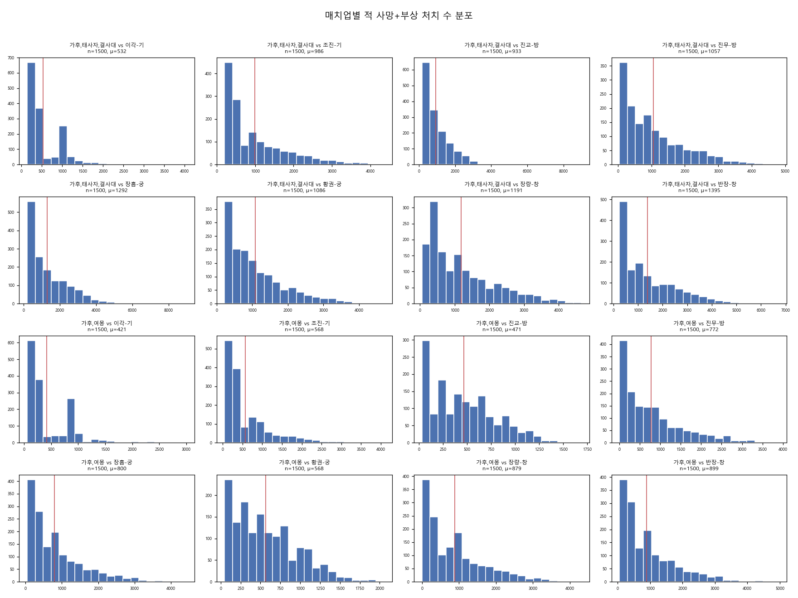

'그놈'이 심심해서 하나둘씩 만들고 있는 삼전 개척 관련 정보.
어디까지나 시뮬 기반이니 시뮬을 믿는다면 믿어도 좋음. '그놈'은 책임 없음.
시간이 부족해서 강하제/관악제 등 기타 개척덱은 계산하지 못했습니다.
문의사항 : https://open.kakao.com/o/s0Q12QLi
| 레벨(병력) | 3000 | 3600 | 4200 | 4800 | 5400 | 6000 | 6600 | 7200 | 7800 | 8400 | 9000 |
|---|---|---|---|---|---|---|---|---|---|---|---|
| 8(2400) | 승리 98.12% 우세무 0.28% 열세무 0.26% 패배 1.34% -253 |
승리 95.22% 우세무 0.68% 열세무 0.74% 패배 3.36% -342 |
승리 88.26% 우세무 1.98% 열세무 1.1% 패배 8.66% -457 |
승리 78.6% 우세무 3.62% 열세무 1.44% 패배 16.34% -569 |
승리 67.84% 우세무 4.72% 열세무 1.96% 패배 25.48% -676 |
승리 55.42% 우세무 6.86% 열세무 2.46% 패배 35.26% -787 |
승리 42.68% 우세무 8.74% 열세무 2.44% 패배 46.14% -859 |
승리 32.82% 우세무 9.12% 열세무 3.06% 패배 55.0% -919 |
승리 21.2% 우세무 10.2% 열세무 3.54% 패배 65.06% -967 |
승리 15.0% 우세무 9.24% 열세무 3.26% 패배 72.5% -1005 |
승리 9.02% 우세무 8.98% 열세무 3.24% 패배 78.76% -1024 |
| 9(2700) | 승리 99.42% 우세무 0.18% 열세무 0.04% 패배 0.36% -225 |
승리 97.58% 우세무 0.68% 열세무 0.4% 패배 1.34% -316 |
승리 93.82% 우세무 1.54% 열세무 0.8% 패배 3.84% -411 |
승리 88.02% 우세무 2.7% 열세무 1.3% 패배 7.98% -525 |
승리 78.96% 우세무 4.7% 열세무 2.08% 패배 14.26% -642 |
승리 67.52% 우세무 6.98% 열세무 2.24% 패배 23.26% -751 |
승리 55.68% 우세무 8.74% 열세무 2.9% 패배 32.68% -858 |
승리 43.66% 우세무 11.08% 열세무 3.12% 패배 42.14% -949 |
승리 33.58% 우세무 11.56% 열세무 4.5% 패배 50.36% -1023 |
승리 23.62% 우세무 12.46% 열세무 4.36% 패배 59.56% -1082 |
승리 16.78% 우세무 12.22% 열세무 4.38% 패배 66.62% -1121 |
| 10(3000) | 승리 99.86% 우세무 0.08% 열세무 0.02% 패배 0.04% -201 |
승리 99.38% 우세무 0.28% 열세무 0.1% 패배 0.24% -265 |
승리 97.5% 우세무 0.6% 열세무 0.52% 패배 1.38% -357 |
승리 93.94% 우세무 1.66% 열세무 1.0% 패배 3.4% -449 |
승리 88.5% 우세무 3.46% 열세무 1.42% 패배 6.62% -554 |
승리 81.08% 우세무 5.84% 열세무 2.04% 패배 11.04% -669 |
승리 71.18% 우세무 8.08% 열세무 2.48% 패배 18.26% -784 |
승리 58.98% 우세무 11.08% 열세무 3.96% 패배 25.98% -906 |
승리 48.36% 우세무 13.64% 열세무 4.68% 패배 33.32% -999 |
승리 40.02% 우세무 14.58% 열세무 4.8% 패배 40.6% -1072 |
승리 29.9% 우세무 16.68% 열세무 4.86% 패배 48.56% -1153 |
| 11(3300) | 승리 99.94% 우세무 0.02% 열세무 0.02% 패배 0.02% -182 |
승리 99.56% 우세무 0.18% 열세무 0.12% 패배 0.14% -247 |
승리 98.72% 우세무 0.5% 열세무 0.24% 패배 0.54% -320 |
승리 96.74% 우세무 1.42% 열세무 0.4% 패배 1.44% -408 |
승리 92.74% 우세무 2.42% 열세무 1.2% 패배 3.64% -510 |
승리 87.16% 우세무 4.38% 열세무 2.08% 패배 6.38% -616 |
승리 79.2% 우세무 7.24% 열세무 2.66% 패배 10.9% -744 |
승리 70.6% 우세무 10.2% 열세무 3.4% 패배 15.8% -845 |
승리 61.82% 우세무 12.12% 열세무 3.86% 패배 22.2% -946 |
승리 50.42% 우세무 15.68% 열세무 4.82% 패배 29.08% -1062 |
승리 40.04% 우세무 17.78% 열세무 5.78% 패배 36.4% -1154 |
| 12(3600) | 승리 100.0% 우세무 0.0% 열세무 0.0% 패배 0.0% -168 |
승리 99.96% 우세무 0.0% 열세무 0.0% 패배 0.04% -220 |
승리 99.28% 우세무 0.44% 열세무 0.04% 패배 0.24% -289 |
승리 97.98% 우세무 1.04% 열세무 0.42% 패배 0.56% -375 |
승리 96.14% 우세무 1.6% 열세무 0.84% 패배 1.42% -462 |
승리 92.14% 우세무 3.24% 열세무 1.16% 패배 3.46% -563 |
승리 86.62% 우세무 5.44% 열세무 1.54% 패배 6.4% -670 |
승리 78.82% 우세무 8.06% 열세무 2.82% 패배 10.3% -798 |
승리 71.3% 우세무 11.02% 열세무 3.62% 패배 14.06% -901 |
승리 61.54% 우세무 14.38% 열세무 4.48% 패배 19.6% -1017 |
승리 52.5% 우세무 16.64% 열세무 4.78% 패배 26.08% -1114 |
| 13(3900) | 승리 100.0% 우세무 0.0% 열세무 0.0% 패배 0.0% -159 |
승리 99.98% 우세무 0.02% 열세무 0.0% 패배 0.0% -210 |
승리 99.76% 우세무 0.12% 열세무 0.08% 패배 0.04% -273 |
승리 99.14% 우세무 0.42% 열세무 0.1% 패배 0.34% -338 |
승리 97.54% 우세무 1.26% 열세무 0.34% 패배 0.86% -422 |
승리 95.08% 우세무 2.32% 열세무 1.06% 패배 1.54% -521 |
승리 90.42% 우세무 4.56% 열세무 1.4% 패배 3.62% -630 |
승리 85.68% 우세무 6.66% 열세무 2.06% 패배 5.6% -727 |
승리 78.38% 우세무 9.46% 열세무 2.74% 패배 9.42% -849 |
승리 70.18% 우세무 12.76% 열세무 4.06% 패배 13.0% -975 |
승리 62.7% 우세무 16.0% 열세무 4.72% 패배 16.58% -1064 |
| 14(4200) | 승리 100.0% 우세무 0.0% 열세무 0.0% 패배 0.0% -150 |
승리 100.0% 우세무 0.0% 열세무 0.0% 패배 0.0% -198 |
승리 99.86% 우세무 0.1% 열세무 0.02% 패배 0.02% -252 |
승리 99.6% 우세무 0.28% 열세무 0.06% 패배 0.06% -320 |
승리 98.7% 우세무 0.68% 열세무 0.3% 패배 0.32% -394 |
승리 96.96% 우세무 1.82% 열세무 0.54% 패배 0.68% -480 |
승리 94.5% 우세무 2.66% 열세무 1.1% 패배 1.74% -562 |
승리 89.34% 우세무 5.52% 열세무 1.72% 패배 3.42% -687 |
승리 82.16% 우세무 8.68% 열세무 2.94% 패배 6.22% -818 |
승리 78.66% 우세무 10.3% 열세무 2.9% 패배 8.14% -884 |
승리 70.52% 우세무 14.68% 열세무 3.8% 패배 11.0% -996 |
| 15(4500) | 승리 100.0% 우세무 0.0% 열세무 0.0% 패배 0.0% -140 |
승리 99.98% 우세무 0.02% 열세무 0.0% 패배 0.0% -185 |
승리 99.96% 우세무 0.02% 열세무 0.02% 패배 0.0% -239 |
승리 99.76% 우세무 0.18% 열세무 0.02% 패배 0.04% -300 |
승리 99.26% 우세무 0.52% 열세무 0.16% 패배 0.06% -363 |
승리 98.18% 우세무 1.22% 열세무 0.32% 패배 0.28% -445 |
승리 95.64% 우세무 2.64% 열세무 0.7% 패배 1.02% -541 |
승리 92.06% 우세무 3.86% 열세무 1.52% 패배 2.56% -640 |
승리 88.66% 우세무 6.34% 열세무 2.04% 패배 2.96% -739 |
승리 82.72% 우세무 9.52% 열세무 2.6% 패배 5.16% -851 |
승리 76.78% 우세무 12.74% 열세무 3.52% 패배 6.96% -947 |
| 16(4800) | 승리 100.0% 우세무 0.0% 열세무 0.0% 패배 0.0% -130 |
승리 100.0% 우세무 0.0% 열세무 0.0% 패배 0.0% -176 |
승리 99.96% 우세무 0.04% 열세무 0.0% 패배 0.0% -224 |
승리 99.96% 우세무 0.02% 열세무 0.02% 패배 0.0% -283 |
승리 99.62% 우세무 0.26% 열세무 0.1% 패배 0.02% -339 |
승리 98.52% 우세무 1.2% 열세무 0.18% 패배 0.1% -421 |
승리 97.38% 우세무 2.04% 열세무 0.3% 패배 0.28% -498 |
승리 94.98% 우세무 3.14% 열세무 0.98% 패배 0.9% -587 |
승리 92.28% 우세무 4.86% 열세무 1.18% 패배 1.68% -673 |
승리 87.26% 우세무 7.46% 열세무 2.22% 패배 3.06% -791 |
승리 82.34% 우세무 10.22% 열세무 2.68% 패배 4.76% -899 |
| 17(5100) | 승리 100.0% 우세무 0.0% 열세무 0.0% 패배 0.0% -120 |
승리 100.0% 우세무 0.0% 열세무 0.0% 패배 0.0% -167 |
승리 100.0% 우세무 0.0% 열세무 0.0% 패배 0.0% -214 |
승리 99.9% 우세무 0.08% 열세무 0.02% 패배 0.0% -268 |
승리 99.88% 우세무 0.08% 열세무 0.02% 패배 0.02% -326 |
승리 99.36% 우세무 0.46% 열세무 0.06% 패배 0.12% -392 |
승리 98.2% 우세무 1.36% 열세무 0.14% 패배 0.3% -465 |
승리 96.88% 우세무 2.04% 열세무 0.48% 패배 0.6% -548 |
승리 94.76% 우세무 3.26% 열세무 0.96% 패배 1.02% -640 |
승리 90.54% 우세무 5.92% 열세무 1.7% 패배 1.84% -747 |
승리 86.48% 우세무 8.38% 열세무 2.3% 패배 2.84% -849 |
| 18(5400) | 승리 100.0% 우세무 0.0% 열세무 0.0% 패배 0.0% -115 |
승리 100.0% 우세무 0.0% 열세무 0.0% 패배 0.0% -154 |
승리 99.98% 우세무 0.02% 열세무 0.0% 패배 0.0% -203 |
승리 100.0% 우세무 0.0% 열세무 0.0% 패배 0.0% -250 |
승리 99.9% 우세무 0.08% 열세무 0.02% 패배 0.0% -305 |
승리 99.74% 우세무 0.24% 열세무 0.02% 패배 0.0% -368 |
승리 99.16% 우세무 0.62% 열세무 0.16% 패배 0.06% -436 |
승리 97.82% 우세무 1.76% 열세무 0.18% 패배 0.24% -516 |
승리 96.7% 우세무 2.3% 열세무 0.64% 패배 0.36% -588 |
승리 93.68% 우세무 4.28% 열세무 1.04% 패배 1.0% -694 |
승리 89.86% 우세무 6.92% 열세무 1.44% 패배 1.78% -793 |
| 19(5700) | 승리 100.0% 우세무 0.0% 열세무 0.0% 패배 0.0% -111 |
승리 100.0% 우세무 0.0% 열세무 0.0% 패배 0.0% -143 |
승리 100.0% 우세무 0.0% 열세무 0.0% 패배 0.0% -188 |
승리 100.0% 우세무 0.0% 열세무 0.0% 패배 0.0% -237 |
승리 99.96% 우세무 0.04% 열세무 0.0% 패배 0.0% -290 |
승리 99.74% 우세무 0.22% 열세무 0.02% 패배 0.02% -343 |
승리 99.26% 우세무 0.62% 열세무 0.12% 패배 0.0% -407 |
승리 98.8% 우세무 0.96% 열세무 0.18% 패배 0.06% -481 |
승리 97.3% 우세무 2.0% 열세무 0.46% 패배 0.24% -558 |
승리 95.38% 우세무 3.28% 열세무 0.72% 패배 0.62% -652 |
승리 93.26% 우세무 4.9% 열세무 0.88% 패배 0.96% -732 |
| 레벨(병력) | 3000 | 3600 | 4200 | 4800 | 5400 | 6000 | 6600 | 7200 | 7800 | 8400 | 9000 |
|---|---|---|---|---|---|---|---|---|---|---|---|
| 8(2400) | 승리 99.86% 우세무 0.04% 열세무 0.02% 패배 0.08% -135 |
승리 99.2% 우세무 0.18% 열세무 0.12% 패배 0.5% -187 |
승리 97.72% 우세무 0.56% 열세무 0.22% 패배 1.5% -253 |
승리 94.16% 우세무 1.64% 열세무 0.46% 패배 3.74% -327 |
승리 87.7% 우세무 4.18% 열세무 0.62% 패배 7.5% -423 |
승리 77.82% 우세무 8.64% 열세무 1.36% 패배 12.18% -517 |
승리 66.54% 우세무 11.92% 열세무 1.98% 패배 19.56% -610 |
승리 52.1% 우세무 17.52% 열세무 3.0% 패배 27.38% -705 |
승리 39.64% 우세무 20.72% 열세무 4.06% 패배 35.58% -778 |
승리 29.68% 우세무 22.24% 열세무 4.86% 패배 43.22% -841 |
승리 20.6% 우세무 22.74% 열세무 5.0% 패배 51.66% -892 |
| 9(2700) | 승리 99.96% 우세무 0.04% 열세무 0.0% 패배 0.0% -123 |
승리 99.7% 우세무 0.1% 열세무 0.02% 패배 0.18% -170 |
승리 99.06% 우세무 0.34% 열세무 0.06% 패배 0.54% -223 |
승리 97.36% 우세무 0.84% 열세무 0.3% 패배 1.5% -294 |
승리 93.92% 우세무 2.36% 열세무 0.38% 패배 3.34% -371 |
승리 86.98% 우세무 5.38% 열세무 0.92% 패배 6.72% -463 |
승리 79.22% 우세무 9.0% 열세무 1.68% 패배 10.1% -554 |
승리 68.04% 우세무 13.66% 열세무 2.3% 패배 16.0% -658 |
승리 56.82% 우세무 18.9% 열세무 2.92% 패배 21.36% -738 |
승리 44.04% 우세무 23.28% 열세무 3.54% 패배 29.14% -826 |
승리 33.26% 우세무 25.7% 열세무 5.24% 패배 35.8% -897 |
| 10(3000) | 승리 100.0% 우세무 0.0% 열세무 0.0% 패배 0.0% -109 |
승리 99.94% 우세무 0.04% 열세무 0.0% 패배 0.02% -144 |
승리 99.78% 우세무 0.06% 열세무 0.02% 패배 0.14% -185 |
승리 99.2% 우세무 0.36% 열세무 0.1% 패배 0.34% -246 |
승리 97.62% 우세무 1.04% 열세무 0.4% 패배 0.94% -310 |
승리 93.8% 우세무 3.06% 열세무 0.58% 패배 2.56% -392 |
승리 89.8% 우세무 5.14% 열세무 0.96% 패배 4.1% -464 |
승리 82.14% 우세무 9.16% 열세무 1.42% 패배 7.28% -562 |
승리 70.44% 우세무 16.0% 열세무 2.24% 패배 11.32% -665 |
승리 60.52% 우세무 20.3% 열세무 2.98% 패배 16.2% -756 |
승리 49.36% 우세무 25.26% 열세무 3.96% 패배 21.42% -843 |
| 11(3300) | 승리 99.98% 우세무 0.02% 열세무 0.0% 패배 0.0% -104 |
승리 100.0% 우세무 0.0% 열세무 0.0% 패배 0.0% -133 |
승리 99.9% 우세무 0.04% 열세무 0.0% 패배 0.06% -174 |
승리 99.7% 우세무 0.18% 열세무 0.04% 패배 0.08% -220 |
승리 98.6% 우세무 0.84% 열세무 0.14% 패배 0.42% -283 |
승리 96.54% 우세무 2.02% 열세무 0.44% 패배 1.0% -353 |
승리 93.58% 우세무 3.58% 열세무 0.66% 패배 2.18% -420 |
승리 88.2% 우세무 6.8% 열세무 0.78% 패배 4.22% -518 |
승리 82.02% 우세무 11.02% 열세무 1.46% 패배 5.5% -589 |
승리 72.86% 우세무 15.92% 열세무 2.0% 패배 9.22% -684 |
승리 63.0% 우세무 21.36% 열세무 3.2% 패배 12.44% -778 |
| 12(3600) | 승리 100.0% 우세무 0.0% 열세무 0.0% 패배 0.0% -95 |
승리 100.0% 우세무 0.0% 열세무 0.0% 패배 0.0% -127 |
승리 99.94% 우세무 0.04% 열세무 0.02% 패배 0.0% -159 |
승리 99.9% 우세무 0.06% 열세무 0.02% 패배 0.02% -200 |
승리 99.56% 우세무 0.3% 열세무 0.06% 패배 0.08% -246 |
승리 98.38% 우세무 0.94% 열세무 0.18% 패배 0.5% -313 |
승리 96.68% 우세무 1.92% 열세무 0.34% 패배 1.06% -378 |
승리 93.28% 우세무 4.44% 열세무 0.62% 패배 1.66% -460 |
승리 88.78% 우세무 7.28% 열세무 0.98% 패배 2.96% -536 |
승리 82.02% 우세무 11.94% 열세무 1.48% 패배 4.56% -621 |
승리 72.8% 우세무 17.1% 열세무 2.4% 패배 7.7% -717 |
| 13(3900) | 승리 100.0% 우세무 0.0% 열세무 0.0% 패배 0.0% -88 |
승리 100.0% 우세무 0.0% 열세무 0.0% 패배 0.0% -117 |
승리 99.98% 우세무 0.0% 열세무 0.02% 패배 0.0% -147 |
승리 100.0% 우세무 0.0% 열세무 0.0% 패배 0.0% -187 |
승리 99.74% 우세무 0.18% 열세무 0.0% 패배 0.08% -229 |
승리 99.18% 우세무 0.5% 열세무 0.12% 패배 0.2% -286 |
승리 98.3% 우세무 1.2% 열세무 0.18% 패배 0.32% -344 |
승리 96.32% 우세무 2.56% 열세무 0.22% 패배 0.9% -414 |
승리 92.98% 우세무 4.94% 열세무 0.5% 패배 1.58% -483 |
승리 87.94% 우세무 8.7% 열세무 0.94% 패배 2.42% -558 |
승리 80.98% 우세무 13.58% 열세무 1.42% 패배 4.02% -656 |
| 14(4200) | 승리 100.0% 우세무 0.0% 열세무 0.0% 패배 0.0% -84 |
승리 100.0% 우세무 0.0% 열세무 0.0% 패배 0.0% -107 |
승리 100.0% 우세무 0.0% 열세무 0.0% 패배 0.0% -139 |
승리 100.0% 우세무 0.0% 열세무 0.0% 패배 0.0% -170 |
승리 99.92% 우세무 0.04% 열세무 0.02% 패배 0.02% -212 |
승리 99.64% 우세무 0.16% 열세무 0.12% 패배 0.08% -257 |
승리 99.04% 우세무 0.76% 열세무 0.06% 패배 0.14% -310 |
승리 97.92% 우세무 1.5% 열세무 0.22% 패배 0.36% -371 |
승리 95.9% 우세무 2.96% 열세무 0.44% 패배 0.7% -440 |
승리 92.94% 우세무 5.24% 열세무 0.4% 패배 1.42% -507 |
승리 88.16% 우세무 8.96% 열세무 0.82% 패배 2.06% -590 |
| 15(4500) | 승리 100.0% 우세무 0.0% 열세무 0.0% 패배 0.0% -80 |
승리 100.0% 우세무 0.0% 열세무 0.0% 패배 0.0% -102 |
승리 100.0% 우세무 0.0% 열세무 0.0% 패배 0.0% -130 |
승리 100.0% 우세무 0.0% 열세무 0.0% 패배 0.0% -161 |
승리 100.0% 우세무 0.0% 열세무 0.0% 패배 0.0% -197 |
승리 99.76% 우세무 0.18% 열세무 0.02% 패배 0.04% -245 |
승리 99.62% 우세무 0.34% 열세무 0.02% 패배 0.02% -288 |
승리 98.72% 우세무 0.9% 열세무 0.28% 패배 0.1% -350 |
승리 97.76% 우세무 1.8% 열세무 0.16% 패배 0.28% -400 |
승리 95.58% 우세무 3.54% 열세무 0.3% 패배 0.58% -470 |
승리 91.84% 우세무 6.46% 열세무 0.5% 패배 1.2% -545 |
| 16(4800) | 승리 100.0% 우세무 0.0% 열세무 0.0% 패배 0.0% -75 |
승리 100.0% 우세무 0.0% 열세무 0.0% 패배 0.0% -99 |
승리 100.0% 우세무 0.0% 열세무 0.0% 패배 0.0% -125 |
승리 100.0% 우세무 0.0% 열세무 0.0% 패배 0.0% -153 |
승리 100.0% 우세무 0.0% 열세무 0.0% 패배 0.0% -182 |
승리 99.88% 우세무 0.08% 열세무 0.0% 패배 0.04% -224 |
승리 99.82% 우세무 0.08% 열세무 0.02% 패배 0.08% -265 |
승리 99.48% 우세무 0.42% 열세무 0.06% 패배 0.04% -315 |
승리 98.54% 우세무 1.24% 열세무 0.12% 패배 0.1% -372 |
승리 97.26% 우세무 2.26% 열세무 0.24% 패배 0.24% -433 |
승리 95.2% 우세무 3.94% 열세무 0.28% 패배 0.58% -491 |
| 17(5100) | 승리 100.0% 우세무 0.0% 열세무 0.0% 패배 0.0% -68 |
승리 100.0% 우세무 0.0% 열세무 0.0% 패배 0.0% -93 |
승리 100.0% 우세무 0.0% 열세무 0.0% 패배 0.0% -116 |
승리 100.0% 우세무 0.0% 열세무 0.0% 패배 0.0% -142 |
승리 100.0% 우세무 0.0% 열세무 0.0% 패배 0.0% -174 |
승리 100.0% 우세무 0.0% 열세무 0.0% 패배 0.0% -212 |
승리 99.9% 우세무 0.1% 열세무 0.0% 패배 0.0% -249 |
승리 99.54% 우세무 0.42% 열세무 0.02% 패배 0.02% -288 |
승리 99.2% 우세무 0.72% 열세무 0.08% 패배 0.0% -345 |
승리 98.4% 우세무 1.34% 열세무 0.12% 패배 0.14% -400 |
승리 96.64% 우세무 2.94% 열세무 0.18% 패배 0.24% -459 |
| 18(5400) | 승리 100.0% 우세무 0.0% 열세무 0.0% 패배 0.0% -66 |
승리 100.0% 우세무 0.0% 열세무 0.0% 패배 0.0% -85 |
승리 100.0% 우세무 0.0% 열세무 0.0% 패배 0.0% -111 |
승리 100.0% 우세무 0.0% 열세무 0.0% 패배 0.0% -138 |
승리 100.0% 우세무 0.0% 열세무 0.0% 패배 0.0% -167 |
승리 99.96% 우세무 0.04% 열세무 0.0% 패배 0.0% -194 |
승리 99.94% 우세무 0.06% 열세무 0.0% 패배 0.0% -234 |
승리 99.9% 우세무 0.1% 열세무 0.0% 패배 0.0% -272 |
승리 99.58% 우세무 0.36% 열세무 0.02% 패배 0.04% -321 |
승리 99.18% 우세무 0.7% 열세무 0.06% 패배 0.06% -373 |
승리 97.84% 우세무 2.02% 열세무 0.06% 패배 0.08% -427 |
| 19(5700) | 승리 100.0% 우세무 0.0% 열세무 0.0% 패배 0.0% -62 |
승리 100.0% 우세무 0.0% 열세무 0.0% 패배 0.0% -83 |
승리 100.0% 우세무 0.0% 열세무 0.0% 패배 0.0% -106 |
승리 100.0% 우세무 0.0% 열세무 0.0% 패배 0.0% -131 |
승리 100.0% 우세무 0.0% 열세무 0.0% 패배 0.0% -156 |
승리 100.0% 우세무 0.0% 열세무 0.0% 패배 0.0% -182 |
승리 100.0% 우세무 0.0% 열세무 0.0% 패배 0.0% -218 |
승리 99.84% 우세무 0.14% 열세무 0.0% 패배 0.02% -260 |
승리 99.76% 우세무 0.22% 열세무 0.02% 패배 0.0% -297 |
승리 99.4% 우세무 0.52% 열세무 0.04% 패배 0.04% -350 |
승리 98.66% 우세무 1.2% 열세무 0.02% 패배 0.12% -400 |
| 레벨(병력) | 3000 | 3600 | 4200 | 4800 | 5400 | 6000 | 6600 | 7200 | 7800 | 8400 | 9000 |
|---|---|---|---|---|---|---|---|---|---|---|---|
| 8(2400) | 승리 99.56% 우세무 0.14% 열세무 0.04% 패배 0.26% -196 |
승리 97.72% 우세무 0.34% 열세무 0.34% 패배 1.6% -288 |
승리 93.92% 우세무 1.08% 열세무 0.7% 패배 4.3% -382 |
승리 86.36% 우세무 2.68% 열세무 0.98% 패배 9.98% -496 |
승리 75.64% 우세무 5.3% 열세무 2.06% 패배 17.0% -599 |
승리 63.38% 우세무 8.6% 열세무 2.56% 패배 25.46% -704 |
승리 49.66% 우세무 10.82% 열세무 3.24% 패배 36.28% -798 |
승리 36.7% 우세무 13.78% 열세무 3.7% 패배 45.82% -867 |
승리 25.82% 우세무 14.98% 열세무 4.64% 패배 54.56% -913 |
승리 15.78% 우세무 16.02% 열세무 4.68% 패배 63.52% -963 |
승리 10.88% 우세무 12.48% 열세무 4.88% 패배 71.76% -989 |
| 9(2700) | 승리 99.84% 우세무 0.06% 열세무 0.04% 패배 0.06% -174 |
승리 99.1% 우세무 0.26% 열세무 0.14% 패배 0.5% -244 |
승리 97.54% 우세무 0.76% 열세무 0.16% 패배 1.54% -334 |
승리 93.14% 우세무 1.64% 열세무 0.78% 패배 4.44% -442 |
승리 85.26% 우세무 4.28% 열세무 1.3% 패배 9.16% -550 |
승리 75.98% 우세무 6.16% 열세무 2.06% 패배 15.8% -656 |
승리 65.52% 우세무 10.2% 열세무 3.14% 패배 21.14% -759 |
승리 50.08% 우세무 14.64% 열세무 3.4% 패배 31.88% -858 |
승리 38.2% 우세무 17.28% 열세무 4.3% 패배 40.22% -938 |
승리 28.16% 우세무 17.76% 열세무 4.98% 패배 49.1% -1002 |
승리 19.82% 우세무 17.1% 열세무 5.66% 패배 57.42% -1055 |
| 10(3000) | 승리 99.94% 우세무 0.02% 열세무 0.0% 패배 0.04% -143 |
승리 99.88% 우세무 0.08% 열세무 0.02% 패배 0.02% -217 |
승리 99.1% 우세무 0.34% 열세무 0.06% 패배 0.5% -286 |
승리 96.92% 우세무 0.94% 열세무 0.44% 패배 1.7% -376 |
승리 92.56% 우세무 2.82% 열세무 0.8% 패배 3.82% -476 |
승리 86.68% 우세무 4.96% 열세무 1.54% 패배 6.82% -583 |
승리 77.3% 우세무 8.3% 열세무 2.42% 패배 11.98% -695 |
승리 68.14% 우세무 11.96% 열세무 2.72% 패배 17.18% -786 |
승리 55.78% 우세무 16.54% 열세무 3.78% 패배 23.9% -890 |
승리 44.14% 우세무 18.56% 열세무 4.9% 패배 32.4% -984 |
승리 34.44% 우세무 20.66% 열세무 5.74% 패배 39.16% -1050 |
| 11(3300) | 승리 100.0% 우세무 0.0% 열세무 0.0% 패배 0.0% -128 |
승리 99.92% 우세무 0.06% 열세무 0.0% 패배 0.02% -189 |
승리 99.8% 우세무 0.08% 열세무 0.02% 패배 0.1% -258 |
승리 98.88% 우세무 0.46% 열세무 0.18% 패배 0.48% -341 |
승리 96.98% 우세무 1.34% 열세무 0.4% 패배 1.28% -424 |
승리 92.54% 우세무 2.9% 열세무 1.0% 패배 3.56% -531 |
승리 87.12% 우세무 5.3% 열세무 1.7% 패배 5.88% -636 |
승리 78.58% 우세무 9.46% 열세무 2.1% 패배 9.86% -731 |
승리 66.96% 우세무 13.64% 열세무 3.76% 패배 15.64% -860 |
승리 58.62% 우세무 17.28% 열세무 3.74% 패배 20.36% -933 |
승리 45.88% 우세무 21.96% 열세무 5.18% 패배 26.98% -1041 |
| 12(3600) | 승리 99.98% 우세무 0.02% 열세무 0.0% 패배 0.0% -115 |
승리 99.96% 우세무 0.04% 열세무 0.0% 패배 0.0% -174 |
승리 99.94% 우세무 0.02% 열세무 0.0% 패배 0.04% -226 |
승리 99.46% 우세무 0.28% 열세무 0.02% 패배 0.24% -311 |
승리 98.62% 우세무 0.68% 열세무 0.2% 패배 0.5% -399 |
승리 95.66% 우세무 1.72% 열세무 0.76% 패배 1.86% -483 |
승리 92.32% 우세무 3.62% 열세무 0.94% 패배 3.12% -575 |
승리 86.56% 우세무 6.26% 열세무 1.62% 패배 5.56% -672 |
승리 78.04% 우세무 10.52% 열세무 2.54% 패배 8.9% -783 |
승리 68.22% 우세무 14.9% 열세무 3.5% 패배 13.38% -905 |
승리 59.16% 우세무 18.9% 열세무 4.06% 패배 17.88% -984 |
| 13(3900) | 승리 100.0% 우세무 0.0% 열세무 0.0% 패배 0.0% -102 |
승리 100.0% 우세무 0.0% 열세무 0.0% 패배 0.0% -157 |
승리 99.92% 우세무 0.06% 열세무 0.02% 패배 0.0% -213 |
승리 99.82% 우세무 0.12% 열세무 0.02% 패배 0.04% -277 |
승리 99.28% 우세무 0.38% 열세무 0.1% 패배 0.24% -344 |
승리 98.02% 우세무 0.9% 열세무 0.4% 패배 0.68% -438 |
승리 95.8% 우세무 2.28% 열세무 0.46% 패배 1.46% -523 |
승리 91.04% 우세무 4.72% 열세무 1.08% 패배 3.16% -629 |
승리 84.38% 우세무 8.52% 열세무 1.98% 패배 5.12% -738 |
승리 77.92% 우세무 11.96% 열세무 2.36% 패배 7.76% -830 |
승리 69.68% 우세무 16.06% 열세무 3.28% 패배 10.98% -930 |
| 14(4200) | 승리 100.0% 우세무 0.0% 열세무 0.0% 패배 0.0% -98 |
승리 100.0% 우세무 0.0% 열세무 0.0% 패배 0.0% -140 |
승리 99.94% 우세무 0.04% 열세무 0.0% 패배 0.02% -195 |
승리 99.9% 우세무 0.08% 열세무 0.02% 패배 0.0% -255 |
승리 99.6% 우세무 0.22% 열세무 0.08% 패배 0.1% -328 |
승리 99.02% 우세무 0.7% 열세무 0.12% 패배 0.16% -396 |
승리 97.38% 우세무 1.56% 열세무 0.3% 패배 0.76% -484 |
승리 94.64% 우세무 3.46% 열세무 0.56% 패배 1.34% -573 |
승리 89.56% 우세무 6.46% 열세무 1.2% 패배 2.78% -681 |
승리 84.02% 우세무 9.28% 열세무 1.7% 패배 5.0% -785 |
승리 77.44% 우세무 13.32% 열세무 2.74% 패배 6.5% -876 |
| 15(4500) | 승리 100.0% 우세무 0.0% 열세무 0.0% 패배 0.0% -87 |
승리 100.0% 우세무 0.0% 열세무 0.0% 패배 0.0% -127 |
승리 100.0% 우세무 0.0% 열세무 0.0% 패배 0.0% -175 |
승리 99.96% 우세무 0.04% 열세무 0.0% 패배 0.0% -234 |
승리 99.8% 우세무 0.14% 열세무 0.04% 패배 0.02% -299 |
승리 99.56% 우세무 0.28% 열세무 0.1% 패배 0.06% -364 |
승리 98.66% 우세무 0.86% 열세무 0.16% 패배 0.32% -455 |
승리 96.4% 우세무 2.38% 열세무 0.52% 패배 0.7% -547 |
승리 94.18% 우세무 3.68% 열세무 0.62% 패배 1.52% -621 |
승리 90.72% 우세무 6.28% 열세무 0.9% 패배 2.1% -704 |
승리 85.16% 우세무 9.14% 열세무 1.76% 패배 3.94% -814 |
| 16(4800) | 승리 100.0% 우세무 0.0% 열세무 0.0% 패배 0.0% -80 |
승리 100.0% 우세무 0.0% 열세무 0.0% 패배 0.0% -116 |
승리 100.0% 우세무 0.0% 열세무 0.0% 패배 0.0% -165 |
승리 99.96% 우세무 0.04% 열세무 0.0% 패배 0.0% -216 |
승리 99.98% 우세무 0.02% 열세무 0.0% 패배 0.0% -273 |
승리 99.66% 우세무 0.26% 열세무 0.02% 패배 0.06% -341 |
승리 99.48% 우세무 0.38% 열세무 0.06% 패배 0.08% -409 |
승리 98.2% 우세무 1.28% 열세무 0.2% 패배 0.32% -494 |
승리 96.7% 우세무 2.24% 열세무 0.44% 패배 0.62% -574 |
승리 92.92% 우세무 5.2% 열세무 0.72% 패배 1.16% -667 |
승리 89.2% 우세무 7.44% 열세무 1.06% 패배 2.3% -751 |
| 17(5100) | 승리 100.0% 우세무 0.0% 열세무 0.0% 패배 0.0% -75 |
승리 100.0% 우세무 0.0% 열세무 0.0% 패배 0.0% -112 |
승리 100.0% 우세무 0.0% 열세무 0.0% 패배 0.0% -152 |
승리 100.0% 우세무 0.0% 열세무 0.0% 패배 0.0% -198 |
승리 99.94% 우세무 0.04% 열세무 0.02% 패배 0.0% -258 |
승리 99.82% 우세무 0.12% 열세무 0.02% 패배 0.04% -325 |
승리 99.64% 우세무 0.3% 열세무 0.04% 패배 0.02% -384 |
승리 99.06% 우세무 0.7% 열세무 0.14% 패배 0.1% -451 |
승리 97.9% 우세무 1.5% 열세무 0.2% 패배 0.4% -525 |
승리 95.7% 우세무 3.46% 열세무 0.26% 패배 0.58% -612 |
승리 92.72% 우세무 5.1% 열세무 0.8% 패배 1.38% -712 |
| 18(5400) | 승리 100.0% 우세무 0.0% 열세무 0.0% 패배 0.0% -70 |
승리 100.0% 우세무 0.0% 열세무 0.0% 패배 0.0% -104 |
승리 100.0% 우세무 0.0% 열세무 0.0% 패배 0.0% -141 |
승리 100.0% 우세무 0.0% 열세무 0.0% 패배 0.0% -190 |
승리 99.98% 우세무 0.02% 열세무 0.0% 패배 0.0% -238 |
승리 99.92% 우세무 0.04% 열세무 0.0% 패배 0.04% -298 |
승리 99.82% 우세무 0.12% 열세무 0.04% 패배 0.02% -361 |
승리 99.42% 우세무 0.44% 열세무 0.14% 패배 0.0% -423 |
승리 98.64% 우세무 1.14% 열세무 0.1% 패배 0.12% -501 |
승리 97.42% 우세무 1.88% 열세무 0.32% 패배 0.38% -577 |
승리 94.86% 우세무 4.02% 열세무 0.5% 패배 0.62% -666 |
| 19(5700) | 승리 100.0% 우세무 0.0% 열세무 0.0% 패배 0.0% -64 |
승리 100.0% 우세무 0.0% 열세무 0.0% 패배 0.0% -94 |
승리 100.0% 우세무 0.0% 열세무 0.0% 패배 0.0% -133 |
승리 100.0% 우세무 0.0% 열세무 0.0% 패배 0.0% -174 |
승리 100.0% 우세무 0.0% 열세무 0.0% 패배 0.0% -222 |
승리 100.0% 우세무 0.0% 열세무 0.0% 패배 0.0% -279 |
승리 99.88% 우세무 0.1% 열세무 0.0% 패배 0.02% -336 |
승리 99.8% 우세무 0.18% 열세무 0.0% 패배 0.02% -399 |
승리 99.26% 우세무 0.6% 열세무 0.04% 패배 0.1% -464 |
승리 98.32% 우세무 1.38% 열세무 0.1% 패배 0.2% -541 |
승리 96.94% 우세무 2.5% 열세무 0.28% 패배 0.28% -615 |
| 레벨(병력) | 3000 | 3600 | 4200 | 4800 | 5400 | 6000 | 6600 | 7200 | 7800 | 8400 | 9000 |
|---|---|---|---|---|---|---|---|---|---|---|---|
| 8(2400) | 승리 98.7% 우세무 0.08% 열세무 0.08% 패배 1.14% -238 |
승리 95.32% 우세무 0.34% 열세무 0.3% 패배 4.04% -337 |
승리 90.64% 우세무 0.58% 열세무 0.4% 패배 8.38% -434 |
승리 80.96% 우세무 2.06% 열세무 0.64% 패배 16.34% -547 |
승리 70.04% 우세무 2.88% 열세무 0.98% 패배 26.1% -653 |
승리 56.56% 우세무 5.12% 열세무 1.14% 패배 37.18% -748 |
승리 42.42% 우세무 6.36% 열세무 1.92% 패배 49.3% -837 |
승리 30.02% 우세무 7.62% 열세무 2.28% 패배 60.08% -899 |
승리 20.22% 우세무 8.42% 열세무 2.4% 패배 68.96% -951 |
승리 14.5% 우세무 7.24% 열세무 2.62% 패배 75.64% -969 |
승리 8.22% 우세무 6.66% 열세무 2.98% 패배 82.14% -988 |
| 9(2700) | 승리 99.72% 우세무 0.0% 열세무 0.02% 패배 0.26% -215 |
승리 98.34% 우세무 0.18% 열세무 0.22% 패배 1.26% -290 |
승리 95.4% 우세무 0.38% 열세무 0.3% 패배 3.92% -389 |
승리 89.48% 우세무 1.2% 열세무 0.56% 패배 8.76% -505 |
승리 81.56% 우세무 2.08% 열세무 0.98% 패배 15.38% -610 |
승리 69.82% 우세무 4.68% 열세무 1.66% 패배 23.84% -732 |
승리 58.62% 우세무 6.92% 열세무 1.8% 패배 32.66% -832 |
승리 45.6% 우세무 8.94% 열세무 2.42% 패배 43.04% -916 |
승리 32.64% 우세무 10.62% 열세무 2.86% 패배 53.88% -998 |
승리 22.46% 우세무 10.9% 열세무 3.68% 패배 62.96% -1057 |
승리 15.96% 우세무 9.72% 열세무 3.38% 패배 70.94% -1075 |
| 10(3000) | 승리 99.92% 우세무 0.0% 열세무 0.0% 패배 0.08% -186 |
승리 99.24% 우세무 0.02% 열세무 0.1% 패배 0.64% -252 |
승리 98.22% 우세무 0.42% 열세무 0.14% 패배 1.22% -333 |
승리 95.82% 우세무 0.4% 열세무 0.36% 패배 3.42% -419 |
승리 90.0% 우세무 1.4% 열세무 0.84% 패배 7.76% -540 |
승리 83.52% 우세무 2.86% 열세무 1.24% 패배 12.38% -644 |
승리 73.76% 우세무 5.12% 열세무 1.64% 패배 19.48% -768 |
승리 62.36% 우세무 8.32% 열세무 2.36% 패배 26.96% -876 |
승리 51.48% 우세무 10.5% 열세무 3.4% 패배 34.62% -972 |
승리 38.0% 우세무 13.08% 열세무 3.8% 패배 45.12% -1066 |
승리 30.7% 우세무 12.96% 열세무 4.66% 패배 51.68% -1115 |
| 11(3300) | 승리 99.96% 우세무 0.02% 열세무 0.0% 패배 0.02% -173 |
승리 99.88% 우세무 0.0% 열세무 0.02% 패배 0.1% -229 |
승리 99.24% 우세무 0.08% 열세무 0.1% 패배 0.58% -299 |
승리 97.44% 우세무 0.4% 열세무 0.4% 패배 1.76% -395 |
승리 95.64% 우세무 0.88% 열세무 0.46% 패배 3.02% -475 |
승리 90.0% 우세무 2.2% 열세무 1.14% 패배 6.66% -597 |
승리 82.82% 우세무 4.24% 열세무 1.46% 패배 11.48% -712 |
승리 73.72% 우세무 6.96% 열세무 2.12% 패배 17.2% -827 |
승리 63.88% 우세무 9.4% 열세무 2.92% 패배 23.8% -940 |
승리 53.64% 우세무 12.4% 열세무 3.2% 패배 30.76% -1027 |
승리 42.1% 우세무 14.42% 열세무 4.22% 패배 39.26% -1128 |
| 12(3600) | 승리 100.0% 우세무 0.0% 열세무 0.0% 패배 0.0% -165 |
승리 99.94% 우세무 0.0% 열세무 0.02% 패배 0.04% -218 |
승리 99.74% 우세무 0.06% 열세무 0.06% 패배 0.14% -280 |
승리 98.56% 우세무 0.28% 열세무 0.2% 패배 0.96% -362 |
승리 97.48% 우세무 0.62% 열세무 0.28% 패배 1.62% -434 |
승리 93.98% 우세무 1.3% 열세무 0.74% 패배 3.98% -544 |
승리 89.1% 우세무 2.96% 열세무 1.36% 패배 6.58% -656 |
승리 83.18% 우세무 4.8% 열세무 1.76% 패배 10.26% -770 |
승리 73.96% 우세무 7.98% 열세무 2.38% 패배 15.68% -885 |
승리 64.2% 우세무 11.42% 열세무 2.98% 패배 21.4% -1001 |
승리 54.94% 우세무 13.02% 열세무 3.98% 패배 28.06% -1090 |
| 13(3900) | 승리 100.0% 우세무 0.0% 열세무 0.0% 패배 0.0% -152 |
승리 100.0% 우세무 0.0% 열세무 0.0% 패배 0.0% -198 |
승리 99.9% 우세무 0.02% 열세무 0.02% 패배 0.06% -255 |
승리 99.5% 우세무 0.22% 열세무 0.08% 패배 0.2% -320 |
승리 98.66% 우세무 0.38% 열세무 0.12% 패배 0.84% -400 |
승리 96.9% 우세무 0.8% 열세무 0.34% 패배 1.96% -494 |
승리 94.12% 우세무 1.78% 열세무 0.82% 패배 3.28% -600 |
승리 89.86% 우세무 3.16% 열세무 1.08% 패배 5.9% -695 |
승리 83.16% 우세무 5.44% 열세무 1.6% 패배 9.8% -809 |
승리 75.44% 우세무 8.32% 열세무 2.48% 패배 13.76% -936 |
승리 66.62% 우세무 12.1% 열세무 2.62% 패배 18.66% -1038 |
| 14(4200) | 승리 100.0% 우세무 0.0% 열세무 0.0% 패배 0.0% -144 |
승리 100.0% 우세무 0.0% 열세무 0.0% 패배 0.0% -183 |
승리 99.92% 우세무 0.02% 열세무 0.02% 패배 0.04% -242 |
승리 99.9% 우세무 0.02% 열세무 0.02% 패배 0.06% -294 |
승리 99.38% 우세무 0.18% 열세무 0.04% 패배 0.4% -369 |
승리 98.34% 우세무 0.52% 열세무 0.22% 패배 0.92% -448 |
승리 96.6% 우세무 1.18% 열세무 0.32% 패배 1.9% -539 |
승리 93.78% 우세무 2.24% 열세무 0.74% 패배 3.24% -644 |
승리 89.3% 우세무 3.98% 열세무 1.32% 패배 5.4% -745 |
승리 82.96% 우세무 6.66% 열세무 1.8% 패배 8.58% -857 |
승리 74.76% 우세무 9.74% 열세무 2.44% 패배 13.06% -983 |
| 15(4500) | 승리 100.0% 우세무 0.0% 열세무 0.0% 패배 0.0% -137 |
승리 100.0% 우세무 0.0% 열세무 0.0% 패배 0.0% -180 |
승리 99.98% 우세무 0.0% 열세무 0.0% 패배 0.02% -223 |
승리 99.98% 우세무 0.0% 열세무 0.0% 패배 0.02% -274 |
승리 99.76% 우세무 0.02% 열세무 0.1% 패배 0.12% -343 |
승리 99.12% 우세무 0.3% 열세무 0.08% 패배 0.5% -413 |
승리 98.08% 우세무 0.64% 열세무 0.3% 패배 0.98% -488 |
승리 96.08% 우세무 1.74% 열세무 0.48% 패배 1.7% -592 |
승리 93.04% 우세무 2.96% 열세무 1.02% 패배 2.98% -684 |
승리 88.04% 우세무 4.66% 열세무 1.84% 패배 5.46% -809 |
승리 83.44% 우세무 7.44% 열세무 1.92% 패배 7.2% -897 |
| 16(4800) | 승리 100.0% 우세무 0.0% 열세무 0.0% 패배 0.0% -130 |
승리 100.0% 우세무 0.0% 열세무 0.0% 패배 0.0% -163 |
승리 100.0% 우세무 0.0% 열세무 0.0% 패배 0.0% -212 |
승리 100.0% 우세무 0.0% 열세무 0.0% 패배 0.0% -264 |
승리 99.82% 우세무 0.06% 열세무 0.04% 패배 0.08% -320 |
승리 99.46% 우세무 0.18% 열세무 0.16% 패배 0.2% -385 |
승리 98.96% 우세무 0.36% 열세무 0.2% 패배 0.48% -463 |
승리 97.52% 우세무 0.88% 열세무 0.42% 패배 1.18% -545 |
승리 95.66% 우세무 1.9% 열세무 0.52% 패배 1.92% -641 |
승리 92.8% 우세무 3.46% 열세무 0.84% 패배 2.9% -726 |
승리 87.44% 우세무 5.74% 열세무 1.68% 패배 5.14% -855 |
| 17(5100) | 승리 100.0% 우세무 0.0% 열세무 0.0% 패배 0.0% -121 |
승리 100.0% 우세무 0.0% 열세무 0.0% 패배 0.0% -161 |
승리 100.0% 우세무 0.0% 열세무 0.0% 패배 0.0% -198 |
승리 99.98% 우세무 0.0% 열세무 0.02% 패배 0.0% -255 |
승리 99.98% 우세무 0.0% 열세무 0.02% 패배 0.0% -307 |
승리 99.8% 우세무 0.08% 열세무 0.08% 패배 0.04% -358 |
승리 99.42% 우세무 0.2% 열세무 0.16% 패배 0.22% -432 |
승리 98.94% 우세무 0.44% 열세무 0.26% 패배 0.36% -511 |
승리 97.28% 우세무 1.3% 열세무 0.52% 패배 0.9% -603 |
승리 95.44% 우세무 2.36% 열세무 0.62% 패배 1.58% -675 |
승리 91.26% 우세무 4.4% 열세무 1.22% 패배 3.12% -800 |
| 18(5400) | 승리 100.0% 우세무 0.0% 열세무 0.0% 패배 0.0% -118 |
승리 100.0% 우세무 0.0% 열세무 0.0% 패배 0.0% -153 |
승리 100.0% 우세무 0.0% 열세무 0.0% 패배 0.0% -190 |
승리 100.0% 우세무 0.0% 열세무 0.0% 패배 0.0% -233 |
승리 99.96% 우세무 0.02% 열세무 0.02% 패배 0.0% -276 |
승리 99.92% 우세무 0.02% 열세무 0.04% 패배 0.02% -340 |
승리 99.68% 우세무 0.16% 열세무 0.08% 패배 0.08% -401 |
승리 99.4% 우세무 0.22% 열세무 0.14% 패배 0.24% -475 |
승리 98.56% 우세무 0.84% 열세무 0.16% 패배 0.44% -554 |
승리 96.76% 우세무 1.66% 열세무 0.44% 패배 1.14% -632 |
승리 94.72% 우세무 3.1% 열세무 0.38% 패배 1.8% -723 |
| 19(5700) | 승리 100.0% 우세무 0.0% 열세무 0.0% 패배 0.0% -114 |
승리 100.0% 우세무 0.0% 열세무 0.0% 패배 0.0% -147 |
승리 100.0% 우세무 0.0% 열세무 0.0% 패배 0.0% -184 |
승리 100.0% 우세무 0.0% 열세무 0.0% 패배 0.0% -221 |
승리 100.0% 우세무 0.0% 열세무 0.0% 패배 0.0% -272 |
승리 99.98% 우세무 0.02% 열세무 0.0% 패배 0.0% -323 |
승리 99.88% 우세무 0.02% 열세무 0.02% 패배 0.08% -373 |
승리 99.82% 우세무 0.04% 열세무 0.04% 패배 0.1% -437 |
승리 99.4% 우세무 0.3% 열세무 0.08% 패배 0.22% -506 |
승리 98.08% 우세무 1.02% 열세무 0.34% 패배 0.56% -585 |
승리 96.64% 우세무 1.68% 열세무 0.56% 패배 1.12% -674 |
| 레벨(병력) | 3000 | 3600 | 4200 | 4800 | 5400 | 6000 | 6600 | 7200 | 7800 | 8400 | 9000 |
|---|---|---|---|---|---|---|---|---|---|---|---|
| 8(2400) | 승리 85.66% 우세무 1.22% 열세무 0.7% 패배 12.42% -457 |
승리 70.86% 우세무 2.24% 열세무 1.34% 패배 25.56% -629 |
승리 54.34% 우세무 2.96% 열세무 1.32% 패배 41.38% -776 |
승리 36.06% 우세무 4.1% 열세무 1.52% 패배 58.32% -894 |
승리 23.36% 우세무 5.32% 열세무 1.9% 패배 69.42% -966 |
승리 13.12% 우세무 5.62% 열세무 1.76% 패배 79.5% -1008 |
승리 6.56% 우세무 4.36% 열세무 2.04% 패배 87.04% -1026 |
승리 3.12% 우세무 3.74% 열세무 1.1% 패배 92.04% -1029 |
승리 1.58% 우세무 2.44% 열세무 1.04% 패배 94.94% -1025 |
승리 0.64% 우세무 1.9% 열세무 1.3% 패배 96.16% -1012 |
승리 0.16% 우세무 1.18% 열세무 0.66% 패배 98.0% -1007 |
| 9(2700) | 승리 92.06% 우세무 1.06% 열세무 0.6% 패배 6.28% -406 |
승리 81.48% 우세무 1.88% 열세무 1.2% 패배 15.44% -578 |
승리 67.36% 우세무 3.32% 열세무 1.12% 패배 28.2% -749 |
승리 49.31% 우세무 4.0% 열세무 2.14% 패배 44.55% -917 |
승리 34.79% 우세무 6.06% 열세무 2.32% 패배 56.83% -1015 |
승리 23.3% 우세무 6.76% 열세무 2.6% 패배 67.34% -1083 |
승리 13.78% 우세무 7.14% 열세무 2.34% 패배 76.74% -1127 |
승리 7.18% 우세무 5.58% 열세무 2.22% 패배 85.02% -1151 |
승리 3.44% 우세무 5.12% 열세무 2.02% 패배 89.42% -1164 |
승리 1.72% 우세무 3.46% 열세무 1.92% 패배 92.9% -1158 |
승리 0.8% 우세무 2.72% 열세무 1.14% 패배 95.34% -1161 |
| 10(3000) | 승리 96.36% 우세무 0.64% 열세무 0.42% 패배 2.58% -341 |
승리 90.48% 우세무 1.74% 열세무 0.84% 패배 6.94% -488 |
승리 79.38% 우세무 3.0% 열세무 1.44% 패배 16.18% -676 |
승리 67.26% 우세무 4.32% 열세무 2.2% 패배 26.22% -834 |
승리 51.51% 우세무 6.3% 열세무 3.06% 패배 39.13% -992 |
승리 36.4% 우세무 8.3% 열세무 3.4% 패배 51.9% -1113 |
승리 25.04% 우세무 9.1% 열세무 3.22% 패배 62.64% -1196 |
승리 15.56% 우세무 9.28% 열세무 3.06% 패배 72.1% -1253 |
승리 9.72% 우세무 7.94% 열세무 3.2% 패배 79.14% -1279 |
승리 5.28% 우세무 6.86% 열세무 2.94% 패배 84.92% -1301 |
승리 2.8% 우세무 5.72% 열세무 2.7% 패배 88.78% -1308 |
| 11(3300) | 승리 98.34% 우세무 0.38% 열세무 0.26% 패배 1.02% -297 |
승리 94.2% 우세무 1.18% 열세무 0.66% 패배 3.96% -449 |
승리 87.04% 우세무 2.42% 열세무 1.52% 패배 9.02% -610 |
승리 76.72% 우세무 4.06% 열세무 2.16% 패배 17.06% -776 |
승리 62.66% 우세무 6.06% 열세무 2.78% 패배 28.5% -962 |
승리 48.5% 우세무 8.08% 열세무 3.74% 패배 39.68% -1117 |
승리 35.18% 우세무 10.4% 열세무 3.44% 패배 50.98% -1222 |
승리 24.88% 우세무 10.98% 열세무 3.8% 패배 60.33% -1309 |
승리 15.64% 우세무 11.54% 열세무 3.96% 패배 68.85% -1368 |
승리 8.84% 우세무 10.86% 열세무 3.94% 패배 76.36% -1415 |
승리 5.4% 우세무 8.56% 열세무 3.46% 패배 82.58% -1438 |
| 12(3600) | 승리 99.18% 우세무 0.34% 열세무 0.08% 패배 0.4% -267 |
승리 96.58% 우세무 0.9% 열세무 0.5% 패배 2.02% -396 |
승리 91.42% 우세무 1.66% 열세무 1.44% 패배 5.48% -552 |
승리 84.18% 우세무 3.3% 열세무 1.84% 패배 10.68% -711 |
승리 73.45% 우세무 5.16% 열세무 2.28% 패배 19.11% -891 |
승리 60.24% 우세무 7.72% 열세무 3.5% 패배 28.54% -1065 |
승리 48.16% 우세무 10.12% 열세무 3.34% 패배 38.38% -1202 |
승리 34.1% 우세무 12.14% 열세무 4.06% 패배 49.7% -1344 |
승리 24.78% 우세무 12.16% 열세무 4.12% 패배 58.94% -1424 |
승리 16.7% 우세무 12.16% 열세무 4.92% 패배 66.22% -1484 |
승리 9.58% 우세무 11.82% 열세무 4.58% 패배 74.02% -1535 |
| 13(3900) | 승리 99.64% 우세무 0.16% 열세무 0.08% 패배 0.12% -243 |
승리 98.4% 우세무 0.6% 열세무 0.26% 패배 0.74% -349 |
승리 94.9% 우세무 1.38% 열세무 0.94% 패배 2.78% -495 |
승리 89.28% 우세무 2.68% 열세무 1.4% 패배 6.64% -655 |
승리 81.24% 우세무 4.36% 열세무 2.28% 패배 12.12% -835 |
승리 70.18% 우세무 6.48% 열세무 2.86% 패배 20.48% -1012 |
승리 57.74% 우세무 9.7% 열세무 3.8% 패배 28.76% -1181 |
승리 46.7% 우세무 11.98% 열세무 4.36% 패배 36.96% -1308 |
승리 33.06% 우세무 13.6% 열세무 5.02% 패배 48.32% -1448 |
승리 23.4% 우세무 15.26% 열세무 4.2% 패배 57.14% -1535 |
승리 15.92% 우세무 14.74% 열세무 4.86% 패배 64.48% -1606 |
| 14(4200) | 승리 99.8% 우세무 0.1% 열세무 0.02% 패배 0.08% -226 |
승리 99.1% 우세무 0.36% 열세무 0.2% 패배 0.34% -310 |
승리 96.92% 우세무 0.94% 열세무 0.66% 패배 1.48% -443 |
승리 93.34% 우세무 1.72% 열세무 1.26% 패배 3.68% -594 |
승리 86.92% 우세무 3.38% 열세무 1.58% 패배 8.12% -768 |
승리 78.94% 우세무 4.58% 열세무 2.72% 패배 13.76% -942 |
승리 67.51% 우세무 7.96% 열세무 3.58% 패배 20.94% -1124 |
승리 54.72% 우세무 12.06% 열세무 4.48% 패배 28.74% -1298 |
승리 42.56% 우세무 13.48% 열세무 5.18% 패배 38.78% -1452 |
승리 31.99% 우세무 15.62% 열세무 5.78% 패배 46.61% -1566 |
승리 22.72% 우세무 16.7% 열세무 5.92% 패배 54.66% -1653 |
| 15(4500) | 승리 99.9% 우세무 0.08% 열세무 0.0% 패배 0.02% -206 |
승리 99.5% 우세무 0.1% 열세무 0.24% 패배 0.16% -293 |
승리 98.06% 우세무 0.66% 열세무 0.46% 패배 0.82% -413 |
승리 95.76% 우세무 1.44% 열세무 0.78% 패배 2.02% -544 |
승리 91.04% 우세무 2.6% 열세무 1.8% 패배 4.56% -697 |
승리 84.46% 우세무 4.74% 열세무 2.12% 패배 8.68% -870 |
승리 74.46% 우세무 7.54% 열세무 3.28% 패배 14.72% -1075 |
승리 63.6% 우세무 10.86% 열세무 3.94% 패배 21.6% -1240 |
승리 52.25% 우세무 13.26% 열세무 5.44% 패배 29.05% -1411 |
승리 42.26% 우세무 15.92% 열세무 5.34% 패배 36.48% -1536 |
승리 31.4% 우세무 17.46% 열세무 5.88% 패배 45.26% -1658 |
| 16(4800) | 승리 99.98% 우세무 0.02% 열세무 0.0% 패배 0.0% -192 |
승리 99.74% 우세무 0.12% 열세무 0.08% 패배 0.06% -275 |
승리 98.96% 우세무 0.54% 열세무 0.18% 패배 0.32% -365 |
승리 97.2% 우세무 0.94% 열세무 0.6% 패배 1.26% -486 |
승리 94.42% 우세무 1.62% 열세무 1.12% 패배 2.84% -630 |
승리 87.88% 우세무 4.3% 열세무 2.04% 패배 5.78% -831 |
승리 80.78% 우세무 6.26% 열세무 2.64% 패배 10.32% -1004 |
승리 72.44% 우세무 9.02% 열세무 4.08% 패배 14.46% -1163 |
승리 59.94% 우세무 12.6% 열세무 4.94% 패배 22.52% -1370 |
승리 50.39% 우세무 15.72% 열세무 4.94% 패배 28.95% -1502 |
승리 40.42% 우세무 17.66% 열세무 5.5% 패배 36.42% -1646 |
| 17(5100) | 승리 99.98% 우세무 0.0% 열세무 0.02% 패배 0.0% -182 |
승리 99.9% 우세무 0.08% 열세무 0.02% 패배 0.0% -255 |
승리 99.46% 우세무 0.26% 열세무 0.1% 패배 0.18% -340 |
승리 98.58% 우세무 0.68% 열세무 0.3% 패배 0.44% -444 |
승리 96.02% 우세무 1.38% 열세무 0.98% 패배 1.62% -582 |
승리 92.02% 우세무 3.2% 열세무 1.4% 패배 3.38% -755 |
승리 87.54% 우세무 4.5% 열세무 2.02% 패배 5.94% -895 |
승리 78.3% 우세무 7.56% 열세무 3.32% 패배 10.82% -1109 |
승리 69.12% 우세무 10.96% 열세무 4.48% 패배 15.44% -1281 |
승리 57.59% 우세무 15.42% 열세무 5.38% 패배 21.6% -1462 |
승리 48.52% 우세무 17.5% 열세무 6.14% 패배 27.84% -1595 |
| 18(5400) | 승리 99.98% 우세무 0.02% 열세무 0.0% 패배 0.0% -174 |
승리 99.96% 우세무 0.02% 열세무 0.02% 패배 0.0% -231 |
승리 99.8% 우세무 0.16% 열세무 0.02% 패배 0.02% -303 |
승리 99.04% 우세무 0.38% 열세무 0.3% 패배 0.28% -406 |
승리 97.68% 우세무 0.98% 열세무 0.48% 패배 0.86% -532 |
승리 94.5% 우세무 2.26% 열세무 1.26% 패배 1.98% -677 |
승리 90.06% 우세무 4.04% 열세무 1.88% 패배 4.02% -830 |
승리 83.8% 우세무 6.3% 열세무 2.6% 패배 7.3% -1028 |
승리 76.36% 우세무 9.32% 열세무 3.4% 패배 10.92% -1189 |
승리 66.14% 우세무 13.32% 열세무 4.76% 패배 15.78% -1388 |
승리 57.74% 우세무 15.7% 열세무 5.3% 패배 21.26% -1536 |
| 19(5700) | 승리 99.98% 우세무 0.02% 열세무 0.0% 패배 0.0% -165 |
승리 99.98% 우세무 0.0% 열세무 0.02% 패배 0.0% -221 |
승리 99.92% 우세무 0.04% 열세무 0.02% 패배 0.02% -294 |
승리 99.54% 우세무 0.26% 열세무 0.12% 패배 0.08% -380 |
승리 98.4% 우세무 0.94% 열세무 0.42% 패배 0.24% -488 |
승리 96.58% 우세무 1.52% 열세무 0.66% 패배 1.24% -618 |
승리 92.94% 우세무 3.22% 열세무 1.54% 패배 2.3% -775 |
승리 87.82% 우세무 5.4% 열세무 2.08% 패배 4.7% -945 |
승리 81.8% 우세무 7.12% 열세무 3.44% 패배 7.64% -1108 |
승리 72.26% 우세무 11.66% 열세무 3.8% 패배 12.28% -1333 |
승리 64.84% 우세무 14.16% 열세무 4.98% 패배 16.02% -1461 |
| 레벨(병력) | 3000 | 3600 | 4200 | 4800 | 5400 | 6000 | 6600 | 7200 | 7800 | 8400 | 9000 |
|---|---|---|---|---|---|---|---|---|---|---|---|
| 8(2400) | 승리 93.48% 우세무 1.34% 열세무 0.34% 패배 4.84% -332 |
승리 84.76% 우세무 3.04% 열세무 1.14% 패배 11.06% -469 |
승리 71.3% 우세무 6.1% 열세무 1.84% 패배 20.76% -593 |
승리 56.58% 우세무 9.26% 열세무 2.26% 패배 31.9% -713 |
승리 41.78% 우세무 12.04% 열세무 2.62% 패배 43.56% -807 |
승리 27.54% 우세무 14.04% 열세무 3.18% 패배 55.24% -889 |
승리 18.32% 우세무 13.36% 열세무 3.02% 패배 65.3% -931 |
승리 11.32% 우세무 12.64% 열세무 3.46% 패배 72.58% -971 |
승리 5.52% 우세무 11.82% 열세무 2.98% 패배 79.68% -984 |
승리 3.58% 우세무 10.34% 열세무 3.34% 패배 82.74% -995 |
승리 1.38% 우세무 7.56% 열세무 3.42% 패배 87.64% -1003 |
| 9(2700) | 승리 96.18% 우세무 1.14% 열세무 0.3% 패배 2.38% -303 |
승리 90.98% 우세무 2.3% 열세무 0.72% 패배 6.0% -416 |
승리 81.46% 우세무 4.8% 열세무 1.3% 패배 12.44% -559 |
승리 69.82% 우세무 8.24% 열세무 1.8% 패배 20.14% -673 |
승리 56.86% 우세무 10.28% 열세무 2.9% 패배 29.96% -791 |
승리 40.46% 우세무 15.28% 열세무 3.48% 패배 40.78% -908 |
승리 28.94% 우세무 16.66% 열세무 3.64% 패배 50.76% -978 |
승리 18.8% 우세무 17.12% 열세무 3.98% 패배 60.1% -1032 |
승리 10.7% 우세무 16.46% 열세무 3.66% 패배 69.18% -1077 |
승리 6.18% 우세무 14.3% 열세무 4.56% 패배 74.96% -1105 |
승리 3.44% 우세무 13.46% 열세무 4.16% 패배 78.94% -1120 |
| 10(3000) | 승리 98.56% 우세무 0.48% 열세무 0.16% 패배 0.8% -254 |
승리 95.9% 우세무 1.4% 열세무 0.32% 패배 2.38% -355 |
승리 89.44% 우세무 3.5% 열세무 1.34% 패배 5.72% -489 |
승리 78.6% 우세무 6.6% 열세무 1.86% 패배 12.94% -630 |
승리 68.36% 우세무 10.12% 열세무 2.48% 패배 19.04% -745 |
승리 55.5% 우세무 14.14% 열세무 3.36% 패배 27.0% -856 |
승리 41.4% 우세무 17.88% 열세무 3.68% 패배 37.04% -969 |
승리 30.18% 우세무 19.6% 열세무 4.42% 패배 45.8% -1058 |
승리 21.12% 우세무 20.84% 열세무 5.04% 패배 53.0% -1121 |
승리 14.54% 우세무 19.32% 열세무 5.4% 패배 60.74% -1174 |
승리 8.4% 우세무 18.98% 열세무 5.06% 패배 67.56% -1215 |
| 11(3300) | 승리 99.42% 우세무 0.26% 열세무 0.12% 패배 0.2% -229 |
승리 97.3% 우세무 1.18% 열세무 0.42% 패배 1.1% -328 |
승리 93.3% 우세무 2.76% 열세무 0.76% 패배 3.18% -442 |
승리 87.0% 우세무 4.82% 열세무 1.56% 패배 6.62% -562 |
승리 77.12% 우세무 8.12% 열세무 2.14% 패배 12.62% -697 |
승리 66.56% 우세무 13.16% 열세무 3.34% 패배 16.94% -812 |
승리 53.58% 우세무 17.18% 열세무 3.44% 패배 25.8% -936 |
승리 41.04% 우세무 20.78% 열세무 4.44% 패배 33.74% -1051 |
승리 31.4% 우세무 22.28% 열세무 4.74% 패배 41.58% -1134 |
승리 22.94% 우세무 22.68% 열세무 5.58% 패배 48.8% -1202 |
승리 14.14% 우세무 22.7% 열세무 6.54% 패배 56.62% -1271 |
| 12(3600) | 승리 99.62% 우세무 0.14% 열세무 0.06% 패배 0.18% -203 |
승리 98.54% 우세무 0.66% 열세무 0.24% 패배 0.56% -294 |
승리 95.96% 우세무 1.76% 열세무 0.54% 패배 1.74% -399 |
승리 91.46% 우세무 3.78% 열세무 1.1% 패배 3.66% -509 |
승리 83.38% 우세무 7.32% 열세무 1.78% 패배 7.52% -653 |
승리 75.12% 우세무 10.58% 열세무 2.34% 패배 11.96% -766 |
승리 64.0% 우세무 14.82% 열세무 3.36% 패배 17.82% -901 |
승리 51.48% 우세무 18.5% 열세무 4.06% 패배 25.96% -1028 |
승리 41.28% 우세무 22.52% 열세무 4.82% 패배 31.38% -1119 |
승리 30.84% 우세무 24.82% 열세무 5.42% 패배 38.92% -1221 |
승리 22.22% 우세무 24.88% 열세무 5.68% 패배 47.22% -1298 |
| 13(3900) | 승리 99.86% 우세무 0.1% 열세무 0.02% 패배 0.02% -187 |
승리 99.2% 우세무 0.48% 열세무 0.12% 패배 0.2% -272 |
승리 97.28% 우세무 1.36% 열세무 0.22% 패배 1.14% -371 |
승리 94.68% 우세무 2.54% 열세무 0.58% 패배 2.2% -482 |
승리 88.5% 우세무 5.56% 열세무 1.58% 패배 4.36% -610 |
승리 80.32% 우세무 8.94% 열세무 2.04% 패배 8.7% -743 |
승리 71.64% 우세무 12.02% 열세무 3.12% 패배 13.22% -869 |
승리 61.68% 우세무 16.68% 열세무 3.56% 패배 18.08% -987 |
승리 47.76% 우세무 21.82% 열세무 4.46% 패배 25.96% -1129 |
승리 39.04% 우세무 24.54% 열세무 5.5% 패배 30.92% -1221 |
승리 29.88% 우세무 25.48% 열세무 6.26% 패배 38.38% -1319 |
| 14(4200) | 승리 99.92% 우세무 0.06% 열세무 0.02% 패배 0.0% -180 |
승리 99.46% 우세무 0.42% 열세무 0.04% 패배 0.08% -256 |
승리 98.34% 우세무 0.96% 열세무 0.32% 패배 0.38% -341 |
승리 96.06% 우세무 2.12% 열세무 0.6% 패배 1.22% -444 |
승리 91.86% 우세무 4.52% 열세무 1.02% 패배 2.6% -558 |
승리 85.9% 우세무 6.8% 열세무 1.74% 패배 5.56% -696 |
승리 77.26% 우세무 11.26% 열세무 2.5% 패배 8.98% -827 |
승리 70.16% 우세무 14.38% 열세무 2.96% 패배 12.5% -933 |
승리 58.24% 우세무 19.56% 열세무 4.42% 패배 17.78% -1079 |
승리 48.66% 우세무 22.46% 열세무 4.98% 패배 23.9% -1189 |
승리 37.92% 우세무 26.64% 열세무 6.32% 패배 29.12% -1295 |
| 15(4500) | 승리 99.98% 우세무 0.02% 열세무 0.0% 패배 0.0% -158 |
승리 99.74% 우세무 0.14% 열세무 0.06% 패배 0.06% -228 |
승리 99.08% 우세무 0.56% 열세무 0.18% 패배 0.18% -313 |
승리 97.24% 우세무 1.7% 열세무 0.46% 패배 0.6% -426 |
승리 94.92% 우세무 3.06% 열세무 0.54% 패배 1.48% -520 |
승리 88.9% 우세무 6.0% 열세무 1.32% 패배 3.78% -651 |
승리 84.18% 우세무 8.52% 열세무 1.92% 패배 5.38% -759 |
승리 76.0% 우세무 12.86% 열세무 2.78% 패배 8.36% -886 |
승리 66.52% 우세무 17.42% 열세무 3.74% 패배 12.32% -1012 |
승리 55.88% 우세무 22.42% 열세무 4.42% 패배 17.28% -1156 |
승리 47.28% 우세무 24.64% 열세무 5.02% 패배 23.06% -1264 |
| 16(4800) | 승리 99.96% 우세무 0.02% 열세무 0.02% 패배 0.0% -147 |
승리 99.92% 우세무 0.08% 열세무 0.0% 패배 0.0% -210 |
승리 99.54% 우세무 0.36% 열세무 0.06% 패배 0.04% -281 |
승리 98.14% 우세무 1.18% 열세무 0.32% 패배 0.36% -383 |
승리 96.8% 우세무 2.0% 열세무 0.42% 패배 0.78% -474 |
승리 93.22% 우세무 4.3% 열세무 0.9% 패배 1.58% -581 |
승리 87.6% 우세무 7.08% 열세무 1.9% 패배 3.42% -711 |
승리 81.52% 우세무 10.52% 열세무 2.08% 패배 5.88% -838 |
승리 72.26% 우세무 15.34% 열세무 3.16% 패배 9.24% -976 |
승리 63.0% 우세무 20.24% 열세무 3.8% 패배 12.96% -1104 |
승리 54.98% 우세무 23.48% 열세무 4.9% 패배 16.64% -1217 |
| 17(5100) | 승리 100.0% 우세무 0.0% 열세무 0.0% 패배 0.0% -138 |
승리 99.92% 우세무 0.08% 열세무 0.0% 패배 0.0% -200 |
승리 99.74% 우세무 0.24% 열세무 0.02% 패배 0.0% -265 |
승리 99.18% 우세무 0.56% 열세무 0.12% 패배 0.14% -348 |
승리 97.76% 우세무 1.38% 열세무 0.42% 패배 0.44% -437 |
승리 95.12% 우세무 3.18% 열세무 0.56% 패배 1.14% -538 |
승리 90.04% 우세무 6.4% 열세무 1.24% 패배 2.32% -674 |
승리 85.64% 우세무 8.96% 열세무 1.6% 패배 3.8% -778 |
승리 77.64% 우세무 12.88% 열세무 2.66% 패배 6.82% -921 |
승리 70.24% 우세무 17.56% 열세무 2.72% 패배 9.48% -1035 |
승리 61.54% 우세무 21.98% 열세무 3.76% 패배 12.72% -1157 |
| 18(5400) | 승리 100.0% 우세무 0.0% 열세무 0.0% 패배 0.0% -126 |
승리 100.0% 우세무 0.0% 열세무 0.0% 패배 0.0% -184 |
승리 99.78% 우세무 0.16% 열세무 0.0% 패배 0.06% -250 |
승리 99.34% 우세무 0.58% 열세무 0.04% 패배 0.04% -325 |
승리 98.44% 우세무 1.24% 열세무 0.16% 패배 0.16% -403 |
승리 95.92% 우세무 2.76% 열세무 0.62% 패배 0.7% -509 |
승리 93.6% 우세무 4.4% 열세무 0.74% 패배 1.26% -604 |
승리 88.92% 우세무 7.52% 열세무 1.26% 패배 2.3% -739 |
승리 83.48% 우세무 10.86% 열세무 1.88% 패배 3.78% -856 |
승리 76.64% 우세무 15.16% 열세무 2.62% 패배 5.58% -968 |
승리 68.74% 우세무 18.74% 열세무 3.62% 패배 8.9% -1104 |
| 19(5700) | 승리 100.0% 우세무 0.0% 열세무 0.0% 패배 0.0% -117 |
승리 100.0% 우세무 0.0% 열세무 0.0% 패배 0.0% -168 |
승리 99.84% 우세무 0.14% 열세무 0.0% 패배 0.02% -235 |
승리 99.58% 우세무 0.32% 열세무 0.04% 패배 0.06% -304 |
승리 99.04% 우세무 0.68% 열세무 0.1% 패배 0.18% -381 |
승리 97.78% 우세무 1.74% 열세무 0.22% 패배 0.26% -469 |
승리 95.24% 우세무 3.42% 열세무 0.66% 패배 0.68% -572 |
승리 91.32% 우세무 6.04% 열세무 0.96% 패배 1.68% -691 |
승리 85.38% 우세무 9.76% 열세무 1.7% 패배 3.16% -828 |
승리 82.12% 우세무 12.04% 열세무 2.24% 패배 3.6% -904 |
승리 74.32% 우세무 16.64% 열세무 2.68% 패배 6.36% -1044 |
| 레벨(병력) | 3000 | 3600 | 4200 | 4800 | 5400 | 6000 | 6600 | 7200 | 7800 | 8400 | 9000 |
|---|---|---|---|---|---|---|---|---|---|---|---|
| 8(2400) | 승리 98.94% 우세무 0.14% 열세무 0.04% 패배 0.88% -183 |
승리 96.54% 우세무 0.4% 열세무 0.18% 패배 2.88% -260 |
승리 92.34% 우세무 1.2% 열세무 0.4% 패배 6.06% -354 |
승리 85.06% 우세무 2.88% 열세무 0.64% 패배 11.42% -451 |
승리 74.14% 우세무 5.84% 열세무 0.98% 패배 19.04% -565 |
승리 59.52% 우세무 9.9% 열세무 1.52% 패배 29.06% -675 |
승리 46.34% 우세무 14.2% 열세무 2.2% 패배 37.26% -753 |
승리 31.52% 우세무 16.66% 열세무 2.48% 패배 49.34% -832 |
승리 20.7% 우세무 17.28% 열세무 2.98% 패배 59.04% -889 |
승리 13.1% 우세무 17.22% 열세무 3.36% 패배 66.32% -927 |
승리 6.62% 우세무 15.62% 열세무 3.7% 패배 74.06% -962 |
| 9(2700) | 승리 99.68% 우세무 0.06% 열세무 0.02% 패배 0.24% -160 |
승리 98.86% 우세무 0.24% 열세무 0.02% 패배 0.88% -230 |
승리 96.5% 우세무 0.62% 열세무 0.1% 패배 2.78% -311 |
승리 91.96% 우세무 1.88% 열세무 0.42% 패배 5.74% -407 |
승리 84.68% 우세무 3.86% 열세무 0.52% 패배 10.94% -506 |
승리 72.58% 우세무 8.04% 열세무 0.98% 패배 18.4% -640 |
승리 60.18% 우세무 12.16% 열세무 1.82% 패배 25.84% -737 |
승리 45.76% 우세무 17.28% 열세무 2.68% 패배 34.28% -824 |
승리 34.1% 우세무 20.4% 열세무 3.02% 패배 42.48% -900 |
승리 23.64% 우세무 20.54% 열세무 4.16% 패배 51.66% -973 |
승리 13.94% 우세무 21.6% 열세무 4.1% 패배 60.36% -1029 |
| 10(3000) | 승리 99.94% 우세무 0.02% 열세무 0.0% 패배 0.04% -139 |
승리 99.56% 우세무 0.18% 열세무 0.06% 패배 0.2% -191 |
승리 98.36% 우세무 0.28% 열세무 0.14% 패배 1.22% -262 |
승리 96.48% 우세무 0.82% 열세무 0.2% 패배 2.5% -344 |
승리 91.88% 우세무 2.38% 열세무 0.46% 패배 5.28% -444 |
승리 86.32% 우세무 4.26% 열세무 0.74% 패배 8.68% -539 |
승리 76.26% 우세무 9.38% 열세무 1.18% 패배 13.18% -651 |
승리 63.92% 우세무 13.92% 열세무 2.22% 패배 19.94% -756 |
승리 52.42% 우세무 18.12% 열세무 2.5% 패배 26.96% -854 |
승리 39.84% 우세무 22.54% 열세무 3.08% 패배 34.54% -938 |
승리 27.86% 우세무 25.54% 열세무 4.34% 패배 42.26% -1024 |
| 11(3300) | 승리 100.0% 우세무 0.0% 열세무 0.0% 패배 0.0% -129 |
승리 99.68% 우세무 0.1% 열세무 0.02% 패배 0.2% -182 |
승리 99.42% 우세무 0.14% 열세무 0.08% 패배 0.36% -239 |
승리 98.64% 우세무 0.36% 열세무 0.14% 패배 0.86% -312 |
승리 96.26% 우세무 1.24% 열세무 0.34% 패배 2.16% -400 |
승리 91.18% 우세무 3.54% 열세무 0.76% 패배 4.52% -507 |
승리 84.58% 우세무 7.06% 열세무 0.96% 패배 7.4% -607 |
승리 75.86% 우세무 10.58% 열세무 1.58% 패배 11.98% -717 |
승리 64.96% 우세무 15.88% 열세무 2.7% 패배 16.46% -829 |
승리 51.56% 우세무 22.16% 열세무 3.84% 패배 22.44% -935 |
승리 40.62% 우세무 25.38% 열세무 4.36% 패배 29.64% -1023 |
| 12(3600) | 승리 100.0% 우세무 0.0% 열세무 0.0% 패배 0.0% -120 |
승리 99.96% 우세무 0.0% 열세무 0.0% 패배 0.04% -161 |
승리 99.88% 우세무 0.06% 열세무 0.0% 패배 0.06% -214 |
승리 99.36% 우세무 0.22% 열세무 0.1% 패배 0.32% -278 |
승리 97.78% 우세무 0.88% 열세무 0.18% 패배 1.16% -360 |
승리 95.46% 우세무 1.86% 열세무 0.46% 패배 2.22% -448 |
승리 91.2% 우세무 4.52% 열세무 0.7% 패배 3.58% -542 |
승리 84.08% 우세무 7.82% 열세무 1.0% 패배 7.1% -654 |
승리 76.2% 우세무 12.44% 열세무 1.9% 패배 9.46% -754 |
승리 64.28% 우세무 18.16% 열세무 2.74% 패배 14.82% -874 |
승리 52.04% 우세무 24.74% 열세무 3.86% 패배 19.36% -986 |
| 13(3900) | 승리 100.0% 우세무 0.0% 열세무 0.0% 패배 0.0% -114 |
승리 100.0% 우세무 0.0% 열세무 0.0% 패배 0.0% -153 |
승리 99.88% 우세무 0.04% 열세무 0.0% 패배 0.08% -194 |
승리 99.72% 우세무 0.08% 열세무 0.02% 패배 0.18% -248 |
승리 98.76% 우세무 0.46% 열세무 0.14% 패배 0.64% -325 |
승리 97.76% 우세무 1.0% 열세무 0.22% 패배 1.02% -405 |
승리 94.8% 우세무 2.28% 열세무 0.54% 패배 2.38% -493 |
승리 90.64% 우세무 4.84% 열세무 0.92% 패배 3.6% -590 |
승리 81.88% 우세무 9.9% 열세무 1.2% 패배 7.02% -722 |
승리 73.16% 우세무 15.04% 열세무 1.86% 패배 9.94% -824 |
승리 64.28% 우세무 19.08% 열세무 3.08% 패배 13.56% -930 |
| 14(4200) | 승리 100.0% 우세무 0.0% 열세무 0.0% 패배 0.0% -107 |
승리 99.98% 우세무 0.0% 열세무 0.0% 패배 0.02% -141 |
승리 100.0% 우세무 0.0% 열세무 0.0% 패배 0.0% -182 |
승리 99.86% 우세무 0.02% 열세무 0.04% 패배 0.08% -234 |
승리 99.62% 우세무 0.16% 열세무 0.08% 패배 0.14% -292 |
승리 98.72% 우세무 0.46% 열세무 0.22% 패배 0.6% -371 |
승리 96.8% 우세무 1.48% 열세무 0.28% 패배 1.44% -444 |
승리 94.76% 우세무 3.14% 열세무 0.34% 패배 1.76% -534 |
승리 89.1% 우세무 6.06% 열세무 0.84% 패배 4.0% -652 |
승리 81.72% 우세무 10.58% 열세무 1.54% 패배 6.16% -751 |
승리 72.3% 우세무 16.5% 열세무 2.0% 패배 9.2% -876 |
| 15(4500) | 승리 100.0% 우세무 0.0% 열세무 0.0% 패배 0.0% -99 |
승리 100.0% 우세무 0.0% 열세무 0.0% 패배 0.0% -128 |
승리 99.98% 우세무 0.0% 열세무 0.0% 패배 0.02% -169 |
승리 99.92% 우세무 0.06% 열세무 0.02% 패배 0.0% -212 |
승리 99.82% 우세무 0.12% 열세무 0.04% 패배 0.02% -272 |
승리 99.48% 우세무 0.26% 열세무 0.06% 패배 0.2% -331 |
승리 98.54% 우세무 0.74% 열세무 0.12% 패배 0.6% -409 |
승리 96.7% 우세무 1.88% 열세무 0.34% 패배 1.08% -492 |
승리 92.72% 우세무 4.24% 열세무 0.7% 패배 2.34% -588 |
승리 87.92% 우세무 7.02% 열세무 1.34% 패배 3.72% -697 |
승리 80.64% 우세무 11.56% 열세무 1.7% 패배 6.1% -810 |
| 16(4800) | 승리 100.0% 우세무 0.0% 열세무 0.0% 패배 0.0% -97 |
승리 100.0% 우세무 0.0% 열세무 0.0% 패배 0.0% -129 |
승리 100.0% 우세무 0.0% 열세무 0.0% 패배 0.0% -157 |
승리 99.96% 우세무 0.02% 열세무 0.02% 패배 0.0% -198 |
승리 99.86% 우세무 0.08% 열세무 0.02% 패배 0.04% -247 |
승리 99.72% 우세무 0.1% 열세무 0.0% 패배 0.18% -307 |
승리 99.16% 우세무 0.52% 열세무 0.1% 패배 0.22% -368 |
승리 98.0% 우세무 1.4% 열세무 0.06% 패배 0.54% -447 |
승리 95.76% 우세무 2.74% 열세무 0.46% 패배 1.04% -544 |
승리 92.2% 우세무 5.76% 열세무 0.4% 패배 1.64% -634 |
승리 87.12% 우세무 8.76% 열세무 0.84% 패배 3.28% -724 |
| 17(5100) | 승리 100.0% 우세무 0.0% 열세무 0.0% 패배 0.0% -91 |
승리 100.0% 우세무 0.0% 열세무 0.0% 패배 0.0% -116 |
승리 100.0% 우세무 0.0% 열세무 0.0% 패배 0.0% -149 |
승리 100.0% 우세무 0.0% 열세무 0.0% 패배 0.0% -191 |
승리 99.98% 우세무 0.02% 열세무 0.0% 패배 0.0% -236 |
승리 99.88% 우세무 0.1% 열세무 0.0% 패배 0.02% -286 |
승리 99.68% 우세무 0.22% 열세무 0.02% 패배 0.08% -348 |
승리 98.84% 우세무 0.72% 열세무 0.16% 패배 0.28% -425 |
승리 97.38% 우세무 1.76% 열세무 0.36% 패배 0.5% -489 |
승리 94.96% 우세무 3.46% 열세무 0.36% 패배 1.22% -579 |
승리 91.08% 우세무 5.92% 열세무 0.92% 패배 2.08% -684 |
| 18(5400) | 승리 100.0% 우세무 0.0% 열세무 0.0% 패배 0.0% -86 |
승리 100.0% 우세무 0.0% 열세무 0.0% 패배 0.0% -110 |
승리 100.0% 우세무 0.0% 열세무 0.0% 패배 0.0% -140 |
승리 100.0% 우세무 0.0% 열세무 0.0% 패배 0.0% -179 |
승리 99.98% 우세무 0.02% 열세무 0.0% 패배 0.0% -218 |
승리 99.96% 우세무 0.02% 열세무 0.02% 패배 0.0% -269 |
승리 99.76% 우세무 0.14% 열세무 0.02% 패배 0.08% -326 |
승리 99.4% 우세무 0.46% 열세무 0.06% 패배 0.08% -385 |
승리 98.16% 우세무 1.28% 열세무 0.2% 패배 0.36% -470 |
승리 96.6% 우세무 2.44% 열세무 0.22% 패배 0.74% -542 |
승리 93.76% 우세무 4.52% 열세무 0.44% 패배 1.28% -634 |
| 19(5700) | 승리 100.0% 우세무 0.0% 열세무 0.0% 패배 0.0% -83 |
승리 100.0% 우세무 0.0% 열세무 0.0% 패배 0.0% -107 |
승리 100.0% 우세무 0.0% 열세무 0.0% 패배 0.0% -133 |
승리 100.0% 우세무 0.0% 열세무 0.0% 패배 0.0% -170 |
승리 100.0% 우세무 0.0% 열세무 0.0% 패배 0.0% -207 |
승리 99.92% 우세무 0.06% 열세무 0.0% 패배 0.02% -246 |
승리 99.98% 우세무 0.02% 열세무 0.0% 패배 0.0% -301 |
승리 99.62% 우세무 0.28% 열세무 0.02% 패배 0.08% -356 |
승리 99.18% 우세무 0.66% 열세무 0.08% 패배 0.08% -428 |
승리 97.94% 우세무 1.5% 열세무 0.22% 패배 0.34% -499 |
승리 96.34% 우세무 2.82% 열세무 0.3% 패배 0.54% -570 |
| 레벨(병력) | 3000 | 3600 | 4200 | 4800 | 5400 | 6000 | 6600 | 7200 | 7800 | 8400 | 9000 |
|---|---|---|---|---|---|---|---|---|---|---|---|
| 8(2400) | 승리 97.06% 우세무 0.66% 열세무 0.42% 패배 1.86% -225 |
승리 92.14% 우세무 2.14% 열세무 1.06% 패배 4.66% -327 |
승리 84.64% 우세무 4.06% 열세무 1.42% 패배 9.88% -434 |
승리 72.86% 우세무 8.02% 열세무 2.7% 패배 16.42% -553 |
승리 58.38% 우세무 12.54% 열세무 3.74% 패배 25.34% -677 |
승리 41.94% 우세무 17.72% 열세무 3.74% 패배 36.6% -789 |
승리 29.04% 우세무 20.0% 열세무 4.82% 패배 46.14% -875 |
승리 18.74% 우세무 21.08% 열세무 5.08% 패배 55.1% -934 |
승리 11.16% 우세무 18.96% 열세무 5.76% 패배 64.12% -982 |
승리 6.5% 우세무 17.36% 열세무 5.86% 패배 70.27% -1016 |
승리 2.84% 우세무 13.88% 열세무 5.84% 패배 77.44% -1038 |
| 9(2700) | 승리 98.88% 우세무 0.24% 열세무 0.34% 패배 0.54% -197 |
승리 95.68% 우세무 1.12% 열세무 0.98% 패배 2.22% -289 |
승리 90.98% 우세무 3.3% 열세무 1.22% 패배 4.5% -377 |
승리 82.2% 우세무 6.28% 열세무 2.28% 패배 9.24% -507 |
승리 70.5% 우세무 10.8% 열세무 2.6% 패배 16.1% -625 |
승리 55.74% 우세무 15.92% 열세무 4.24% 패배 24.1% -759 |
승리 42.46% 우세무 21.06% 열세무 4.94% 패배 31.54% -856 |
승리 28.47% 우세무 25.05% 열세무 5.84% 패배 40.65% -961 |
승리 20.0% 우세무 23.74% 열세무 6.46% 패배 49.8% -1027 |
승리 13.06% 우세무 23.12% 열세무 6.46% 패배 57.36% -1080 |
승리 7.48% 우세무 21.46% 열세무 6.38% 패배 64.68% -1117 |
| 10(3000) | 승리 99.44% 우세무 0.36% 열세무 0.1% 패배 0.1% -168 |
승리 98.08% 우세무 0.66% 열세무 0.4% 패배 0.86% -235 |
승리 95.28% 우세무 1.68% 열세무 0.86% 패배 2.18% -326 |
승리 89.92% 우세무 4.3% 열세무 1.38% 패배 4.4% -426 |
승리 81.14% 우세무 7.96% 열세무 2.94% 패배 7.96% -555 |
승리 70.14% 우세무 13.3% 열세무 2.84% 패배 13.72% -672 |
승리 57.2% 우세무 19.3% 열세무 4.18% 패배 19.32% -791 |
승리 44.4% 우세무 24.26% 열세무 5.3% 패배 26.04% -902 |
승리 32.38% 우세무 27.24% 열세무 6.46% 패배 33.92% -1007 |
승리 22.92% 우세무 28.24% 열세무 7.08% 패배 41.76% -1087 |
승리 14.68% 우세무 29.34% 열세무 7.46% 패배 48.52% -1155 |
| 11(3300) | 승리 99.88% 우세무 0.06% 열세무 0.02% 패배 0.04% -150 |
승리 99.04% 우세무 0.4% 열세무 0.22% 패배 0.34% -213 |
승리 97.04% 우세무 1.18% 열세무 0.7% 패배 1.08% -292 |
승리 93.44% 우세무 3.1% 열세무 0.88% 패배 2.58% -384 |
승리 87.44% 우세무 5.8% 열세무 1.9% 패배 4.86% -493 |
승리 79.84% 우세무 9.98% 열세무 2.46% 패배 7.72% -600 |
승리 68.42% 우세무 16.02% 열세무 3.6% 패배 11.96% -721 |
승리 55.06% 우세무 21.94% 열세무 5.66% 패배 17.34% -861 |
승리 43.24% 우세무 27.76% 열세무 6.1% 패배 22.9% -976 |
승리 33.36% 우세무 30.48% 열세무 7.02% 패배 29.14% -1060 |
승리 23.34% 우세무 31.83% 열세무 7.92% 패배 36.91% -1154 |
| 12(3600) | 승리 99.82% 우세무 0.14% 열세무 0.04% 패배 0.0% -142 |
승리 99.7% 우세무 0.12% 열세무 0.06% 패배 0.12% -192 |
승리 98.62% 우세무 0.6% 열세무 0.36% 패배 0.42% -257 |
승리 96.28% 우세무 2.18% 열세무 0.62% 패배 0.92% -339 |
승리 91.98% 우세무 3.92% 열세무 1.48% 패배 2.62% -443 |
승리 85.02% 우세무 8.12% 열세무 1.88% 패배 4.98% -557 |
승리 78.04% 우세무 12.14% 열세무 2.86% 패배 6.96% -651 |
승리 66.54% 우세무 18.32% 열세무 3.56% 패배 11.58% -790 |
승리 53.6% 우세무 25.22% 열세무 5.48% 패배 15.7% -917 |
승리 42.28% 우세무 30.46% 열세무 6.3% 패배 20.96% -1033 |
승리 33.3% 우세무 33.34% 열세무 7.0% 패배 26.36% -1131 |
| 13(3900) | 승리 100.0% 우세무 0.0% 열세무 0.0% 패배 0.0% -129 |
승리 99.68% 우세무 0.2% 열세무 0.1% 패배 0.02% -180 |
승리 99.18% 우세무 0.4% 열세무 0.28% 패배 0.14% -234 |
승리 97.92% 우세무 1.2% 열세무 0.42% 패배 0.46% -307 |
승리 95.22% 우세무 2.74% 열세무 0.92% 패배 1.12% -393 |
승리 90.3% 우세무 5.48% 열세무 1.66% 패배 2.56% -504 |
승리 84.44% 우세무 9.46% 열세무 2.08% 패배 4.02% -589 |
승리 73.3% 우세무 16.04% 열세무 3.64% 패배 7.02% -741 |
승리 64.36% 우세무 21.32% 열세무 4.12% 패배 10.2% -849 |
승리 53.2% 우세무 26.4% 열세무 5.8% 패배 14.6% -965 |
승리 43.4% 우세무 31.46% 열세무 6.86% 패배 18.28% -1076 |
| 14(4200) | 승리 99.98% 우세무 0.02% 열세무 0.0% 패배 0.0% -121 |
승리 99.9% 우세무 0.06% 열세무 0.04% 패배 0.0% -163 |
승리 99.44% 우세무 0.4% 열세무 0.1% 패배 0.06% -212 |
승리 98.78% 우세무 0.82% 열세무 0.26% 패배 0.14% -283 |
승리 96.74% 우세무 2.14% 열세무 0.46% 패배 0.66% -352 |
승리 94.42% 우세무 3.48% 열세무 0.9% 패배 1.2% -430 |
승리 88.58% 우세무 6.84% 열세무 2.06% 패배 2.52% -547 |
승리 82.26% 우세무 11.24% 열세무 2.5% 패배 4.0% -646 |
승리 71.78% 우세무 17.46% 열세무 3.82% 패배 6.94% -789 |
승리 63.32% 우세무 22.96% 열세무 4.56% 패배 9.16% -893 |
승리 52.88% 우세무 28.58% 열세무 5.94% 패배 12.6% -1015 |
| 15(4500) | 승리 100.0% 우세무 0.0% 열세무 0.0% 패배 0.0% -114 |
승리 99.96% 우세무 0.0% 열세무 0.04% 패배 0.0% -152 |
승리 99.74% 우세무 0.18% 열세무 0.08% 패배 0.0% -196 |
승리 99.26% 우세무 0.5% 열세무 0.12% 패배 0.12% -253 |
승리 98.18% 우세무 1.22% 열세무 0.3% 패배 0.3% -324 |
승리 96.18% 우세무 2.42% 열세무 0.64% 패배 0.76% -398 |
승리 91.84% 우세무 5.32% 열세무 1.3% 패배 1.54% -506 |
승리 86.12% 우세무 9.32% 열세무 2.0% 패배 2.56% -610 |
승리 78.86% 우세무 14.04% 열세무 2.8% 패배 4.3% -727 |
승리 71.04% 우세무 19.72% 열세무 3.52% 패배 5.72% -832 |
승리 62.18% 우세무 23.84% 열세무 4.8% 패배 9.18% -945 |
| 16(4800) | 승리 99.98% 우세무 0.02% 열세무 0.0% 패배 0.0% -107 |
승리 99.92% 우세무 0.08% 열세무 0.0% 패배 0.0% -144 |
승리 99.84% 우세무 0.14% 열세무 0.02% 패배 0.0% -185 |
승리 99.54% 우세무 0.38% 열세무 0.06% 패배 0.02% -230 |
승리 99.0% 우세무 0.62% 열세무 0.24% 패배 0.14% -292 |
승리 97.04% 우세무 1.84% 열세무 0.82% 패배 0.3% -372 |
승리 94.52% 우세무 3.84% 열세무 0.86% 패배 0.78% -458 |
승리 90.52% 우세무 6.7% 열세무 1.14% 패배 1.64% -545 |
승리 84.9% 우세무 10.78% 열세무 1.7% 패배 2.62% -652 |
승리 77.32% 우세무 15.68% 열세무 3.1% 패배 3.9% -779 |
승리 69.72% 우세무 21.08% 열세무 3.66% 패배 5.54% -869 |
| 17(5100) | 승리 100.0% 우세무 0.0% 열세무 0.0% 패배 0.0% -99 |
승리 100.0% 우세무 0.0% 열세무 0.0% 패배 0.0% -134 |
승리 99.9% 우세무 0.08% 열세무 0.02% 패배 0.0% -175 |
승리 99.8% 우세무 0.12% 열세무 0.08% 패배 0.0% -218 |
승리 99.46% 우세무 0.38% 열세무 0.12% 패배 0.04% -275 |
승리 98.34% 우세무 1.14% 열세무 0.28% 패배 0.24% -339 |
승리 96.2% 우세무 2.74% 열세무 0.68% 패배 0.38% -422 |
승리 93.48% 우세무 5.02% 열세무 0.64% 패배 0.86% -502 |
승리 88.68% 우세무 8.36% 열세무 1.78% 패배 1.18% -602 |
승리 82.78% 우세무 12.48% 열세무 2.2% 패배 2.54% -707 |
승리 74.9% 우세무 18.08% 열세무 3.34% 패배 3.68% -837 |
| 18(5400) | 승리 100.0% 우세무 0.0% 열세무 0.0% 패배 0.0% -93 |
승리 99.98% 우세무 0.02% 열세무 0.0% 패배 0.0% -124 |
승리 99.98% 우세무 0.0% 열세무 0.02% 패배 0.0% -160 |
승리 99.88% 우세무 0.1% 열세무 0.02% 패배 0.0% -208 |
승리 99.64% 우세무 0.28% 열세무 0.08% 패배 0.0% -245 |
승리 98.56% 우세무 1.08% 열세무 0.32% 패배 0.04% -322 |
승리 97.56% 우세무 1.84% 열세무 0.44% 패배 0.16% -381 |
승리 95.02% 우세무 3.78% 열세무 0.72% 패배 0.48% -466 |
승리 92.2% 우세무 5.94% 열세무 1.06% 패배 0.8% -552 |
승리 87.12% 우세무 10.1% 열세무 1.44% 패배 1.34% -642 |
승리 80.48% 우세무 15.1% 열세무 2.18% 패배 2.24% -761 |
| 19(5700) | 승리 100.0% 우세무 0.0% 열세무 0.0% 패배 0.0% -90 |
승리 100.0% 우세무 0.0% 열세무 0.0% 패배 0.0% -121 |
승리 100.0% 우세무 0.0% 열세무 0.0% 패배 0.0% -157 |
승리 99.94% 우세무 0.06% 열세무 0.0% 패배 0.0% -193 |
승리 99.8% 우세무 0.12% 열세무 0.08% 패배 0.0% -239 |
승리 99.4% 우세무 0.44% 열세무 0.16% 패배 0.0% -287 |
승리 98.08% 우세무 1.32% 열세무 0.54% 패배 0.06% -360 |
승리 96.82% 우세무 2.42% 열세무 0.5% 패배 0.26% -428 |
승리 94.7% 우세무 4.16% 열세무 0.68% 패배 0.46% -502 |
승리 91.18% 우세무 6.7% 열세무 1.24% 패배 0.88% -589 |
승리 84.94% 우세무 11.58% 열세무 1.86% 패배 1.62% -709 |
| 레벨(병력) | 3000 | 3600 | 4200 | 4800 | 5400 | 6000 | 6600 | 7200 | 7800 | 8400 | 9000 |
|---|---|---|---|---|---|---|---|---|---|---|---|
| 8(2400) | 승리 98.28% 우세무 0.84% 열세무 0.28% 패배 0.6% -238 |
승리 93.34% 우세무 2.84% 열세무 0.5% 패배 3.32% -340 |
승리 85.88% 우세무 6.12% 열세무 1.38% 패배 6.62% -449 |
승리 72.66% 우세무 10.8% 열세무 2.6% 패배 13.94% -576 |
승리 57.92% 우세무 15.58% 열세무 3.24% 패배 23.26% -698 |
승리 43.34% 우세무 19.18% 열세무 4.92% 패배 32.56% -806 |
승리 28.96% 우세무 20.92% 열세무 6.06% 패배 44.06% -899 |
승리 19.4% 우세무 20.56% 열세무 6.36% 패배 53.68% -966 |
승리 12.32% 우세무 18.16% 열세무 6.42% 패배 63.1% -1015 |
승리 6.72% 우세무 14.9% 열세무 6.26% 패배 72.12% -1058 |
승리 4.02% 우세무 12.02% 열세무 6.26% 패배 77.7% -1074 |
| 9(2700) | 승리 99.02% 우세무 0.56% 열세무 0.14% 패배 0.28% -217 |
승리 96.98% 우세무 1.82% 열세무 0.32% 패배 0.88% -300 |
승리 91.48% 우세무 4.56% 열세무 0.84% 패배 3.12% -399 |
승리 81.56% 우세무 8.92% 열세무 2.0% 패배 7.52% -532 |
승리 69.5% 우세무 14.32% 열세무 3.02% 패배 13.16% -652 |
승리 55.64% 우세무 18.5% 열세무 4.8% 패배 21.06% -781 |
승리 43.3% 우세무 20.88% 열세무 5.84% 패배 29.98% -886 |
승리 29.58% 우세무 24.26% 열세무 7.46% 패배 38.7% -980 |
승리 21.18% 우세무 23.4% 열세무 7.74% 패배 47.68% -1053 |
승리 13.82% 우세무 21.36% 열세무 8.94% 패배 55.88% -1110 |
승리 7.2% 우세무 18.46% 열세무 8.66% 패배 65.68% -1164 |
| 10(3000) | 승리 99.72% 우세무 0.26% 열세무 0.02% 패배 0.0% -185 |
승리 98.7% 우세무 0.78% 열세무 0.12% 패배 0.4% -260 |
승리 95.7% 우세무 2.88% 열세무 0.56% 패배 0.86% -342 |
승리 90.02% 우세무 6.28% 열세무 0.94% 패배 2.76% -443 |
승리 80.54% 우세무 11.58% 열세무 2.28% 패배 5.6% -564 |
승리 69.28% 우세무 16.6% 열세무 3.32% 패배 10.8% -693 |
승리 57.58% 우세무 22.1% 열세무 5.44% 패배 14.88% -806 |
승리 46.92% 우세무 24.2% 열세무 6.26% 패배 22.62% -907 |
승리 33.04% 우세무 27.26% 열세무 7.82% 패배 31.88% -1014 |
승리 24.14% 우세무 28.84% 열세무 8.88% 패배 38.14% -1092 |
승리 16.48% 우세무 26.06% 열세무 10.4% 패배 47.06% -1178 |
| 11(3300) | 승리 99.88% 우세무 0.1% 열세무 0.0% 패배 0.02% -172 |
승리 99.2% 우세무 0.66% 열세무 0.02% 패배 0.12% -234 |
승리 97.62% 우세무 1.74% 열세무 0.26% 패배 0.38% -304 |
승리 93.38% 우세무 4.74% 열세무 0.68% 패배 1.2% -407 |
승리 87.14% 우세무 8.82% 열세무 1.26% 패배 2.78% -513 |
승리 77.52% 우세무 14.4% 열세무 2.52% 패배 5.56% -629 |
승리 67.84% 우세무 18.96% 열세무 4.2% 패배 9.0% -747 |
승리 54.88% 우세무 24.9% 열세무 5.86% 패배 14.36% -871 |
승리 44.16% 우세무 27.5% 열세무 6.94% 패배 21.4% -985 |
승리 33.92% 우세무 30.84% 열세무 8.6% 패배 26.64% -1074 |
승리 24.68% 우세무 31.98% 열세무 9.82% 패배 33.52% -1167 |
| 12(3600) | 승리 99.96% 우세무 0.04% 열세무 0.0% 패배 0.0% -156 |
승리 99.62% 우세무 0.34% 열세무 0.02% 패배 0.02% -212 |
승리 98.58% 우세무 1.18% 열세무 0.14% 패배 0.1% -284 |
승리 95.92% 우세무 3.14% 열세무 0.34% 패배 0.6% -367 |
승리 91.6% 우세무 6.26% 열세무 1.02% 패배 1.12% -464 |
승리 84.98% 우세무 10.16% 열세무 1.94% 패배 2.92% -568 |
승리 75.28% 우세무 16.56% 열세무 3.0% 패배 5.16% -692 |
승리 64.94% 우세무 22.28% 열세무 4.38% 패배 8.4% -809 |
승리 54.58% 우세무 25.68% 열세무 6.56% 패배 13.18% -929 |
승리 44.52% 우세무 30.5% 열세무 7.04% 패배 17.94% -1037 |
승리 33.24% 우세무 34.26% 열세무 9.46% 패배 23.04% -1146 |
| 13(3900) | 승리 99.98% 우세무 0.02% 열세무 0.0% 패배 0.0% -144 |
승리 99.68% 우세무 0.3% 열세무 0.02% 패배 0.0% -195 |
승리 99.02% 우세무 0.88% 열세무 0.06% 패배 0.04% -268 |
승리 97.9% 우세무 1.78% 열세무 0.18% 패배 0.14% -331 |
승리 94.26% 우세무 4.82% 열세무 0.46% 패배 0.46% -424 |
승리 89.48% 우세무 8.16% 열세무 1.26% 패배 1.1% -524 |
승리 82.28% 우세무 13.1% 열세무 2.06% 패배 2.56% -628 |
승리 72.74% 우세무 19.22% 열세무 3.22% 패배 4.82% -751 |
승리 62.98% 우세무 24.36% 열세무 4.78% 패배 7.88% -862 |
승리 53.74% 우세무 28.7% 열세무 6.6% 패배 10.96% -980 |
승리 43.12% 우세무 32.0% 열세무 9.08% 패배 15.8% -1094 |
| 14(4200) | 승리 100.0% 우세무 0.0% 열세무 0.0% 패배 0.0% -137 |
승리 99.84% 우세무 0.16% 열세무 0.0% 패배 0.0% -183 |
승리 99.6% 우세무 0.36% 열세무 0.02% 패배 0.02% -242 |
승리 98.76% 우세무 1.08% 열세무 0.12% 패배 0.04% -303 |
승리 96.46% 우세무 3.0% 열세무 0.36% 패배 0.18% -381 |
승리 92.54% 우세무 6.22% 열세무 0.72% 패배 0.52% -477 |
승리 86.28% 우세무 10.86% 열세무 1.44% 패배 1.42% -586 |
승리 78.86% 우세무 15.82% 열세무 2.58% 패배 2.74% -698 |
승리 71.96% 우세무 20.44% 열세무 3.32% 패배 4.28% -797 |
승리 61.96% 우세무 26.32% 열세무 4.8% 패배 6.92% -917 |
승리 51.34% 우세무 31.14% 열세무 7.06% 패배 10.46% -1034 |
| 15(4500) | 승리 99.98% 우세무 0.02% 열세무 0.0% 패배 0.0% -132 |
승리 99.96% 우세무 0.04% 열세무 0.0% 패배 0.0% -174 |
승리 99.8% 우세무 0.2% 열세무 0.0% 패배 0.0% -224 |
승리 99.18% 우세무 0.76% 열세무 0.02% 패배 0.04% -281 |
승리 97.3% 우세무 2.34% 열세무 0.18% 패배 0.18% -357 |
승리 94.8% 우세무 4.52% 열세무 0.42% 패배 0.26% -443 |
승리 90.52% 우세무 8.06% 열세무 0.7% 패배 0.72% -529 |
승리 84.88% 우세무 12.24% 열세무 1.46% 패배 1.42% -629 |
승리 77.76% 우세무 16.96% 열세무 2.7% 패배 2.58% -749 |
승리 68.4% 우세무 23.88% 열세무 3.72% 패배 4.0% -866 |
승리 60.46% 우세무 27.76% 열세무 4.98% 패배 6.8% -972 |
| 16(4800) | 승리 99.98% 우세무 0.02% 열세무 0.0% 패배 0.0% -122 |
승리 99.96% 우세무 0.04% 열세무 0.0% 패배 0.0% -161 |
승리 99.86% 우세무 0.14% 열세무 0.0% 패배 0.0% -216 |
승리 99.24% 우세무 0.74% 열세무 0.02% 패배 0.0% -268 |
승리 98.2% 우세무 1.64% 열세무 0.1% 패배 0.06% -336 |
승리 96.2% 우세무 3.42% 열세무 0.26% 패배 0.12% -404 |
승리 93.3% 우세무 5.94% 열세무 0.32% 패배 0.44% -480 |
승리 88.44% 우세무 9.9% 열세무 0.98% 패배 0.68% -592 |
승리 83.04% 우세무 14.1% 열세무 1.54% 패배 1.32% -684 |
승리 74.6% 우세무 19.94% 열세무 2.84% 패배 2.62% -805 |
승리 66.86% 우세무 24.92% 열세무 4.34% 패배 3.88% -919 |
| 17(5100) | 승리 100.0% 우세무 0.0% 열세무 0.0% 패배 0.0% -112 |
승리 100.0% 우세무 0.0% 열세무 0.0% 패배 0.0% -149 |
승리 99.92% 우세무 0.08% 열세무 0.0% 패배 0.0% -203 |
승리 99.58% 우세무 0.4% 열세무 0.0% 패배 0.02% -251 |
승리 99.0% 우세무 0.94% 열세무 0.06% 패배 0.0% -305 |
승리 97.42% 우세무 2.34% 열세무 0.18% 패배 0.06% -386 |
승리 95.52% 우세무 4.04% 열세무 0.28% 패배 0.16% -452 |
승리 91.56% 우세무 7.52% 열세무 0.64% 패배 0.28% -552 |
승리 86.76% 우세무 11.42% 열세무 1.3% 패배 0.52% -639 |
승리 80.12% 우세무 16.56% 열세무 1.86% 패배 1.46% -752 |
승리 73.04% 우세무 22.06% 열세무 2.74% 패배 2.16% -863 |
| 18(5400) | 승리 100.0% 우세무 0.0% 열세무 0.0% 패배 0.0% -104 |
승리 100.0% 우세무 0.0% 열세무 0.0% 패배 0.0% -142 |
승리 99.98% 우세무 0.02% 열세무 0.0% 패배 0.0% -186 |
승리 99.74% 우세무 0.26% 열세무 0.0% 패배 0.0% -234 |
승리 99.22% 우세무 0.78% 열세무 0.0% 패배 0.0% -289 |
승리 98.34% 우세무 1.64% 열세무 0.02% 패배 0.0% -354 |
승리 96.54% 우세무 3.28% 열세무 0.16% 패배 0.02% -426 |
승리 93.74% 우세무 5.76% 열세무 0.4% 패배 0.1% -497 |
승리 90.54% 우세무 8.26% 열세무 0.84% 패배 0.36% -590 |
승리 85.0% 우세무 13.02% 열세무 1.4% 패배 0.58% -691 |
승리 79.12% 우세무 17.9% 열세무 2.0% 패배 0.98% -784 |
| 19(5700) | 승리 100.0% 우세무 0.0% 열세무 0.0% 패배 0.0% -102 |
승리 99.98% 우세무 0.02% 열세무 0.0% 패배 0.0% -134 |
승리 100.0% 우세무 0.0% 열세무 0.0% 패배 0.0% -178 |
승리 99.92% 우세무 0.08% 열세무 0.0% 패배 0.0% -216 |
승리 99.6% 우세무 0.4% 열세무 0.0% 패배 0.0% -273 |
승리 98.84% 우세무 1.16% 열세무 0.0% 패배 0.0% -329 |
승리 97.38% 우세무 2.5% 열세무 0.08% 패배 0.04% -404 |
승리 94.96% 우세무 4.72% 열세무 0.28% 패배 0.04% -482 |
승리 92.42% 우세무 6.94% 열세무 0.52% 패배 0.12% -553 |
승리 87.98% 우세무 10.86% 열세무 0.86% 패배 0.3% -647 |
승리 82.18% 우세무 15.64% 열세무 1.42% 패배 0.76% -752 |
| 레벨(병력) | 3000 | 3600 | 4200 | 4800 | 5400 | 6000 | 6600 | 7200 | 7800 | 8400 | 9000 |
|---|---|---|---|---|---|---|---|---|---|---|---|
| 8(2400) | 승리 99.8% 우세무 0.08% 열세무 0.0% 패배 0.12% -134 |
승리 99.2% 우세무 0.5% 열세무 0.04% 패배 0.26% -183 |
승리 96.14% 우세무 2.5% 열세무 0.26% 패배 1.1% -258 |
승리 89.38% 우세무 7.06% 열세무 0.44% 패배 3.12% -337 |
승리 78.52% 우세무 14.56% 열세무 1.16% 패배 5.76% -432 |
승리 64.88% 우세무 22.44% 열세무 2.2% 패배 10.48% -539 |
승리 49.18% 우세무 30.58% 열세무 3.3% 패배 16.94% -638 |
승리 34.98% 우세무 34.48% 열세무 5.58% 패배 24.96% -726 |
승리 22.4% 우세무 36.98% 열세무 8.02% 패배 32.6% -809 |
승리 15.66% 우세무 34.1% 열세무 8.62% 패배 41.62% -868 |
승리 9.24% 우세무 32.28% 열세무 10.02% 패배 48.46% -918 |
| 9(2700) | 승리 99.98% 우세무 0.02% 열세무 0.0% 패배 0.0% -117 |
승리 99.74% 우세무 0.18% 열세무 0.02% 패배 0.06% -163 |
승리 98.32% 우세무 1.32% 열세무 0.04% 패배 0.32% -222 |
승리 95.1% 우세무 3.86% 열세무 0.24% 패배 0.8% -292 |
승리 87.58% 우세무 9.28% 열세무 0.44% 패배 2.7% -380 |
승리 77.66% 우세무 17.24% 열세무 1.0% 패배 4.1% -465 |
승리 64.18% 우세무 25.22% 열세무 2.0% 패배 8.6% -572 |
승리 49.52% 우세무 33.62% 열세무 3.42% 패배 13.44% -673 |
승리 35.84% 우세무 39.6% 열세무 5.44% 패배 19.12% -764 |
승리 24.14% 우세무 41.66% 열세무 7.98% 패배 26.22% -854 |
승리 17.14% 우세무 40.56% 열세무 10.22% 패배 32.08% -917 |
| 10(3000) | 승리 100.0% 우세무 0.0% 열세무 0.0% 패배 0.0% -101 |
승리 99.96% 우세무 0.02% 열세무 0.0% 패배 0.02% -138 |
승리 99.38% 우세무 0.48% 열세무 0.04% 패배 0.1% -186 |
승리 97.9% 우세무 1.7% 열세무 0.1% 패배 0.3% -243 |
승리 94.02% 우세무 5.06% 열세무 0.12% 패배 0.8% -313 |
승리 86.96% 우세무 10.62% 열세무 0.54% 패배 1.88% -397 |
승리 77.72% 우세무 18.0% 열세무 0.9% 패배 3.38% -482 |
승리 64.56% 우세무 27.1% 열세무 1.96% 패배 6.38% -584 |
승리 53.88% 우세무 34.0% 열세무 2.96% 패배 9.16% -666 |
승리 39.28% 우세무 42.38% 열세무 5.22% 패배 13.12% -770 |
승리 28.94% 우세무 45.78% 열세무 6.8% 패배 18.48% -853 |
| 11(3300) | 승리 99.98% 우세무 0.02% 열세무 0.0% 패배 0.0% -92 |
승리 99.96% 우세무 0.02% 열세무 0.0% 패배 0.02% -126 |
승리 99.6% 우세무 0.32% 열세무 0.02% 패배 0.06% -173 |
승리 98.86% 우세무 1.0% 열세무 0.08% 패배 0.06% -218 |
승리 96.62% 우세무 2.9% 열세무 0.1% 패배 0.38% -281 |
승리 91.92% 우세무 6.9% 열세무 0.24% 패배 0.94% -351 |
승리 84.74% 우세무 13.26% 열세무 0.46% 패배 1.54% -436 |
승리 74.74% 우세무 20.9% 열세무 1.12% 패배 3.24% -524 |
승리 64.16% 우세무 29.34% 열세무 1.78% 패배 4.72% -610 |
승리 52.14% 우세무 37.98% 열세무 2.7% 패배 7.18% -696 |
승리 41.06% 우세무 42.32% 열세무 5.0% 패배 11.62% -808 |
| 12(3600) | 승리 100.0% 우세무 0.0% 열세무 0.0% 패배 0.0% -88 |
승리 100.0% 우세무 0.0% 열세무 0.0% 패배 0.0% -119 |
승리 99.88% 우세무 0.1% 열세무 0.02% 패배 0.0% -153 |
승리 99.34% 우세무 0.58% 열세무 0.02% 패배 0.06% -200 |
승리 98.2% 우세무 1.7% 열세무 0.04% 패배 0.06% -247 |
승리 95.94% 우세무 3.62% 열세무 0.18% 패배 0.26% -317 |
승리 90.6% 우세무 8.44% 열세무 0.24% 패배 0.72% -391 |
승리 83.06% 우세무 15.38% 열세무 0.56% 패배 1.0% -464 |
승리 74.78% 우세무 21.76% 열세무 0.98% 패배 2.48% -544 |
승리 63.96% 우세무 30.0% 열세무 1.76% 패배 4.28% -639 |
승리 50.56% 우세무 39.82% 열세무 3.18% 패배 6.44% -742 |
| 13(3900) | 승리 100.0% 우세무 0.0% 열세무 0.0% 패배 0.0% -82 |
승리 100.0% 우세무 0.0% 열세무 0.0% 패배 0.0% -106 |
승리 99.96% 우세무 0.04% 열세무 0.0% 패배 0.0% -141 |
승리 99.8% 우세무 0.2% 열세무 0.0% 패배 0.0% -176 |
승리 99.24% 우세무 0.66% 열세무 0.1% 패배 0.0% -226 |
승리 97.24% 우세무 2.58% 열세무 0.12% 패배 0.06% -284 |
승리 93.98% 우세무 5.66% 열세무 0.12% 패배 0.24% -345 |
승리 88.84% 우세무 10.08% 열세무 0.28% 패배 0.8% -421 |
승리 82.8% 우세무 15.76% 열세무 0.34% 패배 1.1% -494 |
승리 70.18% 우세무 26.5% 열세무 1.16% 패배 2.16% -597 |
승리 62.48% 우세무 31.9% 열세무 1.96% 패배 3.66% -675 |
| 14(4200) | 승리 100.0% 우세무 0.0% 열세무 0.0% 패배 0.0% -77 |
승리 100.0% 우세무 0.0% 열세무 0.0% 패배 0.0% -101 |
승리 100.0% 우세무 0.0% 열세무 0.0% 패배 0.0% -131 |
승리 99.84% 우세무 0.14% 열세무 0.0% 패배 0.02% -166 |
승리 99.46% 우세무 0.52% 열세무 0.0% 패배 0.02% -208 |
승리 98.54% 우세무 1.4% 열세무 0.02% 패배 0.04% -256 |
승리 96.44% 우세무 3.4% 열세무 0.06% 패배 0.1% -312 |
승리 93.22% 우세무 6.2% 열세무 0.22% 패배 0.36% -380 |
승리 86.76% 우세무 12.62% 열세무 0.26% 패배 0.36% -454 |
승리 79.68% 우세무 18.68% 열세무 0.72% 패배 0.92% -533 |
승리 70.8% 우세무 26.08% 열세무 1.14% 패배 1.98% -620 |
| 15(4500) | 승리 100.0% 우세무 0.0% 열세무 0.0% 패배 0.0% -72 |
승리 100.0% 우세무 0.0% 열세무 0.0% 패배 0.0% -94 |
승리 100.0% 우세무 0.0% 열세무 0.0% 패배 0.0% -122 |
승리 99.94% 우세무 0.06% 열세무 0.0% 패배 0.0% -154 |
승리 99.76% 우세무 0.2% 열세무 0.0% 패배 0.04% -189 |
승리 99.32% 우세무 0.66% 열세무 0.02% 패배 0.0% -236 |
승리 98.1% 우세무 1.78% 열세무 0.02% 패배 0.1% -289 |
승리 95.18% 우세무 4.64% 열세무 0.1% 패배 0.08% -346 |
승리 91.14% 우세무 8.5% 열세무 0.24% 패배 0.12% -410 |
승리 86.46% 우세무 12.56% 열세무 0.36% 패배 0.62% -478 |
승리 79.14% 우세무 19.46% 열세무 0.76% 패배 0.64% -560 |
| 16(4800) | 승리 100.0% 우세무 0.0% 열세무 0.0% 패배 0.0% -68 |
승리 100.0% 우세무 0.0% 열세무 0.0% 패배 0.0% -91 |
승리 100.0% 우세무 0.0% 열세무 0.0% 패배 0.0% -114 |
승리 99.94% 우세무 0.06% 열세무 0.0% 패배 0.0% -142 |
승리 99.96% 우세무 0.04% 열세무 0.0% 패배 0.0% -175 |
승리 99.5% 우세무 0.5% 열세무 0.0% 패배 0.0% -215 |
승리 98.96% 우세무 1.0% 열세무 0.04% 패배 0.0% -260 |
승리 97.04% 우세무 2.88% 열세무 0.02% 패배 0.06% -319 |
승리 93.36% 우세무 6.46% 열세무 0.04% 패배 0.14% -384 |
승리 88.76% 우세무 10.64% 열세무 0.28% 패배 0.32% -455 |
승리 83.42% 우세무 15.98% 열세무 0.24% 패배 0.36% -519 |
| 17(5100) | 승리 100.0% 우세무 0.0% 열세무 0.0% 패배 0.0% -65 |
승리 100.0% 우세무 0.0% 열세무 0.0% 패배 0.0% -85 |
승리 100.0% 우세무 0.0% 열세무 0.0% 패배 0.0% -110 |
승리 100.0% 우세무 0.0% 열세무 0.0% 패배 0.0% -132 |
승리 99.98% 우세무 0.02% 열세무 0.0% 패배 0.0% -167 |
승리 99.72% 우세무 0.28% 열세무 0.0% 패배 0.0% -200 |
승리 99.14% 우세무 0.82% 열세무 0.04% 패배 0.0% -244 |
승리 98.26% 우세무 1.72% 열세무 0.02% 패배 0.0% -287 |
승리 96.16% 우세무 3.84% 열세무 0.0% 패배 0.0% -345 |
승리 93.28% 우세무 6.58% 열세무 0.04% 패배 0.1% -400 |
승리 89.5% 우세무 10.0% 열세무 0.24% 패배 0.26% -466 |
| 18(5400) | 승리 100.0% 우세무 0.0% 열세무 0.0% 패배 0.0% -61 |
승리 100.0% 우세무 0.0% 열세무 0.0% 패배 0.0% -81 |
승리 100.0% 우세무 0.0% 열세무 0.0% 패배 0.0% -102 |
승리 100.0% 우세무 0.0% 열세무 0.0% 패배 0.0% -126 |
승리 99.92% 우세무 0.08% 열세무 0.0% 패배 0.0% -156 |
승리 99.84% 우세무 0.16% 열세무 0.0% 패배 0.0% -188 |
승리 99.48% 우세무 0.52% 열세무 0.0% 패배 0.0% -225 |
승리 98.7% 우세무 1.3% 열세무 0.0% 패배 0.0% -275 |
승리 97.36% 우세무 2.64% 열세무 0.0% 패배 0.0% -323 |
승리 95.42% 우세무 4.56% 열세무 0.0% 패배 0.02% -372 |
승리 92.1% 우세무 7.76% 열세무 0.08% 패배 0.06% -430 |
| 19(5700) | 승리 100.0% 우세무 0.0% 열세무 0.0% 패배 0.0% -59 |
승리 100.0% 우세무 0.0% 열세무 0.0% 패배 0.0% -76 |
승리 100.0% 우세무 0.0% 열세무 0.0% 패배 0.0% -98 |
승리 100.0% 우세무 0.0% 열세무 0.0% 패배 0.0% -119 |
승리 99.94% 우세무 0.06% 열세무 0.0% 패배 0.0% -145 |
승리 99.92% 우세무 0.08% 열세무 0.0% 패배 0.0% -175 |
승리 99.78% 우세무 0.2% 열세무 0.02% 패배 0.0% -211 |
승리 99.26% 우세무 0.74% 열세무 0.0% 패배 0.0% -250 |
승리 98.14% 우세무 1.86% 열세무 0.0% 패배 0.0% -305 |
승리 96.62% 우세무 3.28% 열세무 0.0% 패배 0.1% -351 |
승리 94.2% 우세무 5.7% 열세무 0.04% 패배 0.06% -401 |
| 레벨(병력) | 3000 | 3600 | 4200 | 4800 | 5400 | 6000 | 6600 | 7200 | 7800 | 8400 | 9000 |
|---|---|---|---|---|---|---|---|---|---|---|---|
| 8(2400) | 승리 99.2% 우세무 0.26% 열세무 0.06% 패배 0.48% -214 |
승리 96.74% 우세무 1.16% 열세무 0.3% 패배 1.8% -318 |
승리 88.28% 우세무 4.42% 열세무 0.76% 패배 6.54% -440 |
승리 77.64% 우세무 7.92% 열세무 1.62% 패배 12.82% -568 |
승리 62.22% 우세무 12.82% 열세무 2.5% 패배 22.46% -687 |
승리 46.8% 우세무 15.5% 열세무 3.78% 패배 33.92% -797 |
승리 30.48% 우세무 18.94% 열세무 5.04% 패배 45.54% -892 |
승리 18.96% 우세무 18.28% 열세무 6.08% 패배 56.68% -957 |
승리 12.12% 우세무 16.72% 열세무 6.54% 패배 64.62% -994 |
승리 5.98% 우세무 13.2% 열세무 6.78% 패배 74.04% -1032 |
승리 3.42% 우세무 11.3% 열세무 6.68% 패배 78.6% -1048 |
| 9(2700) | 승리 99.82% 우세무 0.1% 열세무 0.06% 패배 0.02% -183 |
승리 98.3% 우세무 0.66% 열세무 0.08% 패배 0.96% -278 |
승리 95.3% 우세무 2.1% 열세무 0.36% 패배 2.24% -386 |
승리 86.16% 우세무 6.46% 열세무 0.88% 패배 6.5% -509 |
승리 75.12% 우세무 11.02% 열세무 1.74% 패배 12.12% -635 |
승리 59.7% 우세무 16.1% 열세무 3.42% 패배 20.78% -773 |
승리 45.04% 우세무 20.3% 열세무 4.04% 패배 30.62% -872 |
승리 30.84% 우세무 23.58% 열세무 5.34% 패배 40.24% -967 |
승리 21.3% 우세무 21.22% 열세무 7.02% 패배 50.46% -1041 |
승리 13.26% 우세무 20.56% 열세무 8.0% 패배 58.18% -1095 |
승리 6.86% 우세무 16.6% 열세무 8.22% 패배 68.32% -1140 |
| 10(3000) | 승리 99.88% 우세무 0.06% 열세무 0.0% 패배 0.06% -153 |
승리 99.46% 우세무 0.26% 열세무 0.18% 패배 0.1% -227 |
승리 97.84% 우세무 1.24% 열세무 0.26% 패배 0.66% -325 |
승리 93.16% 우세무 3.98% 열세무 0.6% 패배 2.26% -439 |
승리 86.12% 우세무 7.7% 열세무 1.12% 패배 5.06% -555 |
승리 74.14% 우세무 13.06% 열세무 2.12% 패배 10.68% -684 |
승리 61.28% 우세무 18.24% 열세무 3.32% 패배 17.16% -805 |
승리 47.34% 우세무 23.84% 열세무 4.26% 패배 24.56% -914 |
승리 34.94% 우세무 25.96% 열세무 5.8% 패배 33.3% -1007 |
승리 23.94% 우세무 28.16% 열세무 7.24% 패배 40.66% -1095 |
승리 16.02% 우세무 26.28% 열세무 8.08% 패배 49.62% -1156 |
| 11(3300) | 승리 99.98% 우세무 0.02% 열세무 0.0% 패배 0.0% -133 |
승리 99.68% 우세무 0.18% 열세무 0.04% 패배 0.1% -207 |
승리 99.12% 우세무 0.48% 열세무 0.06% 패배 0.34% -289 |
승리 96.5% 우세무 2.16% 열세무 0.42% 패배 0.92% -394 |
승리 91.88% 우세무 5.04% 열세무 0.64% 패배 2.44% -497 |
승리 83.84% 우세무 10.0% 열세무 1.6% 패배 4.56% -622 |
승리 73.2% 우세무 15.04% 열세무 2.44% 패배 9.32% -743 |
승리 58.06% 우세무 22.0% 열세무 3.94% 패배 16.0% -880 |
승리 47.82% 우세무 25.82% 열세무 4.84% 패배 21.52% -972 |
승리 34.8% 우세무 29.2% 열세무 7.04% 패배 28.96% -1087 |
승리 24.32% 우세무 30.42% 열세무 8.9% 패배 36.36% -1170 |
| 12(3600) | 승리 100.0% 우세무 0.0% 열세무 0.0% 패배 0.0% -119 |
승리 99.9% 우세무 0.1% 열세무 0.0% 패배 0.0% -181 |
승리 99.56% 우세무 0.26% 열세무 0.1% 패배 0.08% -266 |
승리 98.34% 우세무 1.12% 열세무 0.22% 패배 0.32% -348 |
승리 94.52% 우세무 4.04% 열세무 0.36% 패배 1.08% -455 |
승리 89.06% 우세무 7.76% 열세무 0.92% 패배 2.26% -570 |
승리 80.58% 우세무 12.5% 열세무 1.44% 패배 5.48% -695 |
승리 70.8% 우세무 17.78% 열세무 2.74% 패배 8.68% -801 |
승리 60.58% 우세무 22.96% 열세무 3.62% 패배 12.84% -923 |
승리 47.84% 우세무 28.66% 열세무 5.68% 패배 17.82% -1028 |
승리 34.78% 우세무 32.08% 열세무 6.7% 패배 26.44% -1144 |
| 13(3900) | 승리 100.0% 우세무 0.0% 열세무 0.0% 패배 0.0% -109 |
승리 99.96% 우세무 0.04% 열세무 0.0% 패배 0.0% -164 |
승리 99.7% 우세무 0.22% 열세무 0.04% 패배 0.04% -226 |
승리 99.2% 우세무 0.58% 열세무 0.06% 패배 0.16% -320 |
승리 97.4% 우세무 1.98% 열세무 0.2% 패배 0.42% -409 |
승리 93.62% 우세무 4.94% 열세무 0.34% 패배 1.1% -502 |
승리 86.34% 우세무 9.6% 열세무 1.26% 패배 2.8% -631 |
승리 78.74% 우세무 15.0% 열세무 1.64% 패배 4.62% -745 |
승리 70.6% 우세무 19.1% 열세무 2.44% 패배 7.86% -850 |
승리 57.74% 우세무 26.28% 열세무 4.82% 패배 11.16% -973 |
승리 45.72% 우세무 31.3% 열세무 6.46% 패배 16.52% -1101 |
| 14(4200) | 승리 100.0% 우세무 0.0% 열세무 0.0% 패배 0.0% -99 |
승리 99.98% 우세무 0.02% 열세무 0.0% 패배 0.0% -147 |
승리 99.92% 우세무 0.06% 열세무 0.0% 패배 0.02% -209 |
승리 99.68% 우세무 0.26% 열세무 0.04% 패배 0.02% -280 |
승리 98.8% 우세무 0.92% 열세무 0.1% 패배 0.18% -361 |
승리 96.48% 우세무 2.86% 열세무 0.16% 패배 0.5% -464 |
승리 91.54% 우세무 6.54% 열세무 0.68% 패배 1.24% -564 |
승리 85.68% 우세무 10.82% 열세무 1.06% 패배 2.44% -680 |
승리 78.08% 우세무 15.52% 열세무 2.22% 패배 4.18% -795 |
승리 66.9% 우세무 23.1% 열세무 3.16% 패배 6.84% -914 |
승리 57.46% 우세무 27.84% 열세무 4.58% 패배 10.12% -1017 |
| 15(4500) | 승리 100.0% 우세무 0.0% 열세무 0.0% 패배 0.0% -89 |
승리 100.0% 우세무 0.0% 열세무 0.0% 패배 0.0% -138 |
승리 99.9% 우세무 0.08% 열세무 0.0% 패배 0.02% -193 |
승리 99.72% 우세무 0.26% 열세무 0.02% 패배 0.0% -260 |
승리 99.26% 우세무 0.56% 열세무 0.08% 패배 0.1% -331 |
승리 97.78% 우세무 1.86% 열세무 0.1% 패배 0.26% -417 |
승리 95.08% 우세무 4.02% 열세무 0.28% 패배 0.62% -513 |
승리 91.12% 우세무 7.12% 열세무 0.66% 패배 1.1% -617 |
승리 83.5% 우세무 13.44% 열세무 1.08% 패배 1.98% -736 |
승리 75.36% 우세무 17.78% 열세무 2.5% 패배 4.36% -855 |
승리 65.64% 우세무 24.8% 열세무 3.2% 패배 6.36% -970 |
| 16(4800) | 승리 100.0% 우세무 0.0% 열세무 0.0% 패배 0.0% -82 |
승리 100.0% 우세무 0.0% 열세무 0.0% 패배 0.0% -124 |
승리 99.96% 우세무 0.04% 열세무 0.0% 패배 0.0% -171 |
승리 99.86% 우세무 0.14% 열세무 0.0% 패배 0.0% -235 |
승리 99.6% 우세무 0.36% 열세무 0.02% 패배 0.02% -305 |
승리 98.86% 우세무 0.98% 열세무 0.1% 패배 0.06% -381 |
승리 96.8% 우세무 2.76% 열세무 0.18% 패배 0.26% -480 |
승리 93.86% 우세무 5.3% 열세무 0.28% 패배 0.56% -575 |
승리 87.66% 우세무 9.98% 열세무 0.84% 패배 1.52% -681 |
승리 81.8% 우세무 14.16% 열세무 1.66% 패배 2.38% -790 |
승리 72.2% 우세무 21.64% 열세무 2.62% 패배 3.54% -915 |
| 17(5100) | 승리 100.0% 우세무 0.0% 열세무 0.0% 패배 0.0% -76 |
승리 100.0% 우세무 0.0% 열세무 0.0% 패배 0.0% -111 |
승리 99.98% 우세무 0.02% 열세무 0.0% 패배 0.0% -154 |
승리 99.96% 우세무 0.04% 열세무 0.0% 패배 0.0% -215 |
승리 99.72% 우세무 0.28% 열세무 0.0% 패배 0.0% -282 |
승리 99.12% 우세무 0.84% 열세무 0.02% 패배 0.02% -357 |
승리 97.92% 우세무 1.88% 열세무 0.08% 패배 0.12% -438 |
승리 96.32% 우세무 3.28% 열세무 0.18% 패배 0.22% -510 |
승리 92.22% 우세무 6.92% 열세무 0.34% 패배 0.52% -625 |
승리 87.84% 우세무 10.44% 열세무 0.72% 패배 1.0% -723 |
승리 79.78% 우세무 16.22% 열세무 1.76% 패배 2.24% -844 |
| 18(5400) | 승리 100.0% 우세무 0.0% 열세무 0.0% 패배 0.0% -70 |
승리 100.0% 우세무 0.0% 열세무 0.0% 패배 0.0% -102 |
승리 100.0% 우세무 0.0% 열세무 0.0% 패배 0.0% -150 |
승리 99.94% 우세무 0.06% 열세무 0.0% 패배 0.0% -194 |
승리 99.98% 우세무 0.02% 열세무 0.0% 패배 0.0% -255 |
승리 99.62% 우세무 0.38% 열세무 0.0% 패배 0.0% -319 |
승리 98.76% 우세무 1.18% 열세무 0.04% 패배 0.02% -400 |
승리 97.54% 우세무 2.3% 열세무 0.12% 패배 0.04% -485 |
승리 94.64% 우세무 4.9% 열세무 0.28% 패배 0.18% -573 |
승리 90.58% 우세무 8.54% 열세무 0.48% 패배 0.4% -672 |
승리 84.9% 우세무 13.0% 열세무 1.08% 패배 1.02% -784 |
| 19(5700) | 승리 100.0% 우세무 0.0% 열세무 0.0% 패배 0.0% -66 |
승리 100.0% 우세무 0.0% 열세무 0.0% 패배 0.0% -97 |
승리 100.0% 우세무 0.0% 열세무 0.0% 패배 0.0% -133 |
승리 100.0% 우세무 0.0% 열세무 0.0% 패배 0.0% -183 |
승리 99.9% 우세무 0.1% 열세무 0.0% 패배 0.0% -242 |
승리 99.8% 우세무 0.18% 열세무 0.02% 패배 0.0% -301 |
승리 99.22% 우세무 0.68% 열세무 0.06% 패배 0.04% -369 |
승리 98.3% 우세무 1.64% 열세무 0.04% 패배 0.02% -448 |
승리 96.26% 우세무 3.48% 열세무 0.12% 패배 0.14% -536 |
승리 93.04% 우세무 6.12% 열세무 0.44% 패배 0.4% -628 |
승리 89.7% 우세무 9.3% 열세무 0.44% 패배 0.56% -718 |
| 레벨(병력) | 3000 | 3600 | 4200 | 4800 | 5400 | 6000 | 6600 | 7200 | 7800 | 8400 | 9000 |
|---|---|---|---|---|---|---|---|---|---|---|---|
| 8(2400) | 승리 99.1% 우세무 0.1% 열세무 0.04% 패배 0.76% -226 |
승리 96.16% 우세무 0.7% 열세무 0.26% 패배 2.88% -317 |
승리 90.5% 우세무 2.26% 열세무 0.5% 패배 6.74% -422 |
승리 80.6% 우세무 5.32% 열세무 0.9% 패배 13.18% -539 |
승리 66.36% 우세무 8.22% 열세무 1.6% 패배 23.82% -661 |
승리 49.6% 우세무 13.82% 열세무 2.74% 패배 33.84% -772 |
승리 33.46% 우세무 15.9% 열세무 3.64% 패배 47.0% -872 |
승리 22.1% 우세무 16.28% 열세무 4.54% 패배 57.08% -936 |
승리 13.24% 우세무 14.34% 열세무 4.92% 패배 67.5% -984 |
승리 7.74% 우세무 13.2% 열세무 5.02% 패배 74.04% -1014 |
승리 4.34% 우세무 10.58% 열세무 4.9% 패배 80.18% -1036 |
| 9(2700) | 승리 99.68% 우세무 0.04% 열세무 0.02% 패배 0.26% -195 |
승리 98.66% 우세무 0.26% 열세무 0.1% 패배 0.98% -275 |
승리 94.96% 우세무 1.54% 열세무 0.38% 패배 3.12% -378 |
승리 88.6% 우세무 4.06% 열세무 0.62% 패배 6.72% -487 |
승리 77.7% 우세무 7.34% 열세무 1.42% 패배 13.54% -616 |
승리 65.76% 우세무 11.74% 열세무 2.24% 패배 20.26% -722 |
승리 50.12% 우세무 16.14% 열세무 3.44% 패배 30.3% -835 |
승리 35.68% 우세무 19.3% 열세무 4.78% 패배 40.24% -935 |
승리 25.56% 우세무 18.78% 열세무 5.66% 패배 50.0% -1010 |
승리 16.5% 우세무 17.84% 열세무 5.62% 패배 60.04% -1062 |
승리 9.74% 우세무 17.24% 열세무 7.0% 패배 66.02% -1113 |
| 10(3000) | 승리 99.98% 우세무 0.0% 열세무 0.0% 패배 0.02% -172 |
승리 99.5% 우세무 0.1% 열세무 0.06% 패배 0.34% -234 |
승리 98.32% 우세무 0.62% 열세무 0.12% 패배 0.94% -316 |
승리 95.16% 우세무 1.82% 열세무 0.34% 패배 2.68% -413 |
승리 88.7% 우세무 4.9% 열세무 0.78% 패배 5.62% -527 |
승리 78.38% 우세무 9.36% 열세무 1.32% 패배 10.94% -646 |
승리 65.04% 우세무 15.68% 열세무 2.06% 패배 17.22% -770 |
승리 53.58% 우세무 19.4% 열세무 3.64% 패배 23.38% -868 |
승리 39.38% 우세무 22.66% 열세무 4.74% 패배 33.22% -979 |
승리 28.94% 우세무 23.04% 열세무 6.22% 패배 41.8% -1063 |
승리 18.24% 우세무 25.16% 열세무 7.04% 패배 49.56% -1135 |
| 11(3300) | 승리 100.0% 우세무 0.0% 열세무 0.0% 패배 0.0% -159 |
승리 99.9% 우세무 0.0% 열세무 0.02% 패배 0.08% -210 |
승리 99.26% 우세무 0.26% 열세무 0.06% 패배 0.42% -290 |
승리 97.6% 우세무 1.16% 열세무 0.14% 패배 1.1% -364 |
승리 93.82% 우세무 3.2% 열세무 0.32% 패배 2.66% -467 |
승리 86.68% 우세무 7.04% 열세무 0.84% 패배 5.44% -583 |
승리 77.02% 우세무 12.08% 열세무 1.8% 패배 9.1% -705 |
승리 65.08% 우세무 17.08% 열세무 2.7% 패배 15.14% -819 |
승리 53.08% 우세무 21.98% 열세무 3.98% 패배 20.96% -926 |
승리 40.7% 우세무 25.54% 열세무 5.26% 패배 28.5% -1026 |
승리 29.64% 우세무 27.08% 열세무 6.56% 패배 36.72% -1124 |
| 12(3600) | 승리 99.98% 우세무 0.02% 열세무 0.0% 패배 0.0% -143 |
승리 99.96% 우세무 0.0% 열세무 0.02% 패배 0.02% -196 |
승리 99.68% 우세무 0.18% 열세무 0.06% 패배 0.08% -265 |
승리 98.88% 우세무 0.6% 열세무 0.14% 패배 0.38% -334 |
승리 96.7% 우세무 1.96% 열세무 0.16% 패배 1.18% -419 |
승리 92.04% 우세무 4.38% 열세무 0.62% 패배 2.96% -527 |
승리 85.68% 우세무 8.18% 열세무 1.24% 패배 4.9% -631 |
승리 76.48% 우세무 12.74% 열세무 1.72% 패배 9.06% -745 |
승리 62.86% 우세무 19.7% 열세무 3.16% 패배 14.28% -881 |
승리 52.6% 우세무 23.84% 열세무 4.72% 패배 18.84% -991 |
승리 41.96% 우세무 27.16% 열세무 6.2% 패배 24.68% -1086 |
| 13(3900) | 승리 100.0% 우세무 0.0% 열세무 0.0% 패배 0.0% -138 |
승리 100.0% 우세무 0.0% 열세무 0.0% 패배 0.0% -181 |
승리 99.86% 우세무 0.04% 열세무 0.04% 패배 0.06% -236 |
승리 99.4% 우세무 0.3% 열세무 0.1% 패배 0.2% -304 |
승리 98.22% 우세무 1.22% 열세무 0.12% 패배 0.44% -387 |
승리 94.98% 우세무 3.04% 열세무 0.4% 패배 1.58% -486 |
승리 89.96% 우세무 6.42% 열세무 0.7% 패배 2.92% -585 |
승리 82.14% 우세무 11.02% 열세무 1.62% 패배 5.22% -706 |
승리 71.36% 우세무 17.46% 열세무 2.3% 패배 8.88% -844 |
승리 62.64% 우세무 20.9% 열세무 3.36% 패배 13.1% -938 |
승리 51.62% 우세무 26.12% 열세무 4.88% 패배 17.38% -1045 |
| 14(4200) | 승리 100.0% 우세무 0.0% 열세무 0.0% 패배 0.0% -128 |
승리 100.0% 우세무 0.0% 열세무 0.0% 패배 0.0% -173 |
승리 99.92% 우세무 0.04% 열세무 0.02% 패배 0.02% -224 |
승리 99.76% 우세무 0.12% 열세무 0.0% 패배 0.12% -280 |
승리 99.12% 우세무 0.54% 열세무 0.1% 패배 0.24% -350 |
승리 97.42% 우세무 1.68% 열세무 0.18% 패배 0.72% -437 |
승리 95.12% 우세무 3.6% 열세무 0.26% 패배 1.02% -515 |
승리 88.24% 우세무 8.08% 열세무 0.66% 패배 3.02% -637 |
승리 80.92% 우세무 12.96% 열세무 1.48% 패배 4.64% -742 |
승리 73.26% 우세무 17.78% 열세무 2.38% 패배 6.58% -852 |
승리 60.88% 우세무 24.32% 열세무 4.0% 패배 10.8% -981 |
| 15(4500) | 승리 100.0% 우세무 0.0% 열세무 0.0% 패배 0.0% -125 |
승리 100.0% 우세무 0.0% 열세무 0.0% 패배 0.0% -160 |
승리 99.98% 우세무 0.02% 열세무 0.0% 패배 0.0% -208 |
승리 99.96% 우세무 0.04% 열세무 0.0% 패배 0.0% -259 |
승리 99.6% 우세무 0.32% 열세무 0.02% 패배 0.06% -322 |
승리 98.7% 우세무 0.94% 열세무 0.14% 패배 0.22% -400 |
승리 96.96% 우세무 2.28% 열세무 0.26% 패배 0.5% -473 |
승리 92.98% 우세무 5.28% 열세무 0.44% 패배 1.3% -581 |
승리 87.12% 우세무 9.34% 열세무 0.82% 패배 2.72% -679 |
승리 80.3% 우세무 13.72% 열세무 1.36% 패배 4.62% -790 |
승리 71.72% 우세무 19.82% 열세무 2.28% 패배 6.18% -897 |
| 16(4800) | 승리 100.0% 우세무 0.0% 열세무 0.0% 패배 0.0% -115 |
승리 100.0% 우세무 0.0% 열세무 0.0% 패배 0.0% -151 |
승리 99.98% 우세무 0.02% 열세무 0.0% 패배 0.0% -194 |
승리 100.0% 우세무 0.0% 열세무 0.0% 패배 0.0% -239 |
승리 99.82% 우세무 0.16% 열세무 0.02% 패배 0.0% -296 |
승리 99.12% 우세무 0.68% 열세무 0.02% 패배 0.18% -372 |
승리 98.06% 우세무 1.54% 열세무 0.12% 패배 0.28% -440 |
승리 95.82% 우세무 3.24% 열세무 0.3% 패배 0.64% -528 |
승리 92.32% 우세무 6.08% 열세무 0.48% 패배 1.12% -615 |
승리 86.54% 우세무 10.32% 열세무 0.82% 패배 2.32% -724 |
승리 78.4% 우세무 15.98% 열세무 1.38% 패배 4.24% -844 |
| 17(5100) | 승리 100.0% 우세무 0.0% 열세무 0.0% 패배 0.0% -112 |
승리 100.0% 우세무 0.0% 열세무 0.0% 패배 0.0% -143 |
승리 100.0% 우세무 0.0% 열세무 0.0% 패배 0.0% -179 |
승리 100.0% 우세무 0.0% 열세무 0.0% 패배 0.0% -224 |
승리 99.94% 우세무 0.06% 열세무 0.0% 패배 0.0% -279 |
승리 99.46% 우세무 0.4% 열세무 0.1% 패배 0.04% -341 |
승리 98.78% 우세무 0.98% 열세무 0.1% 패배 0.14% -414 |
승리 97.3% 우세무 2.04% 열세무 0.2% 패배 0.46% -482 |
승리 95.26% 우세무 3.84% 열세무 0.34% 패배 0.56% -573 |
승리 90.18% 우세무 7.62% 열세무 0.68% 패배 1.52% -678 |
승리 84.3% 우세무 12.42% 열세무 1.0% 패배 2.28% -782 |
| 18(5400) | 승리 100.0% 우세무 0.0% 열세무 0.0% 패배 0.0% -105 |
승리 100.0% 우세무 0.0% 열세무 0.0% 패배 0.0% -135 |
승리 100.0% 우세무 0.0% 열세무 0.0% 패배 0.0% -168 |
승리 99.98% 우세무 0.0% 열세무 0.0% 패배 0.02% -216 |
승리 100.0% 우세무 0.0% 열세무 0.0% 패배 0.0% -256 |
승리 99.68% 우세무 0.26% 열세무 0.04% 패배 0.02% -316 |
승리 99.46% 우세무 0.5% 열세무 0.04% 패배 0.0% -382 |
승리 98.18% 우세무 1.56% 열세무 0.1% 패배 0.16% -453 |
승리 95.96% 우세무 3.5% 열세무 0.2% 패배 0.34% -540 |
승리 94.0% 우세무 5.12% 열세무 0.26% 패배 0.62% -614 |
승리 89.86% 우세무 8.62% 열세무 0.38% 패배 1.14% -701 |
| 19(5700) | 승리 100.0% 우세무 0.0% 열세무 0.0% 패배 0.0% -100 |
승리 100.0% 우세무 0.0% 열세무 0.0% 패배 0.0% -132 |
승리 100.0% 우세무 0.0% 열세무 0.0% 패배 0.0% -162 |
승리 100.0% 우세무 0.0% 열세무 0.0% 패배 0.0% -202 |
승리 99.98% 우세무 0.0% 열세무 0.0% 패배 0.02% -243 |
승리 99.84% 우세무 0.14% 열세무 0.0% 패배 0.02% -296 |
승리 99.68% 우세무 0.28% 열세무 0.02% 패배 0.02% -358 |
승리 99.16% 우세무 0.7% 열세무 0.08% 패배 0.06% -418 |
승리 98.12% 우세무 1.7% 열세무 0.08% 패배 0.1% -491 |
승리 95.98% 우세무 3.44% 열세무 0.16% 패배 0.42% -572 |
승리 91.68% 우세무 6.98% 열세무 0.48% 패배 0.86% -679 |
| 레벨(병력) | 3000 | 3600 | 4200 | 4800 | 5400 | 6000 | 6600 | 7200 | 7800 | 8400 | 9000 |
|---|---|---|---|---|---|---|---|---|---|---|---|
| 8(2400) | 승리 86.67% 우세무 0.66% 열세무 0.08% 패배 12.59% -438 |
승리 70.27% 우세무 2.58% 열세무 0.28% 패배 26.87% -617 |
승리 49.49% 우세무 4.8% 열세무 0.8% 패배 44.91% -755 |
승리 30.7% 우세무 6.88% 열세무 1.24% 패배 61.18% -863 |
승리 15.66% 우세무 8.14% 열세무 1.22% 패배 74.98% -939 |
승리 8.18% 우세무 7.28% 열세무 1.4% 패배 83.14% -962 |
승리 4.04% 우세무 5.66% 열세무 1.74% 패배 88.56% -980 |
승리 1.36% 우세무 3.82% 열세무 1.24% 패배 93.58% -984 |
승리 0.52% 우세무 2.64% 열세무 1.24% 패배 95.6% -986 |
승리 0.12% 우세무 1.16% 열세무 0.88% 패배 97.84% -985 |
승리 0.02% 우세무 0.78% 열세무 0.62% 패배 98.58% -980 |
| 9(2700) | 승리 93.14% 우세무 0.46% 열세무 0.18% 패배 6.22% -394 |
승리 80.6% 우세무 2.62% 열세무 0.26% 패배 16.52% -577 |
승리 63.11% 우세무 4.68% 열세무 0.62% 패배 31.59% -740 |
승리 44.89% 우세무 7.14% 열세무 1.26% 패배 46.71% -885 |
승리 27.21% 우세무 10.3% 열세무 1.64% 패배 60.85% -981 |
승리 15.89% 우세무 10.3% 열세무 1.84% 패배 71.97% -1047 |
승리 7.7% 우세무 8.86% 열세무 1.82% 패배 81.62% -1089 |
승리 3.24% 우세무 7.32% 열세무 2.08% 패배 87.36% -1102 |
승리 1.66% 우세무 5.36% 열세무 2.0% 패배 90.98% -1112 |
승리 0.44% 우세무 3.0% 열세무 1.52% 패배 95.04% -1120 |
승리 0.08% 우세무 2.2% 열세무 1.4% 패배 96.32% -1109 |
| 10(3000) | 승리 97.16% 우세무 0.32% 열세무 0.08% 패배 2.44% -327 |
승리 90.64% 우세무 1.32% 열세무 0.26% 패배 7.78% -480 |
승리 79.24% 우세무 3.74% 열세무 0.48% 패배 16.54% -653 |
승리 62.02% 우세무 7.04% 열세무 1.22% 패배 29.72% -821 |
승리 45.74% 우세무 10.12% 열세무 1.52% 패배 42.62% -953 |
승리 29.56% 우세무 12.86% 열세무 2.06% 패배 55.52% -1060 |
승리 17.2% 우세무 12.74% 열세무 2.92% 패배 67.14% -1142 |
승리 9.42% 우세무 10.96% 열세무 2.5% 패배 77.12% -1186 |
승리 4.52% 우세무 9.48% 열세무 2.76% 패배 83.24% -1215 |
승리 2.04% 우세무 7.72% 열세무 2.8% 패배 87.44% -1228 |
승리 1.02% 우세무 5.18% 열세무 2.54% 패배 91.26% -1234 |
| 11(3300) | 승리 98.62% 우세무 0.2% 열세무 0.06% 패배 1.12% -287 |
승리 95.02% 우세무 0.76% 열세무 0.14% 패배 4.08% -430 |
승리 85.76% 우세무 3.22% 열세무 0.44% 패배 10.58% -601 |
승리 72.61% 우세무 6.04% 열세무 0.88% 패배 20.47% -773 |
승리 58.16% 우세무 10.08% 열세무 1.52% 패배 30.23% -929 |
승리 41.17% 우세무 13.62% 열세무 2.5% 패배 42.71% -1070 |
승리 26.15% 우세무 15.32% 열세무 3.06% 패배 55.47% -1178 |
승리 16.64% 우세무 15.38% 열세무 3.3% 패배 64.68% -1244 |
승리 8.86% 우세무 13.9% 열세무 3.32% 패배 73.92% -1296 |
승리 5.3% 우세무 11.28% 열세무 2.54% 패배 80.88% -1323 |
승리 2.42% 우세무 8.84% 열세무 3.6% 패배 85.14% -1346 |
| 12(3600) | 승리 99.24% 우세무 0.16% 열세무 0.08% 패배 0.52% -260 |
승리 97.02% 우세무 0.68% 열세무 0.18% 패배 2.12% -382 |
승리 91.66% 우세무 2.36% 열세무 0.4% 패배 5.58% -542 |
승리 81.9% 우세무 5.18% 열세무 0.7% 패배 12.22% -716 |
승리 67.54% 우세무 9.76% 열세무 1.38% 패배 21.32% -891 |
승리 53.64% 우세무 13.12% 열세무 1.92% 패배 31.32% -1039 |
승리 37.34% 우세무 16.18% 열세무 2.98% 패배 43.5% -1184 |
승리 25.92% 우세무 16.92% 열세무 3.4% 패배 53.76% -1275 |
승리 14.74% 우세무 17.18% 열세무 3.78% 패배 64.3% -1362 |
승리 8.8% 우세무 15.56% 열세무 4.02% 패배 71.62% -1409 |
승리 4.42% 우세무 13.68% 열세무 4.32% 패배 77.58% -1435 |
| 13(3900) | 승리 99.86% 우세무 0.0% 열세무 0.02% 패배 0.12% -236 |
승리 98.72% 우세무 0.26% 열세무 0.02% 패배 1.0% -348 |
승리 94.94% 우세무 1.66% 열세무 0.14% 패배 3.26% -489 |
승리 87.78% 우세무 4.32% 열세무 0.34% 패배 7.56% -648 |
승리 77.4% 우세무 7.96% 열세무 1.06% 패배 13.58% -826 |
승리 63.56% 우세무 12.84% 열세무 1.7% 패배 21.9% -998 |
승리 48.3% 우세무 16.06% 열세무 2.48% 패배 33.16% -1152 |
승리 35.08% 우세무 19.24% 열세무 3.4% 패배 42.28% -1289 |
승리 23.12% 우세무 20.1% 열세무 4.32% 패배 52.46% -1392 |
승리 14.78% 우세무 19.44% 열세무 5.16% 패배 60.62% -1462 |
승리 9.28% 우세무 17.46% 열세무 5.36% 패배 67.9% -1510 |
| 14(4200) | 승리 99.86% 우세무 0.02% 열세무 0.02% 패배 0.1% -209 |
승리 99.28% 우세무 0.18% 열세무 0.06% 패배 0.48% -310 |
승리 97.06% 우세무 1.08% 열세무 0.12% 패배 1.74% -444 |
승리 92.06% 우세무 3.08% 열세무 0.32% 패배 4.54% -598 |
승리 83.94% 우세무 6.36% 열세무 0.76% 패배 8.94% -765 |
승리 72.65% 우세무 11.14% 열세무 1.46% 패배 14.75% -937 |
승리 58.87% 우세무 15.6% 열세무 2.02% 패배 23.5% -1106 |
승리 43.84% 우세무 19.4% 열세무 2.8% 패배 33.96% -1276 |
승리 30.74% 우세무 21.42% 열세무 4.02% 패배 43.82% -1396 |
승리 21.36% 우세무 21.8% 열세무 4.28% 패배 52.56% -1487 |
승리 13.5% 우세무 21.28% 열세무 5.52% 패배 59.7% -1569 |
| 15(4500) | 승리 99.94% 우세무 0.0% 열세무 0.0% 패배 0.06% -198 |
승리 99.6% 우세무 0.18% 열세무 0.0% 패배 0.22% -283 |
승리 98.42% 우세무 0.5% 열세무 0.14% 패배 0.94% -393 |
승리 95.64% 우세무 2.02% 열세무 0.18% 패배 2.16% -531 |
승리 89.84% 우세무 4.64% 열세무 0.46% 패배 5.06% -686 |
승리 79.46% 우세무 9.28% 열세무 0.82% 패배 10.44% -880 |
승리 67.17% 우세무 13.62% 열세무 1.64% 패배 17.56% -1064 |
승리 54.6% 우세무 18.84% 열세무 2.6% 패배 23.96% -1218 |
승리 41.74% 우세무 22.62% 열세무 3.62% 패배 32.02% -1354 |
승리 29.64% 우세무 24.52% 열세무 4.02% 패배 41.82% -1486 |
승리 19.88% 우세무 24.26% 열세무 6.02% 패배 49.84% -1600 |
| 16(4800) | 승리 100.0% 우세무 0.0% 열세무 0.0% 패배 0.0% -183 |
승리 99.84% 우세무 0.1% 열세무 0.0% 패배 0.06% -261 |
승리 98.94% 우세무 0.48% 열세무 0.08% 패배 0.5% -357 |
승리 96.98% 우세무 1.26% 열세무 0.18% 패배 1.58% -492 |
승리 93.34% 우세무 3.32% 열세무 0.32% 패배 3.02% -639 |
승리 84.46% 우세무 7.38% 열세무 1.02% 패배 7.14% -818 |
승리 74.18% 우세무 12.56% 열세무 1.64% 패배 11.62% -998 |
승리 63.58% 우세무 16.4% 열세무 2.08% 패배 17.94% -1166 |
승리 51.32% 우세무 21.3% 열세무 3.04% 패배 24.34% -1310 |
승리 38.08% 우세무 25.62% 열세무 4.02% 패배 32.28% -1457 |
승리 27.91% 우세무 26.81% 열세무 4.88% 패배 40.41% -1575 |
| 17(5100) | 승리 100.0% 우세무 0.0% 열세무 0.0% 패배 0.0% -168 |
승리 99.86% 우세무 0.04% 열세무 0.02% 패배 0.08% -237 |
승리 99.52% 우세무 0.26% 열세무 0.02% 패배 0.2% -335 |
승리 98.68% 우세무 0.7% 열세무 0.02% 패배 0.6% -439 |
승리 95.68% 우세무 2.36% 열세무 0.34% 패배 1.62% -603 |
승리 90.12% 우세무 5.7% 열세무 0.6% 패배 3.58% -736 |
승리 82.26% 우세무 8.78% 열세무 1.08% 패배 7.88% -913 |
승리 70.78% 우세무 14.74% 열세무 2.02% 패배 12.46% -1099 |
승리 59.42% 우세무 18.62% 열세무 2.54% 패배 19.42% -1266 |
승리 45.82% 우세무 24.46% 열세무 4.0% 패배 25.72% -1439 |
승리 36.84% 우세무 26.44% 열세무 4.6% 패배 32.12% -1556 |
| 18(5400) | 승리 100.0% 우세무 0.0% 열세무 0.0% 패배 0.0% -160 |
승리 99.98% 우세무 0.02% 열세무 0.0% 패배 0.0% -223 |
승리 99.72% 우세무 0.2% 열세무 0.02% 패배 0.06% -303 |
승리 98.96% 우세무 0.6% 열세무 0.12% 패배 0.32% -407 |
승리 97.48% 우세무 1.56% 열세무 0.06% 패배 0.9% -531 |
승리 92.3% 우세무 4.46% 열세무 0.44% 패배 2.8% -703 |
승리 85.92% 우세무 8.08% 열세무 0.88% 패배 5.12% -877 |
승리 77.88% 우세무 12.2% 열세무 1.4% 패배 8.52% -1027 |
승리 67.18% 우세무 16.8% 열세무 2.08% 패배 13.94% -1211 |
승리 55.2% 우세무 22.4% 열세무 3.12% 패배 19.28% -1378 |
승리 44.46% 우세무 25.98% 열세무 3.78% 패배 25.78% -1513 |
| 19(5700) | 승리 100.0% 우세무 0.0% 열세무 0.0% 패배 0.0% -157 |
승리 100.0% 우세무 0.0% 열세무 0.0% 패배 0.0% -212 |
승리 99.9% 우세무 0.04% 열세무 0.0% 패배 0.06% -290 |
승리 99.34% 우세무 0.42% 열세무 0.02% 패배 0.22% -381 |
승리 97.48% 우세무 1.44% 열세무 0.06% 패배 1.02% -515 |
승리 94.78% 우세무 3.34% 열세무 0.26% 패배 1.62% -657 |
승리 90.28% 우세무 5.58% 열세무 0.48% 패배 3.66% -808 |
승리 81.92% 우세무 9.8% 열세무 1.12% 패배 7.16% -994 |
승리 73.66% 우세무 13.82% 열세무 1.62% 패배 10.9% -1142 |
승리 63.83% 우세무 18.6% 열세무 2.26% 패배 15.3% -1320 |
승리 52.46% 우세무 22.58% 열세무 2.84% 패배 22.12% -1474 |
| 레벨(병력) | 3000 | 3600 | 4200 | 4800 | 5400 | 6000 | 6600 | 7200 | 7800 | 8400 | 9000 |
|---|---|---|---|---|---|---|---|---|---|---|---|
| 8(2400) | 승리 86.74% 우세무 3.12% 열세무 0.7% 패배 9.44% -417 |
승리 72.72% 우세무 6.24% 열세무 1.4% 패배 19.64% -562 |
승리 54.8% 우세무 10.04% 열세무 2.16% 패배 33.0% -711 |
승리 37.74% 우세무 12.84% 열세무 2.78% 패배 46.64% -829 |
승리 23.92% 우세무 13.38% 열세무 3.1% 패배 59.6% -911 |
승리 13.54% 우세무 14.06% 열세무 3.42% 패배 68.98% -971 |
승리 5.98% 우세무 12.18% 열세무 3.32% 패배 78.52% -1011 |
승리 2.98% 우세무 9.4% 열세무 3.2% 패배 84.42% -1026 |
승리 1.36% 우세무 6.7% 열세무 3.0% 패배 88.94% -1034 |
승리 0.4% 우세무 4.56% 열세무 2.5% 패배 92.54% -1045 |
승리 0.2% 우세무 3.58% 열세무 1.94% 패배 94.28% -1042 |
| 9(2700) | 승리 92.3% 우세무 2.2% 열세무 0.5% 패배 5.0% -373 |
승리 81.36% 우세무 5.22% 열세무 1.26% 패배 12.16% -536 |
승리 65.16% 우세무 9.36% 열세무 2.44% 패배 23.04% -696 |
승리 50.6% 우세무 13.2% 열세무 2.76% 패배 33.44% -823 |
승리 35.3% 우세무 16.7% 열세무 2.86% 패배 45.14% -929 |
승리 22.14% 우세무 16.12% 열세무 4.0% 패배 57.74% -1019 |
승리 13.16% 우세무 15.98% 열세무 4.16% 패배 66.7% -1077 |
승리 6.3% 우세무 14.14% 열세무 4.06% 패배 75.5% -1122 |
승리 3.16% 우세무 12.0% 열세무 3.86% 패배 80.98% -1143 |
승리 1.3% 우세무 8.96% 열세무 4.08% 패배 85.66% -1158 |
승리 0.74% 우세무 6.74% 열세무 3.12% 패배 89.4% -1162 |
| 10(3000) | 승리 95.94% 우세무 1.7% 열세무 0.36% 패배 2.0% -309 |
승리 89.38% 우세무 3.84% 열세무 0.82% 패배 5.96% -449 |
승리 78.18% 우세무 7.9% 열세무 1.74% 패배 12.18% -612 |
승리 62.52% 우세무 12.68% 열세무 2.62% 패배 22.18% -777 |
승리 47.16% 우세무 16.42% 열세무 3.38% 패배 33.04% -907 |
승리 33.02% 우세무 19.36% 열세무 4.26% 패배 43.36% -1022 |
승리 22.06% 우세무 19.72% 열세무 4.9% 패배 53.32% -1106 |
승리 13.96% 우세무 19.72% 열세무 5.58% 패배 60.74% -1174 |
승리 8.36% 우세무 17.44% 열세무 4.94% 패배 69.26% -1213 |
승리 4.16% 우세무 15.32% 열세무 4.58% 패배 75.94% -1239 |
승리 1.86% 우세무 12.32% 열세무 4.66% 패배 81.16% -1269 |
| 11(3300) | 승리 97.56% 우세무 1.38% 열세무 0.3% 패배 0.76% -272 |
승리 92.66% 우세무 3.22% 열세무 0.72% 패배 3.4% -405 |
승리 84.16% 우세무 7.46% 열세무 1.18% 패배 7.2% -552 |
승리 72.14% 우세무 11.64% 열세무 2.64% 패배 13.58% -716 |
승리 58.32% 우세무 15.94% 열세무 3.28% 패배 22.46% -868 |
승리 43.82% 우세무 20.64% 열세무 4.26% 패배 31.28% -1010 |
승리 30.74% 우세무 22.84% 열세무 5.42% 패배 41.0% -1118 |
승리 21.16% 우세무 23.16% 열세무 5.22% 패배 50.46% -1205 |
승리 13.28% 우세무 22.62% 열세무 6.24% 패배 57.86% -1270 |
승리 7.1% 우세무 20.58% 열세무 6.0% 패배 66.32% -1319 |
승리 4.2% 우세무 17.12% 열세무 5.7% 패배 72.98% -1361 |
| 12(3600) | 승리 99.06% 우세무 0.52% 열세무 0.12% 패배 0.3% -240 |
승리 95.08% 우세무 3.0% 열세무 0.48% 패배 1.44% -371 |
승리 88.94% 우세무 5.26% 열세무 1.04% 패배 4.76% -511 |
승리 79.32% 우세무 10.18% 열세무 2.26% 패배 8.24% -667 |
승리 65.84% 우세무 15.4% 열세무 2.94% 패배 15.82% -828 |
승리 54.4% 우세무 19.82% 열세무 3.78% 패배 22.0% -961 |
승리 40.64% 우세무 23.94% 열세무 5.02% 패배 30.4% -1108 |
승리 29.32% 우세무 25.2% 열세무 5.96% 패배 39.52% -1209 |
승리 19.38% 우세무 24.98% 열세무 6.4% 패배 49.24% -1313 |
승리 12.36% 우세무 24.12% 열세무 6.72% 패배 56.8% -1376 |
승리 7.82% 우세무 23.74% 열세무 7.0% 패배 61.44% -1414 |
| 13(3900) | 승리 99.28% 우세무 0.5% 열세무 0.02% 패배 0.2% -218 |
승리 96.6% 우세무 2.12% 열세무 0.3% 패배 0.98% -331 |
승리 92.7% 우세무 4.2% 열세무 0.8% 패배 2.3% -460 |
승리 84.36% 우세무 8.48% 열세무 1.74% 패배 5.42% -615 |
승리 73.48% 우세무 13.88% 열세무 2.3% 패배 10.34% -783 |
승리 61.56% 우세무 18.14% 열세무 3.44% 패배 16.86% -943 |
승리 48.76% 우세무 22.62% 열세무 4.7% 패배 23.92% -1094 |
승리 38.32% 우세무 24.26% 열세무 5.94% 패배 31.48% -1202 |
승리 26.38% 우세무 26.0% 열세무 6.28% 패배 41.34% -1326 |
승리 18.24% 우세무 26.88% 열세무 6.82% 패배 48.06% -1415 |
승리 11.94% 우세무 24.44% 열세무 7.52% 패배 56.1% -1488 |
| 14(4200) | 승리 99.62% 우세무 0.28% 열세무 0.04% 패배 0.06% -199 |
승리 98.22% 우세무 1.32% 열세무 0.18% 패배 0.28% -289 |
승리 94.86% 우세무 3.32% 열세무 0.58% 패배 1.24% -419 |
승리 88.9% 우세무 6.74% 열세무 1.36% 패배 3.0% -558 |
승리 81.04% 우세무 10.86% 열세무 2.02% 패배 6.08% -715 |
승리 68.82% 우세무 16.86% 열세무 3.0% 패배 11.32% -882 |
승리 56.62% 우세무 21.76% 열세무 4.3% 패배 17.32% -1047 |
승리 46.08% 우세무 25.02% 열세무 5.8% 패배 23.1% -1175 |
승리 34.82% 우세무 27.82% 열세무 6.7% 패배 30.66% -1301 |
승리 24.54% 우세무 29.02% 열세무 6.98% 패배 39.46% -1419 |
승리 18.06% 우세무 28.42% 열세무 7.66% 패배 45.86% -1510 |
| 15(4500) | 승리 99.78% 우세무 0.18% 열세무 0.02% 패배 0.02% -177 |
승리 98.7% 우세무 0.96% 열세무 0.14% 패배 0.2% -270 |
승리 96.46% 우세무 2.52% 열세무 0.36% 패배 0.66% -376 |
승리 91.98% 우세무 5.34% 열세무 0.92% 패배 1.76% -523 |
승리 85.8% 우세무 8.64% 열세무 1.8% 패배 3.76% -648 |
승리 74.72% 우세무 14.74% 열세무 2.46% 패배 8.08% -837 |
승리 66.98% 우세무 18.3% 열세무 3.24% 패배 11.48% -962 |
승리 54.1% 우세무 23.52% 열세무 4.86% 패배 17.52% -1134 |
승리 42.98% 우세무 26.86% 열세무 5.78% 패배 24.38% -1274 |
승리 32.86% 우세무 30.32% 열세무 6.9% 패배 29.92% -1393 |
승리 23.0% 우세무 30.66% 열세무 7.44% 패배 38.9% -1511 |
| 16(4800) | 승리 99.82% 우세무 0.16% 열세무 0.02% 패배 0.0% -165 |
승리 99.36% 우세무 0.56% 열세무 0.06% 패배 0.02% -242 |
승리 97.6% 우세무 1.92% 열세무 0.2% 패배 0.28% -345 |
승리 94.28% 우세무 3.92% 열세무 0.68% 패배 1.12% -464 |
승리 88.28% 우세무 7.88% 열세무 1.06% 패배 2.78% -612 |
승리 81.5% 우세무 12.04% 열세무 1.92% 패배 4.54% -753 |
승리 72.08% 우세무 16.6% 열세무 2.78% 패배 8.54% -913 |
승리 61.16% 우세무 21.76% 열세무 4.38% 패배 12.7% -1071 |
승리 48.76% 우세무 27.08% 열세무 5.34% 패배 18.82% -1243 |
승리 39.64% 우세무 29.8% 열세무 7.22% 패배 23.34% -1358 |
승리 29.64% 우세무 34.06% 열세무 7.52% 패배 28.78% -1491 |
| 17(5100) | 승리 99.88% 우세무 0.12% 열세무 0.0% 패배 0.0% -155 |
승리 99.56% 우세무 0.38% 열세무 0.04% 패배 0.02% -218 |
승리 98.28% 우세무 1.36% 열세무 0.26% 패배 0.1% -321 |
승리 96.26% 우세무 2.94% 열세무 0.32% 패배 0.48% -425 |
승리 91.08% 우세무 6.56% 열세무 1.02% 패배 1.34% -570 |
승리 85.6% 우세무 10.4% 열세무 1.4% 패배 2.6% -696 |
승리 76.28% 우세무 15.82% 열세무 2.94% 패배 4.96% -862 |
승리 68.72% 우세무 19.1% 열세무 3.48% 패배 8.7% -1012 |
승리 56.38% 우세무 25.9% 열세무 5.04% 패배 12.68% -1181 |
승리 46.7% 우세무 28.8% 열세무 6.58% 패배 17.92% -1330 |
승리 36.46% 우세무 32.54% 열세무 7.44% 패배 23.56% -1466 |
| 18(5400) | 승리 99.98% 우세무 0.02% 열세무 0.0% 패배 0.0% -145 |
승리 99.7% 우세무 0.26% 열세무 0.04% 패배 0.0% -206 |
승리 99.12% 우세무 0.72% 열세무 0.1% 패배 0.06% -288 |
승리 97.04% 우세무 2.56% 열세무 0.28% 패배 0.12% -390 |
승리 93.96% 우세무 4.76% 열세무 0.62% 패배 0.66% -497 |
승리 88.5% 우세무 8.48% 열세무 1.22% 패배 1.8% -650 |
승리 81.74% 우세무 13.24% 열세무 1.78% 패배 3.24% -801 |
승리 73.32% 우세무 17.46% 열세무 3.02% 패배 6.2% -952 |
승리 61.1% 우세무 24.3% 열세무 4.04% 패배 10.56% -1157 |
승리 51.3% 우세무 29.8% 열세무 5.8% 패배 13.1% -1297 |
승리 42.44% 우세무 32.16% 열세무 7.32% 패배 18.08% -1426 |
| 19(5700) | 승리 100.0% 우세무 0.0% 열세무 0.0% 패배 0.0% -127 |
승리 99.88% 우세무 0.12% 열세무 0.0% 패배 0.0% -189 |
승리 99.48% 우세무 0.48% 열세무 0.02% 패배 0.02% -263 |
승리 98.06% 우세무 1.7% 열세무 0.14% 패배 0.1% -371 |
승리 95.2% 우세무 3.82% 열세무 0.42% 패배 0.56% -480 |
승리 90.7% 우세무 7.42% 열세무 0.68% 패배 1.2% -608 |
승리 85.8% 우세무 10.66% 열세무 1.32% 패배 2.22% -741 |
승리 76.84% 우세무 16.38% 열세무 2.46% 패배 4.32% -915 |
승리 68.84% 우세무 21.32% 열세무 3.48% 패배 6.36% -1058 |
승리 60.34% 우세무 25.7% 열세무 4.42% 패배 9.54% -1204 |
승리 50.08% 우세무 30.7% 열세무 6.18% 패배 13.04% -1357 |
| 레벨(병력) | 3000 | 3600 | 4200 | 4800 | 5400 | 6000 | 6600 | 7200 | 7800 | 8400 | 9000 |
|---|---|---|---|---|---|---|---|---|---|---|---|
| 8(2400) | 승리 99.22% 우세무 0.26% 열세무 0.02% 패배 0.5% -180 |
승리 97.2% 우세무 1.1% 열세무 0.14% 패배 1.56% -260 |
승리 91.62% 우세무 3.98% 열세무 0.46% 패배 3.94% -359 |
승리 80.22% 우세무 9.98% 열세무 0.92% 패배 8.88% -485 |
승리 63.2% 우세무 17.98% 열세무 2.28% 패배 16.54% -608 |
승리 46.08% 우세무 26.24% 열세무 3.62% 패배 24.06% -720 |
승리 29.08% 우세무 31.28% 열세무 5.44% 패배 34.2% -822 |
승리 17.74% 우세무 31.32% 열세무 7.3% 패배 43.64% -891 |
승리 10.16% 우세무 28.26% 열세무 7.78% 패배 53.8% -952 |
승리 4.88% 우세무 24.24% 열세무 9.18% 패배 61.7% -994 |
승리 2.34% 우세무 18.38% 열세무 8.48% 패배 70.8% -1032 |
| 9(2700) | 승리 99.8% 우세무 0.02% 열세무 0.08% 패배 0.1% -157 |
승리 99.04% 우세무 0.36% 열세무 0.14% 패배 0.46% -225 |
승리 95.92% 우세무 2.22% 열세무 0.24% 패배 1.62% -319 |
승리 88.9% 우세무 6.62% 열세무 0.66% 패배 3.82% -421 |
승리 76.96% 우세무 13.36% 열세무 1.58% 패배 8.1% -547 |
승리 61.44% 우세무 22.26% 열세무 2.7% 패배 13.6% -665 |
승리 44.36% 우세무 30.36% 열세무 4.0% 패배 21.28% -784 |
승리 30.68% 우세무 33.64% 열세무 5.7% 패배 29.98% -883 |
승리 18.14% 우세무 35.26% 열세무 7.76% 패배 38.84% -980 |
승리 10.18% 우세무 33.4% 열세무 8.96% 패배 47.46% -1046 |
승리 6.24% 우세무 29.42% 열세무 10.6% 패배 53.74% -1086 |
| 10(3000) | 승리 99.96% 우세무 0.0% 열세무 0.02% 패배 0.02% -132 |
승리 99.64% 우세무 0.12% 열세무 0.06% 패배 0.18% -186 |
승리 98.66% 우세무 0.78% 열세무 0.06% 패배 0.5% -256 |
승리 95.14% 우세무 3.04% 열세무 0.2% 패배 1.62% -350 |
승리 88.66% 우세무 7.1% 열세무 0.8% 패배 3.44% -453 |
승리 77.22% 우세무 14.84% 열세무 1.38% 패배 6.56% -565 |
승리 63.26% 우세무 24.02% 열세무 2.28% 패배 10.44% -683 |
승리 48.18% 우세무 31.72% 열세무 3.76% 패배 16.34% -799 |
승리 33.44% 우세무 36.98% 열세무 5.52% 패배 24.06% -907 |
승리 22.16% 우세무 40.5% 열세무 7.64% 패배 29.7% -998 |
승리 13.56% 우세무 38.38% 열세무 9.2% 패배 38.86% -1083 |
| 11(3300) | 승리 99.94% 우세무 0.02% 열세무 0.04% 패배 0.0% -121 |
승리 99.86% 우세무 0.1% 열세무 0.04% 패배 0.0% -170 |
승리 99.22% 우세무 0.48% 열세무 0.02% 패배 0.28% -229 |
승리 97.58% 우세무 1.5% 열세무 0.16% 패배 0.76% -307 |
승리 93.0% 우세무 5.02% 열세무 0.3% 패배 1.68% -404 |
승리 85.8% 우세무 10.36% 열세무 0.76% 패배 3.08% -500 |
승리 73.26% 우세무 19.18% 열세무 1.48% 패배 6.08% -618 |
승리 61.46% 우세무 26.5% 열세무 2.54% 패배 9.5% -725 |
승리 46.94% 우세무 33.7% 열세무 4.72% 패배 14.64% -854 |
승리 33.74% 우세무 40.24% 열세무 6.26% 패배 19.76% -963 |
승리 22.68% 우세무 42.04% 열세무 8.44% 패배 26.84% -1066 |
| 12(3600) | 승리 100.0% 우세무 0.0% 열세무 0.0% 패배 0.0% -111 |
승리 99.96% 우세무 0.0% 열세무 0.0% 패배 0.04% -154 |
승리 99.82% 우세무 0.08% 열세무 0.06% 패배 0.04% -205 |
승리 98.68% 우세무 0.98% 열세무 0.2% 패배 0.14% -276 |
승리 95.64% 우세무 3.38% 열세무 0.32% 패배 0.66% -366 |
승리 91.66% 우세무 6.4% 열세무 0.3% 패배 1.64% -447 |
승리 83.06% 우세무 13.08% 열세무 0.94% 패배 2.92% -550 |
승리 72.08% 우세무 20.68% 열세무 1.64% 패배 5.6% -673 |
승리 58.94% 우세무 29.64% 열세무 2.82% 패배 8.6% -780 |
승리 44.76% 우세무 37.88% 열세무 4.8% 패배 12.56% -905 |
승리 33.18% 우세무 42.98% 열세무 6.82% 패배 17.02% -1004 |
| 13(3900) | 승리 100.0% 우세무 0.0% 열세무 0.0% 패배 0.0% -104 |
승리 99.94% 우세무 0.06% 열세무 0.0% 패배 0.0% -142 |
승리 99.92% 우세무 0.04% 열세무 0.0% 패배 0.04% -184 |
승리 99.52% 우세무 0.36% 열세무 0.08% 패배 0.04% -250 |
승리 97.78% 우세무 1.8% 열세무 0.06% 패배 0.36% -318 |
승리 95.26% 우세무 3.74% 열세무 0.24% 패배 0.76% -401 |
승리 89.8% 우세무 7.96% 열세무 0.68% 패배 1.56% -495 |
승리 81.3% 우세무 15.2% 열세무 0.9% 패배 2.6% -594 |
승리 69.98% 우세무 23.14% 열세무 2.04% 패배 4.84% -710 |
승리 56.06% 우세무 33.44% 열세무 3.06% 패배 7.44% -841 |
승리 44.38% 우세무 40.82% 열세무 4.3% 패배 10.5% -944 |
| 14(4200) | 승리 100.0% 우세무 0.0% 열세무 0.0% 패배 0.0% -98 |
승리 100.0% 우세무 0.0% 열세무 0.0% 패배 0.0% -130 |
승리 99.92% 우세무 0.08% 열세무 0.0% 패배 0.0% -171 |
승리 99.74% 우세무 0.22% 열세무 0.0% 패배 0.04% -220 |
승리 99.16% 우세무 0.66% 열세무 0.06% 패배 0.12% -288 |
승리 97.52% 우세무 2.12% 열세무 0.12% 패배 0.24% -359 |
승리 93.3% 우세무 5.72% 열세무 0.34% 패배 0.64% -448 |
승리 86.66% 우세무 11.3% 열세무 0.68% 패배 1.36% -551 |
승리 79.28% 우세무 17.1% 열세무 0.92% 패배 2.7% -642 |
승리 67.88% 우세무 25.7% 열세무 1.66% 패배 4.76% -757 |
승리 56.56% 우세무 33.94% 열세무 2.9% 패배 6.6% -869 |
| 15(4500) | 승리 100.0% 우세무 0.0% 열세무 0.0% 패배 0.0% -92 |
승리 100.0% 우세무 0.0% 열세무 0.0% 패배 0.0% -120 |
승리 99.98% 우세무 0.0% 열세무 0.02% 패배 0.0% -158 |
승리 99.94% 우세무 0.06% 열세무 0.0% 패배 0.0% -206 |
승리 99.52% 우세무 0.38% 열세무 0.06% 패배 0.04% -264 |
승리 98.24% 우세무 1.56% 열세무 0.04% 패배 0.16% -321 |
승리 96.36% 우세무 3.08% 열세무 0.08% 패배 0.48% -404 |
승리 91.4% 우세무 7.48% 열세무 0.4% 패배 0.72% -496 |
승리 84.4% 우세무 13.56% 열세무 0.62% 패배 1.42% -593 |
승리 77.42% 우세무 19.14% 열세무 1.2% 패배 2.24% -689 |
승리 65.58% 우세무 28.64% 열세무 2.26% 패배 3.52% -800 |
| 16(4800) | 승리 100.0% 우세무 0.0% 열세무 0.0% 패배 0.0% -88 |
승리 100.0% 우세무 0.0% 열세무 0.0% 패배 0.0% -115 |
승리 100.0% 우세무 0.0% 열세무 0.0% 패배 0.0% -147 |
승리 99.94% 우세무 0.02% 열세무 0.04% 패배 0.0% -196 |
승리 99.76% 우세무 0.22% 열세무 0.0% 패배 0.02% -241 |
승리 99.36% 우세무 0.58% 열세무 0.0% 패배 0.06% -293 |
승리 97.38% 우세무 2.28% 열세무 0.08% 패배 0.26% -376 |
승리 94.96% 우세무 4.44% 열세무 0.26% 패배 0.34% -446 |
승리 89.02% 우세무 9.88% 열세무 0.36% 패배 0.74% -549 |
승리 82.1% 우세무 15.9% 열세무 0.68% 패배 1.32% -638 |
승리 73.74% 우세무 23.24% 열세무 1.12% 패배 1.9% -737 |
| 17(5100) | 승리 100.0% 우세무 0.0% 열세무 0.0% 패배 0.0% -82 |
승리 100.0% 우세무 0.0% 열세무 0.0% 패배 0.0% -114 |
승리 99.98% 우세무 0.02% 열세무 0.0% 패배 0.0% -139 |
승리 99.98% 우세무 0.02% 열세무 0.0% 패배 0.0% -176 |
승리 99.84% 우세무 0.16% 열세무 0.0% 패배 0.0% -223 |
승리 99.64% 우세무 0.3% 열세무 0.02% 패배 0.04% -277 |
승리 98.48% 우세무 1.34% 열세무 0.06% 패배 0.12% -339 |
승리 96.08% 우세무 3.8% 열세무 0.02% 패배 0.1% -418 |
승리 92.9% 우세무 6.28% 열세무 0.22% 패배 0.6% -495 |
승리 87.26% 우세무 11.82% 열세무 0.46% 패배 0.46% -588 |
승리 80.08% 우세무 17.8% 열세무 0.82% 패배 1.3% -687 |
| 18(5400) | 승리 100.0% 우세무 0.0% 열세무 0.0% 패배 0.0% -81 |
승리 100.0% 우세무 0.0% 열세무 0.0% 패배 0.0% -102 |
승리 100.0% 우세무 0.0% 열세무 0.0% 패배 0.0% -131 |
승리 100.0% 우세무 0.0% 열세무 0.0% 패배 0.0% -165 |
승리 100.0% 우세무 0.0% 열세무 0.0% 패배 0.0% -206 |
승리 99.88% 우세무 0.12% 열세무 0.0% 패배 0.0% -254 |
승리 99.22% 우세무 0.76% 열세무 0.0% 패배 0.02% -315 |
승리 97.7% 우세무 2.12% 열세무 0.04% 패배 0.14% -379 |
승리 95.34% 우세무 4.34% 열세무 0.1% 패배 0.22% -457 |
승리 91.58% 우세무 7.92% 열세무 0.2% 패배 0.3% -541 |
승리 84.16% 우세무 14.44% 열세무 0.5% 패배 0.9% -645 |
| 19(5700) | 승리 100.0% 우세무 0.0% 열세무 0.0% 패배 0.0% -78 |
승리 100.0% 우세무 0.0% 열세무 0.0% 패배 0.0% -99 |
승리 100.0% 우세무 0.0% 열세무 0.0% 패배 0.0% -124 |
승리 100.0% 우세무 0.0% 열세무 0.0% 패배 0.0% -157 |
승리 99.96% 우세무 0.02% 열세무 0.02% 패배 0.0% -193 |
승리 99.9% 우세무 0.1% 열세무 0.0% 패배 0.0% -231 |
승리 99.54% 우세무 0.38% 열세무 0.04% 패배 0.04% -286 |
승리 98.6% 우세무 1.38% 열세무 0.02% 패배 0.0% -351 |
승리 97.08% 우세무 2.82% 열세무 0.02% 패배 0.08% -421 |
승리 94.24% 우세무 5.4% 열세무 0.06% 패배 0.3% -498 |
승리 90.16% 우세무 9.32% 열세무 0.14% 패배 0.38% -572 |
| 레벨(병력) | 3000 | 3600 | 4200 | 4800 | 5400 | 6000 | 6600 | 7200 | 7800 | 8400 | 9000 |
|---|---|---|---|---|---|---|---|---|---|---|---|
| 8(2400) | 승리 97.66% 우세무 0.86% 열세무 0.04% 패배 1.44% -207 |
승리 91.44% 우세무 3.82% 열세무 0.26% 패배 4.48% -306 |
승리 78.66% 우세무 9.64% 열세무 0.6% 패배 11.1% -427 |
승리 62.1% 우세무 17.8% 열세무 1.64% 패배 18.46% -546 |
승리 47.38% 우세무 22.54% 열세무 2.34% 패배 27.74% -649 |
승리 31.14% 우세무 27.24% 열세무 3.12% 패배 38.5% -736 |
승리 16.92% 우세무 28.3% 열세무 4.44% 패배 50.34% -826 |
승리 9.52% 우세무 25.68% 열세무 4.84% 패배 59.96% -875 |
승리 4.86% 우세무 21.64% 열세무 5.26% 패배 68.24% -909 |
승리 2.48% 우세무 16.74% 열세무 5.56% 패배 75.22% -942 |
승리 1.18% 우세무 13.8% 열세무 5.16% 패배 79.86% -956 |
| 9(2700) | 승리 98.8% 우세무 0.58% 열세무 0.04% 패배 0.58% -186 |
승리 95.48% 우세무 2.24% 열세무 0.2% 패배 2.08% -270 |
승리 87.7% 우세무 6.4% 열세무 0.36% 패배 5.54% -377 |
승리 75.26% 우세무 14.0% 열세무 0.96% 패배 9.78% -486 |
승리 59.68% 우세무 20.78% 열세무 1.66% 패배 17.88% -609 |
승리 42.1% 우세무 29.04% 열세무 2.94% 패배 25.92% -730 |
승리 28.72% 우세무 31.94% 열세무 4.36% 패배 34.98% -817 |
승리 16.34% 우세무 32.41% 열세무 4.72% 패배 46.53% -906 |
승리 10.54% 우세무 28.74% 열세무 5.9% 패배 54.82% -957 |
승리 5.22% 우세무 24.88% 열세무 6.96% 패배 62.93% -1007 |
승리 2.3% 우세무 22.28% 열세무 7.2% 패배 68.21% -1037 |
| 10(3000) | 승리 99.52% 우세무 0.3% 열세무 0.0% 패배 0.18% -154 |
승리 98.1% 우세무 1.12% 열세무 0.08% 패배 0.7% -226 |
승리 93.3% 우세무 3.98% 열세무 0.2% 패배 2.52% -319 |
승리 85.18% 우세무 9.18% 열세무 0.48% 패배 5.16% -425 |
승리 73.06% 우세무 15.96% 열세무 1.26% 패배 9.72% -537 |
승리 58.18% 우세무 24.64% 열세무 1.98% 패배 15.2% -649 |
승리 43.22% 우세무 30.54% 열세무 3.18% 패배 23.06% -758 |
승리 30.08% 우세무 35.3% 열세무 3.9% 패배 30.72% -859 |
승리 19.12% 우세무 36.46% 열세무 5.84% 패배 38.58% -947 |
승리 11.14% 우세무 35.08% 열세무 6.86% 패배 46.92% -1017 |
승리 7.1% 우세무 31.42% 열세무 7.4% 패배 54.08% -1068 |
| 11(3300) | 승리 99.88% 우세무 0.04% 열세무 0.04% 패배 0.04% -142 |
승리 99.22% 우세무 0.52% 열세무 0.0% 패배 0.26% -198 |
승리 96.5% 우세무 2.38% 열세무 0.14% 패배 0.98% -279 |
승리 90.58% 우세무 6.66% 열세무 0.32% 패배 2.44% -374 |
승리 79.52% 우세무 13.64% 열세무 1.0% 패배 5.84% -501 |
승리 68.38% 우세무 21.26% 열세무 1.42% 패배 8.94% -597 |
승리 56.04% 우세무 28.46% 열세무 2.12% 패배 13.38% -703 |
승리 42.06% 우세무 35.04% 열세무 3.62% 패배 19.28% -817 |
승리 27.98% 우세무 39.06% 열세무 5.18% 패배 27.78% -928 |
승리 18.76% 우세무 41.32% 열세무 6.18% 패배 33.74% -1009 |
승리 11.94% 우세무 38.33% 열세무 7.16% 패배 42.57% -1086 |
| 12(3600) | 승리 99.92% 우세무 0.04% 열세무 0.0% 패배 0.04% -125 |
승리 99.58% 우세무 0.28% 열세무 0.02% 패배 0.12% -181 |
승리 97.74% 우세무 1.78% 열세무 0.08% 패배 0.4% -260 |
승리 93.9% 우세무 4.42% 열세무 0.28% 패배 1.4% -334 |
승리 87.14% 우세무 9.72% 열세무 0.34% 패배 2.8% -434 |
승리 77.4% 우세무 16.16% 열세무 0.84% 패배 5.6% -544 |
승리 64.84% 우세무 24.04% 열세무 1.52% 패배 9.6% -663 |
승리 51.38% 우세무 32.56% 열세무 2.44% 패배 13.62% -771 |
승리 37.35% 우세무 39.45% 열세무 3.64% 패배 19.56% -895 |
승리 28.58% 우세무 41.9% 열세무 4.96% 패배 24.56% -970 |
승리 18.68% 우세무 43.66% 열세무 5.98% 패배 31.68% -1066 |
| 13(3900) | 승리 99.96% 우세무 0.04% 열세무 0.0% 패배 0.0% -119 |
승리 99.84% 우세무 0.16% 열세무 0.0% 패배 0.0% -162 |
승리 98.46% 우세무 1.22% 열세무 0.04% 패배 0.28% -229 |
승리 96.14% 우세무 3.2% 열세무 0.18% 패배 0.48% -305 |
승리 91.6% 우세무 6.82% 열세무 0.28% 패배 1.3% -391 |
승리 83.7% 우세무 12.76% 열세무 0.84% 패배 2.7% -492 |
승리 73.08% 우세무 20.34% 열세무 1.36% 패배 5.22% -612 |
승리 61.03% 우세무 28.59% 열세무 1.84% 패배 8.54% -722 |
승리 48.44% 우세무 36.16% 열세무 2.4% 패배 13.0% -832 |
승리 36.68% 우세무 40.64% 열세무 4.24% 패배 18.44% -949 |
승리 25.62% 우세무 45.06% 열세무 5.68% 패배 23.64% -1056 |
| 14(4200) | 승리 99.98% 우세무 0.02% 열세무 0.0% 패배 0.0% -108 |
승리 99.92% 우세무 0.08% 열세무 0.0% 패배 0.0% -152 |
승리 99.14% 우세무 0.68% 열세무 0.0% 패배 0.18% -205 |
승리 97.76% 우세무 1.76% 열세무 0.1% 패배 0.38% -270 |
승리 94.24% 우세무 4.78% 열세무 0.16% 패배 0.82% -357 |
승리 88.02% 우세무 9.9% 열세무 0.52% 패배 1.56% -448 |
승리 81.16% 우세무 15.46% 열세무 0.52% 패배 2.86% -535 |
승리 70.62% 우세무 23.56% 열세무 1.14% 패배 4.68% -654 |
승리 58.04% 우세무 31.92% 열세무 2.0% 패배 8.04% -774 |
승리 45.48% 우세무 38.7% 열세무 3.56% 패배 12.26% -891 |
승리 34.74% 우세무 44.74% 열세무 4.28% 패배 16.24% -998 |
| 15(4500) | 승리 100.0% 우세무 0.0% 열세무 0.0% 패배 0.0% -100 |
승리 99.92% 우세무 0.08% 열세무 0.0% 패배 0.0% -139 |
승리 99.7% 우세무 0.24% 열세무 0.0% 패배 0.06% -185 |
승리 98.46% 우세무 1.42% 열세무 0.04% 패배 0.08% -251 |
승리 96.64% 우세무 3.06% 열세무 0.08% 패배 0.22% -312 |
승리 91.74% 우세무 7.06% 열세무 0.24% 패배 0.96% -402 |
승리 84.84% 우세무 12.44% 열세무 0.5% 패배 2.22% -511 |
승리 76.8% 우세무 19.1% 열세무 0.94% 패배 3.16% -607 |
승리 66.94% 우세무 26.3% 열세무 1.26% 패배 5.5% -714 |
승리 54.86% 우세무 34.42% 열세무 2.46% 패배 8.26% -839 |
승리 44.64% 우세무 41.24% 열세무 3.74% 패배 10.38% -940 |
| 16(4800) | 승리 100.0% 우세무 0.0% 열세무 0.0% 패배 0.0% -94 |
승리 99.96% 우세무 0.04% 열세무 0.0% 패배 0.0% -130 |
승리 99.72% 우세무 0.22% 열세무 0.0% 패배 0.06% -176 |
승리 99.28% 우세무 0.66% 열세무 0.02% 패배 0.04% -224 |
승리 97.92% 우세무 1.88% 열세무 0.02% 패배 0.18% -291 |
승리 94.94% 우세무 4.48% 열세무 0.16% 패배 0.42% -365 |
승리 90.24% 우세무 8.7% 열세무 0.18% 패배 0.88% -453 |
승리 82.52% 우세무 15.12% 열세무 0.6% 패배 1.76% -558 |
승리 73.62% 우세무 22.06% 열세무 0.96% 패배 3.36% -673 |
승리 64.2% 우세무 29.42% 열세무 1.48% 패배 4.9% -761 |
승리 51.78% 우세무 38.18% 열세무 2.4% 패배 7.64% -885 |
| 17(5100) | 승리 100.0% 우세무 0.0% 열세무 0.0% 패배 0.0% -89 |
승리 99.98% 우세무 0.02% 열세무 0.0% 패배 0.0% -121 |
승리 99.9% 우세무 0.1% 열세무 0.0% 패배 0.0% -161 |
승리 99.46% 우세무 0.54% 열세무 0.0% 패배 0.0% -207 |
승리 98.4% 우세무 1.5% 열세무 0.02% 패배 0.08% -267 |
승리 96.18% 우세무 3.42% 열세무 0.08% 패배 0.32% -346 |
승리 92.58% 우세무 6.78% 열세무 0.22% 패배 0.42% -421 |
승리 87.74% 우세무 10.7% 열세무 0.4% 패배 1.16% -508 |
승리 78.1% 우세무 19.04% 열세무 0.7% 패배 2.16% -627 |
승리 69.72% 우세무 25.98% 열세무 0.92% 패배 3.38% -722 |
승리 59.72% 우세무 33.38% 열세무 2.1% 패배 4.8% -827 |
| 18(5400) | 승리 100.0% 우세무 0.0% 열세무 0.0% 패배 0.0% -83 |
승리 100.0% 우세무 0.0% 열세무 0.0% 패배 0.0% -110 |
승리 99.96% 우세무 0.04% 열세무 0.0% 패배 0.0% -150 |
승리 99.68% 우세무 0.32% 열세무 0.0% 패배 0.0% -195 |
승리 99.12% 우세무 0.82% 열세무 0.0% 패배 0.06% -246 |
승리 97.58% 우세무 2.24% 열세무 0.1% 패배 0.08% -311 |
승리 95.28% 우세무 4.38% 열세무 0.1% 패배 0.24% -381 |
승리 90.0% 우세무 9.04% 열세무 0.28% 패배 0.68% -477 |
승리 84.44% 우세무 13.88% 열세무 0.44% 패배 1.24% -567 |
승리 76.5% 우세무 20.7% 열세무 0.64% 패배 2.16% -662 |
승리 67.4% 우세무 27.98% 열세무 1.26% 패배 3.36% -773 |
| 19(5700) | 승리 100.0% 우세무 0.0% 열세무 0.0% 패배 0.0% -78 |
승리 100.0% 우세무 0.0% 열세무 0.0% 패배 0.0% -107 |
승리 99.9% 우세무 0.1% 열세무 0.0% 패배 0.0% -140 |
승리 99.74% 우세무 0.26% 열세무 0.0% 패배 0.0% -183 |
승리 99.34% 우세무 0.62% 열세무 0.0% 패배 0.04% -229 |
승리 98.28% 우세무 1.62% 열세무 0.04% 패배 0.06% -290 |
승리 96.44% 우세무 3.34% 열세무 0.02% 패배 0.2% -347 |
승리 93.58% 우세무 6.1% 열세무 0.12% 패배 0.2% -427 |
승리 87.84% 우세무 11.1% 열세무 0.28% 패배 0.78% -513 |
승리 80.06% 우세무 18.04% 열세무 0.58% 패배 1.32% -629 |
승리 73.12% 우세무 24.24% 열세무 0.74% 패배 1.9% -712 |
| 레벨(병력) | 3000 | 3600 | 4200 | 4800 | 5400 | 6000 | 6600 | 7200 | 7800 | 8400 | 9000 |
|---|---|---|---|---|---|---|---|---|---|---|---|
| 8(2400) | 승리 98.66% 우세무 0.3% 열세무 0.04% 패배 1.0% -282 |
승리 94.34% 우세무 0.6% 열세무 0.14% 패배 4.92% -359 |
승리 87.12% 우세무 0.28% 열세무 0.3% 패배 12.3% -450 |
승리 74.24% 우세무 0.2% 열세무 0.2% 패배 25.36% -565 |
승리 61.2% 우세무 0.16% 열세무 0.22% 패배 38.42% -656 |
승리 46.16% 우세무 0.62% 열세무 0.14% 패배 53.08% -751 |
승리 32.72% 우세무 1.56% 열세무 0.18% 패배 65.54% -820 |
승리 22.96% 우세무 2.2% 열세무 0.2% 패배 74.64% -861 |
승리 14.14% 우세무 2.72% 열세무 0.12% 패배 83.02% -903 |
승리 8.14% 우세무 3.06% 열세무 0.18% 패배 88.62% -919 |
승리 4.34% 우세무 3.3% 열세무 0.22% 패배 92.14% -929 |
| 9(2700) | 승리 99.56% 우세무 0.04% 열세무 0.0% 패배 0.4% -266 |
승리 97.94% 우세무 0.4% 열세무 0.06% 패배 1.6% -335 |
승리 94.08% 우세무 0.62% 열세무 0.22% 패배 5.08% -411 |
승리 86.74% 우세무 0.28% 열세무 0.38% 패배 12.6% -512 |
승리 76.5% 우세무 0.26% 열세무 0.38% 패배 22.86% -618 |
승리 63.7% 우세무 0.72% 열세무 0.24% 패배 35.34% -719 |
승리 50.08% 우세무 1.2% 열세무 0.1% 패배 48.62% -828 |
승리 38.28% 우세무 2.04% 열세무 0.16% 패배 59.52% -887 |
승리 26.02% 우세무 3.06% 열세무 0.2% 패배 70.72% -961 |
승리 18.04% 우세무 3.98% 열세무 0.3% 패배 77.68% -994 |
승리 11.12% 우세무 4.66% 열세무 0.38% 패배 83.84% -1029 |
| 10(3000) | 승리 99.94% 우세무 0.02% 열세무 0.0% 패배 0.04% -236 |
승리 99.68% 우세무 0.14% 열세무 0.02% 패배 0.16% -296 |
승리 98.28% 우세무 0.22% 열세무 0.06% 패배 1.44% -363 |
승리 94.94% 우세무 0.36% 열세무 0.52% 패배 4.18% -449 |
승리 89.4% 우세무 0.22% 열세무 0.46% 패배 9.92% -536 |
승리 80.4% 우세무 0.48% 열세무 0.34% 패배 18.78% -651 |
승리 70.54% 우세무 0.72% 열세무 0.38% 패배 28.36% -760 |
승리 59.08% 우세무 1.5% 열세무 0.42% 패배 39.0% -860 |
승리 46.9% 우세무 2.82% 열세무 0.36% 패배 49.92% -949 |
승리 36.48% 우세무 4.52% 열세무 0.32% 패배 58.68% -1016 |
승리 25.56% 우세무 6.18% 열세무 0.34% 패배 67.92% -1080 |
| 11(3300) | 승리 100.0% 우세무 0.0% 열세무 0.0% 패배 0.0% -230 |
승리 99.92% 우세무 0.04% 열세무 0.0% 패배 0.04% -281 |
승리 99.36% 우세무 0.1% 열세무 0.04% 패배 0.5% -341 |
승리 97.84% 우세무 0.28% 열세무 0.08% 패배 1.8% -411 |
승리 94.72% 우세무 0.3% 열세무 0.38% 패배 4.6% -491 |
승리 89.3% 우세무 0.4% 열세무 0.6% 패배 9.7% -597 |
승리 83.22% 우세무 0.46% 열세무 0.4% 패배 15.92% -689 |
승리 73.4% 우세무 1.24% 열세무 0.32% 패배 25.04% -806 |
승리 61.64% 우세무 2.74% 열세무 0.2% 패배 35.42% -911 |
승리 50.22% 우세무 3.72% 열세무 0.38% 패배 45.68% -1016 |
승리 40.0% 우세무 6.18% 열세무 0.42% 패배 53.4% -1094 |
| 12(3600) | 승리 100.0% 우세무 0.0% 열세무 0.0% 패배 0.0% -218 |
승리 99.94% 우세무 0.02% 열세무 0.0% 패배 0.04% -272 |
승리 99.84% 우세무 0.06% 열세무 0.0% 패배 0.1% -326 |
승리 99.16% 우세무 0.18% 열세무 0.12% 패배 0.54% -386 |
승리 97.72% 우세무 0.14% 열세무 0.22% 패배 1.92% -459 |
승리 94.52% 우세무 0.28% 열세무 0.4% 패배 4.8% -541 |
승리 90.06% 우세무 0.4% 열세무 0.38% 패배 9.16% -640 |
승리 83.86% 우세무 0.54% 열세무 0.4% 패배 15.2% -746 |
승리 74.6% 우세무 1.66% 열세무 0.4% 패배 23.34% -856 |
승리 65.52% 우세무 3.18% 열세무 0.42% 패배 30.88% -961 |
승리 54.86% 우세무 4.56% 열세무 0.46% 패배 40.12% -1069 |
| 13(3900) | 승리 100.0% 우세무 0.0% 열세무 0.0% 패배 0.0% -202 |
승리 100.0% 우세무 0.0% 열세무 0.0% 패배 0.0% -261 |
승리 99.88% 우세무 0.1% 열세무 0.0% 패배 0.02% -309 |
승리 99.7% 우세무 0.12% 열세무 0.02% 패배 0.16% -365 |
승리 99.26% 우세무 0.1% 열세무 0.1% 패배 0.54% -422 |
승리 97.54% 우세무 0.1% 열세무 0.28% 패배 2.08% -503 |
승리 94.66% 우세무 0.38% 열세무 0.42% 패배 4.54% -592 |
승리 90.0% 우세무 0.72% 열세무 0.42% 패배 8.86% -693 |
승리 83.74% 우세무 1.22% 열세무 0.42% 패배 14.62% -804 |
승리 77.02% 우세무 1.96% 열세무 0.38% 패배 20.64% -900 |
승리 67.1% 우세무 3.84% 열세무 0.48% 패배 28.58% -1023 |
| 14(4200) | 승리 100.0% 우세무 0.0% 열세무 0.0% 패배 0.0% -195 |
승리 100.0% 우세무 0.0% 열세무 0.0% 패배 0.0% -252 |
승리 99.94% 우세무 0.02% 열세무 0.0% 패배 0.04% -299 |
승리 99.82% 우세무 0.12% 열세무 0.0% 패배 0.06% -350 |
승리 99.74% 우세무 0.06% 열세무 0.02% 패배 0.18% -410 |
승리 99.14% 우세무 0.16% 열세무 0.14% 패배 0.56% -461 |
승리 97.2% 우세무 0.18% 열세무 0.42% 패배 2.2% -550 |
승리 95.0% 우세무 0.36% 열세무 0.4% 패배 4.24% -632 |
승리 91.34% 우세무 0.48% 열세무 0.42% 패배 7.76% -727 |
승리 85.42% 우세무 1.36% 열세무 0.44% 패배 12.78% -841 |
승리 78.08% 우세무 2.9% 열세무 0.4% 패배 18.62% -952 |
| 15(4500) | 승리 100.0% 우세무 0.0% 열세무 0.0% 패배 0.0% -185 |
승리 100.0% 우세무 0.0% 열세무 0.0% 패배 0.0% -238 |
승리 100.0% 우세무 0.0% 열세무 0.0% 패배 0.0% -289 |
승리 100.0% 우세무 0.0% 열세무 0.0% 패배 0.0% -340 |
승리 99.9% 우세무 0.04% 열세무 0.0% 패배 0.06% -394 |
승리 99.6% 우세무 0.04% 열세무 0.08% 패배 0.28% -450 |
승리 98.76% 우세무 0.16% 열세무 0.18% 패배 0.9% -517 |
승리 97.38% 우세무 0.22% 열세무 0.16% 패배 2.24% -590 |
승리 95.58% 우세무 0.28% 열세무 0.2% 패배 3.94% -667 |
승리 91.08% 우세무 0.92% 열세무 0.26% 패배 7.74% -775 |
승리 85.54% 우세무 2.18% 열세무 0.54% 패배 11.74% -887 |
| 16(4800) | 승리 100.0% 우세무 0.0% 열세무 0.0% 패배 0.0% -174 |
승리 100.0% 우세무 0.0% 열세무 0.0% 패배 0.0% -228 |
승리 100.0% 우세무 0.0% 열세무 0.0% 패배 0.0% -277 |
승리 100.0% 우세무 0.0% 열세무 0.0% 패배 0.0% -329 |
승리 99.94% 우세무 0.04% 열세무 0.0% 패배 0.02% -374 |
승리 99.76% 우세무 0.08% 열세무 0.06% 패배 0.1% -429 |
승리 99.56% 우세무 0.08% 열세무 0.08% 패배 0.28% -486 |
승리 98.96% 우세무 0.12% 열세무 0.16% 패배 0.76% -551 |
승리 97.22% 우세무 0.32% 열세무 0.44% 패배 2.02% -647 |
승리 95.18% 우세무 0.52% 열세무 0.3% 패배 4.0% -724 |
승리 91.96% 우세무 1.44% 열세무 0.34% 패배 6.26% -810 |
| 17(5100) | 승리 100.0% 우세무 0.0% 열세무 0.0% 패배 0.0% -166 |
승리 100.0% 우세무 0.0% 열세무 0.0% 패배 0.0% -218 |
승리 100.0% 우세무 0.0% 열세무 0.0% 패배 0.0% -269 |
승리 100.0% 우세무 0.0% 열세무 0.0% 패배 0.0% -319 |
승리 100.0% 우세무 0.0% 열세무 0.0% 패배 0.0% -361 |
승리 99.96% 우세무 0.02% 열세무 0.0% 패배 0.02% -409 |
승리 99.7% 우세무 0.08% 열세무 0.06% 패배 0.16% -470 |
승리 99.58% 우세무 0.1% 열세무 0.02% 패배 0.3% -533 |
승리 98.72% 우세무 0.16% 열세무 0.32% 패배 0.8% -605 |
승리 97.36% 우세무 0.46% 열세무 0.24% 패배 1.94% -674 |
승리 95.08% 우세무 0.68% 열세무 0.34% 패배 3.9% -766 |
| 18(5400) | 승리 100.0% 우세무 0.0% 열세무 0.0% 패배 0.0% -161 |
승리 100.0% 우세무 0.0% 열세무 0.0% 패배 0.0% -211 |
승리 100.0% 우세무 0.0% 열세무 0.0% 패배 0.0% -260 |
승리 100.0% 우세무 0.0% 열세무 0.0% 패배 0.0% -307 |
승리 100.0% 우세무 0.0% 열세무 0.0% 패배 0.0% -353 |
승리 99.94% 우세무 0.02% 열세무 0.02% 패배 0.02% -397 |
승리 99.96% 우세무 0.02% 열세무 0.02% 패배 0.0% -447 |
승리 99.76% 우세무 0.06% 열세무 0.08% 패배 0.1% -506 |
승리 99.28% 우세무 0.04% 열세무 0.08% 패배 0.6% -570 |
승리 98.46% 우세무 0.24% 열세무 0.32% 패배 0.98% -632 |
승리 97.26% 우세무 0.48% 열세무 0.28% 패배 1.98% -721 |
| 19(5700) | 승리 100.0% 우세무 0.0% 열세무 0.0% 패배 0.0% -150 |
승리 100.0% 우세무 0.0% 열세무 0.0% 패배 0.0% -200 |
승리 100.0% 우세무 0.0% 열세무 0.0% 패배 0.0% -252 |
승리 100.0% 우세무 0.0% 열세무 0.0% 패배 0.0% -295 |
승리 100.0% 우세무 0.0% 열세무 0.0% 패배 0.0% -338 |
승리 100.0% 우세무 0.0% 열세무 0.0% 패배 0.0% -386 |
승리 99.98% 우세무 0.02% 열세무 0.0% 패배 0.0% -437 |
승리 99.96% 우세무 0.02% 열세무 0.02% 패배 0.0% -479 |
승리 99.78% 우세무 0.02% 열세무 0.1% 패배 0.1% -539 |
승리 99.34% 우세무 0.06% 열세무 0.16% 패배 0.44% -604 |
승리 98.98% 우세무 0.08% 열세무 0.16% 패배 0.78% -668 |
| 레벨(병력) | 3000 | 3600 | 4200 | 4800 | 5400 | 6000 | 6600 | 7200 | 7800 | 8400 | 9000 |
|---|---|---|---|---|---|---|---|---|---|---|---|
| 8(2400) | 승리 99.8% 우세무 0.06% 열세무 0.0% 패배 0.14% -134 |
승리 99.66% 우세무 0.04% 열세무 0.06% 패배 0.24% -163 |
승리 98.32% 우세무 0.02% 열세무 0.06% 패배 1.6% -202 |
승리 95.5% 우세무 0.08% 열세무 0.08% 패배 4.34% -256 |
승리 90.96% 우세무 0.66% 열세무 0.1% 패배 8.28% -326 |
승리 83.52% 우세무 2.4% 열세무 0.12% 패배 13.96% -398 |
승리 71.64% 우세무 6.3% 열세무 0.32% 패배 21.74% -490 |
승리 58.7% 우세무 11.76% 열세무 0.42% 패배 29.12% -567 |
승리 42.74% 우세무 16.7% 열세무 0.8% 패배 39.76% -648 |
승리 28.76% 우세무 20.96% 열세무 1.08% 패배 49.2% -721 |
승리 17.58% 우세무 20.88% 열세무 2.38% 패배 59.16% -787 |
| 9(2700) | 승리 99.96% 우세무 0.02% 열세무 0.0% 패배 0.02% -132 |
승리 99.94% 우세무 0.0% 열세무 0.0% 패배 0.06% -151 |
승리 99.4% 우세무 0.02% 열세무 0.04% 패배 0.54% -182 |
승리 98.34% 우세무 0.06% 열세무 0.04% 패배 1.56% -229 |
승리 95.94% 우세무 0.2% 열세무 0.1% 패배 3.76% -286 |
승리 92.3% 우세무 0.8% 열세무 0.14% 패배 6.76% -348 |
승리 85.04% 우세무 3.06% 열세무 0.14% 패배 11.76% -434 |
승리 74.42% 우세무 7.34% 열세무 0.44% 패배 17.8% -517 |
승리 60.58% 우세무 12.82% 열세무 0.5% 패배 26.1% -607 |
승리 47.64% 우세무 19.3% 열세무 0.68% 패배 32.38% -678 |
승리 30.88% 우세무 24.7% 열세무 1.36% 패배 43.06% -774 |
| 10(3000) | 승리 100.0% 우세무 0.0% 열세무 0.0% 패배 0.0% -122 |
승리 99.98% 우세무 0.0% 열세무 0.0% 패배 0.02% -145 |
승리 99.96% 우세무 0.0% 열세무 0.02% 패배 0.02% -168 |
승리 99.46% 우세무 0.06% 열세무 0.02% 패배 0.46% -198 |
승리 98.98% 우세무 0.02% 열세무 0.1% 패배 0.9% -240 |
승리 97.06% 우세무 0.24% 열세무 0.12% 패배 2.58% -300 |
승리 94.28% 우세무 1.12% 열세무 0.12% 패배 4.48% -356 |
승리 89.08% 우세무 3.44% 열세무 0.16% 패배 7.32% -428 |
승리 79.86% 우세무 7.58% 열세무 0.24% 패배 12.32% -511 |
승리 69.14% 우세무 12.64% 열세무 0.5% 패배 17.72% -602 |
승리 55.32% 우세무 20.82% 열세무 0.78% 패배 23.08% -689 |
| 11(3300) | 승리 100.0% 우세무 0.0% 열세무 0.0% 패배 0.0% -121 |
승리 100.0% 우세무 0.0% 열세무 0.0% 패배 0.0% -141 |
승리 99.98% 우세무 0.0% 열세무 0.02% 패배 0.0% -162 |
승리 99.84% 우세무 0.08% 열세무 0.02% 패배 0.06% -186 |
승리 99.52% 우세무 0.04% 열세무 0.0% 패배 0.44% -221 |
승리 99.08% 우세무 0.1% 열세무 0.08% 패배 0.74% -261 |
승리 97.0% 우세무 0.4% 열세무 0.14% 패배 2.46% -319 |
승리 94.66% 우세무 1.36% 열세무 0.08% 패배 3.9% -378 |
승리 89.12% 우세무 4.32% 열세무 0.24% 패배 6.32% -456 |
승리 82.02% 우세무 8.32% 열세무 0.18% 패배 9.48% -526 |
승리 71.22% 우세무 15.16% 열세무 0.62% 패배 13.0% -617 |
| 12(3600) | 승리 100.0% 우세무 0.0% 열세무 0.0% 패배 0.0% -114 |
승리 100.0% 우세무 0.0% 열세무 0.0% 패배 0.0% -138 |
승리 100.0% 우세무 0.0% 열세무 0.0% 패배 0.0% -156 |
승리 100.0% 우세무 0.0% 열세무 0.0% 패배 0.0% -179 |
승리 99.78% 우세무 0.04% 열세무 0.02% 패배 0.16% -210 |
승리 99.66% 우세무 0.04% 열세무 0.04% 패배 0.26% -243 |
승리 99.02% 우세무 0.3% 열세무 0.02% 패배 0.66% -283 |
승리 97.26% 우세무 0.7% 열세무 0.16% 패배 1.88% -342 |
승리 94.74% 우세무 1.98% 열세무 0.1% 패배 3.18% -401 |
승리 89.96% 우세무 4.88% 열세무 0.34% 패배 4.82% -476 |
승리 80.8% 우세무 10.08% 열세무 0.4% 패배 8.72% -569 |
| 13(3900) | 승리 100.0% 우세무 0.0% 열세무 0.0% 패배 0.0% -110 |
승리 100.0% 우세무 0.0% 열세무 0.0% 패배 0.0% -133 |
승리 100.0% 우세무 0.0% 열세무 0.0% 패배 0.0% -155 |
승리 100.0% 우세무 0.0% 열세무 0.0% 패배 0.0% -175 |
승리 99.96% 우세무 0.0% 열세무 0.02% 패배 0.02% -197 |
승리 99.84% 우세무 0.04% 열세무 0.0% 패배 0.12% -224 |
승리 99.56% 우세무 0.06% 열세무 0.04% 패배 0.34% -266 |
승리 98.66% 우세무 0.4% 열세무 0.12% 패배 0.82% -318 |
승리 97.74% 우세무 0.78% 열세무 0.08% 패배 1.4% -365 |
승리 93.96% 우세무 2.68% 열세무 0.28% 패배 3.08% -438 |
승리 89.56% 우세무 5.74% 열세무 0.32% 패배 4.38% -506 |
| 14(4200) | 승리 100.0% 우세무 0.0% 열세무 0.0% 패배 0.0% -110 |
승리 100.0% 우세무 0.0% 열세무 0.0% 패배 0.0% -128 |
승리 100.0% 우세무 0.0% 열세무 0.0% 패배 0.0% -149 |
승리 100.0% 우세무 0.0% 열세무 0.0% 패배 0.0% -167 |
승리 100.0% 우세무 0.0% 열세무 0.0% 패배 0.0% -188 |
승리 99.96% 우세무 0.0% 열세무 0.0% 패배 0.04% -216 |
승리 99.86% 우세무 0.02% 열세무 0.02% 패배 0.1% -247 |
승리 99.66% 우세무 0.12% 열세무 0.04% 패배 0.18% -283 |
승리 98.82% 우세무 0.54% 열세무 0.1% 패배 0.54% -335 |
승리 97.0% 우세무 1.4% 열세무 0.08% 패배 1.52% -393 |
승리 94.68% 우세무 3.26% 열세무 0.12% 패배 1.94% -441 |
| 15(4500) | 승리 100.0% 우세무 0.0% 열세무 0.0% 패배 0.0% -102 |
승리 100.0% 우세무 0.0% 열세무 0.0% 패배 0.0% -126 |
승리 100.0% 우세무 0.0% 열세무 0.0% 패배 0.0% -148 |
승리 100.0% 우세무 0.0% 열세무 0.0% 패배 0.0% -163 |
승리 100.0% 우세무 0.0% 열세무 0.0% 패배 0.0% -183 |
승리 100.0% 우세무 0.0% 열세무 0.0% 패배 0.0% -205 |
승리 99.94% 우세무 0.0% 열세무 0.04% 패배 0.02% -233 |
승리 99.84% 우세무 0.02% 열세무 0.02% 패배 0.12% -270 |
승리 99.64% 우세무 0.04% 열세무 0.02% 패배 0.3% -306 |
승리 99.02% 우세무 0.6% 열세무 0.0% 패배 0.38% -354 |
승리 97.26% 우세무 1.52% 열세무 0.12% 패배 1.1% -412 |
| 16(4800) | 승리 100.0% 우세무 0.0% 열세무 0.0% 패배 0.0% -100 |
승리 100.0% 우세무 0.0% 열세무 0.0% 패배 0.0% -122 |
승리 100.0% 우세무 0.0% 열세무 0.0% 패배 0.0% -146 |
승리 100.0% 우세무 0.0% 열세무 0.0% 패배 0.0% -160 |
승리 100.0% 우세무 0.0% 열세무 0.0% 패배 0.0% -180 |
승리 100.0% 우세무 0.0% 열세무 0.0% 패배 0.0% -202 |
승리 99.98% 우세무 0.0% 열세무 0.0% 패배 0.02% -224 |
승리 99.9% 우세무 0.02% 열세무 0.02% 패배 0.06% -250 |
승리 99.8% 우세무 0.08% 열세무 0.04% 패배 0.08% -287 |
승리 99.4% 우세무 0.3% 열세무 0.08% 패배 0.22% -328 |
승리 98.84% 우세무 0.7% 열세무 0.06% 패배 0.4% -373 |
| 17(5100) | 승리 100.0% 우세무 0.0% 열세무 0.0% 패배 0.0% -97 |
승리 100.0% 우세무 0.0% 열세무 0.0% 패배 0.0% -119 |
승리 100.0% 우세무 0.0% 열세무 0.0% 패배 0.0% -141 |
승리 100.0% 우세무 0.0% 열세무 0.0% 패배 0.0% -158 |
승리 100.0% 우세무 0.0% 열세무 0.0% 패배 0.0% -175 |
승리 100.0% 우세무 0.0% 열세무 0.0% 패배 0.0% -195 |
승리 99.98% 우세무 0.02% 열세무 0.0% 패배 0.0% -216 |
승리 99.98% 우세무 0.0% 열세무 0.0% 패배 0.02% -244 |
승리 99.94% 우세무 0.04% 열세무 0.0% 패배 0.02% -273 |
승리 99.7% 우세무 0.12% 열세무 0.06% 패배 0.12% -310 |
승리 99.42% 우세무 0.4% 열세무 0.04% 패배 0.14% -347 |
| 18(5400) | 승리 100.0% 우세무 0.0% 열세무 0.0% 패배 0.0% -93 |
승리 100.0% 우세무 0.0% 열세무 0.0% 패배 0.0% -115 |
승리 100.0% 우세무 0.0% 열세무 0.0% 패배 0.0% -137 |
승리 100.0% 우세무 0.0% 열세무 0.0% 패배 0.0% -155 |
승리 100.0% 우세무 0.0% 열세무 0.0% 패배 0.0% -174 |
승리 100.0% 우세무 0.0% 열세무 0.0% 패배 0.0% -192 |
승리 100.0% 우세무 0.0% 열세무 0.0% 패배 0.0% -210 |
승리 99.98% 우세무 0.0% 열세무 0.0% 패배 0.02% -232 |
승리 100.0% 우세무 0.0% 열세무 0.0% 패배 0.0% -259 |
승리 99.8% 우세무 0.1% 열세무 0.04% 패배 0.06% -297 |
승리 99.66% 우세무 0.2% 열세무 0.04% 패배 0.1% -327 |
| 19(5700) | 승리 100.0% 우세무 0.0% 열세무 0.0% 패배 0.0% -90 |
승리 100.0% 우세무 0.0% 열세무 0.0% 패배 0.0% -112 |
승리 100.0% 우세무 0.0% 열세무 0.0% 패배 0.0% -135 |
승리 100.0% 우세무 0.0% 열세무 0.0% 패배 0.0% -152 |
승리 100.0% 우세무 0.0% 열세무 0.0% 패배 0.0% -170 |
승리 100.0% 우세무 0.0% 열세무 0.0% 패배 0.0% -190 |
승리 100.0% 우세무 0.0% 열세무 0.0% 패배 0.0% -203 |
승리 99.98% 우세무 0.02% 열세무 0.0% 패배 0.0% -227 |
승리 100.0% 우세무 0.0% 열세무 0.0% 패배 0.0% -250 |
승리 99.98% 우세무 0.0% 열세무 0.0% 패배 0.02% -279 |
승리 99.86% 우세무 0.1% 열세무 0.04% 패배 0.0% -311 |
| 레벨(병력) | 3000 | 3600 | 4200 | 4800 | 5400 | 6000 | 6600 | 7200 | 7800 | 8400 | 9000 |
|---|---|---|---|---|---|---|---|---|---|---|---|
| 8(2400) | 승리 99.98% 우세무 0.0% 열세무 0.0% 패배 0.02% -170 |
승리 99.26% 우세무 0.02% 열세무 0.0% 패배 0.72% -238 |
승리 96.86% 우세무 0.08% 열세무 0.08% 패배 2.98% -318 |
승리 91.8% 우세무 0.36% 열세무 0.16% 패배 7.68% -413 |
승리 80.06% 우세무 2.78% 열세무 0.18% 패배 16.98% -526 |
승리 64.46% 우세무 6.28% 열세무 0.6% 패배 28.66% -645 |
승리 46.14% 우세무 10.94% 열세무 0.66% 패배 42.26% -750 |
승리 28.78% 우세무 14.06% 열세무 1.4% 패배 55.76% -835 |
승리 17.18% 우세무 14.68% 열세무 2.04% 패배 66.1% -893 |
승리 8.72% 우세무 13.08% 열세무 1.94% 패배 76.26% -928 |
승리 4.14% 우세무 8.66% 열세무 1.92% 패배 85.28% -947 |
| 9(2700) | 승리 100.0% 우세무 0.0% 열세무 0.0% 패배 0.0% -156 |
승리 99.94% 우세무 0.0% 열세무 0.0% 패배 0.06% -212 |
승리 99.02% 우세무 0.04% 열세무 0.04% 패배 0.9% -283 |
승리 96.88% 우세무 0.12% 열세무 0.02% 패배 2.98% -369 |
승리 91.0% 우세무 1.0% 열세무 0.16% 패배 7.84% -473 |
승리 82.4% 우세무 3.38% 열세무 0.2% 패배 14.02% -577 |
승리 65.82% 우세무 8.18% 열세무 0.62% 패배 25.38% -704 |
승리 47.96% 우세무 14.8% 열세무 0.96% 패배 36.28% -815 |
승리 33.46% 우세무 16.82% 열세무 1.66% 패배 48.06% -903 |
승리 19.08% 우세무 18.64% 열세무 2.76% 패배 59.52% -988 |
승리 11.62% 우세무 15.86% 열세무 2.94% 패배 69.58% -1031 |
| 10(3000) | 승리 100.0% 우세무 0.0% 열세무 0.0% 패배 0.0% -140 |
승리 99.98% 우세무 0.0% 열세무 0.0% 패배 0.02% -191 |
승리 99.8% 우세무 0.02% 열세무 0.02% 패배 0.16% -245 |
승리 99.12% 우세무 0.08% 열세무 0.06% 패배 0.74% -317 |
승리 97.82% 우세무 0.24% 열세무 0.08% 패배 1.86% -391 |
승리 93.84% 우세무 0.96% 열세무 0.16% 패배 5.04% -489 |
승리 84.58% 우세무 4.14% 열세무 0.38% 패배 10.9% -602 |
승리 71.1% 우세무 9.38% 열세무 0.74% 패배 18.78% -718 |
승리 57.2% 우세무 15.16% 열세무 1.12% 패배 26.52% -829 |
승리 40.86% 우세무 20.52% 열세무 1.9% 패배 36.72% -939 |
승리 25.16% 우세무 23.76% 열세무 2.58% 패배 48.5% -1038 |
| 11(3300) | 승리 100.0% 우세무 0.0% 열세무 0.0% 패배 0.0% -130 |
승리 99.98% 우세무 0.0% 열세무 0.0% 패배 0.02% -175 |
승리 99.98% 우세무 0.0% 열세무 0.0% 패배 0.02% -227 |
승리 99.72% 우세무 0.08% 열세무 0.02% 패배 0.18% -289 |
승리 99.02% 우세무 0.1% 열세무 0.04% 패배 0.84% -361 |
승리 96.96% 우세무 0.52% 열세무 0.14% 패배 2.38% -443 |
승리 93.22% 우세무 1.54% 열세무 0.12% 패배 5.12% -533 |
승리 85.26% 우세무 5.14% 열세무 0.5% 패배 9.1% -650 |
승리 73.02% 우세무 11.38% 열세무 0.72% 패배 14.88% -758 |
승리 58.06% 우세무 17.56% 열세무 1.0% 패배 23.38% -882 |
승리 43.08% 우세무 23.62% 열세무 2.12% 패배 31.18% -992 |
| 12(3600) | 승리 100.0% 우세무 0.0% 열세무 0.0% 패배 0.0% -121 |
승리 100.0% 우세무 0.0% 열세무 0.0% 패배 0.0% -162 |
승리 100.0% 우세무 0.0% 열세무 0.0% 패배 0.0% -208 |
승리 99.96% 우세무 0.0% 열세무 0.02% 패배 0.02% -264 |
승리 99.62% 우세무 0.06% 열세무 0.06% 패배 0.26% -328 |
승리 98.9% 우세무 0.26% 열세무 0.02% 패배 0.82% -404 |
승리 96.86% 우세무 0.58% 열세무 0.08% 패배 2.48% -492 |
승리 92.46% 우세무 2.62% 열세무 0.24% 패배 4.68% -587 |
승리 84.12% 우세무 6.76% 열세무 0.5% 패배 8.62% -697 |
승리 72.54% 우세무 12.3% 열세무 0.86% 패배 14.3% -813 |
승리 59.36% 우세무 19.16% 열세무 1.26% 패배 20.22% -942 |
| 13(3900) | 승리 100.0% 우세무 0.0% 열세무 0.0% 패배 0.0% -114 |
승리 100.0% 우세무 0.0% 열세무 0.0% 패배 0.0% -150 |
승리 100.0% 우세무 0.0% 열세무 0.0% 패배 0.0% -191 |
승리 99.96% 우세무 0.0% 열세무 0.0% 패배 0.04% -241 |
승리 99.96% 우세무 0.0% 열세무 0.0% 패배 0.04% -303 |
승리 99.74% 우세무 0.04% 열세무 0.02% 패배 0.2% -362 |
승리 98.98% 우세무 0.26% 열세무 0.08% 패배 0.68% -441 |
승리 96.76% 우세무 1.14% 열세무 0.14% 패배 1.96% -533 |
승리 92.3% 우세무 3.5% 열세무 0.24% 패배 3.96% -629 |
승리 82.92% 우세무 8.2% 열세무 0.56% 패배 8.32% -753 |
승리 72.5% 우세무 15.46% 열세무 0.86% 패배 11.18% -856 |
| 14(4200) | 승리 100.0% 우세무 0.0% 열세무 0.0% 패배 0.0% -108 |
승리 100.0% 우세무 0.0% 열세무 0.0% 패배 0.0% -145 |
승리 100.0% 우세무 0.0% 열세무 0.0% 패배 0.0% -184 |
승리 100.0% 우세무 0.0% 열세무 0.0% 패배 0.0% -227 |
승리 99.98% 우세무 0.0% 열세무 0.0% 패배 0.02% -282 |
승리 99.86% 우세무 0.02% 열세무 0.0% 패배 0.12% -339 |
승리 99.46% 우세무 0.12% 열세무 0.0% 패배 0.42% -411 |
승리 98.8% 우세무 0.36% 열세무 0.04% 패배 0.8% -487 |
승리 96.48% 우세무 1.48% 열세무 0.14% 패배 1.9% -569 |
승리 91.96% 우세무 4.0% 열세무 0.18% 패배 3.86% -664 |
승리 83.22% 우세무 9.94% 열세무 0.56% 패배 6.28% -788 |
| 15(4500) | 승리 100.0% 우세무 0.0% 열세무 0.0% 패배 0.0% -101 |
승리 100.0% 우세무 0.0% 열세무 0.0% 패배 0.0% -135 |
승리 100.0% 우세무 0.0% 열세무 0.0% 패배 0.0% -171 |
승리 100.0% 우세무 0.0% 열세무 0.0% 패배 0.0% -215 |
승리 100.0% 우세무 0.0% 열세무 0.0% 패배 0.0% -266 |
승리 99.98% 우세무 0.0% 열세무 0.0% 패배 0.02% -322 |
승리 99.82% 우세무 0.02% 열세무 0.02% 패배 0.14% -380 |
승리 99.48% 우세무 0.28% 열세무 0.0% 패배 0.24% -453 |
승리 98.52% 우세무 0.64% 열세무 0.08% 패배 0.76% -525 |
승리 95.86% 우세무 2.2% 열세무 0.22% 패배 1.72% -619 |
승리 90.92% 우세무 5.58% 열세무 0.22% 패배 3.28% -708 |
| 16(4800) | 승리 100.0% 우세무 0.0% 열세무 0.0% 패배 0.0% -96 |
승리 100.0% 우세무 0.0% 열세무 0.0% 패배 0.0% -128 |
승리 100.0% 우세무 0.0% 열세무 0.0% 패배 0.0% -163 |
승리 100.0% 우세무 0.0% 열세무 0.0% 패배 0.0% -203 |
승리 100.0% 우세무 0.0% 열세무 0.0% 패배 0.0% -250 |
승리 99.98% 우세무 0.0% 열세무 0.0% 패배 0.02% -300 |
승리 99.98% 우세무 0.0% 열세무 0.0% 패배 0.02% -357 |
승리 99.82% 우세무 0.02% 열세무 0.04% 패배 0.12% -421 |
승리 99.58% 우세무 0.24% 열세무 0.0% 패배 0.18% -487 |
승리 98.08% 우세무 1.08% 열세무 0.06% 패배 0.78% -564 |
승리 95.16% 우세무 3.12% 열세무 0.2% 패배 1.52% -658 |
| 17(5100) | 승리 100.0% 우세무 0.0% 열세무 0.0% 패배 0.0% -91 |
승리 100.0% 우세무 0.0% 열세무 0.0% 패배 0.0% -122 |
승리 100.0% 우세무 0.0% 열세무 0.0% 패배 0.0% -152 |
승리 100.0% 우세무 0.0% 열세무 0.0% 패배 0.0% -194 |
승리 100.0% 우세무 0.0% 열세무 0.0% 패배 0.0% -235 |
승리 100.0% 우세무 0.0% 열세무 0.0% 패배 0.0% -285 |
승리 99.98% 우세무 0.0% 열세무 0.0% 패배 0.02% -335 |
승리 99.92% 우세무 0.0% 열세무 0.02% 패배 0.06% -392 |
승리 99.72% 우세무 0.14% 열세무 0.04% 패배 0.1% -458 |
승리 99.16% 우세무 0.62% 열세무 0.0% 패배 0.22% -537 |
승리 97.58% 우세무 1.64% 열세무 0.02% 패배 0.76% -610 |
| 18(5400) | 승리 100.0% 우세무 0.0% 열세무 0.0% 패배 0.0% -87 |
승리 100.0% 우세무 0.0% 열세무 0.0% 패배 0.0% -116 |
승리 100.0% 우세무 0.0% 열세무 0.0% 패배 0.0% -149 |
승리 100.0% 우세무 0.0% 열세무 0.0% 패배 0.0% -182 |
승리 100.0% 우세무 0.0% 열세무 0.0% 패배 0.0% -219 |
승리 100.0% 우세무 0.0% 열세무 0.0% 패배 0.0% -269 |
승리 100.0% 우세무 0.0% 열세무 0.0% 패배 0.0% -314 |
승리 99.98% 우세무 0.0% 열세무 0.0% 패배 0.02% -376 |
승리 99.9% 우세무 0.1% 열세무 0.0% 패배 0.0% -425 |
승리 99.7% 우세무 0.14% 열세무 0.02% 패배 0.14% -493 |
승리 99.12% 우세무 0.64% 열세무 0.0% 패배 0.24% -557 |
| 19(5700) | 승리 100.0% 우세무 0.0% 열세무 0.0% 패배 0.0% -81 |
승리 100.0% 우세무 0.0% 열세무 0.0% 패배 0.0% -110 |
승리 100.0% 우세무 0.0% 열세무 0.0% 패배 0.0% -141 |
승리 100.0% 우세무 0.0% 열세무 0.0% 패배 0.0% -174 |
승리 100.0% 우세무 0.0% 열세무 0.0% 패배 0.0% -214 |
승리 100.0% 우세무 0.0% 열세무 0.0% 패배 0.0% -252 |
승리 100.0% 우세무 0.0% 열세무 0.0% 패배 0.0% -298 |
승리 100.0% 우세무 0.0% 열세무 0.0% 패배 0.0% -352 |
승리 99.94% 우세무 0.04% 열세무 0.0% 패배 0.02% -402 |
승리 99.98% 우세무 0.02% 열세무 0.0% 패배 0.0% -458 |
승리 99.38% 우세무 0.46% 열세무 0.04% 패배 0.12% -539 |
| 레벨(병력) | 3000 | 3600 | 4200 | 4800 | 5400 | 6000 | 6600 | 7200 | 7800 | 8400 | 9000 |
|---|---|---|---|---|---|---|---|---|---|---|---|
| 8(2400) | 승리 99.14% 우세무 0.06% 열세무 0.02% 패배 0.78% -182 |
승리 97.46% 우세무 0.08% 열세무 0.0% 패배 2.46% -231 |
승리 92.98% 우세무 0.04% 열세무 0.0% 패배 6.98% -303 |
승리 86.26% 우세무 0.18% 열세무 0.02% 패배 13.54% -384 |
승리 76.02% 우세무 0.8% 열세무 0.0% 패배 23.18% -481 |
승리 62.02% 우세무 1.8% 열세무 0.18% 패배 36.0% -586 |
승리 48.56% 우세무 4.52% 열세무 0.46% 패배 46.46% -667 |
승리 32.58% 우세무 6.32% 열세무 0.48% 패배 60.62% -742 |
승리 22.76% 우세무 7.04% 열세무 1.0% 패배 69.2% -802 |
승리 13.04% 우세무 7.52% 열세무 1.08% 패배 78.36% -845 |
승리 7.48% 우세무 6.54% 열세무 1.44% 패배 84.54% -861 |
| 9(2700) | 승리 99.86% 우세무 0.02% 열세무 0.0% 패배 0.12% -169 |
승리 98.96% 우세무 0.0% 열세무 0.06% 패배 0.98% -212 |
승리 97.36% 우세무 0.0% 열세무 0.02% 패배 2.62% -265 |
승리 92.96% 우세무 0.06% 열세무 0.0% 패배 6.98% -345 |
승리 86.98% 우세무 0.2% 열세무 0.04% 패배 12.78% -434 |
승리 78.68% 우세무 1.16% 열세무 0.08% 패배 20.08% -523 |
승리 66.64% 우세무 3.28% 열세무 0.3% 패배 29.78% -622 |
승리 52.54% 우세무 5.88% 열세무 0.42% 패배 41.16% -725 |
승리 39.96% 우세무 7.98% 열세무 0.72% 패배 51.34% -800 |
승리 25.58% 우세무 10.02% 열세무 1.08% 패배 63.32% -879 |
승리 16.42% 우세무 10.1% 열세무 1.24% 패배 72.24% -932 |
| 10(3000) | 승리 99.96% 우세무 0.0% 열세무 0.0% 패배 0.04% -162 |
승리 99.84% 우세무 0.0% 열세무 0.0% 패배 0.16% -191 |
승리 98.98% 우세무 0.0% 열세무 0.02% 패배 1.0% -235 |
승리 97.3% 우세무 0.02% 열세무 0.0% 패배 2.68% -293 |
승리 94.48% 우세무 0.04% 열세무 0.06% 패배 5.42% -363 |
승리 90.3% 우세무 0.36% 열세무 0.08% 패배 9.26% -449 |
승리 82.94% 우세무 1.42% 열세무 0.06% 패배 15.58% -536 |
승리 73.28% 우세무 3.44% 열세무 0.18% 패배 23.1% -644 |
승리 62.04% 우세무 6.74% 열세무 0.6% 패배 30.62% -738 |
승리 48.2% 우세무 9.82% 열세무 0.86% 패배 41.12% -842 |
승리 37.22% 우세무 12.74% 열세무 1.28% 패배 48.76% -911 |
| 11(3300) | 승리 100.0% 우세무 0.0% 열세무 0.0% 패배 0.0% -154 |
승리 99.94% 우세무 0.0% 열세무 0.0% 패배 0.06% -187 |
승리 99.68% 우세무 0.0% 열세무 0.04% 패배 0.28% -220 |
승리 98.88% 우세무 0.0% 열세무 0.06% 패배 1.06% -266 |
승리 97.34% 우세무 0.0% 열세무 0.04% 패배 2.62% -328 |
승리 95.28% 우세무 0.08% 열세무 0.02% 패배 4.62% -397 |
승리 90.18% 우세무 0.68% 열세무 0.04% 패배 9.1% -496 |
승리 83.98% 우세무 1.74% 열세무 0.14% 패배 14.14% -581 |
승리 75.38% 우세무 4.28% 열세무 0.16% 패배 20.18% -688 |
승리 64.44% 우세무 7.78% 열세무 0.52% 패배 27.26% -785 |
승리 51.74% 우세무 11.12% 열세무 0.86% 패배 36.28% -881 |
| 12(3600) | 승리 99.98% 우세무 0.0% 열세무 0.0% 패배 0.02% -150 |
승리 99.96% 우세무 0.02% 열세무 0.0% 패배 0.02% -176 |
승리 99.94% 우세무 0.02% 열세무 0.0% 패배 0.04% -208 |
승리 99.54% 우세무 0.0% 열세무 0.0% 패배 0.46% -246 |
승리 98.8% 우세무 0.0% 열세무 0.0% 패배 1.2% -295 |
승리 97.7% 우세무 0.04% 열세무 0.02% 패배 2.24% -358 |
승리 95.08% 우세무 0.28% 열세무 0.02% 패배 4.62% -439 |
승리 91.66% 우세무 0.94% 열세무 0.14% 패배 7.26% -526 |
승리 85.52% 우세무 2.64% 열세무 0.16% 패배 11.68% -617 |
승리 75.96% 우세무 5.68% 열세무 0.16% 패배 18.2% -728 |
승리 65.86% 우세무 9.1% 열세무 0.84% 패배 24.2% -833 |
| 13(3900) | 승리 100.0% 우세무 0.0% 열세무 0.0% 패배 0.0% -150 |
승리 100.0% 우세무 0.0% 열세무 0.0% 패배 0.0% -173 |
승리 100.0% 우세무 0.0% 열세무 0.0% 패배 0.0% -202 |
승리 99.94% 우세무 0.0% 열세무 0.0% 패배 0.06% -236 |
승리 99.84% 우세무 0.0% 열세무 0.0% 패배 0.16% -275 |
승리 99.22% 우세무 0.04% 열세무 0.02% 패배 0.72% -328 |
승리 97.3% 우세무 0.12% 열세무 0.04% 패배 2.54% -404 |
승리 95.72% 우세무 0.32% 열세무 0.06% 패배 3.9% -477 |
승리 91.9% 우세무 1.04% 열세무 0.08% 패배 6.98% -563 |
승리 85.66% 우세무 3.0% 열세무 0.22% 패배 11.12% -668 |
승리 77.36% 우세무 6.36% 열세무 0.34% 패배 15.94% -763 |
| 14(4200) | 승리 100.0% 우세무 0.0% 열세무 0.0% 패배 0.0% -142 |
승리 100.0% 우세무 0.0% 열세무 0.0% 패배 0.0% -168 |
승리 100.0% 우세무 0.0% 열세무 0.0% 패배 0.0% -194 |
승리 100.0% 우세무 0.0% 열세무 0.0% 패배 0.0% -226 |
승리 99.84% 우세무 0.0% 열세무 0.0% 패배 0.16% -264 |
승리 99.64% 우세무 0.02% 열세무 0.0% 패배 0.34% -309 |
승리 99.14% 우세무 0.02% 열세무 0.04% 패배 0.8% -364 |
승리 97.42% 우세무 0.2% 열세무 0.1% 패배 2.28% -443 |
승리 95.66% 우세무 0.54% 열세무 0.12% 패배 3.68% -510 |
승리 92.22% 우세무 1.64% 열세무 0.1% 패배 6.04% -591 |
승리 86.16% 우세무 3.76% 열세무 0.22% 패배 9.86% -696 |
| 15(4500) | 승리 100.0% 우세무 0.0% 열세무 0.0% 패배 0.0% -140 |
승리 100.0% 우세무 0.0% 열세무 0.0% 패배 0.0% -163 |
승리 100.0% 우세무 0.0% 열세무 0.0% 패배 0.0% -188 |
승리 100.0% 우세무 0.0% 열세무 0.0% 패배 0.0% -216 |
승리 99.94% 우세무 0.0% 열세무 0.02% 패배 0.04% -250 |
승리 99.76% 우세무 0.0% 열세무 0.02% 패배 0.22% -293 |
승리 99.46% 우세무 0.0% 열세무 0.02% 패배 0.52% -341 |
승리 99.28% 우세무 0.08% 열세무 0.02% 패배 0.62% -394 |
승리 97.98% 우세무 0.16% 열세무 0.04% 패배 1.82% -470 |
승리 95.76% 우세무 0.64% 열세무 0.1% 패배 3.5% -544 |
승리 91.66% 우세무 2.44% 열세무 0.22% 패배 5.68% -637 |
| 16(4800) | 승리 100.0% 우세무 0.0% 열세무 0.0% 패배 0.0% -135 |
승리 100.0% 우세무 0.0% 열세무 0.0% 패배 0.0% -161 |
승리 100.0% 우세무 0.0% 열세무 0.0% 패배 0.0% -186 |
승리 100.0% 우세무 0.0% 열세무 0.0% 패배 0.0% -212 |
승리 99.98% 우세무 0.0% 열세무 0.0% 패배 0.02% -244 |
승리 99.94% 우세무 0.0% 열세무 0.02% 패배 0.04% -278 |
승리 99.8% 우세무 0.0% 열세무 0.04% 패배 0.16% -319 |
승리 99.46% 우세무 0.02% 열세무 0.02% 패배 0.5% -373 |
승리 98.7% 우세무 0.08% 열세무 0.0% 패배 1.22% -434 |
승리 97.28% 우세무 0.36% 열세무 0.08% 패배 2.28% -507 |
승리 95.28% 우세무 1.02% 열세무 0.06% 패배 3.64% -588 |
| 17(5100) | 승리 100.0% 우세무 0.0% 열세무 0.0% 패배 0.0% -131 |
승리 100.0% 우세무 0.0% 열세무 0.0% 패배 0.0% -159 |
승리 100.0% 우세무 0.0% 열세무 0.0% 패배 0.0% -179 |
승리 100.0% 우세무 0.0% 열세무 0.0% 패배 0.0% -204 |
승리 100.0% 우세무 0.0% 열세무 0.0% 패배 0.0% -233 |
승리 99.92% 우세무 0.0% 열세무 0.0% 패배 0.08% -274 |
승리 99.88% 우세무 0.0% 열세무 0.02% 패배 0.1% -302 |
승리 99.7% 우세무 0.0% 열세무 0.04% 패배 0.26% -353 |
승리 99.46% 우세무 0.04% 열세무 0.04% 패배 0.46% -408 |
승리 98.76% 우세무 0.1% 열세무 0.02% 패배 1.12% -464 |
승리 97.54% 우세무 0.64% 열세무 0.06% 패배 1.76% -534 |
| 18(5400) | 승리 100.0% 우세무 0.0% 열세무 0.0% 패배 0.0% -127 |
승리 100.0% 우세무 0.0% 열세무 0.0% 패배 0.0% -153 |
승리 100.0% 우세무 0.0% 열세무 0.0% 패배 0.0% -176 |
승리 100.0% 우세무 0.0% 열세무 0.0% 패배 0.0% -200 |
승리 99.98% 우세무 0.0% 열세무 0.0% 패배 0.02% -225 |
승리 99.98% 우세무 0.0% 열세무 0.0% 패배 0.02% -253 |
승리 100.0% 우세무 0.0% 열세무 0.0% 패배 0.0% -288 |
승리 99.88% 우세무 0.0% 열세무 0.02% 패배 0.1% -328 |
승리 99.74% 우세무 0.04% 열세무 0.04% 패배 0.18% -378 |
승리 99.44% 우세무 0.04% 열세무 0.0% 패배 0.52% -436 |
승리 98.86% 우세무 0.22% 열세무 0.02% 패배 0.9% -491 |
| 19(5700) | 승리 100.0% 우세무 0.0% 열세무 0.0% 패배 0.0% -126 |
승리 100.0% 우세무 0.0% 열세무 0.0% 패배 0.0% -149 |
승리 100.0% 우세무 0.0% 열세무 0.0% 패배 0.0% -173 |
승리 100.0% 우세무 0.0% 열세무 0.0% 패배 0.0% -198 |
승리 100.0% 우세무 0.0% 열세무 0.0% 패배 0.0% -220 |
승리 100.0% 우세무 0.0% 열세무 0.0% 패배 0.0% -246 |
승리 100.0% 우세무 0.0% 열세무 0.0% 패배 0.0% -278 |
승리 99.96% 우세무 0.0% 열세무 0.0% 패배 0.04% -311 |
승리 99.96% 우세무 0.0% 열세무 0.0% 패배 0.04% -357 |
승리 99.88% 우세무 0.0% 열세무 0.0% 패배 0.12% -407 |
승리 99.42% 우세무 0.12% 열세무 0.06% 패배 0.4% -467 |
| 레벨(병력) | 3000 | 3600 | 4200 | 4800 | 5400 | 6000 | 6600 | 7200 | 7800 | 8400 | 9000 |
|---|---|---|---|---|---|---|---|---|---|---|---|
| 8(2400) | 승리 99.52% 우세무 0.0% 열세무 0.0% 패배 0.48% -189 |
승리 97.78% 우세무 0.06% 열세무 0.0% 패배 2.16% -258 |
승리 93.1% 우세무 0.06% 열세무 0.08% 패배 6.76% -347 |
승리 84.7% 우세무 0.1% 열세무 0.08% 패배 15.12% -460 |
승리 72.34% 우세무 0.36% 열세무 0.08% 패배 27.22% -580 |
승리 55.86% 우세무 0.94% 열세무 0.26% 패배 42.94% -699 |
승리 39.82% 우세무 1.86% 열세무 0.36% 패배 57.96% -797 |
승리 26.7% 우세무 2.76% 열세무 0.5% 패배 70.04% -873 |
승리 14.74% 우세무 3.84% 열세무 0.6% 패배 80.82% -918 |
승리 7.7% 우세무 4.26% 열세무 0.66% 패배 87.38% -942 |
승리 3.62% 우세무 2.72% 열세무 0.52% 패배 93.14% -948 |
| 9(2700) | 승리 99.98% 우세무 0.0% 열세무 0.0% 패배 0.02% -174 |
승리 99.4% 우세무 0.04% 열세무 0.02% 패배 0.54% -225 |
승리 97.58% 우세무 0.04% 열세무 0.02% 패배 2.36% -293 |
승리 92.38% 우세무 0.16% 열세무 0.08% 패배 7.38% -413 |
승리 84.84% 우세무 0.2% 열세무 0.06% 패배 14.9% -522 |
승리 73.6% 우세무 0.58% 열세무 0.04% 패배 25.78% -650 |
승리 58.24% 우세무 1.96% 열세무 0.28% 패배 39.52% -782 |
승리 44.12% 우세무 3.18% 열세무 0.22% 패배 52.48% -877 |
승리 29.8% 우세무 4.16% 열세무 0.52% 패배 65.52% -952 |
승리 18.28% 우세무 5.72% 열세무 0.88% 패배 75.12% -1014 |
승리 10.48% 우세무 5.08% 열세무 1.0% 패배 83.44% -1048 |
| 10(3000) | 승리 100.0% 우세무 0.0% 열세무 0.0% 패배 0.0% -160 |
승리 99.92% 우세무 0.0% 열세무 0.02% 패배 0.06% -202 |
승리 99.28% 우세무 0.06% 열세무 0.04% 패배 0.62% -254 |
승리 98.06% 우세무 0.0% 열세무 0.06% 패배 1.88% -326 |
승리 94.36% 우세무 0.14% 열세무 0.04% 패배 5.46% -431 |
승리 87.44% 우세무 0.54% 열세무 0.04% 패배 11.98% -554 |
승리 77.32% 우세무 0.76% 열세무 0.16% 패배 21.76% -691 |
승리 64.88% 우세무 2.18% 열세무 0.4% 패배 32.54% -819 |
승리 53.19% 우세무 3.22% 열세무 0.78% 패배 42.81% -923 |
승리 37.98% 우세무 5.14% 열세무 0.86% 패배 56.02% -1027 |
승리 25.83% 우세무 6.72% 열세무 1.34% 패배 66.11% -1107 |
| 11(3300) | 승리 100.0% 우세무 0.0% 열세무 0.0% 패배 0.0% -154 |
승리 99.96% 우세무 0.0% 열세무 0.0% 패배 0.04% -191 |
승리 99.84% 우세무 0.0% 열세무 0.04% 패배 0.12% -237 |
승리 99.46% 우세무 0.02% 열세무 0.02% 패배 0.5% -293 |
승리 97.7% 우세무 0.18% 열세무 0.04% 패배 2.08% -376 |
승리 94.2% 우세무 0.12% 열세무 0.06% 패배 5.62% -492 |
승리 88.16% 우세무 0.38% 열세무 0.04% 패배 11.42% -611 |
승리 78.56% 우세무 1.42% 열세무 0.22% 패배 19.8% -744 |
승리 67.18% 우세무 3.06% 열세무 0.44% 패배 29.32% -872 |
승리 54.08% 우세무 4.68% 열세무 0.66% 패배 40.58% -1003 |
승리 39.64% 우세무 7.12% 열세무 1.0% 패배 52.24% -1112 |
| 12(3600) | 승리 100.0% 우세무 0.0% 열세무 0.0% 패배 0.0% -145 |
승리 100.0% 우세무 0.0% 열세무 0.0% 패배 0.0% -180 |
승리 99.98% 우세무 0.0% 열세무 0.02% 패배 0.0% -220 |
승리 99.68% 우세무 0.0% 열세무 0.06% 패배 0.26% -278 |
승리 99.18% 우세무 0.0% 열세무 0.02% 패배 0.8% -343 |
승리 96.78% 우세무 0.08% 열세무 0.1% 패배 3.04% -433 |
승리 94.4% 우세무 0.16% 열세무 0.06% 패배 5.38% -536 |
승리 88.8% 우세무 0.66% 열세무 0.22% 패배 10.32% -663 |
승리 80.72% 우세무 1.92% 열세무 0.68% 패배 16.68% -797 |
승리 68.2% 우세무 3.28% 열세무 0.74% 패배 27.78% -933 |
승리 56.01% 우세무 5.94% 열세무 1.0% 패배 37.05% -1069 |
| 13(3900) | 승리 100.0% 우세무 0.0% 열세무 0.0% 패배 0.0% -137 |
승리 100.0% 우세무 0.0% 열세무 0.0% 패배 0.0% -172 |
승리 100.0% 우세무 0.0% 열세무 0.0% 패배 0.0% -208 |
승리 99.94% 우세무 0.0% 열세무 0.0% 패배 0.06% -252 |
승리 99.66% 우세무 0.0% 열세무 0.02% 패배 0.32% -313 |
승리 99.0% 우세무 0.06% 열세무 0.0% 패배 0.94% -388 |
승리 96.88% 우세무 0.26% 열세무 0.16% 패배 2.7% -479 |
승리 94.24% 우세무 0.4% 열세무 0.06% 패배 5.3% -596 |
승리 88.72% 우세무 1.1% 열세무 0.44% 패배 9.74% -711 |
승리 80.28% 우세무 2.78% 열세무 0.58% 패배 16.36% -865 |
승리 70.0% 우세무 4.28% 열세무 0.82% 패배 24.9% -996 |
| 14(4200) | 승리 100.0% 우세무 0.0% 열세무 0.0% 패배 0.0% -132 |
승리 100.0% 우세무 0.0% 열세무 0.0% 패배 0.0% -167 |
승리 100.0% 우세무 0.0% 열세무 0.0% 패배 0.0% -202 |
승리 99.98% 우세무 0.0% 열세무 0.0% 패배 0.02% -240 |
승리 99.88% 우세무 0.0% 열세무 0.02% 패배 0.1% -289 |
승리 99.58% 우세무 0.06% 열세무 0.06% 패배 0.3% -349 |
승리 98.64% 우세무 0.08% 열세무 0.02% 패배 1.26% -423 |
승리 96.86% 우세무 0.22% 열세무 0.08% 패배 2.84% -535 |
승리 93.62% 우세무 0.6% 열세무 0.32% 패배 5.46% -647 |
승리 88.18% 우세무 1.46% 열세무 0.32% 패배 10.04% -773 |
승리 81.46% 우세무 2.8% 열세무 0.64% 패배 15.1% -917 |
| 15(4500) | 승리 100.0% 우세무 0.0% 열세무 0.0% 패배 0.0% -126 |
승리 100.0% 우세무 0.0% 열세무 0.0% 패배 0.0% -163 |
승리 100.0% 우세무 0.0% 열세무 0.0% 패배 0.0% -193 |
승리 100.0% 우세무 0.0% 열세무 0.0% 패배 0.0% -231 |
승리 99.96% 우세무 0.02% 열세무 0.0% 패배 0.02% -273 |
승리 99.84% 우세무 0.04% 열세무 0.02% 패배 0.1% -324 |
승리 99.24% 우세무 0.04% 열세무 0.02% 패배 0.7% -400 |
승리 98.76% 우세무 0.14% 열세무 0.06% 패배 1.04% -467 |
승리 96.42% 우세무 0.34% 열세무 0.14% 패배 3.1% -579 |
승리 92.8% 우세무 1.04% 열세무 0.26% 패배 5.9% -712 |
승리 88.42% 우세무 1.82% 열세무 0.48% 패배 9.28% -845 |
| 16(4800) | 승리 100.0% 우세무 0.0% 열세무 0.0% 패배 0.0% -119 |
승리 100.0% 우세무 0.0% 열세무 0.0% 패배 0.0% -155 |
승리 100.0% 우세무 0.0% 열세무 0.0% 패배 0.0% -189 |
승리 100.0% 우세무 0.0% 열세무 0.0% 패배 0.0% -220 |
승리 100.0% 우세무 0.0% 열세무 0.0% 패배 0.0% -259 |
승리 99.96% 우세무 0.02% 열세무 0.0% 패배 0.02% -300 |
승리 99.88% 우세무 0.02% 열세무 0.04% 패배 0.06% -358 |
승리 99.3% 우세무 0.08% 열세무 0.08% 패배 0.54% -441 |
승리 98.28% 우세무 0.1% 열세무 0.08% 패배 1.54% -524 |
승리 96.46% 우세무 0.54% 열세무 0.18% 패배 2.82% -626 |
승리 93.58% 우세무 1.0% 열세무 0.3% 패배 5.12% -746 |
| 17(5100) | 승리 100.0% 우세무 0.0% 열세무 0.0% 패배 0.0% -114 |
승리 100.0% 우세무 0.0% 열세무 0.0% 패배 0.0% -145 |
승리 100.0% 우세무 0.0% 열세무 0.0% 패배 0.0% -180 |
승리 100.0% 우세무 0.0% 열세무 0.0% 패배 0.0% -213 |
승리 100.0% 우세무 0.0% 열세무 0.0% 패배 0.0% -248 |
승리 99.98% 우세무 0.0% 열세무 0.02% 패배 0.0% -291 |
승리 100.0% 우세무 0.0% 열세무 0.0% 패배 0.0% -338 |
승리 99.82% 우세무 0.0% 열세무 0.0% 패배 0.18% -403 |
승리 99.44% 우세무 0.04% 열세무 0.02% 패배 0.5% -476 |
승리 98.16% 우세무 0.2% 열세무 0.1% 패배 1.54% -573 |
승리 96.5% 우세무 0.68% 열세무 0.16% 패배 2.66% -677 |
| 18(5400) | 승리 100.0% 우세무 0.0% 열세무 0.0% 패배 0.0% -110 |
승리 100.0% 우세무 0.0% 열세무 0.0% 패배 0.0% -139 |
승리 100.0% 우세무 0.0% 열세무 0.0% 패배 0.0% -175 |
승리 100.0% 우세무 0.0% 열세무 0.0% 패배 0.0% -206 |
승리 100.0% 우세무 0.0% 열세무 0.0% 패배 0.0% -241 |
승리 100.0% 우세무 0.0% 열세무 0.0% 패배 0.0% -275 |
승리 99.96% 우세무 0.0% 열세무 0.02% 패배 0.02% -315 |
승리 99.88% 우세무 0.04% 열세무 0.0% 패배 0.08% -370 |
승리 99.76% 우세무 0.04% 열세무 0.02% 패배 0.18% -435 |
승리 99.04% 우세무 0.18% 열세무 0.02% 패배 0.76% -519 |
승리 98.18% 우세무 0.34% 열세무 0.16% 패배 1.32% -610 |
| 19(5700) | 승리 100.0% 우세무 0.0% 열세무 0.0% 패배 0.0% -106 |
승리 100.0% 우세무 0.0% 열세무 0.0% 패배 0.0% -138 |
승리 100.0% 우세무 0.0% 열세무 0.0% 패배 0.0% -166 |
승리 100.0% 우세무 0.0% 열세무 0.0% 패배 0.0% -195 |
승리 100.0% 우세무 0.0% 열세무 0.0% 패배 0.0% -228 |
승리 100.0% 우세무 0.0% 열세무 0.0% 패배 0.0% -262 |
승리 100.0% 우세무 0.0% 열세무 0.0% 패배 0.0% -307 |
승리 99.92% 우세무 0.0% 열세무 0.0% 패배 0.08% -353 |
승리 99.9% 우세무 0.02% 열세무 0.0% 패배 0.08% -403 |
승리 99.58% 우세무 0.06% 열세무 0.04% 패배 0.32% -479 |
승리 99.54% 우세무 0.1% 열세무 0.04% 패배 0.32% -547 |
| 레벨(병력) | 3000 | 3600 | 4200 | 4800 | 5400 | 6000 | 6600 | 7200 | 7800 | 8400 | 9000 |
|---|---|---|---|---|---|---|---|---|---|---|---|
| 8(2400) | 승리 99.86% 우세무 0.04% 열세무 0.0% 패배 0.1% -142 |
승리 99.44% 우세무 0.04% 열세무 0.02% 패배 0.5% -188 |
승리 98.22% 우세무 0.2% 열세무 0.08% 패배 1.5% -248 |
승리 95.0% 우세무 0.66% 열세무 0.12% 패배 4.22% -326 |
승리 88.66% 우세무 1.7% 열세무 0.16% 패배 9.48% -413 |
승리 79.62% 우세무 4.82% 열세무 0.14% 패배 15.42% -510 |
승리 67.22% 우세무 8.34% 열세무 0.36% 패배 24.08% -605 |
승리 52.9% 우세무 12.2% 열세무 0.78% 패배 34.12% -690 |
승리 37.76% 우세무 14.94% 열세무 0.94% 패배 46.36% -770 |
승리 22.6% 우세무 19.48% 열세무 1.1% 패배 56.82% -843 |
승리 13.9% 우세무 18.88% 열세무 1.5% 패배 65.72% -880 |
| 9(2700) | 승리 99.96% 우세무 0.02% 열세무 0.0% 패배 0.02% -128 |
승리 99.82% 우세무 0.04% 열세무 0.04% 패배 0.1% -168 |
승리 99.52% 우세무 0.14% 열세무 0.06% 패배 0.28% -220 |
승리 97.98% 우세무 0.34% 열세무 0.06% 패배 1.62% -287 |
승리 94.66% 우세무 1.48% 열세무 0.08% 패배 3.78% -366 |
승리 88.76% 우세무 2.9% 열세무 0.18% 패배 8.16% -458 |
승리 79.78% 우세무 6.26% 열세무 0.3% 패배 13.66% -559 |
승리 67.82% 우세무 10.12% 열세무 0.58% 패배 21.48% -658 |
승리 55.12% 우세무 14.7% 열세무 0.7% 패배 29.48% -744 |
승리 42.4% 우세무 18.18% 열세무 1.46% 패배 37.96% -828 |
승리 26.64% 우세무 21.84% 열세무 1.48% 패배 50.04% -910 |
| 10(3000) | 승리 100.0% 우세무 0.0% 열세무 0.0% 패배 0.0% -113 |
승리 99.96% 우세무 0.0% 열세무 0.0% 패배 0.04% -150 |
승리 99.9% 우세무 0.06% 열세무 0.02% 패배 0.02% -191 |
승리 99.48% 우세무 0.1% 열세무 0.02% 패배 0.4% -243 |
승리 98.36% 우세무 0.48% 열세무 0.12% 패배 1.04% -305 |
승리 95.4% 우세무 1.26% 열세무 0.08% 패배 3.26% -389 |
승리 90.6% 우세무 3.7% 열세무 0.14% 패배 5.56% -469 |
승리 84.06% 우세무 5.96% 열세무 0.3% 패배 9.68% -560 |
승리 72.58% 우세무 10.8% 열세무 0.48% 패배 16.14% -668 |
승리 62.18% 우세무 15.12% 열세무 0.84% 패배 21.86% -758 |
승리 48.06% 우세무 20.28% 열세무 1.64% 패배 30.02% -860 |
| 11(3300) | 승리 100.0% 우세무 0.0% 열세무 0.0% 패배 0.0% -107 |
승리 100.0% 우세무 0.0% 열세무 0.0% 패배 0.0% -139 |
승리 99.96% 우세무 0.04% 열세무 0.0% 패배 0.0% -178 |
승리 99.8% 우세무 0.08% 열세무 0.02% 패배 0.1% -226 |
승리 99.24% 우세무 0.16% 열세무 0.04% 패배 0.56% -282 |
승리 97.94% 우세무 0.7% 열세무 0.12% 패배 1.24% -352 |
승리 95.12% 우세무 2.08% 열세무 0.22% 패배 2.58% -422 |
승리 90.78% 우세무 4.0% 열세무 0.32% 패배 4.9% -508 |
승리 83.86% 우세무 6.88% 열세무 0.44% 패배 8.82% -609 |
승리 74.84% 우세무 11.44% 열세무 0.52% 패배 13.2% -695 |
승리 63.32% 우세무 16.54% 열세무 0.86% 패배 19.28% -806 |
| 12(3600) | 승리 100.0% 우세무 0.0% 열세무 0.0% 패배 0.0% -98 |
승리 100.0% 우세무 0.0% 열세무 0.0% 패배 0.0% -130 |
승리 100.0% 우세무 0.0% 열세무 0.0% 패배 0.0% -165 |
승리 99.96% 우세무 0.02% 열세무 0.0% 패배 0.02% -205 |
승리 99.78% 우세무 0.08% 열세무 0.0% 패배 0.14% -253 |
승리 99.14% 우세무 0.32% 열세무 0.08% 패배 0.46% -314 |
승리 97.64% 우세무 1.0% 열세무 0.1% 패배 1.26% -388 |
승리 94.44% 우세무 2.82% 열세무 0.08% 패배 2.66% -461 |
승리 89.72% 우세무 5.14% 열세무 0.36% 패배 4.78% -551 |
승리 83.96% 우세무 8.92% 열세무 0.28% 패배 6.84% -636 |
승리 74.7% 우세무 13.38% 열세무 0.46% 패배 11.46% -744 |
| 13(3900) | 승리 100.0% 우세무 0.0% 열세무 0.0% 패배 0.0% -90 |
승리 100.0% 우세무 0.0% 열세무 0.0% 패배 0.0% -123 |
승리 100.0% 우세무 0.0% 열세무 0.0% 패배 0.0% -155 |
승리 99.98% 우세무 0.02% 열세무 0.0% 패배 0.0% -193 |
승리 99.84% 우세무 0.08% 열세무 0.0% 패배 0.08% -239 |
승리 99.44% 우세무 0.18% 열세무 0.02% 패배 0.36% -287 |
승리 98.86% 우세무 0.58% 열세무 0.02% 패배 0.54% -350 |
승리 97.44% 우세무 1.52% 열세무 0.04% 패배 1.0% -414 |
승리 94.88% 우세무 2.78% 열세무 0.1% 패배 2.24% -492 |
승리 89.74% 우세무 5.9% 열세무 0.22% 패배 4.14% -583 |
승리 83.62% 우세무 9.44% 열세무 0.38% 패배 6.56% -680 |
| 14(4200) | 승리 100.0% 우세무 0.0% 열세무 0.0% 패배 0.0% -88 |
승리 100.0% 우세무 0.0% 열세무 0.0% 패배 0.0% -116 |
승리 100.0% 우세무 0.0% 열세무 0.0% 패배 0.0% -146 |
승리 100.0% 우세무 0.0% 열세무 0.0% 패배 0.0% -181 |
승리 99.94% 우세무 0.04% 열세무 0.0% 패배 0.02% -219 |
승리 99.84% 우세무 0.1% 열세무 0.0% 패배 0.06% -263 |
승리 99.68% 우세무 0.26% 열세무 0.0% 패배 0.06% -314 |
승리 98.88% 우세무 0.8% 열세무 0.06% 패배 0.26% -379 |
승리 97.4% 우세무 1.84% 열세무 0.06% 패배 0.7% -443 |
승리 94.24% 우세무 3.6% 열세무 0.14% 패배 2.02% -532 |
승리 90.06% 우세무 6.36% 열세무 0.24% 패배 3.34% -609 |
| 15(4500) | 승리 100.0% 우세무 0.0% 열세무 0.0% 패배 0.0% -81 |
승리 100.0% 우세무 0.0% 열세무 0.0% 패배 0.0% -110 |
승리 100.0% 우세무 0.0% 열세무 0.0% 패배 0.0% -139 |
승리 100.0% 우세무 0.0% 열세무 0.0% 패배 0.0% -169 |
승리 99.98% 우세무 0.0% 열세무 0.02% 패배 0.0% -207 |
승리 99.94% 우세무 0.04% 열세무 0.0% 패배 0.02% -251 |
승리 99.78% 우세무 0.16% 열세무 0.04% 패배 0.02% -296 |
승리 99.42% 우세무 0.42% 열세무 0.0% 패배 0.16% -358 |
승리 98.66% 우세무 1.06% 열세무 0.04% 패배 0.24% -421 |
승리 96.44% 우세무 2.38% 열세무 0.12% 패배 1.06% -493 |
승리 93.6% 우세무 4.56% 열세무 0.18% 패배 1.66% -561 |
| 16(4800) | 승리 100.0% 우세무 0.0% 열세무 0.0% 패배 0.0% -78 |
승리 100.0% 우세무 0.0% 열세무 0.0% 패배 0.0% -103 |
승리 100.0% 우세무 0.0% 열세무 0.0% 패배 0.0% -133 |
승리 100.0% 우세무 0.0% 열세무 0.0% 패배 0.0% -163 |
승리 100.0% 우세무 0.0% 열세무 0.0% 패배 0.0% -196 |
승리 99.96% 우세무 0.02% 열세무 0.0% 패배 0.02% -236 |
승리 99.92% 우세무 0.06% 열세무 0.0% 패배 0.02% -281 |
승리 99.7% 우세무 0.24% 열세무 0.0% 패배 0.06% -324 |
승리 99.18% 우세무 0.64% 열세무 0.02% 패배 0.16% -389 |
승리 98.32% 우세무 1.24% 열세무 0.02% 패배 0.42% -448 |
승리 96.42% 우세무 2.46% 열세무 0.06% 패배 1.06% -517 |
| 17(5100) | 승리 100.0% 우세무 0.0% 열세무 0.0% 패배 0.0% -74 |
승리 100.0% 우세무 0.0% 열세무 0.0% 패배 0.0% -99 |
승리 100.0% 우세무 0.0% 열세무 0.0% 패배 0.0% -125 |
승리 100.0% 우세무 0.0% 열세무 0.0% 패배 0.0% -153 |
승리 100.0% 우세무 0.0% 열세무 0.0% 패배 0.0% -188 |
승리 100.0% 우세무 0.0% 열세무 0.0% 패배 0.0% -221 |
승리 99.94% 우세무 0.06% 열세무 0.0% 패배 0.0% -261 |
승리 99.82% 우세무 0.14% 열세무 0.02% 패배 0.02% -310 |
승리 99.52% 우세무 0.44% 열세무 0.02% 패배 0.02% -354 |
승리 99.0% 우세무 0.92% 열세무 0.0% 패배 0.08% -413 |
승리 97.78% 우세무 1.86% 열세무 0.0% 패배 0.36% -481 |
| 18(5400) | 승리 100.0% 우세무 0.0% 열세무 0.0% 패배 0.0% -70 |
승리 100.0% 우세무 0.0% 열세무 0.0% 패배 0.0% -93 |
승리 100.0% 우세무 0.0% 열세무 0.0% 패배 0.0% -121 |
승리 100.0% 우세무 0.0% 열세무 0.0% 패배 0.0% -146 |
승리 100.0% 우세무 0.0% 열세무 0.0% 패배 0.0% -175 |
승리 100.0% 우세무 0.0% 열세무 0.0% 패배 0.0% -207 |
승리 100.0% 우세무 0.0% 열세무 0.0% 패배 0.0% -248 |
승리 99.96% 우세무 0.04% 열세무 0.0% 패배 0.0% -287 |
승리 99.76% 우세무 0.2% 열세무 0.02% 패배 0.02% -335 |
승리 99.46% 우세무 0.48% 열세무 0.0% 패배 0.06% -378 |
승리 98.66% 우세무 1.22% 열세무 0.0% 패배 0.12% -444 |
| 19(5700) | 승리 100.0% 우세무 0.0% 열세무 0.0% 패배 0.0% -67 |
승리 100.0% 우세무 0.0% 열세무 0.0% 패배 0.0% -87 |
승리 100.0% 우세무 0.0% 열세무 0.0% 패배 0.0% -112 |
승리 100.0% 우세무 0.0% 열세무 0.0% 패배 0.0% -141 |
승리 100.0% 우세무 0.0% 열세무 0.0% 패배 0.0% -171 |
승리 100.0% 우세무 0.0% 열세무 0.0% 패배 0.0% -201 |
승리 99.98% 우세무 0.02% 열세무 0.0% 패배 0.0% -232 |
승리 100.0% 우세무 0.0% 열세무 0.0% 패배 0.0% -272 |
승리 99.88% 우세무 0.12% 열세무 0.0% 패배 0.0% -316 |
승리 99.58% 우세무 0.4% 열세무 0.0% 패배 0.02% -365 |
승리 99.08% 우세무 0.86% 열세무 0.0% 패배 0.06% -417 |
| 레벨(병력) | 3000 | 3600 | 4200 | 4800 | 5400 | 6000 | 6600 | 7200 | 7800 | 8400 | 9000 |
|---|---|---|---|---|---|---|---|---|---|---|---|
| 8(2400) | 승리 99.94% 우세무 0.02% 열세무 0.0% 패배 0.04% -127 |
승리 99.82% 우세무 0.04% 열세무 0.0% 패배 0.14% -149 |
승리 99.2% 우세무 0.06% 열세무 0.02% 패배 0.72% -184 |
승리 98.3% 우세무 0.1% 열세무 0.04% 패배 1.56% -228 |
승리 96.52% 우세무 0.06% 열세무 0.04% 패배 3.38% -280 |
승리 92.58% 우세무 0.26% 열세무 0.1% 패배 7.06% -351 |
승리 87.18% 우세무 0.8% 열세무 0.14% 패배 11.88% -423 |
승리 80.12% 우세무 2.06% 열세무 0.24% 패배 17.58% -493 |
승리 68.26% 우세무 5.32% 열세무 0.56% 패배 25.86% -588 |
승리 54.2% 우세무 9.72% 열세무 1.32% 패배 34.76% -669 |
승리 39.76% 우세무 13.94% 열세무 1.48% 패배 44.82% -744 |
| 9(2700) | 승리 100.0% 우세무 0.0% 열세무 0.0% 패배 0.0% -121 |
승리 99.94% 우세무 0.0% 열세무 0.0% 패배 0.06% -144 |
승리 99.78% 우세무 0.02% 열세무 0.0% 패배 0.2% -170 |
승리 99.46% 우세무 0.04% 열세무 0.02% 패배 0.48% -206 |
승리 98.4% 우세무 0.04% 열세무 0.04% 패배 1.52% -254 |
승리 96.96% 우세무 0.08% 열세무 0.02% 패배 2.94% -304 |
승리 94.32% 우세무 0.22% 열세무 0.08% 패배 5.38% -367 |
승리 90.14% 우세무 1.0% 열세무 0.26% 패배 8.6% -448 |
승리 83.12% 우세무 2.4% 열세무 0.32% 패배 14.16% -527 |
승리 72.56% 우세무 5.78% 열세무 0.68% 패배 20.98% -620 |
승리 59.26% 우세무 10.9% 열세무 1.32% 패배 28.52% -707 |
| 10(3000) | 승리 100.0% 우세무 0.0% 열세무 0.0% 패배 0.0% -91 |
승리 100.0% 우세무 0.0% 열세무 0.0% 패배 0.0% -108 |
승리 100.0% 우세무 0.0% 열세무 0.0% 패배 0.0% -126 |
승리 99.88% 우세무 0.0% 열세무 0.0% 패배 0.12% -148 |
승리 99.78% 우세무 0.0% 열세무 0.02% 패배 0.2% -178 |
승리 99.66% 우세무 0.04% 열세무 0.0% 패배 0.3% -209 |
승리 98.8% 우세무 0.04% 열세무 0.06% 패배 1.1% -257 |
승리 97.88% 우세무 0.26% 열세무 0.06% 패배 1.8% -314 |
승리 95.42% 우세무 0.88% 열세무 0.18% 패배 3.52% -372 |
승리 91.3% 우세무 2.96% 열세무 0.14% 패배 5.6% -439 |
승리 84.08% 우세무 6.18% 열세무 0.5% 패배 9.24% -523 |
| 11(3300) | 승리 100.0% 우세무 0.0% 열세무 0.0% 패배 0.0% -87 |
승리 100.0% 우세무 0.0% 열세무 0.0% 패배 0.0% -104 |
승리 100.0% 우세무 0.0% 열세무 0.0% 패배 0.0% -122 |
승리 100.0% 우세무 0.0% 열세무 0.0% 패배 0.0% -138 |
승리 99.9% 우세무 0.02% 열세무 0.0% 패배 0.08% -166 |
승리 99.92% 우세무 0.0% 열세무 0.0% 패배 0.08% -190 |
승리 99.66% 우세무 0.0% 열세무 0.0% 패배 0.34% -230 |
승리 99.4% 우세무 0.14% 열세무 0.06% 패배 0.4% -276 |
승리 98.3% 우세무 0.12% 열세무 0.04% 패배 1.54% -328 |
승리 96.3% 우세무 0.76% 열세무 0.2% 패배 2.74% -393 |
승리 93.04% 우세무 2.5% 열세무 0.14% 패배 4.32% -455 |
| 12(3600) | 승리 100.0% 우세무 0.0% 열세무 0.0% 패배 0.0% -84 |
승리 100.0% 우세무 0.0% 열세무 0.0% 패배 0.0% -101 |
승리 100.0% 우세무 0.0% 열세무 0.0% 패배 0.0% -117 |
승리 100.0% 우세무 0.0% 열세무 0.0% 패배 0.0% -134 |
승리 100.0% 우세무 0.0% 열세무 0.0% 패배 0.0% -153 |
승리 99.98% 우세무 0.0% 열세무 0.0% 패배 0.02% -178 |
승리 99.82% 우세무 0.0% 열세무 0.02% 패배 0.16% -215 |
승리 99.7% 우세무 0.0% 열세무 0.02% 패배 0.28% -250 |
승리 99.4% 우세무 0.06% 열세무 0.04% 패배 0.5% -290 |
승리 98.34% 우세무 0.34% 열세무 0.16% 패배 1.16% -345 |
승리 97.38% 우세무 0.66% 열세무 0.1% 패배 1.86% -403 |
| 13(3900) | 승리 100.0% 우세무 0.0% 열세무 0.0% 패배 0.0% -81 |
승리 100.0% 우세무 0.0% 열세무 0.0% 패배 0.0% -97 |
승리 100.0% 우세무 0.0% 열세무 0.0% 패배 0.0% -115 |
승리 100.0% 우세무 0.0% 열세무 0.0% 패배 0.0% -130 |
승리 99.98% 우세무 0.0% 열세무 0.0% 패배 0.02% -148 |
승리 100.0% 우세무 0.0% 열세무 0.0% 패배 0.0% -169 |
승리 99.92% 우세무 0.0% 열세무 0.0% 패배 0.08% -197 |
승리 99.9% 우세무 0.0% 열세무 0.0% 패배 0.1% -226 |
승리 99.7% 우세무 0.0% 열세무 0.06% 패배 0.24% -270 |
승리 99.46% 우세무 0.12% 열세무 0.0% 패배 0.42% -314 |
승리 98.64% 우세무 0.36% 열세무 0.02% 패배 0.98% -363 |
| 14(4200) | 승리 100.0% 우세무 0.0% 열세무 0.0% 패배 0.0% -78 |
승리 100.0% 우세무 0.0% 열세무 0.0% 패배 0.0% -96 |
승리 100.0% 우세무 0.0% 열세무 0.0% 패배 0.0% -111 |
승리 100.0% 우세무 0.0% 열세무 0.0% 패배 0.0% -125 |
승리 100.0% 우세무 0.0% 열세무 0.0% 패배 0.0% -142 |
승리 99.98% 우세무 0.0% 열세무 0.0% 패배 0.02% -163 |
승리 99.98% 우세무 0.0% 열세무 0.0% 패배 0.02% -184 |
승리 99.98% 우세무 0.0% 열세무 0.0% 패배 0.02% -213 |
승리 99.9% 우세무 0.02% 열세무 0.0% 패배 0.08% -246 |
승리 99.76% 우세무 0.0% 열세무 0.0% 패배 0.24% -283 |
승리 99.5% 우세무 0.04% 열세무 0.06% 패배 0.4% -330 |
| 15(4500) | 승리 100.0% 우세무 0.0% 열세무 0.0% 패배 0.0% -76 |
승리 100.0% 우세무 0.0% 열세무 0.0% 패배 0.0% -93 |
승리 100.0% 우세무 0.0% 열세무 0.0% 패배 0.0% -108 |
승리 100.0% 우세무 0.0% 열세무 0.0% 패배 0.0% -123 |
승리 100.0% 우세무 0.0% 열세무 0.0% 패배 0.0% -137 |
승리 100.0% 우세무 0.0% 열세무 0.0% 패배 0.0% -154 |
승리 100.0% 우세무 0.0% 열세무 0.0% 패배 0.0% -176 |
승리 100.0% 우세무 0.0% 열세무 0.0% 패배 0.0% -201 |
승리 100.0% 우세무 0.0% 열세무 0.0% 패배 0.0% -230 |
승리 99.82% 우세무 0.0% 열세무 0.0% 패배 0.18% -263 |
승리 99.68% 우세무 0.04% 열세무 0.02% 패배 0.26% -300 |
| 16(4800) | 승리 100.0% 우세무 0.0% 열세무 0.0% 패배 0.0% -71 |
승리 100.0% 우세무 0.0% 열세무 0.0% 패배 0.0% -89 |
승리 100.0% 우세무 0.0% 열세무 0.0% 패배 0.0% -105 |
승리 100.0% 우세무 0.0% 열세무 0.0% 패배 0.0% -119 |
승리 100.0% 우세무 0.0% 열세무 0.0% 패배 0.0% -134 |
승리 100.0% 우세무 0.0% 열세무 0.0% 패배 0.0% -150 |
승리 100.0% 우세무 0.0% 열세무 0.0% 패배 0.0% -168 |
승리 100.0% 우세무 0.0% 열세무 0.0% 패배 0.0% -189 |
승리 99.98% 우세무 0.0% 열세무 0.0% 패배 0.02% -216 |
승리 100.0% 우세무 0.0% 열세무 0.0% 패배 0.0% -242 |
승리 99.96% 우세무 0.0% 열세무 0.02% 패배 0.02% -280 |
| 17(5100) | 승리 100.0% 우세무 0.0% 열세무 0.0% 패배 0.0% -70 |
승리 100.0% 우세무 0.0% 열세무 0.0% 패배 0.0% -87 |
승리 100.0% 우세무 0.0% 열세무 0.0% 패배 0.0% -103 |
승리 100.0% 우세무 0.0% 열세무 0.0% 패배 0.0% -118 |
승리 100.0% 우세무 0.0% 열세무 0.0% 패배 0.0% -133 |
승리 100.0% 우세무 0.0% 열세무 0.0% 패배 0.0% -144 |
승리 100.0% 우세무 0.0% 열세무 0.0% 패배 0.0% -163 |
승리 100.0% 우세무 0.0% 열세무 0.0% 패배 0.0% -184 |
승리 100.0% 우세무 0.0% 열세무 0.0% 패배 0.0% -204 |
승리 99.98% 우세무 0.0% 열세무 0.0% 패배 0.02% -231 |
승리 100.0% 우세무 0.0% 열세무 0.0% 패배 0.0% -261 |
| 18(5400) | 승리 100.0% 우세무 0.0% 열세무 0.0% 패배 0.0% -67 |
승리 100.0% 우세무 0.0% 열세무 0.0% 패배 0.0% -84 |
승리 100.0% 우세무 0.0% 열세무 0.0% 패배 0.0% -101 |
승리 100.0% 우세무 0.0% 열세무 0.0% 패배 0.0% -115 |
승리 100.0% 우세무 0.0% 열세무 0.0% 패배 0.0% -127 |
승리 100.0% 우세무 0.0% 열세무 0.0% 패배 0.0% -140 |
승리 100.0% 우세무 0.0% 열세무 0.0% 패배 0.0% -158 |
승리 100.0% 우세무 0.0% 열세무 0.0% 패배 0.0% -173 |
승리 100.0% 우세무 0.0% 열세무 0.0% 패배 0.0% -197 |
승리 100.0% 우세무 0.0% 열세무 0.0% 패배 0.0% -221 |
승리 99.98% 우세무 0.0% 열세무 0.0% 패배 0.02% -246 |
| 19(5700) | 승리 100.0% 우세무 0.0% 열세무 0.0% 패배 0.0% -64 |
승리 100.0% 우세무 0.0% 열세무 0.0% 패배 0.0% -82 |
승리 100.0% 우세무 0.0% 열세무 0.0% 패배 0.0% -97 |
승리 100.0% 우세무 0.0% 열세무 0.0% 패배 0.0% -112 |
승리 100.0% 우세무 0.0% 열세무 0.0% 패배 0.0% -124 |
승리 100.0% 우세무 0.0% 열세무 0.0% 패배 0.0% -137 |
승리 100.0% 우세무 0.0% 열세무 0.0% 패배 0.0% -153 |
승리 100.0% 우세무 0.0% 열세무 0.0% 패배 0.0% -171 |
승리 100.0% 우세무 0.0% 열세무 0.0% 패배 0.0% -189 |
승리 99.98% 우세무 0.0% 열세무 0.0% 패배 0.02% -207 |
승리 100.0% 우세무 0.0% 열세무 0.0% 패배 0.0% -232 |
| 레벨(병력) | 3000 | 3600 | 4200 | 4800 | 5400 | 6000 | 6600 | 7200 | 7800 | 8400 | 9000 |
|---|---|---|---|---|---|---|---|---|---|---|---|
| 8(2400) | 승리 100.0% 우세무 0.0% 열세무 0.0% 패배 0.0% -123 |
승리 99.82% 우세무 0.0% 열세무 0.0% 패배 0.18% -150 |
승리 99.48% 우세무 0.0% 열세무 0.0% 패배 0.52% -176 |
승리 97.5% 우세무 0.0% 열세무 0.06% 패배 2.44% -227 |
승리 95.0% 우세무 0.18% 열세무 0.1% 패배 4.72% -284 |
승리 89.8% 우세무 0.76% 열세무 0.06% 패배 9.38% -346 |
승리 80.6% 우세무 2.64% 열세무 0.2% 패배 16.56% -423 |
승리 70.58% 우세무 5.4% 열세무 0.28% 패배 23.74% -495 |
승리 58.04% 우세무 9.86% 열세무 0.26% 패배 31.84% -566 |
승리 42.18% 우세무 15.32% 열세무 0.86% 패배 41.64% -644 |
승리 29.5% 우세무 19.34% 열세무 1.14% 패배 50.02% -708 |
| 9(2700) | 승리 100.0% 우세무 0.0% 열세무 0.0% 패배 0.0% -120 |
승리 99.98% 우세무 0.0% 열세무 0.0% 패배 0.02% -141 |
승리 99.86% 우세무 0.0% 열세무 0.0% 패배 0.14% -170 |
승리 99.32% 우세무 0.02% 열세무 0.0% 패배 0.66% -203 |
승리 98.2% 우세무 0.06% 열세무 0.02% 패배 1.72% -247 |
승리 95.44% 우세무 0.32% 열세무 0.08% 패배 4.16% -305 |
승리 91.48% 우세무 0.98% 열세무 0.06% 패배 7.48% -374 |
승리 84.66% 우세무 3.4% 열세무 0.14% 패배 11.8% -436 |
승리 75.9% 우세무 5.56% 열세무 0.16% 패배 18.38% -512 |
승리 60.92% 우세무 12.04% 열세무 0.76% 패배 26.28% -606 |
승리 48.84% 우세무 16.46% 열세무 0.82% 패배 33.88% -676 |
| 10(3000) | 승리 100.0% 우세무 0.0% 열세무 0.0% 패배 0.0% -112 |
승리 100.0% 우세무 0.0% 열세무 0.0% 패배 0.0% -136 |
승리 99.94% 우세무 0.0% 열세무 0.0% 패배 0.06% -154 |
승리 99.88% 우세무 0.0% 열세무 0.0% 패배 0.12% -182 |
승리 99.54% 우세무 0.0% 열세무 0.02% 패배 0.44% -213 |
승리 98.82% 우세무 0.06% 열세무 0.08% 패배 1.04% -262 |
승리 97.2% 우세무 0.48% 열세무 0.0% 패배 2.32% -312 |
승리 93.88% 우세무 0.92% 열세무 0.06% 패배 5.14% -375 |
승리 88.22% 우세무 3.04% 열세무 0.16% 패배 8.58% -442 |
승리 81.1% 우세무 6.06% 열세무 0.28% 패배 12.56% -510 |
승리 69.52% 우세무 11.6% 열세무 0.5% 패배 18.38% -595 |
| 11(3300) | 승리 100.0% 우세무 0.0% 열세무 0.0% 패배 0.0% -107 |
승리 100.0% 우세무 0.0% 열세무 0.0% 패배 0.0% -129 |
승리 100.0% 우세무 0.0% 열세무 0.0% 패배 0.0% -150 |
승리 99.96% 우세무 0.0% 열세무 0.0% 패배 0.04% -173 |
승리 99.9% 우세무 0.0% 열세무 0.0% 패배 0.1% -200 |
승리 99.6% 우세무 0.0% 열세무 0.04% 패배 0.36% -235 |
승리 98.9% 우세무 0.14% 열세무 0.04% 패배 0.92% -275 |
승리 96.86% 우세무 0.52% 열세무 0.12% 패배 2.5% -339 |
승리 93.82% 우세무 1.3% 열세무 0.16% 패배 4.72% -392 |
승리 90.02% 우세무 3.42% 열세무 0.26% 패배 6.3% -455 |
승리 82.48% 우세무 6.86% 열세무 0.28% 패배 10.38% -531 |
| 12(3600) | 승리 100.0% 우세무 0.0% 열세무 0.0% 패배 0.0% -105 |
승리 100.0% 우세무 0.0% 열세무 0.0% 패배 0.0% -126 |
승리 100.0% 우세무 0.0% 열세무 0.0% 패배 0.0% -146 |
승리 100.0% 우세무 0.0% 열세무 0.0% 패배 0.0% -165 |
승리 100.0% 우세무 0.0% 열세무 0.0% 패배 0.0% -189 |
승리 99.78% 우세무 0.04% 열세무 0.02% 패배 0.16% -225 |
승리 99.58% 우세무 0.02% 열세무 0.0% 패배 0.4% -256 |
승리 98.88% 우세무 0.14% 열세무 0.02% 패배 0.96% -294 |
승리 97.44% 우세무 0.44% 열세무 0.02% 패배 2.1% -353 |
승리 94.64% 우세무 1.78% 열세무 0.12% 패배 3.46% -414 |
승리 91.48% 우세무 3.16% 열세무 0.26% 패배 5.1% -473 |
| 13(3900) | 승리 100.0% 우세무 0.0% 열세무 0.0% 패배 0.0% -80 |
승리 100.0% 우세무 0.0% 열세무 0.0% 패배 0.0% -102 |
승리 100.0% 우세무 0.0% 열세무 0.0% 패배 0.0% -120 |
승리 100.0% 우세무 0.0% 열세무 0.0% 패배 0.0% -137 |
승리 100.0% 우세무 0.0% 열세무 0.0% 패배 0.0% -157 |
승리 99.96% 우세무 0.0% 열세무 0.0% 패배 0.04% -183 |
승리 99.94% 우세무 0.0% 열세무 0.0% 패배 0.06% -213 |
승리 99.6% 우세무 0.04% 열세무 0.0% 패배 0.36% -245 |
승리 99.0% 우세무 0.32% 열세무 0.0% 패배 0.68% -296 |
승리 98.12% 우세무 0.6% 열세무 0.04% 패배 1.24% -336 |
승리 95.04% 우세무 2.0% 열세무 0.1% 패배 2.86% -407 |
| 14(4200) | 승리 100.0% 우세무 0.0% 열세무 0.0% 패배 0.0% -77 |
승리 100.0% 우세무 0.0% 열세무 0.0% 패배 0.0% -100 |
승리 100.0% 우세무 0.0% 열세무 0.0% 패배 0.0% -117 |
승리 100.0% 우세무 0.0% 열세무 0.0% 패배 0.0% -134 |
승리 100.0% 우세무 0.0% 열세무 0.0% 패배 0.0% -152 |
승리 99.98% 우세무 0.0% 열세무 0.0% 패배 0.02% -173 |
승리 99.94% 우세무 0.0% 열세무 0.0% 패배 0.06% -202 |
승리 99.8% 우세무 0.02% 열세무 0.06% 패배 0.12% -230 |
승리 99.5% 우세무 0.18% 열세무 0.02% 패배 0.3% -274 |
승리 98.88% 우세무 0.32% 열세무 0.06% 패배 0.74% -313 |
승리 97.46% 우세무 0.92% 열세무 0.06% 패배 1.56% -364 |
| 15(4500) | 승리 100.0% 우세무 0.0% 열세무 0.0% 패배 0.0% -74 |
승리 100.0% 우세무 0.0% 열세무 0.0% 패배 0.0% -96 |
승리 100.0% 우세무 0.0% 열세무 0.0% 패배 0.0% -111 |
승리 100.0% 우세무 0.0% 열세무 0.0% 패배 0.0% -131 |
승리 100.0% 우세무 0.0% 열세무 0.0% 패배 0.0% -149 |
승리 100.0% 우세무 0.0% 열세무 0.0% 패배 0.0% -166 |
승리 100.0% 우세무 0.0% 열세무 0.0% 패배 0.0% -188 |
승리 99.98% 우세무 0.0% 열세무 0.0% 패배 0.02% -218 |
승리 99.88% 우세무 0.04% 열세무 0.0% 패배 0.08% -250 |
승리 99.64% 우세무 0.02% 열세무 0.0% 패배 0.34% -289 |
승리 98.96% 우세무 0.44% 열세무 0.0% 패배 0.6% -329 |
| 16(4800) | 승리 100.0% 우세무 0.0% 열세무 0.0% 패배 0.0% -71 |
승리 100.0% 우세무 0.0% 열세무 0.0% 패배 0.0% -91 |
승리 100.0% 우세무 0.0% 열세무 0.0% 패배 0.0% -113 |
승리 100.0% 우세무 0.0% 열세무 0.0% 패배 0.0% -126 |
승리 100.0% 우세무 0.0% 열세무 0.0% 패배 0.0% -142 |
승리 100.0% 우세무 0.0% 열세무 0.0% 패배 0.0% -160 |
승리 100.0% 우세무 0.0% 열세무 0.0% 패배 0.0% -181 |
승리 100.0% 우세무 0.0% 열세무 0.0% 패배 0.0% -206 |
승리 99.9% 우세무 0.04% 열세무 0.0% 패배 0.06% -232 |
승리 99.8% 우세무 0.04% 열세무 0.0% 패배 0.16% -267 |
승리 99.7% 우세무 0.2% 열세무 0.0% 패배 0.1% -305 |
| 17(5100) | 승리 100.0% 우세무 0.0% 열세무 0.0% 패배 0.0% -66 |
승리 100.0% 우세무 0.0% 열세무 0.0% 패배 0.0% -88 |
승리 100.0% 우세무 0.0% 열세무 0.0% 패배 0.0% -105 |
승리 100.0% 우세무 0.0% 열세무 0.0% 패배 0.0% -122 |
승리 100.0% 우세무 0.0% 열세무 0.0% 패배 0.0% -137 |
승리 100.0% 우세무 0.0% 열세무 0.0% 패배 0.0% -155 |
승리 100.0% 우세무 0.0% 열세무 0.0% 패배 0.0% -173 |
승리 99.98% 우세무 0.0% 열세무 0.0% 패배 0.02% -197 |
승리 99.96% 우세무 0.0% 열세무 0.0% 패배 0.04% -227 |
승리 99.96% 우세무 0.04% 열세무 0.0% 패배 0.0% -249 |
승리 99.78% 우세무 0.06% 열세무 0.0% 패배 0.16% -286 |
| 18(5400) | 승리 100.0% 우세무 0.0% 열세무 0.0% 패배 0.0% -64 |
승리 100.0% 우세무 0.0% 열세무 0.0% 패배 0.0% -83 |
승리 100.0% 우세무 0.0% 열세무 0.0% 패배 0.0% -103 |
승리 100.0% 우세무 0.0% 열세무 0.0% 패배 0.0% -120 |
승리 100.0% 우세무 0.0% 열세무 0.0% 패배 0.0% -138 |
승리 100.0% 우세무 0.0% 열세무 0.0% 패배 0.0% -148 |
승리 100.0% 우세무 0.0% 열세무 0.0% 패배 0.0% -168 |
승리 100.0% 우세무 0.0% 열세무 0.0% 패배 0.0% -186 |
승리 99.98% 우세무 0.0% 열세무 0.0% 패배 0.02% -214 |
승리 100.0% 우세무 0.0% 열세무 0.0% 패배 0.0% -238 |
승리 99.96% 우세무 0.0% 열세무 0.0% 패배 0.04% -267 |
| 19(5700) | 승리 100.0% 우세무 0.0% 열세무 0.0% 패배 0.0% -60 |
승리 100.0% 우세무 0.0% 열세무 0.0% 패배 0.0% -79 |
승리 100.0% 우세무 0.0% 열세무 0.0% 패배 0.0% -98 |
승리 100.0% 우세무 0.0% 열세무 0.0% 패배 0.0% -118 |
승리 100.0% 우세무 0.0% 열세무 0.0% 패배 0.0% -133 |
승리 100.0% 우세무 0.0% 열세무 0.0% 패배 0.0% -146 |
승리 100.0% 우세무 0.0% 열세무 0.0% 패배 0.0% -163 |
승리 100.0% 우세무 0.0% 열세무 0.0% 패배 0.0% -177 |
승리 100.0% 우세무 0.0% 열세무 0.0% 패배 0.0% -198 |
승리 100.0% 우세무 0.0% 열세무 0.0% 패배 0.0% -227 |
승리 99.94% 우세무 0.04% 열세무 0.0% 패배 0.02% -255 |
| 레벨(병력) | 3000 | 3600 | 4200 | 4800 | 5400 | 6000 | 6600 | 7200 | 7800 | 8400 | 9000 |
|---|---|---|---|---|---|---|---|---|---|---|---|
| 8(2400) | 승리 100.0% 우세무 0.0% 열세무 0.0% 패배 0.0% -153 |
승리 99.8% 우세무 0.08% 열세무 0.08% 패배 0.04% -221 |
승리 98.64% 우세무 0.32% 열세무 0.38% 패배 0.66% -313 |
승리 95.42% 우세무 0.9% 열세무 1.3% 패배 2.38% -434 |
승리 87.88% 우세무 2.26% 열세무 2.14% 패배 7.72% -578 |
승리 76.44% 우세무 3.54% 열세무 2.96% 패배 17.06% -729 |
승리 62.16% 우세무 5.22% 열세무 4.8% 패배 27.82% -872 |
승리 46.62% 우세무 7.02% 열세무 5.46% 패배 40.9% -996 |
승리 32.24% 우세무 7.3% 열세무 5.92% 패배 54.54% -1091 |
승리 20.3% 우세무 7.32% 열세무 5.54% 패배 66.84% -1151 |
승리 12.68% 우세무 5.58% 열세무 5.54% 패배 76.2% -1181 |
| 9(2700) | 승리 100.0% 우세무 0.0% 열세무 0.0% 패배 0.0% -131 |
승리 99.96% 우세무 0.02% 열세무 0.02% 패배 0.0% -187 |
승리 99.8% 우세무 0.1% 열세무 0.06% 패배 0.04% -260 |
승리 98.42% 우세무 0.56% 열세무 0.42% 패배 0.6% -358 |
승리 95.34% 우세무 1.28% 열세무 1.26% 패배 2.12% -473 |
승리 88.18% 우세무 2.76% 열세무 3.26% 패배 5.8% -633 |
승리 78.1% 우세무 5.26% 열세무 4.52% 패배 12.12% -781 |
승리 65.04% 우세무 7.32% 열세무 6.04% 패배 21.6% -944 |
승리 49.94% 우세무 8.48% 열세무 7.94% 패배 33.64% -1085 |
승리 36.5% 우세무 9.4% 열세무 8.24% 패배 45.86% -1191 |
승리 26.12% 우세무 9.24% 열세무 8.28% 패배 56.36% -1269 |
| 10(3000) | 승리 100.0% 우세무 0.0% 열세무 0.0% 패배 0.0% -106 |
승리 100.0% 우세무 0.0% 열세무 0.0% 패배 0.0% -149 |
승리 99.98% 우세무 0.02% 열세무 0.0% 패배 0.0% -203 |
승리 99.62% 우세무 0.18% 열세무 0.2% 패배 0.0% -270 |
승리 98.76% 우세무 0.56% 열세무 0.52% 패배 0.16% -356 |
승리 95.72% 우세무 1.78% 열세무 1.66% 패배 0.84% -471 |
승리 89.82% 우세무 3.34% 열세무 4.02% 패배 2.82% -610 |
승리 83.78% 우세무 5.68% 열세무 5.6% 패배 4.94% -730 |
승리 71.7% 우세무 8.4% 열세무 9.42% 패배 10.48% -901 |
승리 59.86% 우세무 10.68% 열세무 11.76% 패배 17.7% -1061 |
승리 48.12% 우세무 12.6% 열세무 13.44% 패배 25.84% -1186 |
| 11(3300) | 승리 100.0% 우세무 0.0% 열세무 0.0% 패배 0.0% -95 |
승리 100.0% 우세무 0.0% 열세무 0.0% 패배 0.0% -133 |
승리 99.96% 우세무 0.04% 열세무 0.0% 패배 0.0% -180 |
승리 99.92% 우세무 0.06% 열세무 0.02% 패배 0.0% -234 |
승리 99.68% 우세무 0.22% 열세무 0.1% 패배 0.0% -302 |
승리 98.14% 우세무 0.96% 열세무 0.72% 패배 0.18% -394 |
승리 95.52% 우세무 2.16% 열세무 1.82% 패배 0.5% -497 |
승리 90.5% 우세무 3.92% 열세무 4.0% 패배 1.58% -634 |
승리 83.48% 우세무 6.38% 열세무 6.72% 패배 3.42% -774 |
승리 73.22% 우세무 10.3% 열세무 9.42% 패배 7.06% -938 |
승리 62.38% 우세무 12.3% 열세무 13.64% 패배 11.68% -1090 |
| 12(3600) | 승리 100.0% 우세무 0.0% 열세무 0.0% 패배 0.0% -86 |
승리 100.0% 우세무 0.0% 열세무 0.0% 패배 0.0% -118 |
승리 100.0% 우세무 0.0% 열세무 0.0% 패배 0.0% -160 |
승리 99.98% 우세무 0.02% 열세무 0.0% 패배 0.0% -209 |
승리 99.86% 우세무 0.08% 열세무 0.06% 패배 0.0% -270 |
승리 99.62% 우세무 0.22% 열세무 0.16% 패배 0.0% -333 |
승리 98.16% 우세무 0.98% 열세무 0.76% 패배 0.1% -423 |
승리 96.18% 우세무 1.96% 열세무 1.46% 패배 0.4% -520 |
승리 91.26% 우세무 4.52% 열세무 3.52% 패배 0.7% -648 |
승리 83.56% 우세무 7.3% 열세무 6.7% 패배 2.44% -816 |
승리 76.3% 우세무 10.28% 열세무 9.2% 패배 4.22% -942 |
| 13(3900) | 승리 100.0% 우세무 0.0% 열세무 0.0% 패배 0.0% -77 |
승리 100.0% 우세무 0.0% 열세무 0.0% 패배 0.0% -108 |
승리 100.0% 우세무 0.0% 열세무 0.0% 패배 0.0% -144 |
승리 100.0% 우세무 0.0% 열세무 0.0% 패배 0.0% -185 |
승리 99.94% 우세무 0.06% 열세무 0.0% 패배 0.0% -235 |
승리 99.76% 우세무 0.12% 열세무 0.12% 패배 0.0% -296 |
승리 99.38% 우세무 0.42% 열세무 0.18% 패배 0.02% -365 |
승리 97.62% 우세무 1.54% 열세무 0.84% 패배 0.0% -463 |
승리 95.54% 우세무 2.74% 열세무 1.64% 패배 0.08% -559 |
승리 90.88% 우세무 5.38% 열세무 3.5% 패배 0.24% -682 |
승리 84.46% 우세무 8.66% 열세무 5.82% 패배 1.06% -821 |
| 14(4200) | 승리 100.0% 우세무 0.0% 열세무 0.0% 패배 0.0% -70 |
승리 100.0% 우세무 0.0% 열세무 0.0% 패배 0.0% -98 |
승리 100.0% 우세무 0.0% 열세무 0.0% 패배 0.0% -132 |
승리 100.0% 우세무 0.0% 열세무 0.0% 패배 0.0% -168 |
승리 100.0% 우세무 0.0% 열세무 0.0% 패배 0.0% -217 |
승리 99.96% 우세무 0.02% 열세무 0.02% 패배 0.0% -263 |
승리 99.84% 우세무 0.14% 열세무 0.02% 패배 0.0% -321 |
승리 99.22% 우세무 0.66% 열세무 0.12% 패배 0.0% -400 |
승리 97.96% 우세무 1.32% 열세무 0.7% 패배 0.02% -475 |
승리 94.8% 우세무 3.36% 열세무 1.78% 패배 0.06% -591 |
승리 90.78% 우세무 5.6% 열세무 3.38% 패배 0.24% -709 |
| 15(4500) | 승리 100.0% 우세무 0.0% 열세무 0.0% 패배 0.0% -62 |
승리 100.0% 우세무 0.0% 열세무 0.0% 패배 0.0% -89 |
승리 100.0% 우세무 0.0% 열세무 0.0% 패배 0.0% -119 |
승리 100.0% 우세무 0.0% 열세무 0.0% 패배 0.0% -154 |
승리 100.0% 우세무 0.0% 열세무 0.0% 패배 0.0% -192 |
승리 100.0% 우세무 0.0% 열세무 0.0% 패배 0.0% -240 |
승리 99.96% 우세무 0.04% 열세무 0.0% 패배 0.0% -288 |
승리 99.68% 우세무 0.22% 열세무 0.1% 패배 0.0% -348 |
승리 98.96% 우세무 0.72% 열세무 0.32% 패배 0.0% -428 |
승리 97.34% 우세무 1.86% 열세무 0.78% 패배 0.02% -510 |
승리 95.42% 우세무 3.1% 열세무 1.48% 패배 0.0% -604 |
| 16(4800) | 승리 100.0% 우세무 0.0% 열세무 0.0% 패배 0.0% -56 |
승리 100.0% 우세무 0.0% 열세무 0.0% 패배 0.0% -80 |
승리 100.0% 우세무 0.0% 열세무 0.0% 패배 0.0% -111 |
승리 100.0% 우세무 0.0% 열세무 0.0% 패배 0.0% -140 |
승리 100.0% 우세무 0.0% 열세무 0.0% 패배 0.0% -175 |
승리 99.98% 우세무 0.02% 열세무 0.0% 패배 0.0% -218 |
승리 100.0% 우세무 0.0% 열세무 0.0% 패배 0.0% -262 |
승리 99.86% 우세무 0.14% 열세무 0.0% 패배 0.0% -316 |
승리 99.54% 우세무 0.4% 열세무 0.06% 패배 0.0% -380 |
승리 98.92% 우세무 0.84% 열세무 0.24% 패배 0.0% -448 |
승리 97.54% 우세무 1.92% 열세무 0.54% 패배 0.0% -528 |
| 17(5100) | 승리 100.0% 우세무 0.0% 열세무 0.0% 패배 0.0% -52 |
승리 100.0% 우세무 0.0% 열세무 0.0% 패배 0.0% -76 |
승리 100.0% 우세무 0.0% 열세무 0.0% 패배 0.0% -102 |
승리 100.0% 우세무 0.0% 열세무 0.0% 패배 0.0% -131 |
승리 100.0% 우세무 0.0% 열세무 0.0% 패배 0.0% -162 |
승리 100.0% 우세무 0.0% 열세무 0.0% 패배 0.0% -198 |
승리 99.98% 우세무 0.02% 열세무 0.0% 패배 0.0% -239 |
승리 99.98% 우세무 0.02% 열세무 0.0% 패배 0.0% -284 |
승리 99.84% 우세무 0.14% 열세무 0.02% 패배 0.0% -337 |
승리 99.66% 우세무 0.32% 열세무 0.02% 패배 0.0% -397 |
승리 98.76% 우세무 1.16% 열세무 0.08% 패배 0.0% -467 |
| 18(5400) | 승리 100.0% 우세무 0.0% 열세무 0.0% 패배 0.0% -49 |
승리 100.0% 우세무 0.0% 열세무 0.0% 패배 0.0% -70 |
승리 100.0% 우세무 0.0% 열세무 0.0% 패배 0.0% -93 |
승리 100.0% 우세무 0.0% 열세무 0.0% 패배 0.0% -119 |
승리 100.0% 우세무 0.0% 열세무 0.0% 패배 0.0% -152 |
승리 100.0% 우세무 0.0% 열세무 0.0% 패배 0.0% -183 |
승리 100.0% 우세무 0.0% 열세무 0.0% 패배 0.0% -212 |
승리 100.0% 우세무 0.0% 열세무 0.0% 패배 0.0% -259 |
승리 99.94% 우세무 0.06% 열세무 0.0% 패배 0.0% -310 |
승리 99.8% 우세무 0.16% 열세무 0.04% 패배 0.0% -353 |
승리 99.38% 우세무 0.54% 열세무 0.08% 패배 0.0% -426 |
| 19(5700) | 승리 100.0% 우세무 0.0% 열세무 0.0% 패배 0.0% -44 |
승리 100.0% 우세무 0.0% 열세무 0.0% 패배 0.0% -64 |
승리 100.0% 우세무 0.0% 열세무 0.0% 패배 0.0% -86 |
승리 100.0% 우세무 0.0% 열세무 0.0% 패배 0.0% -112 |
승리 100.0% 우세무 0.0% 열세무 0.0% 패배 0.0% -136 |
승리 100.0% 우세무 0.0% 열세무 0.0% 패배 0.0% -166 |
승리 100.0% 우세무 0.0% 열세무 0.0% 패배 0.0% -203 |
승리 100.0% 우세무 0.0% 열세무 0.0% 패배 0.0% -235 |
승리 100.0% 우세무 0.0% 열세무 0.0% 패배 0.0% -278 |
승리 99.9% 우세무 0.1% 열세무 0.0% 패배 0.0% -326 |
승리 99.8% 우세무 0.2% 열세무 0.0% 패배 0.0% -375 |
| 레벨(병력) | 3000 | 3600 | 4200 | 4800 | 5400 | 6000 | 6600 | 7200 | 7800 | 8400 | 9000 |
|---|---|---|---|---|---|---|---|---|---|---|---|
| 8(2400) | 승리 100.0% 우세무 0.0% 열세무 0.0% 패배 0.0% -153 |
승리 99.76% 우세무 0.04% 열세무 0.06% 패배 0.14% -217 |
승리 98.9% 우세무 0.3% 열세무 0.22% 패배 0.58% -307 |
승리 94.8% 우세무 1.04% 열세무 1.06% 패배 3.1% -438 |
승리 87.22% 우세무 2.74% 열세무 1.88% 패배 8.16% -583 |
승리 75.38% 우세무 5.18% 열세무 3.52% 패배 15.92% -731 |
승리 58.06% 우세무 7.36% 열세무 5.74% 패배 28.84% -889 |
승리 41.02% 우세무 9.64% 열세무 7.14% 패배 42.2% -1001 |
승리 26.84% 우세무 10.16% 열세무 6.64% 패배 56.36% -1082 |
승리 15.26% 우세무 7.46% 열세무 6.24% 패배 71.04% -1135 |
승리 8.02% 우세무 6.68% 열세무 5.8% 패배 79.5% -1157 |
| 9(2700) | 승리 100.0% 우세무 0.0% 열세무 0.0% 패배 0.0% -130 |
승리 99.98% 우세무 0.0% 열세무 0.0% 패배 0.02% -186 |
승리 99.74% 우세무 0.08% 열세무 0.1% 패배 0.08% -254 |
승리 98.62% 우세무 0.58% 열세무 0.36% 패배 0.44% -355 |
승리 95.1% 우세무 1.56% 열세무 1.06% 패배 2.28% -482 |
승리 88.54% 우세무 3.5% 열세무 2.68% 패배 5.28% -621 |
승리 76.64% 우세무 6.86% 열세무 4.4% 패배 12.1% -786 |
승리 62.04% 우세무 10.06% 열세무 6.54% 패배 21.36% -942 |
승리 45.66% 우세무 12.36% 열세무 8.4% 패배 33.58% -1085 |
승리 31.58% 우세무 13.68% 열세무 9.16% 패배 45.58% -1180 |
승리 19.64% 우세무 12.2% 열세무 10.0% 패배 58.16% -1258 |
| 10(3000) | 승리 100.0% 우세무 0.0% 열세무 0.0% 패배 0.0% -106 |
승리 100.0% 우세무 0.0% 열세무 0.0% 패배 0.0% -144 |
승리 99.94% 우세무 0.04% 열세무 0.02% 패배 0.0% -195 |
승리 99.76% 우세무 0.1% 열세무 0.12% 패배 0.02% -265 |
승리 98.86% 우세무 0.44% 열세무 0.42% 패배 0.28% -348 |
승리 96.42% 우세무 1.66% 열세무 1.16% 패배 0.76% -455 |
승리 91.3% 우세무 3.7% 열세무 2.6% 패배 2.4% -589 |
승리 82.4% 우세무 7.78% 열세무 5.06% 패배 4.76% -734 |
승리 69.78% 우세무 12.0% 열세무 7.98% 패배 10.24% -895 |
승리 56.84% 우세무 15.76% 열세무 10.2% 패배 17.2% -1038 |
승리 41.36% 우세무 18.66% 열세무 14.06% 패배 25.92% -1192 |
| 11(3300) | 승리 100.0% 우세무 0.0% 열세무 0.0% 패배 0.0% -97 |
승리 100.0% 우세무 0.0% 열세무 0.0% 패배 0.0% -129 |
승리 100.0% 우세무 0.0% 열세무 0.0% 패배 0.0% -171 |
승리 99.96% 우세무 0.04% 열세무 0.0% 패배 0.0% -225 |
승리 99.76% 우세무 0.14% 열세무 0.06% 패배 0.04% -298 |
승리 98.9% 우세무 0.58% 열세무 0.38% 패배 0.14% -379 |
승리 95.78% 우세무 2.48% 열세무 1.32% 패배 0.42% -496 |
승리 91.08% 우세무 4.88% 열세무 2.62% 패배 1.42% -618 |
승리 83.72% 우세무 8.12% 열세무 5.06% 패배 3.1% -757 |
승리 72.66% 우세무 12.6% 열세무 7.7% 패배 7.04% -912 |
승리 59.42% 우세무 17.78% 열세무 11.28% 패배 11.52% -1075 |
| 12(3600) | 승리 100.0% 우세무 0.0% 열세무 0.0% 패배 0.0% -82 |
승리 100.0% 우세무 0.0% 열세무 0.0% 패배 0.0% -110 |
승리 100.0% 우세무 0.0% 열세무 0.0% 패배 0.0% -144 |
승리 100.0% 우세무 0.0% 열세무 0.0% 패배 0.0% -189 |
승리 99.94% 우세무 0.04% 열세무 0.0% 패배 0.02% -245 |
승리 99.78% 우세무 0.12% 열세무 0.08% 패배 0.02% -314 |
승리 98.98% 우세무 0.62% 열세무 0.32% 패배 0.08% -393 |
승리 96.22% 우세무 2.28% 열세무 1.14% 패배 0.36% -502 |
승리 92.16% 우세무 4.5% 열세무 2.32% 패배 1.02% -621 |
승리 85.92% 우세무 8.7% 열세무 3.54% 패배 1.84% -745 |
승리 75.54% 우세무 13.74% 열세무 6.94% 패배 3.78% -911 |
| 13(3900) | 승리 100.0% 우세무 0.0% 열세무 0.0% 패배 0.0% -73 |
승리 100.0% 우세무 0.0% 열세무 0.0% 패배 0.0% -98 |
승리 100.0% 우세무 0.0% 열세무 0.0% 패배 0.0% -130 |
승리 100.0% 우세무 0.0% 열세무 0.0% 패배 0.0% -168 |
승리 100.0% 우세무 0.0% 열세무 0.0% 패배 0.0% -214 |
승리 99.88% 우세무 0.08% 열세무 0.02% 패배 0.02% -273 |
승리 99.62% 우세무 0.24% 열세무 0.14% 패배 0.0% -340 |
승리 98.96% 우세무 0.78% 열세무 0.24% 패배 0.02% -420 |
승리 96.2% 우세무 2.84% 열세무 0.82% 패배 0.14% -522 |
승리 93.06% 우세무 4.68% 열세무 1.92% 패배 0.34% -632 |
승리 86.94% 우세무 8.7% 열세무 3.2% 패배 1.16% -761 |
| 14(4200) | 승리 100.0% 우세무 0.0% 열세무 0.0% 패배 0.0% -67 |
승리 100.0% 우세무 0.0% 열세무 0.0% 패배 0.0% -89 |
승리 100.0% 우세무 0.0% 열세무 0.0% 패배 0.0% -117 |
승리 100.0% 우세무 0.0% 열세무 0.0% 패배 0.0% -150 |
승리 100.0% 우세무 0.0% 열세무 0.0% 패배 0.0% -193 |
승리 99.98% 우세무 0.02% 열세무 0.0% 패배 0.0% -238 |
승리 99.88% 우세무 0.08% 열세무 0.04% 패배 0.0% -296 |
승리 99.56% 우세무 0.42% 열세무 0.02% 패배 0.0% -370 |
승리 98.68% 우세무 1.02% 열세무 0.28% 패배 0.02% -439 |
승리 96.56% 우세무 2.5% 열세무 0.8% 패배 0.14% -541 |
승리 92.94% 우세무 4.98% 열세무 1.78% 패배 0.3% -656 |
| 15(4500) | 승리 100.0% 우세무 0.0% 열세무 0.0% 패배 0.0% -60 |
승리 100.0% 우세무 0.0% 열세무 0.0% 패배 0.0% -84 |
승리 100.0% 우세무 0.0% 열세무 0.0% 패배 0.0% -108 |
승리 100.0% 우세무 0.0% 열세무 0.0% 패배 0.0% -138 |
승리 100.0% 우세무 0.0% 열세무 0.0% 패배 0.0% -170 |
승리 100.0% 우세무 0.0% 열세무 0.0% 패배 0.0% -215 |
승리 99.96% 우세무 0.04% 열세무 0.0% 패배 0.0% -266 |
승리 99.92% 우세무 0.08% 열세무 0.0% 패배 0.0% -317 |
승리 99.26% 우세무 0.7% 열세무 0.02% 패배 0.02% -386 |
승리 98.7% 우세무 1.12% 열세무 0.18% 패배 0.0% -473 |
승리 96.34% 우세무 2.84% 열세무 0.72% 패배 0.1% -564 |
| 16(4800) | 승리 100.0% 우세무 0.0% 열세무 0.0% 패배 0.0% -57 |
승리 100.0% 우세무 0.0% 열세무 0.0% 패배 0.0% -76 |
승리 100.0% 우세무 0.0% 열세무 0.0% 패배 0.0% -97 |
승리 100.0% 우세무 0.0% 열세무 0.0% 패배 0.0% -126 |
승리 100.0% 우세무 0.0% 열세무 0.0% 패배 0.0% -158 |
승리 100.0% 우세무 0.0% 열세무 0.0% 패배 0.0% -192 |
승리 100.0% 우세무 0.0% 열세무 0.0% 패배 0.0% -241 |
승리 99.94% 우세무 0.06% 열세무 0.0% 패배 0.0% -285 |
승리 99.82% 우세무 0.14% 열세무 0.04% 패배 0.0% -342 |
승리 99.36% 우세무 0.62% 열세무 0.0% 패배 0.02% -407 |
승리 98.12% 우세무 1.58% 열세무 0.3% 패배 0.0% -488 |
| 17(5100) | 승리 100.0% 우세무 0.0% 열세무 0.0% 패배 0.0% -52 |
승리 100.0% 우세무 0.0% 열세무 0.0% 패배 0.0% -71 |
승리 100.0% 우세무 0.0% 열세무 0.0% 패배 0.0% -91 |
승리 100.0% 우세무 0.0% 열세무 0.0% 패배 0.0% -116 |
승리 100.0% 우세무 0.0% 열세무 0.0% 패배 0.0% -144 |
승리 100.0% 우세무 0.0% 열세무 0.0% 패배 0.0% -175 |
승리 99.98% 우세무 0.02% 열세무 0.0% 패배 0.0% -213 |
승리 99.98% 우세무 0.02% 열세무 0.0% 패배 0.0% -255 |
승리 99.92% 우세무 0.08% 열세무 0.0% 패배 0.0% -306 |
승리 99.8% 우세무 0.2% 열세무 0.0% 패배 0.0% -370 |
승리 99.0% 우세무 0.94% 열세무 0.06% 패배 0.0% -438 |
| 18(5400) | 승리 100.0% 우세무 0.0% 열세무 0.0% 패배 0.0% -48 |
승리 100.0% 우세무 0.0% 열세무 0.0% 패배 0.0% -66 |
승리 100.0% 우세무 0.0% 열세무 0.0% 패배 0.0% -85 |
승리 100.0% 우세무 0.0% 열세무 0.0% 패배 0.0% -107 |
승리 100.0% 우세무 0.0% 열세무 0.0% 패배 0.0% -133 |
승리 100.0% 우세무 0.0% 열세무 0.0% 패배 0.0% -162 |
승리 100.0% 우세무 0.0% 열세무 0.0% 패배 0.0% -195 |
승리 100.0% 우세무 0.0% 열세무 0.0% 패배 0.0% -235 |
승리 99.98% 우세무 0.02% 열세무 0.0% 패배 0.0% -280 |
승리 100.0% 우세무 0.0% 열세무 0.0% 패배 0.0% -326 |
승리 99.76% 우세무 0.24% 열세무 0.0% 패배 0.0% -381 |
| 19(5700) | 승리 100.0% 우세무 0.0% 열세무 0.0% 패배 0.0% -46 |
승리 100.0% 우세무 0.0% 열세무 0.0% 패배 0.0% -61 |
승리 100.0% 우세무 0.0% 열세무 0.0% 패배 0.0% -79 |
승리 100.0% 우세무 0.0% 열세무 0.0% 패배 0.0% -100 |
승리 100.0% 우세무 0.0% 열세무 0.0% 패배 0.0% -121 |
승리 100.0% 우세무 0.0% 열세무 0.0% 패배 0.0% -148 |
승리 100.0% 우세무 0.0% 열세무 0.0% 패배 0.0% -178 |
승리 100.0% 우세무 0.0% 열세무 0.0% 패배 0.0% -213 |
승리 100.0% 우세무 0.0% 열세무 0.0% 패배 0.0% -252 |
승리 99.96% 우세무 0.04% 열세무 0.0% 패배 0.0% -300 |
승리 99.84% 우세무 0.14% 열세무 0.02% 패배 0.0% -348 |
| 레벨(병력) | 3000 | 3600 | 4200 | 4800 | 5400 | 6000 | 6600 | 7200 | 7800 | 8400 | 9000 |
|---|---|---|---|---|---|---|---|---|---|---|---|
| 8(2400) | 승리 99.9% 우세무 0.0% 열세무 0.0% 패배 0.1% -251 |
승리 97.18% 우세무 0.06% 열세무 0.1% 패배 2.66% -408 |
승리 88.88% 우세무 0.12% 열세무 0.28% 패배 10.72% -598 |
승리 70.86% 우세무 0.52% 열세무 0.6% 패배 28.02% -794 |
승리 48.5% 우세무 1.0% 열세무 0.78% 패배 49.72% -934 |
승리 28.64% 우세무 0.82% 열세무 0.78% 패배 69.76% -1015 |
승리 12.88% 우세무 1.12% 열세무 1.0% 패배 85.0% -1054 |
승리 5.26% 우세무 0.7% 열세무 0.52% 패배 93.52% -1053 |
승리 1.76% 우세무 0.62% 열세무 0.38% 패배 97.24% -1044 |
승리 0.84% 우세무 0.16% 열세무 0.08% 패배 98.92% -1021 |
승리 0.16% 우세무 0.04% 열세무 0.04% 패배 99.76% -1011 |
| 9(2700) | 승리 100.0% 우세무 0.0% 열세무 0.0% 패배 0.0% -206 |
승리 99.6% 우세무 0.04% 열세무 0.02% 패배 0.34% -326 |
승리 96.42% 우세무 0.2% 열세무 0.12% 패배 3.26% -506 |
승리 87.86% 우세무 0.38% 열세무 0.4% 패배 11.36% -696 |
승리 71.9% 우세무 1.12% 열세무 1.08% 패배 25.9% -896 |
승리 51.24% 우세무 1.52% 열세무 1.38% 패배 45.86% -1048 |
승리 32.16% 우세무 1.64% 열세무 1.58% 패배 64.62% -1145 |
승리 16.94% 우세무 1.7% 열세무 1.3% 패배 80.06% -1190 |
승리 8.7% 우세무 1.38% 열세무 1.18% 패배 88.74% -1202 |
승리 3.58% 우세무 0.76% 열세무 0.8% 패배 94.86% -1193 |
승리 1.58% 우세무 0.42% 열세무 0.64% 패배 97.36% -1186 |
| 10(3000) | 승리 100.0% 우세무 0.0% 열세무 0.0% 패배 0.0% -157 |
승리 99.98% 우세무 0.0% 열세무 0.0% 패배 0.02% -253 |
승리 99.4% 우세무 0.14% 열세무 0.14% 패배 0.32% -382 |
승리 97.26% 우세무 0.2% 열세무 0.3% 패배 2.24% -545 |
승리 89.72% 우세무 0.84% 열세무 0.88% 패배 8.56% -742 |
승리 77.44% 우세무 1.7% 열세무 1.9% 패배 18.96% -935 |
승리 61.06% 우세무 3.02% 열세무 2.1% 패배 33.82% -1107 |
승리 43.32% 우세무 3.18% 열세무 2.52% 패배 50.98% -1229 |
승리 26.54% 우세무 3.92% 열세무 2.82% 패배 66.72% -1322 |
승리 16.1% 우세무 3.5% 열세무 2.6% 패배 77.8% -1350 |
승리 8.72% 우세무 2.8% 열세무 2.12% 패배 86.36% -1369 |
| 11(3300) | 승리 100.0% 우세무 0.0% 열세무 0.0% 패배 0.0% -132 |
승리 99.96% 우세무 0.02% 열세무 0.0% 패배 0.02% -215 |
승리 99.9% 우세무 0.02% 열세무 0.0% 패배 0.08% -322 |
승리 99.06% 우세무 0.1% 열세무 0.14% 패배 0.7% -466 |
승리 96.46% 우세무 0.64% 열세무 0.38% 패배 2.52% -635 |
승리 90.08% 우세무 1.24% 열세무 1.06% 패배 7.62% -823 |
승리 78.28% 우세무 2.52% 열세무 1.9% 패배 17.3% -1027 |
승리 62.28% 우세무 3.68% 열세무 3.06% 패배 30.98% -1203 |
승리 46.9% 우세무 4.9% 열세무 4.4% 패배 43.8% -1337 |
승리 31.62% 우세무 4.62% 열세무 4.1% 패배 59.66% -1432 |
승리 19.2% 우세무 4.78% 열세무 4.46% 패배 71.56% -1484 |
| 12(3600) | 승리 100.0% 우세무 0.0% 열세무 0.0% 패배 0.0% -117 |
승리 100.0% 우세무 0.0% 열세무 0.0% 패배 0.0% -183 |
승리 99.96% 우세무 0.0% 열세무 0.0% 패배 0.04% -278 |
승리 99.82% 우세무 0.02% 열세무 0.0% 패배 0.16% -394 |
승리 98.88% 우세무 0.16% 열세무 0.24% 패배 0.72% -553 |
승리 95.82% 우세무 0.8% 열세무 0.58% 패배 2.8% -720 |
승리 89.28% 우세무 1.92% 열세무 1.52% 패배 7.28% -906 |
승리 78.28% 우세무 3.9% 열세무 2.7% 패배 15.12% -1124 |
승리 66.52% 우세무 5.1% 열세무 3.88% 패배 24.5% -1277 |
승리 49.28% 우세무 6.4% 열세무 4.94% 패배 39.38% -1434 |
승리 34.64% 우세무 7.48% 열세무 5.42% 패배 52.46% -1538 |
| 13(3900) | 승리 100.0% 우세무 0.0% 열세무 0.0% 패배 0.0% -98 |
승리 100.0% 우세무 0.0% 열세무 0.0% 패배 0.0% -162 |
승리 100.0% 우세무 0.0% 열세무 0.0% 패배 0.0% -242 |
승리 99.98% 우세무 0.02% 열세무 0.0% 패배 0.0% -347 |
승리 99.64% 우세무 0.12% 열세무 0.04% 패배 0.2% -466 |
승리 98.52% 우세무 0.36% 열세무 0.22% 패배 0.9% -622 |
승리 95.16% 우세무 1.1% 열세무 1.04% 패배 2.7% -797 |
승리 89.38% 우세무 2.12% 열세무 1.78% 패배 6.72% -989 |
승리 78.64% 우세무 4.36% 열세무 3.28% 패배 13.72% -1190 |
승리 64.26% 우세무 7.38% 열세무 4.74% 패배 23.62% -1378 |
승리 53.06% 우세무 8.24% 열세무 5.3% 패배 33.4% -1508 |
| 14(4200) | 승리 100.0% 우세무 0.0% 열세무 0.0% 패배 0.0% -87 |
승리 100.0% 우세무 0.0% 열세무 0.0% 패배 0.0% -140 |
승리 100.0% 우세무 0.0% 열세무 0.0% 패배 0.0% -214 |
승리 99.96% 우세무 0.0% 열세무 0.0% 패배 0.04% -301 |
승리 99.9% 우세무 0.06% 열세무 0.04% 패배 0.0% -406 |
승리 99.74% 우세무 0.04% 열세무 0.04% 패배 0.18% -535 |
승리 98.26% 우세무 0.48% 열세무 0.42% 패배 0.84% -701 |
승리 94.94% 우세무 1.6% 열세무 1.36% 패배 2.1% -869 |
승리 89.2% 우세무 3.04% 열세무 2.02% 패배 5.74% -1062 |
승리 79.68% 우세무 5.98% 열세무 3.58% 패배 10.76% -1248 |
승리 66.82% 우세무 8.36% 열세무 5.08% 패배 19.74% -1441 |
| 15(4500) | 승리 100.0% 우세무 0.0% 열세무 0.0% 패배 0.0% -78 |
승리 100.0% 우세무 0.0% 열세무 0.0% 패배 0.0% -125 |
승리 100.0% 우세무 0.0% 열세무 0.0% 패배 0.0% -184 |
승리 100.0% 우세무 0.0% 열세무 0.0% 패배 0.0% -262 |
승리 99.98% 우세무 0.0% 열세무 0.0% 패배 0.02% -361 |
승리 99.86% 우세무 0.08% 열세무 0.06% 패배 0.0% -477 |
승리 99.38% 우세무 0.32% 열세무 0.12% 패배 0.18% -614 |
승리 97.78% 우세무 0.76% 열세무 0.56% 패배 0.9% -767 |
승리 95.06% 우세무 1.62% 열세무 1.12% 패배 2.2% -934 |
승리 88.3% 우세무 3.94% 열세무 2.46% 패배 5.3% -1124 |
승리 79.08% 우세무 6.28% 열세무 4.04% 패배 10.6% -1329 |
| 16(4800) | 승리 100.0% 우세무 0.0% 열세무 0.0% 패배 0.0% -68 |
승리 100.0% 우세무 0.0% 열세무 0.0% 패배 0.0% -110 |
승리 100.0% 우세무 0.0% 열세무 0.0% 패배 0.0% -166 |
승리 100.0% 우세무 0.0% 열세무 0.0% 패배 0.0% -235 |
승리 100.0% 우세무 0.0% 열세무 0.0% 패배 0.0% -316 |
승리 99.96% 우세무 0.0% 열세무 0.04% 패배 0.0% -421 |
승리 99.74% 우세무 0.14% 열세무 0.04% 패배 0.08% -542 |
승리 99.32% 우세무 0.36% 열세무 0.08% 패배 0.24% -676 |
승리 97.42% 우세무 1.06% 열세무 0.78% 패배 0.74% -832 |
승리 93.92% 우세무 2.44% 열세무 1.54% 패배 2.1% -1007 |
승리 88.0% 우세무 5.58% 열세무 2.54% 패배 3.88% -1191 |
| 17(5100) | 승리 100.0% 우세무 0.0% 열세무 0.0% 패배 0.0% -62 |
승리 100.0% 우세무 0.0% 열세무 0.0% 패배 0.0% -96 |
승리 100.0% 우세무 0.0% 열세무 0.0% 패배 0.0% -147 |
승리 100.0% 우세무 0.0% 열세무 0.0% 패배 0.0% -209 |
승리 100.0% 우세무 0.0% 열세무 0.0% 패배 0.0% -282 |
승리 100.0% 우세무 0.0% 열세무 0.0% 패배 0.0% -375 |
승리 99.94% 우세무 0.02% 열세무 0.02% 패배 0.02% -484 |
승리 99.7% 우세무 0.18% 열세무 0.04% 패배 0.08% -604 |
승리 99.12% 우세무 0.46% 열세무 0.24% 패배 0.18% -742 |
승리 97.34% 우세무 1.38% 열세무 0.7% 패배 0.58% -880 |
승리 93.62% 우세무 3.24% 열세무 1.28% 패배 1.86% -1070 |
| 18(5400) | 승리 100.0% 우세무 0.0% 열세무 0.0% 패배 0.0% -58 |
승리 100.0% 우세무 0.0% 열세무 0.0% 패배 0.0% -89 |
승리 100.0% 우세무 0.0% 열세무 0.0% 패배 0.0% -131 |
승리 100.0% 우세무 0.0% 열세무 0.0% 패배 0.0% -187 |
승리 100.0% 우세무 0.0% 열세무 0.0% 패배 0.0% -255 |
승리 100.0% 우세무 0.0% 열세무 0.0% 패배 0.0% -336 |
승리 100.0% 우세무 0.0% 열세무 0.0% 패배 0.0% -428 |
승리 99.86% 우세무 0.06% 열세무 0.06% 패배 0.02% -543 |
승리 99.78% 우세무 0.14% 열세무 0.02% 패배 0.06% -668 |
승리 98.62% 우세무 0.8% 열세무 0.24% 패배 0.34% -798 |
승리 97.38% 우세무 1.2% 열세무 0.62% 패배 0.8% -945 |
| 19(5700) | 승리 100.0% 우세무 0.0% 열세무 0.0% 패배 0.0% -51 |
승리 100.0% 우세무 0.0% 열세무 0.0% 패배 0.0% -80 |
승리 100.0% 우세무 0.0% 열세무 0.0% 패배 0.0% -117 |
승리 100.0% 우세무 0.0% 열세무 0.0% 패배 0.0% -168 |
승리 100.0% 우세무 0.0% 열세무 0.0% 패배 0.0% -230 |
승리 100.0% 우세무 0.0% 열세무 0.0% 패배 0.0% -309 |
승리 99.98% 우세무 0.02% 열세무 0.0% 패배 0.0% -396 |
승리 99.98% 우세무 0.02% 열세무 0.0% 패배 0.0% -487 |
승리 99.78% 우세무 0.18% 열세무 0.04% 패배 0.0% -609 |
승리 99.6% 우세무 0.32% 열세무 0.02% 패배 0.06% -726 |
승리 98.36% 우세무 1.18% 열세무 0.2% 패배 0.26% -852 |
| 레벨(병력) | 3000 | 3600 | 4200 | 4800 | 5400 | 6000 | 6600 | 7200 | 7800 | 8400 | 9000 |
|---|---|---|---|---|---|---|---|---|---|---|---|
| 8(2400) | 승리 99.66% 우세무 0.02% 열세무 0.04% 패배 0.28% -281 |
승리 97.66% 우세무 0.02% 열세무 0.14% 패배 2.18% -418 |
승리 89.9% 우세무 0.18% 열세무 0.58% 패배 9.34% -580 |
승리 75.94% 우세무 0.66% 열세무 0.96% 패배 22.44% -769 |
승리 56.96% 우세무 0.8% 열세무 1.2% 패배 41.04% -922 |
승리 38.2% 우세무 1.24% 열세무 1.46% 패배 59.1% -1040 |
승리 23.22% 우세무 1.14% 열세무 1.34% 패배 74.3% -1098 |
승리 11.84% 우세무 1.1% 열세무 1.06% 패배 86.0% -1129 |
승리 6.2% 우세무 0.6% 열세무 0.88% 패배 92.32% -1125 |
승리 2.68% 우세무 0.4% 열세무 0.56% 패배 96.36% -1112 |
승리 1.26% 우세무 0.26% 열세무 0.42% 패배 98.06% -1100 |
| 9(2700) | 승리 99.94% 우세무 0.04% 열세무 0.0% 패배 0.02% -241 |
승리 99.28% 우세무 0.02% 열세무 0.16% 패배 0.54% -350 |
승리 97.14% 우세무 0.16% 열세무 0.2% 패배 2.5% -492 |
승리 89.58% 우세무 0.5% 열세무 0.94% 패배 8.98% -672 |
승리 75.84% 우세무 1.34% 열세무 1.64% 패배 21.18% -876 |
승리 59.1% 우세무 2.08% 열세무 2.08% 패배 36.74% -1036 |
승리 43.36% 우세무 2.0% 열세무 2.18% 패배 52.46% -1151 |
승리 27.08% 우세무 2.22% 열세무 2.06% 패배 68.64% -1239 |
승리 16.62% 우세무 1.3% 열세무 1.94% 패배 80.14% -1272 |
승리 9.3% 우세무 1.12% 열세무 1.82% 패배 87.76% -1284 |
승리 5.04% 우세무 0.8% 열세무 1.24% 패배 92.92% -1286 |
| 10(3000) | 승리 100.0% 우세무 0.0% 열세무 0.0% 패배 0.0% -193 |
승리 100.0% 우세무 0.0% 열세무 0.0% 패배 0.0% -273 |
승리 99.18% 우세무 0.14% 열세무 0.3% 패배 0.38% -378 |
승리 97.02% 우세무 0.4% 열세무 0.62% 패배 1.96% -510 |
승리 90.86% 우세무 0.98% 열세무 1.86% 패배 6.3% -693 |
승리 80.76% 우세무 1.9% 열세무 2.88% 패배 14.46% -874 |
승리 68.6% 우세무 3.02% 열세무 4.34% 패배 24.04% -1050 |
승리 53.66% 우세무 3.9% 열세무 4.96% 패배 37.48% -1208 |
승리 36.88% 우세무 4.3% 열세무 5.94% 패배 52.88% -1341 |
승리 24.9% 우세무 4.02% 열세무 6.18% 패배 64.9% -1426 |
승리 15.14% 우세무 3.12% 열세무 5.76% 패배 75.98% -1473 |
| 11(3300) | 승리 100.0% 우세무 0.0% 열세무 0.0% 패배 0.0% -171 |
승리 100.0% 우세무 0.0% 열세무 0.0% 패배 0.0% -241 |
승리 99.8% 우세무 0.02% 열세무 0.1% 패배 0.08% -331 |
승리 98.66% 우세무 0.3% 열세무 0.48% 패배 0.56% -447 |
승리 96.56% 우세무 0.46% 열세무 0.84% 패배 2.14% -579 |
승리 90.66% 우세무 1.56% 열세무 2.5% 패배 5.28% -757 |
승리 80.82% 우세무 2.68% 열세무 4.32% 패배 12.18% -947 |
승리 69.78% 우세무 4.08% 열세무 5.78% 패배 20.36% -1126 |
승리 56.3% 우세무 4.84% 열세무 7.18% 패배 31.68% -1296 |
승리 41.78% 우세무 5.76% 열세무 7.86% 패배 44.6% -1438 |
승리 29.68% 우세무 5.46% 열세무 8.4% 패배 56.46% -1537 |
| 12(3600) | 승리 100.0% 우세무 0.0% 열세무 0.0% 패배 0.0% -155 |
승리 100.0% 우세무 0.0% 열세무 0.0% 패배 0.0% -213 |
승리 99.9% 우세무 0.02% 열세무 0.06% 패배 0.02% -292 |
승리 99.58% 우세무 0.16% 열세무 0.14% 패배 0.12% -382 |
승리 98.52% 우세무 0.3% 열세무 0.68% 패배 0.5% -503 |
승리 95.76% 우세무 0.94% 열세무 1.54% 패배 1.76% -653 |
승리 90.16% 우세무 1.62% 열세무 3.3% 패배 4.92% -824 |
승리 81.84% 우세무 3.12% 열세무 4.68% 패배 10.36% -1005 |
승리 71.36% 우세무 4.72% 열세무 6.36% 패배 17.56% -1185 |
승리 58.52% 우세무 6.26% 열세무 8.54% 패배 26.68% -1365 |
승리 44.94% 우세무 6.82% 열세무 10.54% 패배 37.7% -1526 |
| 13(3900) | 승리 100.0% 우세무 0.0% 열세무 0.0% 패배 0.0% -139 |
승리 100.0% 우세무 0.0% 열세무 0.0% 패배 0.0% -195 |
승리 100.0% 우세무 0.0% 열세무 0.0% 패배 0.0% -258 |
승리 99.9% 우세무 0.06% 열세무 0.0% 패배 0.04% -342 |
승리 99.68% 우세무 0.18% 열세무 0.12% 패배 0.02% -429 |
승리 98.46% 우세무 0.44% 열세무 0.56% 패배 0.54% -554 |
승리 95.54% 우세무 1.14% 열세무 1.74% 패배 1.58% -701 |
승리 90.94% 우세무 2.36% 열세무 3.06% 패배 3.64% -864 |
승리 82.56% 우세무 3.86% 열세무 5.36% 패배 8.22% -1065 |
승리 72.12% 우세무 5.26% 열세무 7.86% 패배 14.76% -1258 |
승리 59.66% 우세무 8.34% 열세무 10.44% 패배 21.56% -1446 |
| 14(4200) | 승리 100.0% 우세무 0.0% 열세무 0.0% 패배 0.0% -125 |
승리 100.0% 우세무 0.0% 열세무 0.0% 패배 0.0% -173 |
승리 100.0% 우세무 0.0% 열세무 0.0% 패배 0.0% -236 |
승리 100.0% 우세무 0.0% 열세무 0.0% 패배 0.0% -303 |
승리 99.88% 우세무 0.04% 열세무 0.06% 패배 0.02% -382 |
승리 99.44% 우세무 0.16% 열세무 0.3% 패배 0.1% -486 |
승리 98.5% 우세무 0.34% 열세무 0.68% 패배 0.48% -607 |
승리 94.8% 우세무 1.6% 열세무 2.2% 패배 1.4% -766 |
승리 90.94% 우세무 2.84% 열세무 3.76% 패배 2.46% -918 |
승리 83.86% 우세무 4.14% 열세무 5.92% 패배 6.08% -1099 |
승리 72.4% 우세무 6.86% 열세무 9.12% 패배 11.62% -1314 |
| 15(4500) | 승리 100.0% 우세무 0.0% 열세무 0.0% 패배 0.0% -115 |
승리 100.0% 우세무 0.0% 열세무 0.0% 패배 0.0% -157 |
승리 100.0% 우세무 0.0% 열세무 0.0% 패배 0.0% -215 |
승리 100.0% 우세무 0.0% 열세무 0.0% 패배 0.0% -274 |
승리 100.0% 우세무 0.0% 열세무 0.0% 패배 0.0% -354 |
승리 99.86% 우세무 0.04% 열세무 0.1% 패배 0.0% -436 |
승리 99.24% 우세무 0.32% 열세무 0.36% 패배 0.08% -539 |
승리 98.06% 우세무 0.82% 열세무 0.8% 패배 0.32% -658 |
승리 94.3% 우세무 2.28% 열세무 2.5% 패배 0.92% -810 |
승리 89.92% 우세무 3.5% 열세무 4.04% 패배 2.54% -973 |
승리 82.96% 우세무 5.44% 열세무 6.38% 패배 5.22% -1157 |
| 16(4800) | 승리 100.0% 우세무 0.0% 열세무 0.0% 패배 0.0% -101 |
승리 100.0% 우세무 0.0% 열세무 0.0% 패배 0.0% -142 |
승리 100.0% 우세무 0.0% 열세무 0.0% 패배 0.0% -192 |
승리 100.0% 우세무 0.0% 열세무 0.0% 패배 0.0% -246 |
승리 100.0% 우세무 0.0% 열세무 0.0% 패배 0.0% -309 |
승리 99.98% 우세무 0.02% 열세무 0.0% 패배 0.0% -380 |
승리 99.8% 우세무 0.14% 열세무 0.06% 패배 0.0% -470 |
승리 99.16% 우세무 0.28% 열세무 0.46% 패배 0.1% -570 |
승리 97.94% 우세무 0.98% 열세무 0.92% 패배 0.16% -681 |
승리 95.0% 우세무 2.12% 열세무 2.06% 패배 0.82% -836 |
승리 90.22% 우세무 3.92% 열세무 4.06% 패배 1.8% -1008 |
| 17(5100) | 승리 100.0% 우세무 0.0% 열세무 0.0% 패배 0.0% -93 |
승리 100.0% 우세무 0.0% 열세무 0.0% 패배 0.0% -131 |
승리 100.0% 우세무 0.0% 열세무 0.0% 패배 0.0% -177 |
승리 100.0% 우세무 0.0% 열세무 0.0% 패배 0.0% -222 |
승리 100.0% 우세무 0.0% 열세무 0.0% 패배 0.0% -283 |
승리 100.0% 우세무 0.0% 열세무 0.0% 패배 0.0% -346 |
승리 99.84% 우세무 0.06% 열세무 0.1% 패배 0.0% -425 |
승리 99.76% 우세무 0.12% 열세무 0.12% 패배 0.0% -514 |
승리 98.94% 우세무 0.62% 열세무 0.38% 패배 0.06% -610 |
승리 97.12% 우세무 1.52% 열세무 1.18% 패배 0.18% -740 |
승리 95.2% 우세무 2.1% 열세무 2.32% 패배 0.38% -863 |
| 18(5400) | 승리 100.0% 우세무 0.0% 열세무 0.0% 패배 0.0% -88 |
승리 100.0% 우세무 0.0% 열세무 0.0% 패배 0.0% -122 |
승리 100.0% 우세무 0.0% 열세무 0.0% 패배 0.0% -162 |
승리 100.0% 우세무 0.0% 열세무 0.0% 패배 0.0% -207 |
승리 100.0% 우세무 0.0% 열세무 0.0% 패배 0.0% -258 |
승리 99.98% 우세무 0.02% 열세무 0.0% 패배 0.0% -313 |
승리 99.94% 우세무 0.04% 열세무 0.02% 패배 0.0% -385 |
승리 99.92% 우세무 0.06% 열세무 0.02% 패배 0.0% -461 |
승리 99.56% 우세무 0.28% 열세무 0.16% 패배 0.0% -545 |
승리 98.9% 우세무 0.66% 열세무 0.44% 패배 0.0% -649 |
승리 97.12% 우세무 1.62% 열세무 1.1% 패배 0.16% -770 |
| 19(5700) | 승리 100.0% 우세무 0.0% 열세무 0.0% 패배 0.0% -80 |
승리 100.0% 우세무 0.0% 열세무 0.0% 패배 0.0% -112 |
승리 100.0% 우세무 0.0% 열세무 0.0% 패배 0.0% -148 |
승리 100.0% 우세무 0.0% 열세무 0.0% 패배 0.0% -188 |
승리 100.0% 우세무 0.0% 열세무 0.0% 패배 0.0% -236 |
승리 100.0% 우세무 0.0% 열세무 0.0% 패배 0.0% -296 |
승리 100.0% 우세무 0.0% 열세무 0.0% 패배 0.0% -349 |
승리 99.96% 우세무 0.04% 열세무 0.0% 패배 0.0% -421 |
승리 99.86% 우세무 0.08% 열세무 0.06% 패배 0.0% -497 |
승리 99.5% 우세무 0.26% 열세무 0.24% 패배 0.0% -592 |
승리 98.88% 우세무 0.7% 열세무 0.36% 패배 0.06% -682 |
| 레벨(병력) | 3000 | 3600 | 4200 | 4800 | 5400 | 6000 | 6600 | 7200 | 7800 | 8400 | 9000 |
|---|---|---|---|---|---|---|---|---|---|---|---|
| 8(2400) | 승리 99.96% 우세무 0.02% 열세무 0.0% 패배 0.02% -212 |
승리 99.26% 우세무 0.04% 열세무 0.12% 패배 0.58% -321 |
승리 96.36% 우세무 0.16% 열세무 0.28% 패배 3.2% -448 |
승리 88.02% 우세무 0.48% 열세무 0.84% 패배 10.66% -621 |
승리 73.1% 우세무 0.6% 열세무 1.24% 패배 25.06% -813 |
승리 54.92% 우세무 1.26% 열세무 1.72% 패배 42.1% -957 |
승리 36.45% 우세무 1.72% 열세무 1.28% 패배 60.54% -1079 |
승리 22.58% 우세무 1.9% 열세무 1.32% 패배 74.2% -1133 |
승리 11.84% 우세무 1.1% 열세무 1.02% 패배 86.04% -1157 |
승리 5.72% 우세무 0.72% 열세무 0.62% 패배 92.94% -1158 |
승리 2.44% 우세무 0.5% 열세무 0.48% 패배 96.58% -1147 |
| 9(2700) | 승리 99.98% 우세무 0.0% 열세무 0.02% 패배 0.0% -183 |
승리 99.94% 우세무 0.0% 열세무 0.0% 패배 0.06% -266 |
승리 98.78% 우세무 0.18% 열세무 0.14% 패배 0.9% -384 |
승리 94.9% 우세무 0.32% 열세무 0.62% 패배 4.16% -535 |
승리 86.44% 우세무 1.06% 열세무 1.14% 패배 11.36% -724 |
승리 74.36% 우세무 1.6% 열세무 1.76% 패배 22.28% -892 |
승리 57.16% 우세무 2.78% 열세무 1.8% 패배 38.26% -1074 |
승리 40.6% 우세무 2.84% 열세무 2.3% 패배 54.26% -1199 |
승리 26.29% 우세무 2.96% 열세무 2.52% 패배 68.23% -1280 |
승리 15.12% 우세무 2.56% 열세무 2.14% 패배 80.18% -1317 |
승리 9.16% 우세무 1.94% 열세무 1.54% 패배 87.36% -1324 |
| 10(3000) | 승리 100.0% 우세무 0.0% 열세무 0.0% 패배 0.0% -147 |
승리 100.0% 우세무 0.0% 열세무 0.0% 패배 0.0% -210 |
승리 99.9% 우세무 0.02% 열세무 0.06% 패배 0.02% -288 |
승리 98.84% 우세무 0.1% 열세무 0.3% 패배 0.76% -403 |
승리 96.2% 우세무 0.36% 열세무 1.08% 패배 2.36% -546 |
승리 89.64% 우세무 1.22% 열세무 2.0% 패배 7.14% -722 |
승리 79.36% 우세무 2.16% 열세무 3.48% 패배 15.0% -916 |
승리 66.46% 우세무 3.62% 열세무 4.9% 패배 25.02% -1098 |
승리 52.96% 우세무 4.42% 열세무 5.0% 패배 37.62% -1244 |
승리 36.84% 우세무 4.94% 열세무 6.1% 패배 52.12% -1378 |
승리 25.6% 우세무 5.22% 열세무 5.8% 패배 63.38% -1449 |
| 11(3300) | 승리 100.0% 우세무 0.0% 열세무 0.0% 패배 0.0% -132 |
승리 100.0% 우세무 0.0% 열세무 0.0% 패배 0.0% -190 |
승리 100.0% 우세무 0.0% 열세무 0.0% 패배 0.0% -262 |
승리 99.64% 우세무 0.1% 열세무 0.14% 패배 0.12% -350 |
승리 98.58% 우세무 0.28% 열세무 0.5% 패배 0.64% -467 |
승리 95.72% 우세무 0.7% 열세무 1.38% 패배 2.2% -607 |
승리 89.84% 우세무 1.42% 열세무 2.62% 패배 6.12% -791 |
승리 80.88% 우세무 3.4% 열세무 3.52% 패배 12.2% -970 |
승리 67.54% 우세무 4.8% 열세무 6.5% 패배 21.16% -1186 |
승리 53.54% 우세무 6.5% 열세무 7.2% 패배 32.76% -1338 |
승리 40.1% 우세무 7.1% 열세무 8.12% 패배 44.68% -1479 |
| 12(3600) | 승리 100.0% 우세무 0.0% 열세무 0.0% 패배 0.0% -118 |
승리 100.0% 우세무 0.0% 열세무 0.0% 패배 0.0% -167 |
승리 100.0% 우세무 0.0% 열세무 0.0% 패배 0.0% -227 |
승리 99.94% 우세무 0.02% 열세무 0.04% 패배 0.0% -304 |
승리 99.68% 우세무 0.1% 열세무 0.18% 패배 0.04% -397 |
승리 98.16% 우세무 0.36% 열세무 0.84% 패배 0.64% -514 |
승리 95.84% 우세무 1.04% 열세무 1.24% 패배 1.88% -666 |
승리 90.48% 우세무 2.2% 열세무 2.96% 패배 4.36% -833 |
승리 82.14% 우세무 3.62% 열세무 4.54% 패배 9.7% -1027 |
승리 70.3% 우세무 5.78% 열세무 6.38% 패배 17.54% -1227 |
승리 56.2% 우세무 7.46% 열세무 8.86% 패배 27.48% -1421 |
| 13(3900) | 승리 100.0% 우세무 0.0% 열세무 0.0% 패배 0.0% -110 |
승리 100.0% 우세무 0.0% 열세무 0.0% 패배 0.0% -153 |
승리 100.0% 우세무 0.0% 열세무 0.0% 패배 0.0% -209 |
승리 100.0% 우세무 0.0% 열세무 0.0% 패배 0.0% -268 |
승리 99.96% 우세무 0.0% 열세무 0.04% 패배 0.0% -349 |
승리 99.36% 우세무 0.2% 열세무 0.32% 패배 0.12% -457 |
승리 98.38% 우세무 0.42% 열세무 0.62% 패배 0.58% -571 |
승리 95.18% 우세무 1.4% 열세무 2.08% 패배 1.34% -719 |
승리 88.8% 우세무 2.84% 열세무 3.9% 패배 4.46% -923 |
승리 81.08% 우세무 4.42% 열세무 5.84% 패배 8.66% -1106 |
승리 72.02% 우세무 6.38% 열세무 7.5% 패배 14.1% -1282 |
| 14(4200) | 승리 100.0% 우세무 0.0% 열세무 0.0% 패배 0.0% -99 |
승리 100.0% 우세무 0.0% 열세무 0.0% 패배 0.0% -137 |
승리 100.0% 우세무 0.0% 열세무 0.0% 패배 0.0% -186 |
승리 100.0% 우세무 0.0% 열세무 0.0% 패배 0.0% -243 |
승리 99.96% 우세무 0.04% 열세무 0.0% 패배 0.0% -310 |
승리 99.84% 우세무 0.06% 열세무 0.1% 패배 0.0% -391 |
승리 99.14% 우세무 0.44% 열세무 0.32% 패배 0.1% -491 |
승리 98.62% 우세무 0.48% 열세무 0.58% 패배 0.32% -603 |
승리 94.8% 우세무 1.84% 열세무 2.18% 패배 1.18% -785 |
승리 89.62% 우세무 3.22% 열세무 4.12% 패배 3.04% -959 |
승리 82.94% 우세무 5.44% 열세무 5.5% 패배 6.12% -1134 |
| 15(4500) | 승리 100.0% 우세무 0.0% 열세무 0.0% 패배 0.0% -91 |
승리 100.0% 우세무 0.0% 열세무 0.0% 패배 0.0% -125 |
승리 100.0% 우세무 0.0% 열세무 0.0% 패배 0.0% -167 |
승리 100.0% 우세무 0.0% 열세무 0.0% 패배 0.0% -221 |
승리 100.0% 우세무 0.0% 열세무 0.0% 패배 0.0% -277 |
승리 99.98% 우세무 0.02% 열세무 0.0% 패배 0.0% -360 |
승리 99.84% 우세무 0.04% 열세무 0.06% 패배 0.06% -437 |
승리 98.88% 우세무 0.56% 열세무 0.42% 패배 0.14% -547 |
승리 98.1% 우세무 0.74% 열세무 0.88% 패배 0.28% -676 |
승리 94.78% 우세무 2.18% 열세무 2.18% 패배 0.86% -819 |
승리 90.32% 우세무 3.3% 열세무 3.9% 패배 2.48% -994 |
| 16(4800) | 승리 100.0% 우세무 0.0% 열세무 0.0% 패배 0.0% -85 |
승리 100.0% 우세무 0.0% 열세무 0.0% 패배 0.0% -117 |
승리 100.0% 우세무 0.0% 열세무 0.0% 패배 0.0% -154 |
승리 100.0% 우세무 0.0% 열세무 0.0% 패배 0.0% -199 |
승리 100.0% 우세무 0.0% 열세무 0.0% 패배 0.0% -250 |
승리 100.0% 우세무 0.0% 열세무 0.0% 패배 0.0% -317 |
승리 99.92% 우세무 0.04% 열세무 0.04% 패배 0.0% -391 |
승리 99.64% 우세무 0.2% 열세무 0.1% 패배 0.06% -487 |
승리 99.26% 우세무 0.4% 열세무 0.3% 패배 0.04% -588 |
승리 97.5% 우세무 1.04% 열세무 1.16% 패배 0.3% -726 |
승리 94.62% 우세무 2.36% 열세무 2.44% 패배 0.58% -879 |
| 17(5100) | 승리 100.0% 우세무 0.0% 열세무 0.0% 패배 0.0% -79 |
승리 100.0% 우세무 0.0% 열세무 0.0% 패배 0.0% -110 |
승리 100.0% 우세무 0.0% 열세무 0.0% 패배 0.0% -144 |
승리 100.0% 우세무 0.0% 열세무 0.0% 패배 0.0% -182 |
승리 100.0% 우세무 0.0% 열세무 0.0% 패배 0.0% -233 |
승리 100.0% 우세무 0.0% 열세무 0.0% 패배 0.0% -292 |
승리 100.0% 우세무 0.0% 열세무 0.0% 패배 0.0% -351 |
승리 99.94% 우세무 0.06% 열세무 0.0% 패배 0.0% -434 |
승리 99.7% 우세무 0.2% 열세무 0.1% 패배 0.0% -527 |
승리 98.76% 우세무 0.56% 열세무 0.62% 패배 0.06% -643 |
승리 97.08% 우세무 1.8% 열세무 1.0% 패배 0.12% -767 |
| 18(5400) | 승리 100.0% 우세무 0.0% 열세무 0.0% 패배 0.0% -75 |
승리 100.0% 우세무 0.0% 열세무 0.0% 패배 0.0% -100 |
승리 100.0% 우세무 0.0% 열세무 0.0% 패배 0.0% -131 |
승리 100.0% 우세무 0.0% 열세무 0.0% 패배 0.0% -169 |
승리 100.0% 우세무 0.0% 열세무 0.0% 패배 0.0% -213 |
승리 100.0% 우세무 0.0% 열세무 0.0% 패배 0.0% -265 |
승리 100.0% 우세무 0.0% 열세무 0.0% 패배 0.0% -323 |
승리 99.96% 우세무 0.02% 열세무 0.02% 패배 0.0% -387 |
승리 99.88% 우세무 0.08% 열세무 0.04% 패배 0.0% -476 |
승리 99.44% 우세무 0.44% 열세무 0.12% 패배 0.0% -572 |
승리 98.9% 우세무 0.8% 열세무 0.24% 패배 0.06% -690 |
| 19(5700) | 승리 100.0% 우세무 0.0% 열세무 0.0% 패배 0.0% -69 |
승리 100.0% 우세무 0.0% 열세무 0.0% 패배 0.0% -95 |
승리 100.0% 우세무 0.0% 열세무 0.0% 패배 0.0% -124 |
승리 100.0% 우세무 0.0% 열세무 0.0% 패배 0.0% -160 |
승리 100.0% 우세무 0.0% 열세무 0.0% 패배 0.0% -200 |
승리 100.0% 우세무 0.0% 열세무 0.0% 패배 0.0% -245 |
승리 100.0% 우세무 0.0% 열세무 0.0% 패배 0.0% -301 |
승리 100.0% 우세무 0.0% 열세무 0.0% 패배 0.0% -354 |
승리 100.0% 우세무 0.0% 열세무 0.0% 패배 0.0% -421 |
승리 99.82% 우세무 0.14% 열세무 0.04% 패배 0.0% -516 |
승리 99.4% 우세무 0.44% 열세무 0.16% 패배 0.0% -617 |
| 레벨(병력) | 3000 | 3600 | 4200 | 4800 | 5400 | 6000 | 6600 | 7200 | 7800 | 8400 | 9000 |
|---|---|---|---|---|---|---|---|---|---|---|---|
| 8(2400) | 승리 99.5% 우세무 0.04% 열세무 0.06% 패배 0.4% -197 |
승리 96.32% 우세무 0.06% 열세무 0.14% 패배 3.48% -316 |
승리 89.82% 우세무 0.3% 열세무 0.28% 패배 9.6% -467 |
승리 79.0% 우세무 0.52% 열세무 0.36% 패배 20.12% -621 |
승리 63.36% 우세무 0.62% 열세무 0.76% 패배 35.26% -764 |
승리 47.86% 우세무 0.88% 열세무 0.74% 패배 50.52% -868 |
승리 31.62% 우세무 0.96% 열세무 0.58% 패배 66.84% -953 |
승리 19.9% 우세무 1.06% 열세무 0.64% 패배 78.4% -998 |
승리 12.06% 우세무 0.92% 열세무 0.68% 패배 86.34% -1021 |
승리 5.4% 우세무 0.58% 열세무 0.5% 패배 93.52% -1032 |
승리 2.92% 우세무 0.54% 열세무 0.36% 패배 96.18% -1026 |
| 9(2700) | 승리 99.82% 우세무 0.0% 열세무 0.0% 패배 0.18% -166 |
승리 98.92% 우세무 0.1% 열세무 0.1% 패배 0.88% -271 |
승리 96.48% 우세무 0.32% 열세무 0.28% 패배 2.92% -389 |
승리 89.7% 우세무 0.78% 열세무 0.54% 패배 8.98% -551 |
승리 77.94% 우세무 0.96% 열세무 0.9% 패배 20.2% -708 |
승리 64.12% 우세무 1.48% 열세무 1.22% 패배 33.18% -857 |
승리 50.28% 우세무 1.56% 열세무 1.42% 패배 46.74% -964 |
승리 34.9% 우세무 2.1% 열세무 1.2% 패배 61.8% -1071 |
승리 22.56% 우세무 1.78% 열세무 1.5% 패배 74.16% -1131 |
승리 15.82% 우세무 1.74% 열세무 1.1% 패배 81.34% -1148 |
승리 8.18% 우세무 1.4% 열세무 0.96% 패배 89.46% -1165 |
| 10(3000) | 승리 100.0% 우세무 0.0% 열세무 0.0% 패배 0.0% -130 |
승리 99.8% 우세무 0.02% 열세무 0.04% 패배 0.14% -202 |
승리 99.04% 우세무 0.08% 열세무 0.22% 패배 0.66% -307 |
승리 95.98% 우세무 0.5% 열세무 0.28% 패배 3.24% -435 |
승리 90.2% 우세무 0.86% 열세무 0.74% 패배 8.2% -585 |
승리 81.18% 우세무 1.28% 열세무 1.42% 패배 16.12% -739 |
승리 70.78% 우세무 1.72% 열세무 1.64% 패배 25.86% -882 |
승리 56.76% 우세무 2.2% 열세무 1.82% 패배 39.22% -1016 |
승리 44.4% 우세무 3.46% 열세무 2.32% 패배 49.82% -1130 |
승리 32.96% 우세무 3.18% 열세무 2.42% 패배 61.44% -1207 |
승리 23.22% 우세무 3.08% 열세무 2.32% 패배 71.38% -1267 |
| 11(3300) | 승리 99.98% 우세무 0.02% 열세무 0.0% 패배 0.0% -110 |
승리 99.94% 우세무 0.0% 열세무 0.0% 패배 0.06% -174 |
승리 99.64% 우세무 0.06% 열세무 0.14% 패배 0.16% -262 |
승리 98.02% 우세무 0.38% 열세무 0.22% 패배 1.38% -378 |
승리 95.56% 우세무 0.8% 열세무 0.58% 패배 3.06% -511 |
승리 89.92% 우세무 1.32% 열세무 1.2% 패배 7.56% -651 |
승리 83.1% 우세무 1.58% 열세무 1.52% 패배 13.8% -800 |
승리 69.94% 우세무 2.92% 열세무 2.42% 패배 24.72% -978 |
승리 60.24% 우세무 3.74% 열세무 2.38% 패배 33.64% -1100 |
승리 48.5% 우세무 3.72% 열세무 3.14% 패배 44.64% -1217 |
승리 35.58% 우세무 4.52% 열세무 3.24% 패배 56.66% -1313 |
| 12(3600) | 승리 100.0% 우세무 0.0% 열세무 0.0% 패배 0.0% -92 |
승리 100.0% 우세무 0.0% 열세무 0.0% 패배 0.0% -151 |
승리 99.92% 우세무 0.04% 열세무 0.0% 패배 0.04% -225 |
승리 99.52% 우세무 0.12% 열세무 0.1% 패배 0.26% -314 |
승리 97.72% 우세무 0.42% 열세무 0.44% 패배 1.42% -438 |
승리 94.58% 우세무 1.0% 열세무 0.78% 패배 3.64% -575 |
승리 89.34% 우세무 1.58% 열세무 1.38% 패배 7.7% -722 |
승리 81.04% 우세무 2.54% 열세무 2.18% 패배 14.24% -884 |
승리 70.94% 우세무 3.56% 열세무 2.88% 패배 22.62% -1048 |
승리 61.46% 우세무 4.46% 열세무 2.9% 패배 31.18% -1177 |
승리 49.28% 우세무 6.04% 열세무 3.72% 패배 40.96% -1308 |
| 13(3900) | 승리 100.0% 우세무 0.0% 열세무 0.0% 패배 0.0% -82 |
승리 99.98% 우세무 0.0% 열세무 0.0% 패배 0.02% -130 |
승리 100.0% 우세무 0.0% 열세무 0.0% 패배 0.0% -193 |
승리 99.78% 우세무 0.1% 열세무 0.06% 패배 0.06% -274 |
승리 99.14% 우세무 0.3% 열세무 0.16% 패배 0.4% -372 |
승리 97.18% 우세무 0.8% 열세무 0.5% 패배 1.52% -499 |
승리 94.5% 우세무 1.3% 열세무 0.74% 패배 3.46% -633 |
승리 89.3% 우세무 1.72% 열세무 1.86% 패배 7.12% -782 |
승리 80.44% 우세무 3.3% 열세무 3.2% 패배 13.06% -964 |
승리 74.52% 우세무 4.14% 열세무 2.92% 패배 18.42% -1084 |
승리 62.58% 우세무 5.16% 열세무 4.06% 패배 28.2% -1249 |
| 14(4200) | 승리 100.0% 우세무 0.0% 열세무 0.0% 패배 0.0% -74 |
승리 100.0% 우세무 0.0% 열세무 0.0% 패배 0.0% -113 |
승리 100.0% 우세무 0.0% 열세무 0.0% 패배 0.0% -172 |
승리 99.96% 우세무 0.02% 열세무 0.0% 패배 0.02% -243 |
승리 99.7% 우세무 0.14% 열세무 0.06% 패배 0.1% -333 |
승리 98.54% 우세무 0.54% 열세무 0.36% 패배 0.56% -439 |
승리 96.56% 우세무 0.98% 열세무 0.72% 패배 1.74% -564 |
승리 92.96% 우세무 1.68% 열세무 1.46% 패배 3.9% -710 |
승리 88.7% 우세무 2.42% 열세무 2.08% 패배 6.8% -848 |
승리 82.1% 우세무 3.94% 열세무 2.84% 패배 11.12% -1009 |
승리 74.04% 우세무 5.0% 열세무 3.28% 패배 17.68% -1161 |
| 15(4500) | 승리 100.0% 우세무 0.0% 열세무 0.0% 패배 0.0% -65 |
승리 100.0% 우세무 0.0% 열세무 0.0% 패배 0.0% -99 |
승리 100.0% 우세무 0.0% 열세무 0.0% 패배 0.0% -150 |
승리 99.96% 우세무 0.04% 열세무 0.0% 패배 0.0% -216 |
승리 99.74% 우세무 0.14% 열세무 0.08% 패배 0.04% -287 |
승리 99.42% 우세무 0.28% 열세무 0.12% 패배 0.18% -386 |
승리 98.04% 우세무 0.8% 열세무 0.42% 패배 0.74% -495 |
승리 96.18% 우세무 1.36% 열세무 0.62% 패배 1.84% -622 |
승리 92.86% 우세무 2.46% 열세무 1.42% 패배 3.26% -761 |
승리 87.86% 우세무 3.76% 열세무 2.66% 패배 5.72% -909 |
승리 81.4% 우세무 4.42% 열세무 3.5% 패배 10.68% -1070 |
| 16(4800) | 승리 100.0% 우세무 0.0% 열세무 0.0% 패배 0.0% -58 |
승리 100.0% 우세무 0.0% 열세무 0.0% 패배 0.0% -92 |
승리 100.0% 우세무 0.0% 열세무 0.0% 패배 0.0% -136 |
승리 100.0% 우세무 0.0% 열세무 0.0% 패배 0.0% -187 |
승리 99.94% 우세무 0.04% 열세무 0.02% 패배 0.0% -255 |
승리 99.72% 우세무 0.22% 열세무 0.04% 패배 0.02% -343 |
승리 99.24% 우세무 0.36% 열세무 0.2% 패배 0.2% -436 |
승리 97.96% 우세무 0.84% 열세무 0.36% 패배 0.84% -552 |
승리 96.42% 우세무 1.36% 열세무 0.82% 패배 1.4% -658 |
승리 92.38% 우세무 2.78% 열세무 1.3% 패배 3.54% -812 |
승리 88.24% 우세무 3.84% 열세무 2.32% 패배 5.6% -953 |
| 17(5100) | 승리 100.0% 우세무 0.0% 열세무 0.0% 패배 0.0% -50 |
승리 100.0% 우세무 0.0% 열세무 0.0% 패배 0.0% -79 |
승리 100.0% 우세무 0.0% 열세무 0.0% 패배 0.0% -120 |
승리 100.0% 우세무 0.0% 열세무 0.0% 패배 0.0% -173 |
승리 99.94% 우세무 0.02% 열세무 0.04% 패배 0.0% -239 |
승리 99.88% 우세무 0.1% 열세무 0.0% 패배 0.02% -310 |
승리 99.62% 우세무 0.24% 열세무 0.08% 패배 0.06% -394 |
승리 99.02% 우세무 0.38% 열세무 0.24% 패배 0.36% -489 |
승리 97.68% 우세무 1.22% 열세무 0.54% 패배 0.56% -597 |
승리 95.6% 우세무 1.96% 열세무 1.14% 패배 1.3% -726 |
승리 91.84% 우세무 3.0% 열세무 1.94% 패배 3.22% -877 |
| 18(5400) | 승리 100.0% 우세무 0.0% 열세무 0.0% 패배 0.0% -47 |
승리 100.0% 우세무 0.0% 열세무 0.0% 패배 0.0% -74 |
승리 100.0% 우세무 0.0% 열세무 0.0% 패배 0.0% -109 |
승리 100.0% 우세무 0.0% 열세무 0.0% 패배 0.0% -151 |
승리 100.0% 우세무 0.0% 열세무 0.0% 패배 0.0% -208 |
승리 100.0% 우세무 0.0% 열세무 0.0% 패배 0.0% -267 |
승리 99.8% 우세무 0.14% 열세무 0.0% 패배 0.06% -343 |
승리 99.36% 우세무 0.42% 열세무 0.12% 패배 0.1% -432 |
승리 98.68% 우세무 0.82% 열세무 0.2% 패배 0.3% -542 |
승리 97.42% 우세무 1.34% 열세무 0.7% 패배 0.54% -650 |
승리 94.66% 우세무 2.78% 열세무 1.16% 패배 1.4% -783 |
| 19(5700) | 승리 100.0% 우세무 0.0% 열세무 0.0% 패배 0.0% -42 |
승리 100.0% 우세무 0.0% 열세무 0.0% 패배 0.0% -69 |
승리 100.0% 우세무 0.0% 열세무 0.0% 패배 0.0% -98 |
승리 100.0% 우세무 0.0% 열세무 0.0% 패배 0.0% -141 |
승리 100.0% 우세무 0.0% 열세무 0.0% 패배 0.0% -192 |
승리 100.0% 우세무 0.0% 열세무 0.0% 패배 0.0% -247 |
승리 99.94% 우세무 0.06% 열세무 0.0% 패배 0.0% -317 |
승리 99.78% 우세무 0.14% 열세무 0.04% 패배 0.04% -404 |
승리 99.34% 우세무 0.44% 열세무 0.1% 패배 0.12% -485 |
승리 98.52% 우세무 1.0% 열세무 0.22% 패배 0.26% -577 |
승리 96.74% 우세무 1.96% 열세무 0.58% 패배 0.72% -711 |
| 레벨(병력) | 3000 | 3600 | 4200 | 4800 | 5400 | 6000 | 6600 | 7200 | 7800 | 8400 | 9000 |
|---|---|---|---|---|---|---|---|---|---|---|---|
| 8(2400) | 승리 100.0% 우세무 0.0% 열세무 0.0% 패배 0.0% -162 |
승리 99.92% 우세무 0.02% 열세무 0.02% 패배 0.04% -223 |
승리 99.18% 우세무 0.1% 열세무 0.2% 패배 0.52% -304 |
승리 97.36% 우세무 0.32% 열세무 0.46% 패배 1.86% -397 |
승리 91.44% 우세무 0.7% 열세무 0.88% 패배 6.98% -529 |
승리 82.64% 우세무 1.62% 열세무 1.3% 패배 14.44% -657 |
승리 70.34% 우세무 2.66% 열세무 1.96% 패배 25.04% -790 |
승리 54.72% 우세무 3.8% 열세무 2.3% 패배 39.18% -914 |
승리 39.9% 우세무 4.52% 열세무 2.62% 패배 52.96% -1002 |
승리 27.58% 우세무 4.66% 열세무 3.0% 패배 64.76% -1058 |
승리 17.22% 우세무 4.82% 열세무 2.86% 패배 75.1% -1095 |
| 9(2700) | 승리 100.0% 우세무 0.0% 열세무 0.0% 패배 0.0% -143 |
승리 99.98% 우세무 0.02% 열세무 0.0% 패배 0.0% -194 |
승리 99.84% 우세무 0.08% 열세무 0.02% 패배 0.06% -255 |
승리 99.46% 우세무 0.18% 열세무 0.06% 패배 0.3% -334 |
승리 97.32% 우세무 0.5% 열세무 0.62% 패배 1.56% -432 |
승리 92.86% 우세무 1.16% 열세무 1.0% 패배 4.98% -559 |
승리 85.46% 우세무 1.78% 열세무 1.66% 패배 11.1% -698 |
승리 74.72% 우세무 3.54% 열세무 2.38% 패배 19.36% -834 |
승리 61.92% 우세무 5.18% 열세무 3.76% 패배 29.14% -964 |
승리 47.66% 우세무 6.3% 열세무 3.88% 패배 42.16% -1073 |
승리 34.74% 우세무 6.92% 열세무 4.96% 패배 53.38% -1153 |
| 10(3000) | 승리 100.0% 우세무 0.0% 열세무 0.0% 패배 0.0% -88 |
승리 100.0% 우세무 0.0% 열세무 0.0% 패배 0.0% -123 |
승리 100.0% 우세무 0.0% 열세무 0.0% 패배 0.0% -164 |
승리 99.86% 우세무 0.1% 열세무 0.04% 패배 0.0% -211 |
승리 99.8% 우세무 0.06% 열세무 0.12% 패배 0.02% -269 |
승리 99.12% 우세무 0.36% 열세무 0.32% 패배 0.2% -338 |
승리 97.78% 우세무 0.62% 열세무 0.58% 패배 1.02% -433 |
승리 95.28% 우세무 1.72% 열세무 0.92% 패배 2.08% -528 |
승리 88.44% 우세무 3.86% 열세무 2.34% 패배 5.36% -664 |
승리 80.8% 우세무 6.54% 열세무 3.88% 패배 8.78% -802 |
승리 70.9% 우세무 9.58% 열세무 4.7% 패배 14.82% -927 |
| 11(3300) | 승리 100.0% 우세무 0.0% 열세무 0.0% 패배 0.0% -80 |
승리 100.0% 우세무 0.0% 열세무 0.0% 패배 0.0% -108 |
승리 100.0% 우세무 0.0% 열세무 0.0% 패배 0.0% -141 |
승리 100.0% 우세무 0.0% 열세무 0.0% 패배 0.0% -184 |
승리 99.98% 우세무 0.02% 열세무 0.0% 패배 0.0% -229 |
승리 99.84% 우세무 0.06% 열세무 0.08% 패배 0.02% -294 |
승리 99.36% 우세무 0.28% 열세무 0.2% 패배 0.16% -359 |
승리 98.0% 우세무 0.9% 열세무 0.64% 패배 0.46% -451 |
승리 95.4% 우세무 2.12% 열세무 1.16% 패배 1.32% -553 |
승리 90.44% 우세무 3.72% 열세무 2.62% 패배 3.22% -680 |
승리 84.4% 우세무 5.98% 열세무 3.1% 패배 6.52% -792 |
| 12(3600) | 승리 100.0% 우세무 0.0% 열세무 0.0% 패배 0.0% -73 |
승리 100.0% 우세무 0.0% 열세무 0.0% 패배 0.0% -97 |
승리 100.0% 우세무 0.0% 열세무 0.0% 패배 0.0% -128 |
승리 100.0% 우세무 0.0% 열세무 0.0% 패배 0.0% -162 |
승리 100.0% 우세무 0.0% 열세무 0.0% 패배 0.0% -204 |
승리 99.92% 우세무 0.06% 열세무 0.0% 패배 0.02% -254 |
승리 99.94% 우세무 0.04% 열세무 0.02% 패배 0.0% -305 |
승리 99.38% 우세무 0.32% 열세무 0.18% 패배 0.12% -384 |
승리 98.36% 우세무 0.86% 열세무 0.4% 패배 0.38% -467 |
승리 95.7% 우세무 1.9% 열세무 1.2% 패배 1.2% -571 |
승리 92.34% 우세무 3.62% 열세무 1.88% 패배 2.16% -677 |
| 13(3900) | 승리 100.0% 우세무 0.0% 열세무 0.0% 패배 0.0% -65 |
승리 100.0% 우세무 0.0% 열세무 0.0% 패배 0.0% -90 |
승리 100.0% 우세무 0.0% 열세무 0.0% 패배 0.0% -116 |
승리 100.0% 우세무 0.0% 열세무 0.0% 패배 0.0% -148 |
승리 100.0% 우세무 0.0% 열세무 0.0% 패배 0.0% -184 |
승리 100.0% 우세무 0.0% 열세무 0.0% 패배 0.0% -228 |
승리 99.94% 우세무 0.06% 열세무 0.0% 패배 0.0% -276 |
승리 99.8% 우세무 0.14% 열세무 0.06% 패배 0.0% -336 |
승리 99.28% 우세무 0.3% 열세무 0.3% 패배 0.12% -399 |
승리 98.16% 우세무 1.04% 열세무 0.42% 패배 0.38% -480 |
승리 96.66% 우세무 1.76% 열세무 1.0% 패배 0.58% -574 |
| 14(4200) | 승리 100.0% 우세무 0.0% 열세무 0.0% 패배 0.0% -59 |
승리 100.0% 우세무 0.0% 열세무 0.0% 패배 0.0% -80 |
승리 100.0% 우세무 0.0% 열세무 0.0% 패배 0.0% -104 |
승리 100.0% 우세무 0.0% 열세무 0.0% 패배 0.0% -133 |
승리 100.0% 우세무 0.0% 열세무 0.0% 패배 0.0% -162 |
승리 100.0% 우세무 0.0% 열세무 0.0% 패배 0.0% -201 |
승리 100.0% 우세무 0.0% 열세무 0.0% 패배 0.0% -245 |
승리 99.96% 우세무 0.04% 열세무 0.0% 패배 0.0% -296 |
승리 99.8% 우세무 0.16% 열세무 0.04% 패배 0.0% -347 |
승리 99.36% 우세무 0.4% 열세무 0.18% 패배 0.06% -416 |
승리 98.46% 우세무 0.94% 열세무 0.38% 패배 0.22% -491 |
| 15(4500) | 승리 100.0% 우세무 0.0% 열세무 0.0% 패배 0.0% -57 |
승리 100.0% 우세무 0.0% 열세무 0.0% 패배 0.0% -74 |
승리 100.0% 우세무 0.0% 열세무 0.0% 패배 0.0% -97 |
승리 100.0% 우세무 0.0% 열세무 0.0% 패배 0.0% -122 |
승리 100.0% 우세무 0.0% 열세무 0.0% 패배 0.0% -150 |
승리 100.0% 우세무 0.0% 열세무 0.0% 패배 0.0% -179 |
승리 99.98% 우세무 0.02% 열세무 0.0% 패배 0.0% -218 |
승리 99.98% 우세무 0.02% 열세무 0.0% 패배 0.0% -258 |
승리 99.94% 우세무 0.02% 열세무 0.04% 패배 0.0% -313 |
승리 99.9% 우세무 0.08% 열세무 0.0% 패배 0.02% -365 |
승리 99.44% 우세무 0.42% 열세무 0.12% 패배 0.02% -431 |
| 16(4800) | 승리 100.0% 우세무 0.0% 열세무 0.0% 패배 0.0% -52 |
승리 100.0% 우세무 0.0% 열세무 0.0% 패배 0.0% -69 |
승리 100.0% 우세무 0.0% 열세무 0.0% 패배 0.0% -89 |
승리 100.0% 우세무 0.0% 열세무 0.0% 패배 0.0% -113 |
승리 100.0% 우세무 0.0% 열세무 0.0% 패배 0.0% -138 |
승리 100.0% 우세무 0.0% 열세무 0.0% 패배 0.0% -166 |
승리 100.0% 우세무 0.0% 열세무 0.0% 패배 0.0% -198 |
승리 99.98% 우세무 0.02% 열세무 0.0% 패배 0.0% -235 |
승리 100.0% 우세무 0.0% 열세무 0.0% 패배 0.0% -277 |
승리 99.9% 우세무 0.1% 열세무 0.0% 패배 0.0% -324 |
승리 99.78% 우세무 0.2% 열세무 0.02% 패배 0.0% -384 |
| 17(5100) | 승리 100.0% 우세무 0.0% 열세무 0.0% 패배 0.0% -48 |
승리 100.0% 우세무 0.0% 열세무 0.0% 패배 0.0% -64 |
승리 100.0% 우세무 0.0% 열세무 0.0% 패배 0.0% -81 |
승리 100.0% 우세무 0.0% 열세무 0.0% 패배 0.0% -103 |
승리 100.0% 우세무 0.0% 열세무 0.0% 패배 0.0% -128 |
승리 100.0% 우세무 0.0% 열세무 0.0% 패배 0.0% -153 |
승리 100.0% 우세무 0.0% 열세무 0.0% 패배 0.0% -181 |
승리 100.0% 우세무 0.0% 열세무 0.0% 패배 0.0% -216 |
승리 100.0% 우세무 0.0% 열세무 0.0% 패배 0.0% -252 |
승리 100.0% 우세무 0.0% 열세무 0.0% 패배 0.0% -295 |
승리 99.96% 우세무 0.04% 열세무 0.0% 패배 0.0% -340 |
| 18(5400) | 승리 100.0% 우세무 0.0% 열세무 0.0% 패배 0.0% -46 |
승리 100.0% 우세무 0.0% 열세무 0.0% 패배 0.0% -60 |
승리 100.0% 우세무 0.0% 열세무 0.0% 패배 0.0% -77 |
승리 100.0% 우세무 0.0% 열세무 0.0% 패배 0.0% -96 |
승리 100.0% 우세무 0.0% 열세무 0.0% 패배 0.0% -119 |
승리 100.0% 우세무 0.0% 열세무 0.0% 패배 0.0% -141 |
승리 100.0% 우세무 0.0% 열세무 0.0% 패배 0.0% -168 |
승리 100.0% 우세무 0.0% 열세무 0.0% 패배 0.0% -195 |
승리 100.0% 우세무 0.0% 열세무 0.0% 패배 0.0% -229 |
승리 100.0% 우세무 0.0% 열세무 0.0% 패배 0.0% -268 |
승리 100.0% 우세무 0.0% 열세무 0.0% 패배 0.0% -303 |
| 19(5700) | 승리 100.0% 우세무 0.0% 열세무 0.0% 패배 0.0% -43 |
승리 100.0% 우세무 0.0% 열세무 0.0% 패배 0.0% -57 |
승리 100.0% 우세무 0.0% 열세무 0.0% 패배 0.0% -73 |
승리 100.0% 우세무 0.0% 열세무 0.0% 패배 0.0% -91 |
승리 100.0% 우세무 0.0% 열세무 0.0% 패배 0.0% -111 |
승리 100.0% 우세무 0.0% 열세무 0.0% 패배 0.0% -130 |
승리 100.0% 우세무 0.0% 열세무 0.0% 패배 0.0% -153 |
승리 100.0% 우세무 0.0% 열세무 0.0% 패배 0.0% -184 |
승리 100.0% 우세무 0.0% 열세무 0.0% 패배 0.0% -210 |
승리 100.0% 우세무 0.0% 열세무 0.0% 패배 0.0% -243 |
승리 100.0% 우세무 0.0% 열세무 0.0% 패배 0.0% -276 |
| 레벨(병력) | 3000 | 3600 | 4200 | 4800 | 5400 | 6000 | 6600 | 7200 | 7800 | 8400 | 9000 |
|---|---|---|---|---|---|---|---|---|---|---|---|
| 8(2400) | 승리 99.98% 우세무 0.02% 열세무 0.0% 패배 0.0% -134 |
승리 99.9% 우세무 0.02% 열세무 0.04% 패배 0.04% -196 |
승리 99.1% 우세무 0.18% 열세무 0.36% 패배 0.36% -279 |
승리 96.94% 우세무 0.56% 열세무 0.78% 패배 1.72% -377 |
승리 90.72% 우세무 1.76% 열세무 1.94% 패배 5.58% -521 |
승리 81.0% 우세무 4.52% 열세무 2.98% 패배 11.5% -653 |
승리 67.68% 우세무 6.02% 열세무 4.0% 패배 22.3% -809 |
승리 52.36% 우세무 8.32% 열세무 5.36% 패배 33.96% -933 |
승리 37.3% 우세무 10.36% 열세무 6.54% 패배 45.8% -1039 |
승리 25.21% 우세무 9.44% 열세무 6.54% 패배 58.81% -1109 |
승리 15.2% 우세무 8.14% 열세무 5.58% 패배 71.08% -1154 |
| 9(2700) | 승리 100.0% 우세무 0.0% 열세무 0.0% 패배 0.0% -118 |
승리 100.0% 우세무 0.0% 열세무 0.0% 패배 0.0% -168 |
승리 99.82% 우세무 0.06% 열세무 0.08% 패배 0.04% -229 |
승리 99.0% 우세무 0.22% 열세무 0.36% 패배 0.42% -322 |
승리 96.48% 우세무 1.12% 열세무 0.88% 패배 1.52% -424 |
승리 90.44% 우세무 2.54% 열세무 2.36% 패배 4.66% -570 |
승리 81.42% 우세무 4.94% 열세무 3.94% 패배 9.7% -710 |
승리 69.46% 우세무 7.86% 열세무 5.16% 패배 17.52% -859 |
승리 55.96% 우세무 10.52% 열세무 6.44% 패배 27.08% -996 |
승리 42.02% 우세무 12.02% 열세무 8.14% 패배 37.82% -1129 |
승리 30.66% 우세무 13.04% 열세무 8.96% 패배 47.34% -1209 |
| 10(3000) | 승리 100.0% 우세무 0.0% 열세무 0.0% 패배 0.0% -96 |
승리 100.0% 우세무 0.0% 열세무 0.0% 패배 0.0% -134 |
승리 99.96% 우세무 0.02% 열세무 0.02% 패배 0.0% -182 |
승리 99.84% 우세무 0.04% 열세무 0.08% 패배 0.04% -245 |
승리 98.88% 우세무 0.52% 열세무 0.42% 패배 0.18% -323 |
승리 97.14% 우세무 1.02% 열세무 1.16% 패배 0.68% -416 |
승리 92.86% 우세무 2.94% 열세무 2.32% 패배 1.88% -534 |
승리 85.58% 우세무 6.08% 열세무 3.74% 패배 4.6% -675 |
승리 75.52% 우세무 8.98% 열세무 6.52% 패배 8.98% -827 |
승리 64.24% 우세무 11.78% 열세무 9.06% 패배 14.92% -972 |
승리 52.3% 우세무 14.72% 열세무 10.58% 패배 22.4% -1102 |
| 11(3300) | 승리 100.0% 우세무 0.0% 열세무 0.0% 패배 0.0% -81 |
승리 100.0% 우세무 0.0% 열세무 0.0% 패배 0.0% -117 |
승리 100.0% 우세무 0.0% 열세무 0.0% 패배 0.0% -156 |
승리 99.96% 우세무 0.0% 열세무 0.04% 패배 0.0% -208 |
승리 99.78% 우세무 0.16% 열세무 0.06% 패배 0.0% -268 |
승리 98.84% 우세무 0.62% 열세무 0.42% 패배 0.12% -354 |
승리 96.64% 우세무 1.52% 열세무 1.34% 패배 0.5% -453 |
승리 92.72% 우세무 3.38% 열세무 2.4% 패배 1.5% -571 |
승리 86.22% 우세무 6.84% 열세무 3.98% 패배 2.96% -705 |
승리 79.2% 우세무 8.4% 열세무 6.52% 패배 5.88% -828 |
승리 68.62% 우세무 12.56% 열세무 9.42% 패배 9.4% -982 |
| 12(3600) | 승리 100.0% 우세무 0.0% 열세무 0.0% 패배 0.0% -72 |
승리 100.0% 우세무 0.0% 열세무 0.0% 패배 0.0% -103 |
승리 100.0% 우세무 0.0% 열세무 0.0% 패배 0.0% -142 |
승리 99.98% 우세무 0.0% 열세무 0.02% 패배 0.0% -182 |
승리 99.92% 우세무 0.08% 열세무 0.0% 패배 0.0% -236 |
승리 99.6% 우세무 0.24% 열세무 0.16% 패배 0.0% -307 |
승리 98.78% 우세무 0.64% 열세무 0.42% 패배 0.16% -383 |
승리 97.3% 우세무 1.76% 열세무 0.78% 패배 0.16% -476 |
승리 92.72% 우세무 3.78% 열세무 2.38% 패배 1.12% -605 |
승리 87.18% 우세무 7.02% 열세무 3.7% 패배 2.1% -721 |
승리 79.28% 우세무 10.16% 열세무 6.62% 패배 3.94% -871 |
| 13(3900) | 승리 100.0% 우세무 0.0% 열세무 0.0% 패배 0.0% -66 |
승리 100.0% 우세무 0.0% 열세무 0.0% 패배 0.0% -94 |
승리 100.0% 우세무 0.0% 열세무 0.0% 패배 0.0% -126 |
승리 100.0% 우세무 0.0% 열세무 0.0% 패배 0.0% -166 |
승리 100.0% 우세무 0.0% 열세무 0.0% 패배 0.0% -210 |
승리 99.92% 우세무 0.04% 열세무 0.04% 패배 0.0% -270 |
승리 99.62% 우세무 0.28% 열세무 0.08% 패배 0.02% -333 |
승리 98.9% 우세무 0.54% 열세무 0.54% 패배 0.02% -406 |
승리 96.68% 우세무 1.88% 열세무 1.34% 패배 0.1% -513 |
승리 93.06% 우세무 4.26% 열세무 2.24% 패배 0.44% -620 |
승리 88.26% 우세무 6.56% 열세무 4.1% 패배 1.08% -739 |
| 14(4200) | 승리 100.0% 우세무 0.0% 열세무 0.0% 패배 0.0% -59 |
승리 100.0% 우세무 0.0% 열세무 0.0% 패배 0.0% -83 |
승리 100.0% 우세무 0.0% 열세무 0.0% 패배 0.0% -112 |
승리 100.0% 우세무 0.0% 열세무 0.0% 패배 0.0% -148 |
승리 100.0% 우세무 0.0% 열세무 0.0% 패배 0.0% -190 |
승리 99.96% 우세무 0.02% 열세무 0.02% 패배 0.0% -234 |
승리 99.88% 우세무 0.1% 열세무 0.02% 패배 0.0% -286 |
승리 99.54% 우세무 0.38% 열세무 0.08% 패배 0.0% -356 |
승리 98.38% 우세무 1.0% 열세무 0.6% 패배 0.02% -441 |
승리 96.74% 우세무 2.14% 열세무 1.0% 패배 0.12% -527 |
승리 93.48% 우세무 3.98% 열세무 2.26% 패배 0.28% -639 |
| 15(4500) | 승리 100.0% 우세무 0.0% 열세무 0.0% 패배 0.0% -51 |
승리 100.0% 우세무 0.0% 열세무 0.0% 패배 0.0% -74 |
승리 100.0% 우세무 0.0% 열세무 0.0% 패배 0.0% -100 |
승리 100.0% 우세무 0.0% 열세무 0.0% 패배 0.0% -133 |
승리 100.0% 우세무 0.0% 열세무 0.0% 패배 0.0% -168 |
승리 100.0% 우세무 0.0% 열세무 0.0% 패배 0.0% -211 |
승리 99.94% 우세무 0.04% 열세무 0.02% 패배 0.0% -260 |
승리 99.78% 우세무 0.16% 열세무 0.06% 패배 0.0% -317 |
승리 99.38% 우세무 0.48% 열세무 0.14% 패배 0.0% -378 |
승리 98.34% 우세무 1.26% 열세무 0.4% 패배 0.0% -467 |
승리 96.78% 우세무 2.32% 열세무 0.86% 패배 0.04% -552 |
| 16(4800) | 승리 100.0% 우세무 0.0% 열세무 0.0% 패배 0.0% -49 |
승리 100.0% 우세무 0.0% 열세무 0.0% 패배 0.0% -70 |
승리 100.0% 우세무 0.0% 열세무 0.0% 패배 0.0% -91 |
승리 100.0% 우세무 0.0% 열세무 0.0% 패배 0.0% -122 |
승리 100.0% 우세무 0.0% 열세무 0.0% 패배 0.0% -156 |
승리 100.0% 우세무 0.0% 열세무 0.0% 패배 0.0% -188 |
승리 100.0% 우세무 0.0% 열세무 0.0% 패배 0.0% -236 |
승리 99.96% 우세무 0.04% 열세무 0.0% 패배 0.0% -279 |
승리 99.86% 우세무 0.14% 열세무 0.0% 패배 0.0% -343 |
승리 99.34% 우세무 0.5% 열세무 0.16% 패배 0.0% -414 |
승리 98.48% 우세무 1.14% 열세무 0.36% 패배 0.02% -486 |
| 17(5100) | 승리 100.0% 우세무 0.0% 열세무 0.0% 패배 0.0% -43 |
승리 100.0% 우세무 0.0% 열세무 0.0% 패배 0.0% -63 |
승리 100.0% 우세무 0.0% 열세무 0.0% 패배 0.0% -86 |
승리 100.0% 우세무 0.0% 열세무 0.0% 패배 0.0% -111 |
승리 100.0% 우세무 0.0% 열세무 0.0% 패배 0.0% -138 |
승리 100.0% 우세무 0.0% 열세무 0.0% 패배 0.0% -172 |
승리 100.0% 우세무 0.0% 열세무 0.0% 패배 0.0% -215 |
승리 99.96% 우세무 0.04% 열세무 0.0% 패배 0.0% -253 |
승리 99.92% 우세무 0.06% 열세무 0.02% 패배 0.0% -307 |
승리 99.74% 우세무 0.22% 열세무 0.04% 패배 0.0% -362 |
승리 99.2% 우세무 0.7% 열세무 0.1% 패배 0.0% -436 |
| 18(5400) | 승리 100.0% 우세무 0.0% 열세무 0.0% 패배 0.0% -43 |
승리 100.0% 우세무 0.0% 열세무 0.0% 패배 0.0% -60 |
승리 100.0% 우세무 0.0% 열세무 0.0% 패배 0.0% -79 |
승리 100.0% 우세무 0.0% 열세무 0.0% 패배 0.0% -103 |
승리 100.0% 우세무 0.0% 열세무 0.0% 패배 0.0% -129 |
승리 100.0% 우세무 0.0% 열세무 0.0% 패배 0.0% -160 |
승리 100.0% 우세무 0.0% 열세무 0.0% 패배 0.0% -194 |
승리 100.0% 우세무 0.0% 열세무 0.0% 패배 0.0% -231 |
승리 99.9% 우세무 0.1% 열세무 0.0% 패배 0.0% -272 |
승리 99.86% 우세무 0.14% 열세무 0.0% 패배 0.0% -329 |
승리 99.5% 우세무 0.46% 열세무 0.04% 패배 0.0% -386 |
| 19(5700) | 승리 100.0% 우세무 0.0% 열세무 0.0% 패배 0.0% -39 |
승리 100.0% 우세무 0.0% 열세무 0.0% 패배 0.0% -53 |
승리 100.0% 우세무 0.0% 열세무 0.0% 패배 0.0% -74 |
승리 100.0% 우세무 0.0% 열세무 0.0% 패배 0.0% -95 |
승리 100.0% 우세무 0.0% 열세무 0.0% 패배 0.0% -119 |
승리 100.0% 우세무 0.0% 열세무 0.0% 패배 0.0% -146 |
승리 100.0% 우세무 0.0% 열세무 0.0% 패배 0.0% -176 |
승리 100.0% 우세무 0.0% 열세무 0.0% 패배 0.0% -212 |
승리 99.98% 우세무 0.02% 열세무 0.0% 패배 0.0% -256 |
승리 99.94% 우세무 0.06% 열세무 0.0% 패배 0.0% -297 |
승리 99.86% 우세무 0.12% 열세무 0.02% 패배 0.0% -341 |
| 상대 덱 \ 상대 총병력 |
|---|
| 가후 | 태사자 | 결사대 |
|---|---|---|
| 뒤섞인 위서 | 적군 제압 | 백마의 종 |
| 가후 | 여몽 |
|---|---|
| 뒤섞인 위서 | 백마의 종 |
| 장양 | 황월영 | 주태 |
|---|---|---|
| 문무겸비 | 봉시진 | 장자의 바람 |
| 장양 | 황월영 |
|---|---|
| 문무겸비 | 봉시진 |
| 손상향 | 능통 |
|---|---|
| 맨몸의 혈전 | 서량의 철기 |
| 장료 | 왕원희 |
|---|---|
| 극악무도 | 호표기 |
| 마초 | 능통 |
|---|---|
| 맨몸의 혈전 | 서량의 철기 |
| 마초 | 황월영 |
|---|---|
| 맨몸의 혈전 | 봉시진 |
| 폭탄덱 \\ 상대덱 | 이각-기 | 조진-기 | 진교-방 | 진무-방 | 장흠-궁 | 황권-궁 | 장량-창 | 반장-창 |
|---|---|---|---|---|---|---|---|---|
| 가후,태사자,결사대 | 544 / 9,000 | 966 / 9,000 | 951 / 9,000 | 1,040 / 9,000 | 1,287 / 9,000 | 1,080 / 9,000 | 1,183 / 9,000 | 1,359 / 9,000 |
| 장양,황월영,주태 | 841 / 9,000 | 793 / 9,000 | 785 / 9,000 | 812 / 9,000 | 1,036 / 9,000 | 995 / 9,000 | 870 / 9,000 | 961 / 9,000 |
| 장양,황월영 | 675 / 9,000 | 598 / 9,000 | 584 / 9,000 | 611 / 9,000 | 786 / 9,000 | 739 / 9,000 | 655 / 9,000 | 723 / 9,000 |
| 가후,여몽 | 432 / 9,000 | 574 / 9,000 | 477 / 9,000 | 759 / 9,000 | 800 / 9,000 | 577 / 9,000 | 880 / 9,000 | 837 / 9,000 |
| 손상향,능통 | 580 / 9,000 | 854 / 9,000 | 929 / 9,000 | 1,048 / 9,000 | 861 / 9,000 | 947 / 9,000 | 821 / 9,000 | 804 / 9,000 |
| 마초,능통 | 496 / 9,000 | 742 / 9,000 | 812 / 9,000 | 915 / 9,000 | 758 / 9,000 | 823 / 9,000 | 715 / 9,000 | 699 / 9,000 |
| 마초,황월영 | 456 / 9,000 | 633 / 9,000 | 694 / 9,000 | 615 / 9,000 | 647 / 9,000 | 704 / 9,000 | 497 / 9,000 | 599 / 9,000 |
| 장료,왕원희 | 247 / 9,000 | 527 / 9,000 | 606 / 9,000 | 497 / 9,000 | 518 / 9,000 | 563 / 9,000 | 54 / 9,000 | 605 / 9,000 |
각 셀은 적군 사망+부상 합계 처치 수(9,000명 중) 입니다. 승률 매트릭스처럼 승리/우세무/열세무/패배 % 분해나 배경색 코드는 사용하지 않습니다.
장왕은 장량-창을 상대로는 절대 선공을 할 수 없습니다. 왕원희가 컬렉션 미보유로 최대 +60까지만 투자 가능해 최종 속도가 121.00(A등급)에 그치는데, 장량은 창S등급 보정을 받아 127.488이라 왕원희조차 앞서지 못합니다. 실전 캡처에서도 적 병력이 9,000/9,000 그대로(무피해)로 확인됐습니다. 장량-창 칸은 결과 표에서 특히 낮게 나올 것이 이미 예상됩니다(오류 아님).
아래 전법들은 적에게 혼란 상태이상을 겁니다 — 혼란에 걸린 적은 확률적으로 자기 아군을 오폭격할 수 있어, 그게 실제로 터졌는지 여부에 따라 그 개별 전투의 피해량이 크게 요동칩니다.
즉 이 전법을 포함한 덱(가태결, 가여)의 결과 표 수치는 20,000회 평균값이긴 하지만, 개별 전투 단위로 보면 "혼란이 터진 고피해 케이스"와 "안 터진 저피해 케이스"가 섞여 있는 값입니다. 표에 나온 숫자를 "항상 이만큼 나온다"가 아니라 "평균적으로 이 정도"로 해석해주시고, 실제 결과가 더 들쭉날쭉할 수 있다는 점 감안 부탁드립니다. 위 표의 시뮬레이션은 20,000회 배치 평균만 반환하고 개별 전투 분포는 안 줘서, 정확한 편차 폭은 아래에서 별도로 설명드리도록 하겠습니다.
| 폭탄덱 \\ 상대덱 | 이각-기 | 조진-기 | 진교-방 | 진무-방 | 장흠-궁 | 황권-궁 | 장량-창 | 반장-창 |
|---|---|---|---|---|---|---|---|---|
| 가후,태사자,결사대 | 평균 : 532 표준편차 : 460 최소값 : 142 최대값 : 4049 | 평균 : 986 표준편차 : 823 최소값 : 201 최대값 : 4360 | 평균 : 933 표준편차 : 740 최소값 : 170 최대값 : 9000 | 평균 : 1057 표준편차 : 890 최소값 : 47 최대값 : 4812 | 평균 : 1292 표준편차 : 1047 최소값 : 203 최대값 : 9000 | 평균 : 1086 표준편차 : 797 최소값 : 223 최대값 : 4705 | 평균 : 1191 표준편차 : 952 최소값 : 60 최대값 : 4654 | 평균 : 1395 표준편차 : 1110 최소값 : 249 최대값 : 6725 |
| 가후,여몽 | 평균 : 421 표준편차 : 445 최소값 : 57 최대값 : 3007 | 평균 : 568 표준편차 : 602 최소값 : 47 최대값 : 4081 | 평균 : 471 표준편차 : 324 최소값 : 34 최대값 : 1691 | 평균 : 772 표준편차 : 741 최소값 : 0 최대값 : 3902 | 평균 : 800 표준편차 : 742 최소값 : 46 최대값 : 4432 | 평균 : 568 표준편차 : 385 최소값 : 49 최대값 : 2055 | 평균 : 879 표준편차 : 790 최소값 : 0 최대값 : 4313 | 평균 : 899 표준편차 : 818 최소값 : 58 최대값 : 4970 |
값 형식: 평균 / 표준편차 / 최소값 / 최대값 (적 사망+부상 처치 수 기준). 배치 평균이 아니라 실제 개별 전투 하나하나를 모은 값이라, 여기 나온 최소값~최대값 폭이 혼란 상태이상 등으로 인한 실전 변동폭을 그대로 보여줍니다.

빨간 세로선은 해당 매치업의 평균. 라운드로빈(16셀을 한 바퀴씩 순회)으로 데이터가 쌓이므로, 이 그래프는 한 라운드가 끝날 때마다 갱신됩니다.
| 덱 | 장수 | 속성 | 전법1 | 전법2 | 장비 | 설명 |
|---|---|---|---|---|---|---|
| 20레벨 전 | 법정/황월영 | 통솔 | 잠룡진 | 수비군의 무장 해제 및 공포 액티브 전법이 많을 때는 '유리한기회'를 사용하고, 그 외의 경우에는 '최봉단인'을 사용합니다. 최우선으로 조진(기)를 들어가고, 그다음으로 장량(창)을 점령합니다. | ||
| SP마초 | 무력 | 최봉단인 | ||||
| 제갈각 | 30속+통솔 | 해번위 | ||||
| 20레벨 후 | 법정/황월영 | 통솔 | 잠룡진 | 해번위 | 24~25레벨에 Lv.6 토지를 개척할 때는 최우선으로 조창(기) 또는 곽회(방)를 공격합니다. 제갈각의 '임기제승'은 '도심혹적'으로 변경할 수도 있으며, 이 경우 속성은 30속도+지력으로 변경해야 합니다. 6토: 조창(기) > 곽회(방) > 능조(기) > 정봉(창) > 가규(창) > 문빙(방) | |
| SP마초 | 무력 | 유리한기회 | 최봉단인 | |||
| 제갈각 | 30속+지력 | 임기제승 | 기세등등 | |||
| 중간 전환 | 왕원희 | 지력(1) | 잠룡진 | 도심혹적 잠피기봉 | 지원 | 7군왕전 이후에는 왕원희로 교체하며, 왕원희의 지력이 가장 높아 '잠피기봉'의 피해 감소 효과를 받아야 합니다. 만약 빠른 전환을 추구한다면 왕원희로 중간 전환을 하지 않아도 됩니다. Lv.6 토지 궁병에서는 '도심혹적'이 '잠피기봉'보다 우수합니다. 7토: 하후돈(기) > 황충(궁) > 장료(창) > 장각(방) > 여포(기) > 조운(창) |
| SP마초 | 무력 | 유리한기회 | 최봉단인 | |||
| 제갈각 | 지력 | 해번위 | 기세등등 |
| 1+2 (기) | 2+1 (궁) | 2+1 (창) | ||||||
|---|---|---|---|---|---|---|---|---|
| SP마초 | 적진습격 | 최봉단인 | 제갈각 | 임기제승 | 상병벌모 | 제갈각 | 임기제승 | 불타는군영 |
| @ | 호표기 | SP황월영/법정 | 불타는바람 | 불타는군영 | SP황월영/법정 | 불타는바람 | 뒤섞인위서 | |
| @ | 봉시진 | 왕원희 | 무당비군 | 왕원희 | 백이병 | |||
| 수비군: 진교(방) | 수비군: 장량(창), 반장(창) | 수비군: 조진(기), 이각(기) | ||||||
폭탄을 활용하여 수비군 병력을 6,300 까지 깎은 뒤 진입 추천합니다.
| 덱 | 장수 | 속성 | 전법1 | 전법2 | 장비 | 설명 |
|---|---|---|---|---|---|---|
| 20레벨 전 | 제갈각 | 통솔 | 무봉진 | 풀진급 기준 5레벨에 Lv.4 토지, 10레벨에 Lv.5 토지 개척을 진행합니다. 반드시 창병과 조진(기)를 우선적으로 들어갑니다. Lv.5 토지 장량의 속도가 106.24 이므로 태사자가 더 높게 세팅해야 합니다. | ||
| 태사자 | 속도10+무력 | 최봉단인 | ||||
| 좌자 | 지력 | 무당비군 | ||||
| 20레벨 후 | 제갈각 | 통솔 | 무봉진 | 기세등등 | 좌자는 장비나 스탯 투자를 통해 속도를 70 정도로 맞춰야 대다수 Lv.5 토지 수비군보다 먼저 행동하여 '임기제승' 효율을 높일 수 있습니다. | |
| 태사자 | 속도10+무력 | 유리한 기회 | 최봉단인 | |||
| 좌자 | 속도20+지력 | 무당비군 | 임기제승 | |||
| 중간 전환 | 정보 | 통솔 | 무봉진 | 기세등등 | 풀진급 기준 25레벨 전후로 Lv.6 토지 개척을 진행합니다. 반드시 가규(창)이나 조창(기)를 우선적으로 들어갑니다. 제갈각의 진급이 낮다면 '기세등등'을 '사혈삼일'로 바꾸는 것을 권장하며, 태사자의 진급이 낮다면 좌자의 '임위구주'를 '임기제승'으로 바꿔서 딜을 보충할 수 있습니다. | |
| 태사자 | 속도10+무력 | 유리한 기회 | 최봉단인 | |||
| 좌자 | 속도20+지력 | 무당비군 | 임위구주 |
| 1+2 (기) | 2+1 (궁) | 2+1 (기) | ||||||
|---|---|---|---|---|---|---|---|---|
| 태사자 | 일기당천 | 적진습격 | 제갈각 | 불타는군영 | 상병벌모 | 태사자 | 일기당천 | 적진습격 |
| @ | 호표기 | 좌자 | 무당비군 | 임기제승 | @ | 호표기 | ||
| @ | 봉시진 | 정보 | 기세등등 | @ | 봉시진 | |||
| 수비군: 진교(방) | 수비군: 장량(창), 반장(창) | 수비군: 진교(방) | ||||||
폭탄을 활용하여 수비군 병력을 6,300 까지 깎은 뒤 진입 추천합니다.
| 덱 | 장수 | 속성 | 전법1 | 전법2 | 장비 | 설명 |
|---|---|---|---|---|---|---|
| 20레벨 전 | SP노식 | 통솔 | 잠룡진 | |||
| 태사자 | 무력 | 최봉단인 | ||||
| 장춘화 | 지력 | 무당비군 | ||||
| 20레벨 후 | SP노식 | 통솔 | 잠룡진 | 기세등등 | 지난(S26)시즌 노태장 개척을 먼저 하였던 '곽회'님이 육력동심 전법을 추천. 일부러 7토 장각 방패병을 찾아 토지 변환을 눌러서 7토지를 쉽게 점령했다는 팁도 같이 설명해주심 | |
| 태사자 | 무력 | 유리한기회 | 최봉단인 | |||
| 장춘화 | 지력 | 무당비군 | 육력동심 |